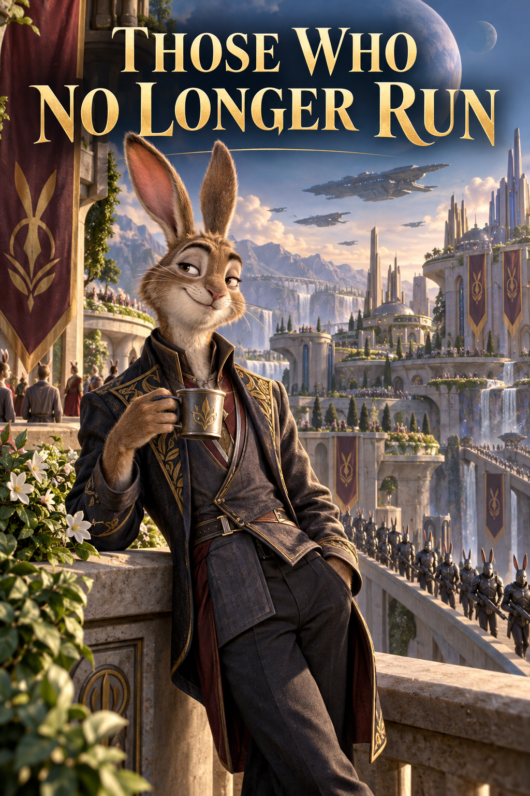

CEI CARE
NU MAI FUG
roman science-fiction
EDIȚIE EXTINSĂ ȘI REVIZUITĂ
„Pacea nu elimină selecția.
Doar mută locul în care ea se petrece.”
REPERE ALE LUMII
Termen | Sens la începutul romanului |
Arua | o lume blocată gravitațional, cu o emisferă arsă de lumină și una înghețată; viața densă se menține în Dunga de Amurg dintre ele. |
Nivarii | o specie socială, fertilă și foarte sensibilă la pericol; au ochii laterali, vele auditive mobile, membre posterioare puternice și orașe săpate ori crescute sub rocă. |
Liniștea Lungă | patru secole fără război, păstrate prin rotația Caselor provinciale, limitarea armelor, administrarea nașterilor și controlul central al hranei, luminii și infrastructurii. |
Marea Auzire | rețeaua de calcul care corelează vibrațiile orașelor, registrele populației, producția și modelele ecologice; ea recomandă, iar instituțiile pretind adesea că doar execută. |
Camera Măsurii | instituția care distribuie drepturile de naștere și resursele Dungii. |
Ivarra și Vaor | capitala centrală a păcii, respectiv un domeniu de margine unde randamentul scade, populația este ascunsă, iar vechile răspunsuri nu mai ajung. |
PERSONAJE LA ÎNCEPUTUL POVEȘTII
Sava Ilen — demograf în Camera Măsurii; crede în necesitatea limitelor, dar cunoaște cruzimea lor administrativă.
Oru Ven — partenerul Savei și inginer al rețelei radiculare; privește pacea ca pe un ecosistem care trebuie reparat, nu venerat.
Nemi — fiica lor; sensibilă la sunet, curioasă și legată de unchiul ei.
Taren Ilen — fratele mai tânăr al Savei; diagnosticat din copilărie cu întârziere a reflexului de fugă.
Seln Aru — Custodele Ivarrei; apără ordinea planetară printr-o luciditate care rareori se prezintă drept violență.
Daran Veyr — stăpânul Vaorului; cultivat, provocator și convins că centrul transformă în procedură moartea provinciilor.
Vessa Dahr — medică a comunităților neînregistrate din Vaor.
Raal — conducător al unor nivari scoși din registre și împinși spre galeriile Nopții.
CUPRINS
PARTEA I · PACEA JOASĂ
Capitolul I — Pacea de sub piatră
Capitolul II — Umbra de la amiază
Capitolul III — Treizeci și șapte de absențe
Capitolul IV — Camera Măsurii
Capitolul V — Arhiva de Jos
PARTEA A II-A · MONȘTRII FOLOSITORI
Capitolul VI — Trenul de Noapte
Capitolul VII — Al doilea Vaor
Capitolul VIII — Depozitul de Nord
Capitolul IX — Prima Față
Capitolul X — Copilul fără număr
Capitolul XI — Ceața blândă
Capitolul XII — Lacul Surd
PARTEA A III-A · CASELE VERTICALE
Capitolul XIII — După victorie
Capitolul XIV — Carta Continuității
Capitolul XV — Legea Feței
Capitolul XVI — Daran Veyr
PARTEA A IV-A · CERUL FĂRĂ PLAFON
Capitolul XVII — Iarna Albă
Capitolul XVIII — Orașul care repară urmele
Capitolul XIX — Grădinile Rudeniei
Capitolul XX — Asediul Rădăcinilor
Capitolul XXI — Custodele
PARTEA A V-A · LEGEA CELOR VII
Capitolul XXII — Procesul
Capitolul XXIII — Fiul fără frică
Capitolul XXIV — Copiii care privesc cerul
PARTEA I
PACEA JOASĂ
• • •
CAPITOLUL I
PACEA DE SUB PIATRĂ
SAVA · IVARRA · CU TREI ZILE ÎNAINTEA FESTIVALULUI RETRAGERII
De patru secole, Ivarra nu cunoscuse războiul. În acea pace, fiecare lucru periculos fusese fie scos din lume, fie mutat într-un muzeu, fie redenumit procedură.
Sava Ilen se trezi înaintea semnalului de dimineață, cu ambele vele auditive ridicate și inima grăbită de un zgomot pe care nu-l putea localiza.
Rămase nemișcată în nișa de somn. În locuințele Ivarrei, pereții nu erau complet rigizi. Rădăcina ceramică din care fuseseră crescuți păstra o elasticitate calculată, astfel încât pașii, loviturile și defecțiunile importante să poată fi simțite prin oase înainte să ajungă în urechi. Podeaua îi trimitea acum vibrații mici și dese. Nu alarmă. Nu prăbușire. Mai curând un obiect ușor lovit de alt obiect ușor, cu o încăpățânare care aparținea numai copiilor.
Sava coborî din nișă și deschise panoul camerei.
Nemi stătea în galeria comună, desculță, cu panglica de festival atârnându-i peste un ochi. Încerca să lovească podeaua de trei ori fără ca jucăria ei de os să sară dintr-un cerc desenat cu cretă.
— Umbra, adăpost, tăcere, spuse fetița. Dar dacă lovesc prea încet, instructorul zice că prădătorul mă aude între bătăi.
— Prădătorul este o pânză trasă pe sârmă.
— La exercițiu. În vechime era adevărat.
Nemi avea șase ani standard, vârstă la care un nivar putea citi, calcula rații simple și produce destulă îngrijorare pentru trei adulți. Ochii ei laterali urmăreau simultan cercul de cretă și expresia mamei. Velele lungi îi tremurau la fiecare sunet din conducte. Sistemul medical numea această sensibilitate hiperreactivitate auditivă. Oru îi spunea atenție din belșug. Sava, care avea acces la dosarul complet, nu o numea deloc.
— Întoarce-te la culcare, spuse ea. Semnalul nu a venit.
— Taren nu doarme.
Sava orientă o velă spre camera fratelui ei. Nicio respirație, niciun foșnet. Patul era gol.
— De unde știi?
— Ușa lui nu miroase a somn.
Mirosurile familiilor se amestecau în spațiile înguste ale orașului: rădăcină coaptă, puf încălzit, ulei de unelte, secreția dulce cu care părinții își marcau copiii în mulțimi. Nemi avea dreptate. Din camera lui Taren venea aer rece de galerie.
Oru apăru din bucătărie cu o cană între dinți și două farfurii în mâini. Blana scurtă de pe antebrațe îi era pătată cu verde de la nutrient, deși se spălase înainte de somn. Inginerii rețelei radiculare purtau munca în piele mai mult decât purtau uniforme.
— A ieșit la antrenamentul de tresărire, spuse el. Mi-a lăsat mesaj.
— La ora asta?
— Aparatele sunt mai convingătoare când corpul nu s-a trezit complet.
Sava luă cana pe care i-o întindea. Infuzia era amară și prea caldă.
— Asta ți se pare normal?
— Nu. Dar normalitatea este tocmai lucrul pentru care îl tratează.
Oru se așeză pe podea, cu spatele lipit de peretele curbat. Nivarii puteau folosi scaune, dar puțini le preferau. Un corp ridicat deasupra podelei pierdea informația vibrațiilor, iar patru secole nu fuseseră suficiente pentru a face această pierdere confortabilă.
Nemi se strecură între ei și luă o felie de rădăcină coaptă.
— Taren spune că aparatul se sperie mai repede decât el.
— Taren spune multe lucruri când vrea să nu răspundă, zise Sava.
— Tu răspunzi mereu?
Oru își coborî o velă ca să ascundă un zâmbet.
— Mama ta răspunde în tabele, spuse el. Dacă întrebarea nu încape într-un tabel, o pune în următorul ciclu.
Sava îi împinse cu piciorul o unealtă lăsată pe podea.
— Și tatăl tău repară conducte imaginare în timpul mesei.
Oru privea deja o proiecție deasupra încheieturii. Rețeaua de alimentare din vestul Dungii apărea ca o ramificație palidă. Trei noduri clipeau galben.
— Nu sunt imaginare. Vaor a pierdut iar presiune.
— Vaor pierde presiune în fiecare sezon rece.
— Nu în aceleași conducte. Depunerile se mută spre centru.
— Trimite raportul la infrastructură.
— L-am trimis de patru ori. Marea Auzire spune că valorile rămân în intervalul de compensare.
— Atunci rămân.
Oru stinse proiecția și o privi cu atenția întreagă. Pentru un nivar, asta cerea întoarcerea aproape frontală a capului și renunțarea la jumătate din câmpul vizual. Gestul putea fi tandru sau agresiv. La Oru era, de obicei, o cerere să nu se ascundă în profesie.
— Când ai început să vorbești despre sistem ca despre vreme? întrebă el.
— Când am aflat câte lucruri se rup dacă fiecare funcționar se crede mai inteligent decât modelul.
— Și câte se rup când nimeni nu se crede?
Nemi îi privea pe rând, mestecând lent. Sava nu voia ca fetița să transforme fiecare mică dispută în semnal de pericol. Își coborî vocea.
— După Festival citesc datele brute. Promit.
— Asta ai spus și după ultimul Festival.
— Atunci nu promisesem.
Oru acceptă diferența cu o mișcare a velei. Semnalul de dimineață veni prin podea: două pulsații joase, apoi una lungă. Orașul se trezi în jurul lor. Uși glisară. Apa începu să curgă în conductele de spălare. De undeva, un copil plânse, altul râse, iar pașii a mii de locuitori se adunară într-un murmur transmis prin rădăcinile clădirii.
Pacea Ivarrei avea un sunet. Nu era tăcere. Era zgomotul previzibil al unor corpuri care știau unde trebuie să ajungă.
• • •
Centrul de Terapie Reflexă ocupa un nivel vechi al orașului, construit înainte ca plafoanele să fie coborâte la înălțimea considerată liniștitoare. Sala de antrenament părea astfel prea vastă. Luminile erau îngropate în podea, iar deasupra se afla întuneric. Aparatele atârnau acolo ca niște animale care nu învățaseră încă să coboare.
Taren stătea în mijlocul cercului, cu labele din spate depărtate și brațele pe lângă corp.
Un braț mecanic se proiectă din stânga. Ar fi trebuit să se ghemuiască înainte să-l vadă complet. Taren întoarse capul, urmări articulația, observă uzura din capătul de prindere și abia apoi făcu un pas.
Brațul îl lovi în umăr.
— Întârziere de patru zecimi, spuse terapeuta. Din nou.
— Senzorul trei scoate un sunet înainte să pornească.
— În viața reală, pericolul scoate adesea sunet.
— Atunci nu este neașteptat.
Terapeuta se numea Mera Sol și îl tratase de când avea șapte ani. Pe atunci, Sava îl aducea de mână și semna fiecare consimțământ cu o apăsare atât de puternică încât tableta îi păstra urma degetelor. Mera îi cunoscuse puseele de furie, perioadele în care refuzase veyrina sintetică și anul în care mușcase doi asistenți. Îl considera inteligent, obositor și biologic necooperant.
— Scopul nu este să fii surprins, spuse ea. Scopul este ca mișcarea să apară înaintea analizei.
— Asta sună ca definiția unei greșeli.
— Pentru strămoșii tăi, analiza înaintea mișcării însemna moarte.
— Strămoșii mei nu locuiau sub treizeci de metri de rocă și nu aveau uși care se închid singure.
— Corpul tău nu știe asta.
— Tocmai corpul meu pare să știe.
Mera opri aparatul. Se apropie fără grabă. Era mică, cu vele auditive scurte și tăiate drept, modă veche printre terapeuți, care susțineau că pacienții se linișteau când expresiile lor erau mai ușor de citit.
— Festivalul este peste trei zile. Vei participa în grupul de supraveghere, nu în cercul copiilor.
— Nemi m-a rugat să stau lângă ea.
— Nemi are instructori.
— Instructorii îi spun să fugă după marcaj, nu după ce vede.
— Este un exercițiu comun. Trebuie să reacționeze împreună.
Taren privi brațul mecanic. La capătul lui era lipit un petic de puf negru, parte din recuzita de prădător. În copilărie îl speriase. Acum îi vedea cusătura.
— Când toți reacționează împreună, cine verifică dacă semnalul este corect?
Mera inspiră lent.
— Taren, societatea nu poate fi construită pentru excepția ta.
— Nu am cerut asta.
— Ceri de fiecare dată când transformi o instrucțiune simplă într-o dezbatere despre adevăr.
El zâmbi fără veselie.
— Sava spune același lucru cu mai multe cuvinte.
— Sava încearcă să te țină viu.
— Știu.
Aceasta era partea care făcea împotrivirea dificilă. Sava nu-l trimisese la terapie din rușine. Îl găsise, la opt ani, privind un incendiu de cablu în timp ce ceilalți copii fugiseră. Îl smulsese de lângă fum și plânsese abia după ce ajunseseră acasă. Părinții lor muriseră cu doi ani înainte, striviți într-un tunel de transport. Sava devenise soră, tutore și funcționar al supraviețuirii în aceeași zi.
Taren acceptă încă o serie. Clopot neașteptat. Podea înclinată. Miros de sânge. Siluetă căzută din tavan. De fiecare dată, corpul îi oferea o clipă în care putea să privească înainte să se teamă. De fiecare dată, aparatul numea clipa defect.
Când ieși, Sava îl aștepta în galerie.
— Ai lipsit de la micul dejun.
— Nu știam că este infracțiune.
— Încă nu. Camera lucrează la clasificare.
Mergeau spre nivelurile centrale. Taren era cu un cap mai înalt decât ea, dar încă purta ceva din copilul pe care îl trăsese prin fum: o reținere înainte de a se apropia, de parcă fiecare gest afectuos trebuia mai întâi verificat pentru capcane.
— Mera spune că nu ai voie lângă cercul lui Nemi, zise Sava.
— Mera nu are un copil în cerc.
— Nici tu.
— De aceea pot fi atent la al tău.
Sava nu răspunse. Galeria se lărgea spre Piața Joasă. Lucrătorii montau umbrele rituale ale saryxilor, pânze negre întinse pe cadre de carbon. O aripă uriașă cobora din plafon, mișcată de trolii. Copiii se opreau s-o privească până când adulții îi trăgeau mai aproape de pereți.
Taren rămase în mijlocul curentului de trecători. Oamenii îl ocoleau iritați.
— Ce este? întrebă Sava.
— Cadrul al treilea a fost mutat.
— Au schimbat traseul.
— Nu. Firele coboară spre nord, dar pânza este orientată ca și cum ar veni dinspre Zi.
— Probabil îl reglează.
Taren privi mai mult decât era nevoie. Sava îi atinse brațul.
— Nu fiecare nepotrivire este un avertisment.
— Știu.
— Atunci vino.
— Dar fiecare avertisment începe ca o nepotrivire.
• • •
În Camera Măsurii, ziua Savei trecu între cereri de naștere, relocări și calcule de hrană. Pe peretele biroului, Dunga de Amurg era redusă la o bandă colorată. Ziua arsă apărea alb, Noaptea albastru închis, iar între ele pulsa regiunea locuibilă. Din depărtare, planeta părea simplă. Problemele începeau când măreai imaginea suficient cât să apară familiile.
La sfârșitul programului, sistemul îi deschise automat dosarul personal.
CERERE ILEN–VEN / A DOUA NAȘTERE / AMÂNATĂ: 5,7 ANI.
Sava știa toate motivele înainte să le citească. Densitatea cartierului. Cota de hrană. Istoricul genetic al familiei. Hiperreactivitatea lui Nemi. Întârzierea reflexului la Taren. Modelul nu interzicea. Modelul recomanda să aștepte până când așteptarea avea să facă decizia inutilă.
Ea închise dosarul și șterse notificarea din spațiul comun. Oru avea să afle. Nu în acea seară. Nu cu Festivalul atât de aproape și cu Nemi repetând semnalul pe podea.
Când reveni acasă, îi găsi pe toți trei în galeria comună. Oru încerca să repare panglica. Nemi stătea nemișcată, chinuită de efort. Taren ținea între degete un mic mecanism de carbon scos, probabil fără permisiune, din recuzita Festivalului.
— De unde îl ai? întrebă Sava.
— Era rupt.
— Asta nu răspunde.
— Din piață.
— Mai rău.
Taren îi arătă piesa. Pe suprafața interioară se vedea o urmă de substanță neagră, ca o pulbere lipicioasă.
— Puf sintetic, spuse Sava.
— Poate.
— Ai adus acasă gunoi de recuzită ca să-mi demonstrezi că poate este altceva?
— L-am adus fiindcă miroase a proteină.
Oru luă piesa și o apropie de nări. Velele i se ridicară puțin.
— Are miros organic.
— Adeziv, spuse Sava. Materialul este ținut în depozite umede. Se contaminează.
Nemi se aplecă, fascinată.
— Este de la un saryx adevărat?
— Nu există saryxi adevărați în Ivarra, spuse Sava. Au dispărut înainte să se nască bunicii bunicilor tăi.
Taren puse piesa pe masă.
— Atunci nu avem motiv să ne grăbim.
Sava îl privi. Îi cunoștea felul de a construi îndoiala: nu afirma nimic, lăsa doar o ușă întredeschisă și aștepta ca ceilalți să audă curentul.
— Mâine o duci la laborator, spuse ea. În seara asta mâncăm.
Nemi își ridică panglica reparată.
— La Festival stai cu mine?
Taren se uită la Sava, nu la copil.
— În afara cercului, spuse Sava. Unde nu încurci instructorii.
— Destul de aproape încât să mă vezi? întrebă Nemi.
— Te văd și când nu ești aproape, răspunse Taren.
Fetița acceptă promisiunea. Mai târziu, după ce luminile se stinseră, Sava îl auzi ieșind iar din cameră. Nu-l opri. Își spuse că merge să ducă piesa la laborator. Își spuse că fratele ei avea optsprezece ani și dreptul la propriile neliniști. Își spuse că orașul era sigur.
Sub locuințe, sub piață și sub galeriile pe care hărțile publice le numeau fundație sterilă, o pompă veche porni pentru șapte secunde.
Într-un rezervor fără număr, ceva mic își desfăcu membranele și lovi sticla o singură dată.
CAPITOLUL II
UMBRA DE LA AMIAZĂ
TAREN ȘI SAVA · IVARRA · ANUL 412 AL LINIȘTII LUNGI
Înaintea atacului, Ivarra nu mai văzuse de aproape un prădător de patru secole. Cetățenii îi cunoșteau forma din lecții, muzee și jocuri rituale; nu-i mai cunoșteau mirosul.
Taren ajunse în Piața Joasă înainte ca porțile pentru public să fie deschise. Îi plăcea Ivarra în orele în care orașul nu trebuia încă să se prefacă locuit. Podeaua elastică transmitea numai vibrațiile echipelor de montaj. Aerul mirosea a lut spălat și a ulei de troliu. Pânzele negre ale umbrelor rituale atârnau nemișcate sub plafon, iar fără mulțime și muzică semănau mai puțin cu saryxii din manuale decât cu niște haine puse la uscat de un zeu neglijent.
La marginea platformei copiilor, un tehnician verifica marcajele de retragere. Le aprindea pe rând: albastru pentru primii născuți, verde pentru purtătorii de hrană, alb pentru adulții care trebuiau, simbolic, să rămână în urmă. Taren îl privi refăcând traseul de trei ori, de fiecare dată în aceeași ordine.
— Marcajul șapte este prea aproape de balustradă, spuse el.
Tehnicianul nu ridică privirea.
— A trecut inspecția.
— Dacă doi copii sar în același timp, unul va lovi marginea.
— Exercițiul nu include sărituri lungi.
— Ei nu citesc instrucțiunea când se sperie.
Tehnicianul își întoarse o singură velă spre el, economisind restul atenției.
— Tu ești ucenicul care nu se sperie suficient, nu?
În voce nu era cruzime. Era doar satisfacția unui om care găsise sertarul potrivit pentru ceva incomod.
— Așa scrie.
— Atunci lasă-i pe cei care se sperie să proiecteze traseul.
Taren ar fi putut muta singur marcajul. Adezivul era proaspăt, iar platforma încă goală. Își imagină raportul: intervenție neautorizată, tulburarea unui ritual public, repetarea conduitei opoziționale. Se mulțumi să memoreze locul.
Sub platformă exista o trapă de serviciu pe care planurile o descriau drept acces la cabluri. Sigiliul fusese schimbat în timpul nopții. Vechiul material de etanșare era cenușiu; acesta avea o dungă încă lucioasă. Taren îngenunche și puse două degete pe podea. Simți pompele, troliile și pașii echipelor. Mai jos, după o pauză prea regulată ca să fie liniște, veni o zgârietură.
— Ce cauți?
Mera Sol stătea în spatele lui. Terapeuta purta mantia verde a corpului medical și o expresie în care oboseala se amesteca cu anticiparea unei discuții cunoscute.
— Cablurile, răspunse el.
— Le-ai găsit?
— Am găsit o trapă.
— Un progres impresionant.
Îi întinse o bandă de acces galbenă.
— Vei sta în sectorul exterior. Nemi te poate vedea, dar nu intri pe platformă decât la chemarea unui instructor.
— Dacă instructorul nu poate chema?
— Atunci vei urma semnalul general.
— Tocmai asta exersăm: să urmăm un semnal indiferent de ce se întâmplă.
Mera îl privi cu tot capul.
— Exersăm să nu transformăm șase mii de reacții individuale într-o zdrobire colectivă.
— Și funcționează?
— De patru sute doisprezece ani.
Taren se ridică. Întrebarea din mintea lui — *de câte ori a fost testat?* — rămase nerostită. Mera o auzise oricum. Îi atinse bandajul fin de pe palmă, rămas de la piesa de carbon luată cu o zi înainte.
— Uneori, spuse ea, faptul că un lucru poate eșua nu înseamnă că trebuie să-l ajuți să eșueze.
— Nu l-am ajutat.
— Încă.
• • •
Când porțile se deschiseră, Ivarra intră în piață în valuri disciplinate. Familiile din cartierele centrale veneau prin galeriile largi, parfumate cu rădăcină dulce; lucrătorii de la margine coborau pe scările tehnice, cu miros de metal și miceliu în blană. Membrii Caselor provinciale purtau culorile domeniilor lor, dar fără însemne de rang. În anul de reședință, fiecare Casă trebuia să ofere capitalei imaginea supunerii, chiar dacă croiala mantiei păstra memoria unei armuri.
Nemi îl găsi înaintea Savei. Panglica albă îi stătea strâmb între vele, iar vârful stâng tremura atât de repede încât materialul foșnea.
— Ai venit.
— Am promis.
— Mama spune că promisiunile nu schimbă probabilitățile.
— Mama ta folosește probabilitățile ca să nu spună că îi este frică.
— Îi este frică azi?
Taren căută pe terasă silueta surorii sale. Sava vorbea cu Oru, dar o velă rămânea orientată spre cercul copiilor.
— Puțin, spuse el. Este o cantitate sănătoasă.
Nemi îi puse palma pe stern. Copiii simțeau mai ușor ritmul altuia decât propriul puls.
— Ție nu-ți este.
— Ba da.
— Nu se simte.
— La mine ajunge mai târziu.
Instructorul chemă grupul. Nemi îi dădu drumul, apoi se întoarse după doi pași.
— Când ajunge, mai poți alege?
Taren nu avu timp să răspundă. Copiii fură așezați în cercuri, porțile se închiseră, iar gongul adânc al deschiderii înghiți toate sunetele mici.
Gongul de deschidere răsună din bolta centrală. Șase mii de vele auditive se pliară simultan. Conversațiile se stinseră. Pe platforma Custodelui apăru Seln Aru, îmbrăcat în alb, cu tivurile mantiei brodate în modelul vechilor tuneluri de fugă. Nu era bătrân, deși liniile fine din jurul nărilor îl făceau să pară obosit. Corpul îi era mic și controlat; niciun gest nu depășea spațiul ceremonial acordat funcției.
— Ne amintim astăzi, spuse el, că am supraviețuit nu fiindcă am fost cei mai puternici, ci fiindcă am știut când să dispărem.
Mulțimea lovi podeaua o dată cu membrele posterioare. Vibrația urcă prin balustradă în oasele Savei.
— Ne amintim că viața nu cere triumf. Cere continuitate.
A doua lovitură.
— Ne amintim că eroismul strămoșilor noștri a fost numărul celor care s-au întors.
A treia lovitură se rostogoli prin oraș, preluată de piețele secundare, de școli, de fabricile de miceliu și de Grădinile Rudeniei, unde familiile Caselor provinciale trăiau ca oaspeți ai capitalei. Trei pulsații joase, vechi de dinaintea limbajului: umbră, adăpost, tăcere.
Sava le simți și în piept. Oricât ar fi disprețuit festivitățile, corpul ei știa ce înseamnă semnalul. Pentru o clipă, fiecare ieșire din piață i se aprinse în minte. Tunelul nordic, prea îngust. Galeria de vest, aglomerată. Scările Camerei, protejate de uși antifoc. În jurul ei, mii de creiere făceau aceeași hartă fără să fi fost rugate.
Din plafon coborâră umbrele rituale.
Erau pânze negre întinse pe cadre de carbon, modelate după silueta saryxilor dispăruți. Aripile lor aveau zece metri și se mișcau cu ajutorul unor fire aproape invizibile. În fiecare an, umbrele traversau piața, iar copiii trebuiau să recunoască direcția atacului și să se retragă în ordinea corectă: întâi cei mici, apoi purtătorii de hrană, la urmă adulții apți să blocheze intrările. Nimeni nu vorbea despre faptul că într-un atac real ordinea fusese aproape întotdeauna inversă.
Prima umbră trecu fără incident. Copiii se ghemuiră, apoi fugiră în arcuri scurte spre marcajele albastre. Nemi își pierdu panglica. Oru scoase un sunet triumfător.
A doua umbră coborî mai jos. Taren se dădu înapoi împreună cu grupul lui Nemi, dar cu o fracțiune prea târziu. Un supraveghetor îl apucă de braț și îl trase din traseu.
— Vezi? spuse Sava. Învață.
— Nu pare fericit.
Taren nu părea niciodată fericit când reușea să se poarte normal.
Forma din nord îi atrase atenția lui Taren cu o clipă înainte ca Sava să o recunoască. Nu pentru că vedea mai bine, ci fiindcă privea exact lucrurile pe care ceremonia le declarase irelevante: cablurile, curenții de aer, punctele oarbe dintre pânze. Umbra aceea nu era legată de niciun fir. Se deplasa prin propriul ei efort și, când își strânse membranele, Taren văzu o articulație care nu aparținea recuzitei.
Ar fi vrut să strige. Înainte ca aerul să-i intre în piept, creatura căzu.
A treia umbră nu făcea parte din ritual.
Sava o observă fiindcă venea din direcția greșită. Pânzele mecanice se deplasau de la Zi spre Noapte, imitând zborul saryxilor care foloseau curenții calzi. Forma din nord se mișca împotriva aerului, lipită de boltă. Era mai mică decât recuzita, iar marginile îi tremurau neregulat.
Pentru o bătaie de inimă, mintea Savei încercă să o introducă în categorie: dronă de întreținere, ruptură de plafon, material desprins. Apoi forma își închise aripile și căzu.
Seln Aru încă vorbea.
— Pacea nu este uitare, ci memoria disciplinată a pericolului—
Creatura lovi platforma școlarilor cu un zgomot umed. Avea șase membre, dintre care două se desfăcură în membrane cenușii. Capul era îngust, lipsit de ochi vizibili, iar gura se deschidea vertical, din piept până aproape de frunte. Pielea îi era acoperită de un puf negru care absorbea lumina.
Nimeni nu se mișcă.
Aceasta fu prima greșeală.
Festivalul îi învățase că umbrele aveau trasee și că semnalele veneau înaintea pericolului. Mii de corpuri primiră imaginea imposibilă, dar așteptară permisiunea de a o înțelege.
Saryxul își înfipse membrele din față într-un supraveghetor. Sunetul produs de gura lui nu era un urlet, ci o vibrație atât de joasă încât podeaua o transmise înainte ca urechile să o audă.
Mulțimea se sparse.
Panica nu semăna cu exercițiile. Nu avea direcție și nici centru. Podeaua devenise o singură ființă lovind în toate părțile, iar vibrațiile erau atât de dense încât Taren nu mai putea distinge pașii lui Nemi. Un adult îl izbi din lateral. Altul îi prinse brațul și îl trase spre ieșire. Taren se smulse, nu din curaj, ci ca să poată vedea.
Mai târziu, în înregistrări, primele secunde aveau să pară lente. Fiecare corp putea fi urmărit separat, fiecare alegere înghețată și comentată. Dinăuntru nu existau alegeri, numai o succesiune de presiuni: spate în piept, umăr în obraz, gheare pe podea, mirosul brusc al glandelor de alarmă. Cei mici dispăruseră sub talia adulților. Marcajul șapte era acoperit de trei corpuri.
Nemi nu mai era acolo.
Sava nu-și aminti mai târziu cum coborâse de pe terasă. Își aminti doar detalii separate: mâna lui Oru dispărând din a ei; un copil strivit de balustradă; panglicile albe plutind în aer; Custodele evacuat printr-o deschidere care nu figurase pe niciun plan public. Nivarii fugeau bine când aveau spațiu. Într-o piață închisă, fiecare salt devenea obstacolul altcuiva.
Taren rămase în picioare.
Nu din hotărâre. Nu la început. Corpul lui nu produsese comanda pe care celelalte corpuri o primiseră. Văzu creatura, văzu supraveghetorul căzut și o văzu pe Nemi, prea mică pentru a trece prin masa de adulți, împinsă spre centrul pieței.
Curiozitatea dură o clipă.
În acea clipă observă că saryxul își orienta capul după vibrații, nu după imagine. Observă că recuzita Festivalului atârna din tije de carbon lungi cât trei corpuri. Observă că toți cei care fugeau îi ofereau creaturii un câmp plin de semnale, în timp ce el, nemișcat, nu exista pentru ea.
Apoi frica veni. Veni cu întârziere, dar veni întreagă, ca o ușă deschisă spre vid. Mușchii membrelor posterioare i se încordară atât de tare încât articulațiile îl durură. Velele auditive i se lipiră de ceafă. Gura i se umplu de gust metalic.
Putea să fugă. Tunelul de serviciu era la șapte salturi.
Nemi căzu.
Taren smulse o tijă din suportul umbrei mecanice. Carbonul îi tăie palma. Se deplasă nu spre ieșire, ci lateral, călcând ușor, cu greutatea pe partea din față a labelor. Saryxul își ridică membranele și atacă o siluetă care alerga. Ghearele trecură prin mantie și scoaseră la lumină un spate subțire, alb.
Taren lovi podeaua o dată.
Creatura se întoarse spre vibrație.
El lovi din nou, mai aproape.
— Taren! strigă Sava, de undeva din mulțime.
A treia oară nu mai lovi podeaua. Înfipse tija în deschiderea verticală a gurii.
Tija vibra în mâinile lui. Taren nu știa dacă tremura carbonul, creatura sau el. Saryxul era mai ușor decât păruse în cădere. Membranele îi miroseau a mucegai cald și a lapte acru. Din apropiere, puful negru nu era uniform: fiecare filament se termina într-un cârlig care prindea praful, pielea și firele de mantie ale celor atinși.
Văzu gura închizându-se pe tijă și înțelese, cu claritatea rece pe care terapia încercase s-o scoată din el, că prima lovitură nu fusese mortală. Creatura urma vibrațiile. Mulțimea îi oferea mii. El trebuia să-i ofere una singură.
Saryxul se închise peste ea. Forța maxilarelor fisură carbonul, dar vârful intrase suficient. Taren simți rezistență, apoi o cedare moale. Creatura îl izbi cu unul dintre membre. Gheara îi deschise umărul și îl aruncă peste un marcaj albastru. Durerea făcu lumea limpede.
Nemi era la doi pași. Se târa spre el, cu o velă auditivă ruptă la vârf și ochii atât de largi încât irisurile negre păreau să-i ocupe capul.
— Nu fugi, îi spuse Taren.
Era cel mai absurd lucru care putea fi spus unui copil nivar.
— Stai jos. Nu lovi podeaua.
Saryxul se zbătea în jurul tijei. Aripile lui băteau aerul, iar puful negru se ridica în smocuri. Taren se ridică. Îi tremurau toate membrele. Înaintă când corpul îi cerea retragere și împinse din nou.
De data aceasta, tija străpunse partea din spate a capului.
Creatura se opri.
Nu imediat. Mai întâi își strânse membranele în jurul lui Taren, ca o mantie rece. Apoi gura verticală se deschise fără sunet. Un lichid limpede îi curgea pe tija de carbon și se aduna în palma lui tăiată. Mirosul era neașteptat de dulce.
Taren ținu tija până când cineva îl apucă de spate și îl trase. Saryxul căzu pe o parte.
Piața continua să se golească. Cei care nu văzuseră moartea creaturii fugeau încă. Cei care o văzuseră se opriseră la distanță și îl priveau pe Taren cu toate organele auditive îndreptate spre el. Pentru prima dată în viață, avea atenția întreagă a unui oraș.
Sava ajunse la Nemi și o strânse la piept. Oru apăru câteva clipe mai târziu, șchiopătând, cu o tăietură deasupra ochiului. Își atinse fiica, apoi pe Sava, apoi se întoarse spre Taren.
Oru îl prinse de încheietură înainte ca medicii să ajungă la el. Avea sânge pe obraz și nu era al lui. Cu cealaltă mână o ținea pe Nemi de ceafă, apăsând-o la piept. Fetița nu plângea. Velele îi rămăseseră pliate atât de strâns încât vârful celei rănite se albise.
— Ești rănit, repetă Oru, de parcă propoziția ar fi putut reface ordinea lucrurilor.
Taren privi deschiderea de pe umăr. Marginile rănii pulsa ușor. Frica sosise deplin acum, după ce nu mai avea nimic de făcut cu ea. Îi tremurau genunchii. Dinții îi loveau unul de altul.
— Nu foarte, spuse.
Sava își puse palma pe obrazul lui, apoi o retrase imediat, ca și cum apropierea ar fi fost prea dureroasă. Pe braț avea o zgârietură lungă. Taren îi văzu ochii căutând, din reflex profesional, numărul celor vii din jur.
— Ai știut ce să faci? întrebă ea.
— Nu.
— Atunci cum—
— Am văzut ce făcea.
Nemi își desprinse capul din pieptul lui Oru. Vocea îi ieși subțire.
— Mi-ai spus să nu fug.
— Da.
— A fost voie?
În jurul lor, agenții Liniștii încercau să refacă o lume în care întrebarea avea sens. Ridicau răniți, închideau intrări, întindeau ecrane în jurul cadavrului. Taren privi trupul negru culcat peste marcajele albastre și apoi copiii care încă nu îndrăzneau să se ridice.
— Nu, spuse el. Dar a fost adevărat.
CAPITOLUL III
TREIZECI ȘI ȘAPTE DE ABSENȚE
SAVA · IVARRA · PRIMELE DOUĂ ZILE DUPĂ ATAC
În rapoartele Ivarrei, atacul a durat nouăzeci și trei de secunde. Pentru cei care îi supraviețuiseră, el a continuat în mirosuri, tresăriri și propoziții neterminate mult după ce piața fusese spălată.
Medicul îl rugă pe Taren să predea tija de carbon. Folosi întâi vocea blândă rezervată răniților, apoi tonul administrativ și, în cele din urmă, chemă un agent. Taren ținea obiectul cu ambele mâini. Sângele uscat îi lipise degetele de suprafața fisurată.
Taren privi umărul. Sângele îi cobora pe braț în linii subțiri.
— Nu foarte.
— Ai ucis un saryx, spuse Oru.
Cuvântul trecu prin cei din jur ca o boală. Saryx. O creatură pe care copiii o desenau fără să creadă că existase. O formă păstrată în muzeele genetice pentru ca pacea să aibă un trecut.
— Nu există saryxi, spuse cineva.
— Acesta nu mai există, răspunse Taren.
Ar fi putut fi o glumă, dacă vocea lui nu ar fi fost atât de liniștită.
Agenții Custodelui intrară în piață în formație. Nu purtau arme vizibile; uniformele albe ale Liniștii nu aveau buzunare suficient de mari pentru a ascunde unele. Doi îi ridicară pe răniți. Alți patru desfășurară un ecran opac în jurul cadavrului. Un medic se apropie de Taren, îi pulveriză coagulant pe umăr și îi ceru să predea tija.
Taren nu-i dădu drumul.
— Este contaminată, spuse medicul.
— Și mâna mea este.
— Mâna poate fi curățată.
— Atunci curățați și tija.
Sava îi văzu maxilarul mișcându-se. Dălțile dentare din față îi ieșiseră puțin de sub buză, reflex de amenințare pe care cei educați îl controlau înainte de vârsta de șase ani. Agentul din spatele medicului făcu un pas.
— Taren, spuse ea. Dă-i-o.
El o privi cu tot capul. Câteva clipe, nu fu fratele ei. Era un animal plin de sânge, cu puf negru lipit de piept și cu o expresie pe care Sava nu o mai văzuse pe chipul niciunui nivar: nu furie, nu panică, nu ușurare.
Plăcere.
Nu plăcerea durerii sau a morții. Era mai aproape de satisfacția profundă cu care un mecanism blocat intră din nou în mișcare. Lumea îi ceruse, pentru o singură dată, exact lucrul pentru care fusese tratat ca defect.
După ce îi dădu drumul, nu mai putu opri tremurul. Medicul îl așeză pe o targă joasă și îi injectă un precursor de veyrină. Substanța îi încălzi gâtul, îi acceleră pulsul și făcu marginile pieței să pară mai aproape. Era tratamentul primit în copilărie, atunci când terapeutul voia să-i învețe corpul ordinea corectă: întâi spaima, apoi gândul.
De data aceasta, ordinea îi produse greață.
— Nu mai vreau, spuse.
— Ai o reacție de întârziere severă.
— Pericolul a trecut.
— Tocmai de aceea corpul descarcă acum.
— Lăsați-l.
Medicul ezită. Agentul care preluase tija privea spre cadavru, nu spre ei. În jur, răniții erau separați după culoarea benzilor. Roșu pentru cei care puteau muri, galben pentru cei care puteau aștepta, alb pentru cei ale căror răni erau deja închise de administrarea morții. Taren văzu o panglică de copil sub o manta albă și se ridică prea repede.
— Nu este Nemi, spuse Sava.
Nu știa de unde apăruse. Îi apăsa umărul cu o compresă și avea vocea cuiva care repetase propoziția pentru sine.
— Nemi este cu Oru. O duc la infirmeria auditivă.
Taren se așeză. În cealaltă parte a pieței, un părinte lovea ritmic podeaua, chemând un copil care nu avea să mai răspundă. Agenții îi cereau să se oprească pentru ca semnalele medicale să poată fi auzite. El continua. O lovitură, o pauză, două lovituri. Numele copilului într-o limbă mai veche decât cuvintele.
— Treizeci și șapte, spuse Sava.
— Deja ai numărat?
— Estimarea.
— Nu te-am întrebat câți.
Ea își retrase mâna de pe compresă.
— Atunci nu știu ce m-ai întrebat.
Nici el nu știa. Sava făcea ceea ce făcuse după moartea părinților lor: strângea lumea în cifre suficient de mici pentru a putea fi purtate. Taren își aminti ziua prăbușirii tunelului, mirosul de praf și registrul deschis pe masa lor. Sava avea paisprezece ani și citise de opt ori coloana cu identități, ca și cum o eroare de ortografie i-ar fi putut reda familia.
— Du-te la Nemi, spuse el. Eu nu mor.
Sava îl privi. Pentru o clipă, el îi văzu furia: nu împotriva lui, ci împotriva faptului că trebuia din nou să aleagă pe cine să păzească.
— Nu decide asta singur.
— Atunci spune-i sistemului să amâne.
Nu era o glumă bună. Sava plecă totuși, pentru că Nemi o striga din coridor.
• • •
Infirmeria auditivă fusese proiectată pentru liniște, dar după atac liniștea devenise o formă de amenințare. Copiii erau culcați în camere comune, câte patru, cu podelele amortizate și luminile coborâte. Nemi refuza să stea pe pat. Se ghemuise sub el, într-un spațiu în care niciun adult nu putea intra fără să se târască.
Oru se așeză pe podea, la o lungime de braț. Sava rămase în ușă.
— Pot închide lumina? întrebă el.
— Nu.
— O las aprinsă.
— Și ușa.
— Ușa rămâne deschisă.
Nemi ținea în pumn panglica ruptă. Atela transparentă de pe velă îi fixa marginea, dar orice mișcare a coridorului o făcea să tresară. Când un cărucior trecu pe lângă cameră, lovi podeaua de trei ori cu laba din spate. Copiii din celelalte paturi răspunseră înainte ca asistentele să-i poată opri. În câteva clipe, întreaga aripă vibra cu semnalul de umbră.
Sava își simți corpul pregătindu-se să fugă.
— Nu există nimic aici, spuse ea prea repede.
De sub pat, ochiul lui Nemi se întoarse spre ea.
— Asta ai spus și acasă.
Sava se așeză. Nu găsi nicio formulare administrativă care să poată trece de acea propoziție.
Oru întinse palma pe podea.
— Simți pompa? întrebă.
Nemi nu răspunse.
— Este pompa de apă. Două pulsații mici, una lungă. Nu este semnal. Doar împinge apa spre nivelul patru.
După un timp, mâna copilului ieși de sub pat și se așeză lângă a lui. Oru numi fiecare vibrație: liftul medical, conducta de aer, trecerea schimbului de noapte. Nu spunea că sunt siguri. Spunea ce erau.
Sava îl ascultă și înțelese de ce Taren îi salvase fiica. Nu fiindcă nu simțise frică, ci fiindcă, pentru o clipă, numise corect lucrurile din jur.
• • •
Până seara, Piața Joasă fusese spălată. Pânzele negre ale Festivalului dispăruseră, iar canalele de informație difuzau aceeași formulare: un organism experimental, eliberat accidental dintr-o instalație de cercetare, provocase un incident de mulțime. Custodele Seln Aru apăruse cu o bandă de doliu pe braț și lăudase disciplina serviciilor de intervenție. Niciun nume nu fusese rostit.
La Camera Măsurii, Sava primi lista preliminară a victimelor.
Treizeci și șapte de morți.
Unul avea leziuni produse de saryx: supraveghetorul atacat la început.
Douăzeci și nouă fuseseră striviți.
Patru muriseră după ce săriseră într-un puț tehnic.
Trei copii fuseseră sufocați de corpurile adulților care încercaseră să-i protejeze.
Sava citi raportul de două ori. În coloana „cauză instituțională”, toate cele treizeci și șapte de decese erau încadrate la eliberare biologică accidentală. Mută cursorul. Sistemul îi ceru autorizare de rang înalt pentru orice corecție.
— Nu a fost saryxul, spuse Oru din prag.
Nemi dormea la infirmerie, sedată. Oru refuzase să plece acasă și își spălase pata de nutrient de pe brațe, dar sub unghii îi rămăsese verde.
— A început din cauza lui, spuse Sava.
— Dar nu el i-a ucis.
— Diferența nu le va ajuta familiile.
— Ne-ar putea ajuta pe noi.
Sava închise raportul. Pe perete, harta populației Dungii de Amurg pulsa în mii de puncte luminoase. Fiecare punct era o naștere permisă, un deces, o migrare aprobată. Sistemul îi arăta o lume ordonată, în care viața putea fi păstrată prin numărare.
— Nu în seara asta, spuse ea.
— Tocmai în seara asta.
Oru intră și se așeză pe podea, lângă birou. Nivarii evitau scaunele înalte; nici după patru secole fără vânători aerieni, poziția expusă rămăsese inconfortabilă.
— Am fugit peste Nemi, spuse el.
Sava ridică privirea.
— Nu.
— Nu am călcat-o. Dar am trecut de ea. O clipă. Am văzut ieșirea și corpul meu a ales-o înainte să înțeleg că ea nu era cu mine.
— Ai revenit.
— Taren nu a trebuit să revină.
— Taren este bolnav.
Oru își ridică ambele vele spre ea.
— Mai crezi asta?
Sava voia să răspundă. În schimb, deschise din nou raportul și privi cifrele. Un incident. Treizeci și șapte de morți. O anomalie. Un salvator care nu fugise.
Oru nu plecă după discuție. Își scoase încălțămintea și rămase lângă birou. Sava continuă să citească lista până când numele nu mai semănau cu persoane. La al șaptesprezecelea, recunoscu o femeie care depusese cu două luni înainte cerere pentru a treia naștere. Fusese refuzată. Cei doi copii ai ei supraviețuiseră, dar rămăseseră fără părinte. Modelul avea să-i distribuie între rudele cu cea mai mică povară locativă.
— Trebuie să le spunem adevărul, zise Oru.
— Care adevăr? Că un animal a fost eliberat și că noi ne-am ucis unii pe alții încercând să fugim de el? Fiecare familie va alege jumătatea care îi convine.
— Atunci spunem ambele jumătăți.
— Canalele au primit deja formularea.
— Tu ești în Cameră.
— Camera numără. Nu vorbește.
— Tot ceea ce numără devine ceea ce ceilalți au voie să spună.
Sava își frecă ochii. În camera vecină, un operator procesa cereri de compensație. De câte ori valida un deces, podeaua transmitea o pulsație aproape imperceptibilă către arhiva centrală. Sistemul își amintea fără să jelească.
— Am fugit și eu, spuse ea.
Oru o privi.
— Te-ai întors la Nemi.
— După ce m-am lovit de balustradă. Nu m-am întors. Am fost deviată.
— Nu poți judeca primele două secunde ale unui corp.
— Eu judec vieți întregi pe baza unor procente.
— Tocmai de aceea poate ar trebui să începi cu ale tale.
Sava ridică o velă, iritată, dar nu-l alungă. Între ei se așeză oboseala familiară a celor care se iubesc și totuși locuiesc în sisteme morale diferite. Oru repara ceea ce atingea. Sava decidea ce nu putea fi reparat fără a rupe altceva.
Înainte să poată continua, pe ecran apăru solicitarea Serviciului de Restituire: un corp fusese identificat de două familii, iar predarea trebuia autorizată de un funcționar al Camerei. În zile obișnuite, disputa ar fi fost rezolvată prin amprente genetice și istoricul mirosurilor. După atac, senzorii fuseseră contaminați cu substanță de festival, sânge și spuma folosită la spălarea pieței. Sistemul oferea o probabilitate de nouăzeci și șase la sută. Nicio familie nu accepta restul de patru.
— Pot trimite pe altcineva, spuse Sava.
Oru privi cererea.
— Poți. Dar nu o vei face.
Sala de restituire fusese amenajată în depozitul în care, cu o zi înainte, comercianții păstraseră tăvi cu rădăcină coaptă. Mirosul dulce rămăsese în pereți și se amesteca acum cu antisepticul. Treizeci și șapte de nișe joase fuseseră separate prin pânze cenușii. Deasupra fiecăreia pulsa un număr. Nu existau nume până la confirmarea oficială; administrația evita să ofere doliului o identitate greșită.
La nișa paisprezece așteptau trei adulți și un copil. Două dintre femei purtau aceeași bandă de Casă, dar nu se priveau. Bărbatul stătea cu fruntea lipită de perete, ascultând vibrațiile orașului ca și cum persoana din spatele pânzei ar fi putut trimite un semnal prin conducte.
— Sunt Sava Ilen, spuse ea. Am venit pentru confirmare.
Femeia mai în vârstă îi întinse o placă de familie.
— Este fiica mea, Lera Naur.
Cealaltă femeie își ridică velele.
— Este partenera mea, nu proprietatea Casei Naur.
— Nu am spus că este proprietatea mea.
— Ați cerut să fie restituită în cavitatea familiei dumneavoastră.
— Acolo sunt strămoșii ei.
— Acolo a plecat ca să poată trăi cu mine.
Copilul se ținea de marginea hainei celei de-a doua femei. Avea o zgârietură pe obraz și o bandă galbenă la încheietură, semn că fusese tratat pentru compresie toracică. Nu plângea. Urmărea numărul nișei, care se aprindea și se stingea la fiecare respirație a sistemului de aer.
Sava deschise dosarul. Lera avea două adrese recunoscute, o legătură de reproducere încheiată cu doisprezece ani înainte și un contract de îngrijire cu femeia de lângă copil. Legea funerară fusese scrisă într-o epocă în care o persoană aparținea unei singure Case, unui singur cămin și unei singure cavități după moarte. Liniștea schimbase familiile mai repede decât schimbase formularele.
— Putem împărți cenușa, spuse Sava.
Mama Lerei se întoarse spre ea.
— Nu era o rație.
— Nu am vrut să spun asta.
— Dar asta știți să faceți. Să împărțiți ceea ce nu ajunge.
Oru făcu un pas, însă Sava îi atinse brațul. Femeia avea dreptul la acea cruzime. Poate nu față de ea; poate față de singura uniformă pe care o putea găsi.
— Aveți dreptate, spuse Sava. Procedura nu este făcută pentru viața pe care a avut-o.
Partenera Lerei o privi pentru prima dată.
— Atunci nu folosiți procedura.
Sava anulă repartizarea automată și introduse o custodie funerară comună. Sistemul marcă decizia cu roșu, cerând motiv excepțional. Scrise: „Viața persoanei decedate a cuprins mai multe legături de familie decât poate reprezenta formularul.” Câmpul accepta numai o sută douăzeci de semne. Ultimele cuvinte dispărură. Reformulă până când propoziția încăpea.
Pânza se retrase cât să permită confirmarea. Lera Naur avea ochii închiși și o urmă întunecată de-a lungul maxilarului. Nu fusese atinsă de saryx. Raportul spunea că murise prin compresie, în apropierea puțului tehnic. Brațele îi erau încă strânse în jurul unui spațiu gol.
Copilul se apropie.
— M-a pus sub ea, spuse.
Nimeni nu răspunse.
— Mi-a spus să nu mă mișc. Eu m-am mișcat.
Partenera îl trase ușor înapoi.
— Nu din cauza ta.
— Dacă stăteam, mai trăia?
Întrebarea nu avea vârsta copilului care o pusese. Sava privi în dosar, deși știa că nu exista acolo un răspuns. Modelul de mulțime putea simula presiunea, direcțiile, probabilitatea supraviețuirii. Ar fi putut calcula o lume în care copilul nu se mișcase. Ar fi produs un procent și, odată cu el, o vină nouă.
Închise dosarul.
— Te-a scos de acolo? întrebă.
Copilul dădu din cap.
— Atunci ultimul lucru pe care l-a făcut a funcționat.
— Dar ea a murit.
— Da.
Sava nu adăugă că uneori un lucru putea funcționa și totuși să distrugă persoana care îl făcuse. Copilul avea să afle destul de devreme.
La ieșire, un funcționar îi ceru să valideze cauza instituțională a morții. Pe ecran apărea din nou „eliberare biologică accidentală”. Sava deschise câmpul blocat și își folosi rangul de urgență.
— Ce scrii? întrebă Oru.
— „Deces prin protecție în incident de mulțime.”
— Este o categorie nouă.
— Acum există.
Funcționarul își plie velele, neliniștit.
— Dacă separăm cauzele, compensațiile vor fi contestate. Familiile celor striviți pot cere răspundere pentru gestionarea pieței, nu doar pentru eliberarea animalului.
— Pot cere.
— Camera va trebui să deschidă anchete.
— Atunci va deschide.
Pe drumul înapoi, trecură prin Piața Joasă. Apa de spălare fusese evacuată, tarabele ridicate, crăpăturile podelei acoperite cu rășină. Un grup de muncitori reinstala plăcile Festivalului pentru ceremonia de doliu. Pe una dintre ele rămăsese imprimată urma unui corp; rășina o făcuse lucioasă. Supraveghetorul ordonă să fie șlefuită.
Sava se opri până când urma dispăru.
— Mâine, spuse Oru, oamenii vor traversa locul fără să știe unde a fost.
— Trebuie să poată traversa.
— Asta nu înseamnă că trebuie să uite.
Sava privi muncitorul care aspira praful rezultat. Capitala era foarte bună la diferența dintre refacere și memorie. Refăcea imediat. Memoria o păstra sub niveluri la care publicul nu avea acces.
Când se întoarse la birou, schimbarea introdusă de ea se propagase deja prin sistem. Treizeci și șase de dosare așteptau reclasificarea. Fiecare familie avea acum dreptul de a întreba nu doar ce declanșase incidentul, ci ce anume îi omorâse persoana.
— Tocmai ai transformat o statistică în treizeci și șapte de anchete, spuse Oru.
— Nu. Erau treizeci și șapte înainte să le număr eu.
Ușa se deschise.
Ușa se deschise. Taren intră fără să ceară voie. Umărul îi fusese bandajat, iar blana de pe piept îi era încă umedă de la decontaminare. Purta în mână o bucată de material negru, nu mai mare decât o frunză.
Sava se ridică.
— De unde o ai?
— De pe membrană. A rămas prinsă în bandaj.
— Trebuie predată laboratorului.
— Laboratorul știe deja ce este.
Așeză bucata pe birou. La lumină, nu părea puf, ci o rețea de filamente subțiri, fiecare terminată într-un cârlig microscopic.
— Seln spune că a scăpat dintr-o instalație, continuă Taren. Agenții spun că nu există alte exemplare. Medicul a spus că specia nu se poate reproduce în climatul nostru.
— Și?
— Avea lapte în țesuturile ventrale.
Oru se apropie.
— Era femelă?
— Hrănea ceva.
Camera deveni foarte tăcută. În perete, rețeaua radiculară pompa apă cu un ritm lent, aproape organic.
Sava întinse mâna spre fragment, dar nu-l atinse.
— Poate fi o reacție hormonală indusă în laborator.
— Poate, spuse Taren.
— Atunci de ce ai venit?
Taren își întoarse capul spre harta Dungii. Lumina roșie a punctelor i se reflecta în ochii laterali, astfel încât părea că privește simultan lumea și ceva din afara ei.
— Pentru că atunci când am împins tija, am auzit două bătăi sub podea.
Sava simți cum velele i se ridică singure.
— Ce fel de bătăi?
— Nu de la mulțime. De jos. Una, apoi alta. Ca un răspuns.
— Conductele vibrează.
— Știu cum vibrează conductele.
Oru își puse palma pe podea.
— Sub piață sunt rezervoarele vechi ale muzeului genetic.
Sava se uită la el.
— Au fost golite acum optzeci de ani.
— Așa scrie în registre.
Taren zâmbi pentru prima dată după atac. Era un zâmbet mic, aproape rușinat, dar dălțile albe se văzură din nou.
— Atunci registrele ar trebui să fugă primele, spuse el.
Loviturile din rezervor nu fură auzite de public. Senzorii nivelului inferior le înregistrară și le clasificară drept dilatare structurală. Un operator obosit confirmă clasificarea fără să deschidă forma de undă.
Taren, Sava și Oru coborâră totuși până la primul sigiliu. Nu aveau acces mai jos. Galeria era îngustă, cu pereți vechi de aliaj, iar luminile se aprindeau târziu, lăsând întunericul să alerge înaintea lor.
Taren puse palma pe ușă. Nimic.
— Poate ai auzit ecoul luptei, spuse Sava.
— Poate.
— Sau un mecanism de aerisire.
— Poate.
Oru examină consola. Cineva înlocuise sigiliul de acces cu unul nou, apoi îi falsificase data de montaj. Urma era mică: un lot de polimer care nu existase la data declarată.
— A fost deschis, spuse el.
Sava privi coridorul gol. În Ivarra, ușile se deschideau pentru cei autorizați; ideea că autorizația putea fi mințită părea mai gravă decât o intrare forțată.
Dincolo de aliaj veni o atingere ușoară. Nu o lovitură. O gheară încercând suprafața.
Toți trei rămaseră nemișcați.
Taren își întoarse capul spre sora lui.
— Acum știi de ce nu vreau să fug primul.
CAPITOLUL IV
CAMERA MĂSURII
SAVA · IVARRA · A TREIA ZI DUPĂ ATAC
Camera Măsurii păstra pacea printr-o aritmetică simplă și imposibilă: fiecare viață permisă trebuia să ocupe locul unei vieți încheiate ori al unei recolte încă nesigure.
Camera Măsurii nu interzicea nașterile. Le așeza în viitor.
Aceasta era formularea oficială și, în cele mai multe zile, Sava reușea să creadă în ea. Arua nu putea fi lărgită. Spre est, țesuturile vii se coceau în aer liber, iar apa fierbea în fisurile de suprafață. Spre vest, gazele înghețau în depresiuni și vânturile purtau ace de azot solid. Între ele exista Dunga: o fâșie fertilă de șapte mii de kilometri, menținută prin oglinzi orbitale, canale geotermale și o disciplină demografică mai veche decât toate clădirile Ivarrei.
Fiecare familie primea dreptul la o primă naștere. A doua depindea de decese, de randamentul rădăcinilor, de spațiul disponibil în adâncuri și de diversitatea genetică a regiunii. A treia era rară. A patra exista numai în cântecele obscene ale provinciilor.
Nivarii trăiau, de regulă, între cincizeci și șaizeci de ani standard și se maturizau repede. Fără prădători și fără limitarea nașterilor, modelele arătau că populația s-ar fi dublat la fiecare șase ani. Într-o singură viață, Dunga ar fi devenit o masă flămândă, împinsă spre foc și gheață.
Pacea nu însemna doar absența morții. Însemna administrarea celor care nu aveau voie să existe încă.
În dimineața de după Festival, Sava primi două sute optzeci și patru de cereri. Sistemul le ordonase după urgență, ceea ce însemna, de obicei, după probabilitatea ca solicitanții să provoace scandal.
Primii intrară doi cultivatori din cartierul Sud-Rădăcină. Femeia era vizibil însărcinată, deși permisul lor fusese amânat cu patru ani. Își ținea velele auditive strâns pliate și respira pe gură, ca să nu simtă mirosul antiseptic al biroului.
— Nu cerem excepție, spuse partenerul ei. Cerem să nu fie numită încălcare.
— A fost emisă o amânare, răspunse Sava. Ați confirmat primirea.
— Am confirmat că am citit-o. Corpul ei nu a confirmat nimic.
Femeia își ridică privirea. Ochii nivarilor nu se întâlneau ușor; pentru a privi direct, trebuiau să întoarcă aproape întregul cap. Gestul ei fu astfel mai brutal decât o acuzație.
— Când am primit prima amânare, aveam doisprezece ani, spuse ea. La a doua aveam cincisprezece. Acum am nouăsprezece. Mai pot naște poate șase ani. Cât viitor trebuie să ni se dea până devine o formă de nu?
Sava deschise dosarul. Randamentul genetic al cuplului era bun. Cartierele sudice aveau însă o rezervă de hrană sub prag, iar șapte sute de nașteri fuseseră mutate în următorul ciclu.
— Copilul nu va fi luat, spuse ea. Nicio lege nu permite asta.
Partenerul râse scurt.
— Desigur. Doar vom pierde dreptul la locuință, rația suplimentară și meseriile noastre. Copilul va rămâne cu noi în timp ce noi vom fi mutați spre marginea Nopții. Foarte pașnic.
Sava simți cum una dintre vele i se orienta spre ușă. Corpul ei evalua ieșirea deși nu exista pericol. Își forță atenția înapoi.
— Pot reclasifica sarcina drept eșec contraceptiv documentat. Veți primi o sancțiune de muncă, nu relocare.
— Nu a fost un eșec, spuse femeia. Am vrut-o.
— Atunci nu vă pot ajuta.
— Ne poți ajuta. Nu vrei să minți sistemul.
— Sistemul nu este o persoană pe care o pot minți.
— Atunci de ce stai tu aici?
După ce plecară, Sava păstră dosarul deschis. Modifică un parametru de absorbție nutritivă și îl trimise din nou prin model. Cererea trecu de la roșu la galben. Eșec contraceptiv probabil. Sancțiune de o sută douăzeci de ore de întreținere publică.
În spatele cultivatorilor rămaseră două scame de puf cenușiu și mirosul dulce al unei sarcini apropiate de termen. Sava chemă următorul dosar, dar sistemul îi ceru confirmarea sancțiunii. Cursorul pulsa deasupra cuvântului *intenționat*.
Îl schimbă în *probabil accidental*.
În Camera Măsurii, mila nu avea câmp propriu. Trebuia introdusă ca eroare de măsurare, pierdere de date sau contaminare a probei. Funcționarii buni învățau să falsifice suficient de puțin încât ansamblul să rămână adevărat. Funcționarii perfecți nu mai observau că o făceau.
Sava își amintea prima zi de lucru. Avusese treisprezece ani și încă purta doliul părinților. Mentorul ei, Lio Marr, îi arătase harta Dungii și îi spusese să privească punctele roșii.
— Fiecare este cineva căruia îi spunem nu, îi explicase el. Dacă nu putem suporta asta, vom spune da tuturor, iar peste douăzeci de ani nu va mai exista nimeni căruia să-i spunem ceva.
La vremea aceea, propoziția îi păruse matură. Acum îi părea doar o lamă ținută bine ascuțită.
Restul dimineții nu-i lăsă timp să se gândească la mentor. Camera chemă următorii solicitanți și peretele proiectă o familie atât de mare încât siluetele trebuiră micșorate ca să încapă.
Se numeau Casa Pânzei, deși nu aparțineau niciunei Case politice. Doisprezece adulți locuiau împreună într-o fermă de ciuperci, creșteau optsprezece copii și cereau patru nașteri în același ciclu. Vorbea cea mai vârstnică dintre ei, Yara, cu vele late și puful tăiat scurt de munca în spori.
— Modelul vostru ne tratează ca doisprezece perechi separate, spuse ea. Noi împărțim hrana, somnul și îngrijirea. Un copil nu pierde un părinte când are unsprezece în jur.
— Modelul tratează consumul, răspunse Sava. Patru sarcini simultane vă reduc producția exact în perioada în care necesarul crește.
— Atunci ne mutăm turele.
— Ați avut două deficite în ultimii cinci ani.
— Fiindcă orașul a trimis sporii bolnavi și a numit asta variație de recoltă.
Funcționarul de lângă Sava deschise istoricul. Yara avea dreptate: pierderea fusese repartizată fermei, deși provenea dintr-un lot central contaminat. Dacă eroarea era corectată, familia îndeplinea pragul pentru trei nașteri, nu patru.
— Trei acum, a patra după două cicluri de producție stabilă, spuse Sava.
Yara nu acceptă imediat.
— Care dintre cele patru persoane așteaptă?
Camera putea calcula rații, riscuri obstetricale și diversitate genetică. Nu putea decide cui îi revenea amânarea fără să transforme ordinea administrativă într-o ierarhie intimă.
— Voi decideți, spuse Sava.
— Atunci nu ne dai trei permise. Ne dai un conflict.
— Alternativa este să aleg eu corpul.
Yara o privi cu o oboseală lipsită de ostilitate.
— Voi spuneți că nu intrați în familie. Apoi lăsați exact câtă hrană trebuie ca familia să intre singură în propriile corpuri.
În cele din urmă acceptară. La ieșire, cei doisprezece se grupaseră deja în două tabere. Sava îi auzi discutând cine muncise mai mult și cine așteptase mai mult. Decizia ei păstrase aritmetica Dungii și mutase violența în interiorul unei case.
Următorul dosar aparținea unui tehnician al oglinzilor orbitale, Lir Sen, și partenerei lui. Serviciul în roi îi acorda automat prioritate reproductivă din cauza radiației și a mortalității. Cei doi nu doreau copii. Cereau ca dreptul să fie transferat surorii partenerei, care fusese amânată de trei ori.
— Permisele nu sunt proprietate, explică funcționarul. Nu se transferă.
— Atunci de ce serviciul meu le produce? întrebă Lir. Dacă sunt compensație, lăsați-mă să aleg ce compensează.
— Sunt măsură de continuitate a liniilor expuse.
— Eu nu vreau continuitatea liniei mele.
Sava citi evaluarea surorii. Era sănătoasă, cultivatoare, într-o regiune cu surplus temporar. Fusese respinsă numai fiindcă ordinea listelor acorda întâietate funcțiilor de risc.
— Nu pot transfera dreptul, spuse. Pot corecta prioritatea regiunii și deschide un loc nou.
Funcționarul se aplecă spre ea.
— Surplusul este proiectat pentru un singur ciclu.
— Atunci autorizația este legată de acel ciclu.
— Dacă recolta scade?
— Vom reduce alt consum.
— Care?
Sava se opri. Fiecare gest de îndurare necesita o victimă contabilă, chiar dacă încă nu avea nume. Lir o privea. Nu venise să ceară generozitate, ci coerență.
— Bugetul ceremonial al districtului, spuse Sava. Festivalul are rezervă de două procente.
Funcționarul clipi.
— Ceremoniile sunt protejate.
— Copiii nu?
Permisul fu emis printr-o corecție bugetară. Câteva săptămâni mai târziu, districtul avea să protesteze că traseele Festivalului nu puteau fi reparate complet. Nimeni nu urma să lege balustrada veche de un copil încă nenăscut. Camera trăia din astfel de conexiuni invizibile.
Ultimii solicitanți ai ciclului purtau pe gât firul negru al Auzului Întreg, o tradiție veche din galeriile Nopții. Credeau că fiecare naștere aduce în comunitate o combinație de auz care nu mai existase și că alegerea embrionilor după scoruri însemna să închizi o parte a lumii înainte să poată fi auzită. Refuzaseră testarea genetică obligatorie.
— Testul nu vă obligă să selectați, spuse Sava. Numai identifică riscurile.
— Un risc identificat devine motiv de amânare, răspunse bărbatul.
— Uneori.
— Atunci testul alege chiar dacă noi nu alegem.
Partenera lui avea o mutație care putea produce surditate completă la unul din șase copii. Camera recomanda un embrion fără marker. Cei doi doreau concepție aleatorie.
— Dacă se naște fără auz, întrebă Sava, comunitatea poate susține implanturile și educația tactilă?
— Da.
— Aveți spațiu?
— Construim.
— Hrana?
— Împărțim.
— Nu este suficient să promiteți.
Femeia își desfăcu firul negru și îl puse pe masă.
— Nici modelul vostru nu promite că va exista hrană peste cincisprezece ani. Numai transformă nesiguranța lui în autoritate asupra mea.
Sava aprobă nașterea cu obligația unui fond comunitar pentru îngrijire. Nu știa dacă protejase autonomia sau transferase un risc asupra unui copil care nu putea consimți. Camera cerea ca fiecare întrebare să se termine într-un câmp verde ori roșu. Viața continua în zone pe care interfața nu le putea colora.
După plecarea lor, sala rămase goală câteva minute. Funcționarul îi trimise lui Sava raportul ciclului: șapte aprobări, nouă amânări, două sancțiuni, o corecție bugetară. Indicatorul de echitate crescuse cu o zecime. Nicio coloană nu arăta certurile, rușinea sau viitorul mutat dintr-un corp în altul.
Atunci sistemul îi deschise automat propriul dosar.
Următoarele cazuri se succedară fără pauză. O linie familială cerea drept de reproducere după ce singurul copil murise în Piața Joasă. O femeie în vârstă solicita custodia celor trei nou-născuți ascunși de fiica ei într-o conductă de încălzire. Un funcționar de rang înalt cerea ca embrionul lui să fie exceptat de la filtrarea pentru „instabilitate afectivă”, fiindcă trăsătura aparținuse unui compozitor celebru.
La mijlocul zilei, Sava ajunse la propriul dosar.
Nu-l deschisese de opt luni.
CERERE ILEN–VEN / A DOUA NAȘTERE / AMÂNATĂ: 5,7 ANI.
Motivul oficial era densitatea cartierului. Motivul real apărea numai în stratul profesional al datelor: Nemi purta o combinație rară de hiperreactivitate auditivă și tendință la panică. Nu era bolnavă. Era doar mai apropiată de strămoși decât îi plăcea modelului. Camera recomanda ca linia să nu fie multiplicată până la apariția unui partener compensator în generația următoare.
Taren, cu lipsa lui de fugă, era considerat la fel de nepotrivit din direcția opusă.
Dosarul ei personal rămase închis, dar numărul 5,7 continuă să existe în marginea vederii. Cinci ani și șapte zecimi nu erau un viitor. Nivarii nu aveau anotimpuri adevărate pe Arua; măsurau timpul prin schimbări de lumină orbitală, cicluri de recoltă și vârsta rapidă a copiilor. Peste 5,7 ani, Nemi ar fi fost aproape adultă. Sava ar fi avut douăzeci și nouă de ani, iar riscul unei nașteri ar fi crescut suficient ca modelul să recomande o nouă amânare.
În timpul prânzului, Oru veni la Cameră cu două recipiente de supă de miceliu. Nu avea voie în zona de decizie, așa că mâncară într-o nișă a coridorului, lângă o hartă decorativă a vechilor migrații.
— Nemi doarme, spuse el. Taren stă lângă ușa ei și sperie asistentele.
— Cum le sperie?
— Le întreabă de ce îi administrează sedative înainte să-i explice ce sunete aude.
— Asta nu este întrebare medicală. Este o acuzație cu semn de întrebare.
Oru îi întinse recipientul. Sava îl luă, evitând să-i arate că mâinile îi tremurau.
— Ai deschis iar cererea noastră, spuse el.
Nu era întrebare. În familii, sistemele partajau prea multe urme pentru minciuni complete.
— A apărut automat.
— Și?
— Nimic nou.
— Cinci virgulă șapte?
Sava îl privi.
— Ai verificat.
— Tu ai ascuns notificarea.
— Nu voiam discuția azi.
— Ai ales ziua pentru amândoi.
O femeie trecu prin coridor și își coborî velele, prefăcându-se că nu aude. Intimitatea în Ivarra nu însemna absența martorilor, ci acordul lor de a nu memora.
— Modelul spune că Nemi poartă hiperreactivitatea mea de familie, zise Sava. Iar linia Ilen are și abaterea lui Taren. Recomandă să așteptăm o compensare genetică.
— Un copil nu este o reparație statistică.
— Tocmai fiindcă nu este nu putem ignora ce îi dăm.
— I-am dat lui Nemi auz bun, o minte bună și o mamă care știe toate motivele pentru care nu ar fi trebuit să existe.
Sava puse recipientul jos.
— Nu spune asta.
— Nu eu o spun. Camera o spune. Tu doar îi împrumuți vocea.
Oru regretă imediat. I se văzu în felul în care ambele vele coborâră, dar propoziția rămase între ei.
— Am schimbat dosarul cultivatorilor, spuse Sava după o vreme.
— Ce dosar?
— O sarcină nepermisă. Le-am evitat relocarea.
— Și asta ar trebui să-mi dovedească—
— Îți spun că nu sunt vocea Camerei.
— Atunci cine ești când vine vorba despre noi?
Răspunsul fu întrerupt de vibrația unui mesaj prioritar. Pe încheietura Savei apăru sigiliul alb al Custodelui.
Ascensorul spre Arhiva de Jos nu cobora imediat. Ușile se închiseră, lumina se stinse, iar cabina rămase nemișcată cât timp sistemul verifica mirosul, masa corporală, ritmul inimii și profilul vibrațional al ocupantului. Cei doi agenți de lângă Sava nu vorbeau. Nu purtau arme vizibile, dar tălpile uniformelor aveau inserții grele, neobișnuite pentru un oraș în care podeaua trebuia simțită.
Pe măsură ce coborau, zgomotul Ivarrei se subția. Mai întâi dispărură vocile, apoi pompele cartierelor, apoi tremurul trenurilor. Rămase numai frecarea cablului și propria inimă. Corpul Savei nu fusese construit pentru o asemenea izolare de turmă. Velele i se rotiră inutil, căutând informații.
— Cât de jos mergem? întrebă.
Agentul din dreapta răspunse:
— Sub ceea ce se numără.
Cabina se opri cu o smucitură. Ușa se deschise spre aliajul cenușiu al unei epoci pe care capitala prefera să o păstreze în muzee. Aerul era rece, uscat și purta un miros slab de proteină vie.
Sava făcu doi pași, apoi îl văzu pe Seln Aru lângă primul bazin.
În lichidul transparent plutea o gură încă nenăscută.
CAPITOLUL V
ARHIVA DE JOS
SAVA ȘI TAREN · IVARRA · SFÂRȘITUL SĂPTĂMÂNII
Curățarea transformase prădătorii în exponate și pacea într-o infrastructură. Arhiva de Jos păstra dovada că niciunul dintre aceste lucruri nu fusese definitiv.
Arhiva de Jos nu exista pe planurile publice. Sava coborî cu un ascensor fără marcaje, împreună cu doi agenți ai Liniștii. Ușa se deschise sub nivelul rezervoarelor vechi, într-o galerie atât de joasă încât trebuia să țină velele auditive pliate. Pereții nu erau crescuți din rădăcină, ci turnați dintr-un aliaj cenușiu, tehnologie din perioada Curățării.
Seln Aru o aștepta lângă un bazin transparent.
În interior plutea un embrion de saryx.
Avea dimensiunea palmei ei și aripile strânse în jurul corpului. Un cordon subțire îl lega de o membrană nutritivă. Dincolo de primul bazin se întindeau alte zeci, unele goale, altele populate de forme pe care Sava le recunoscu din manualele de ecosistem dispărut: vânători de fisură, viermi cu fălci radiale, păsări oarbe care simțeau căldura sângelui.
— Rezervoarele au fost declarate golite, spuse ea.
— Au fost declarate închise, răspunse Custodele.
— Raportul folosește cuvântul „sterilizate”.
— Raportul public.
Seln își plimbă degetele peste sticla bazinului. Embrionul se contractă.
— Curățarea a fost cea mai mare intervenție biologică din istoria noastră. Am eliminat nouăzeci și două de specii care ne consumau, ne parazitau sau concurau cu noi pentru rădăcinile comestibile. Douăzeci și trei erau noduri esențiale în rețelele trofice. Le-am înlocuit funcțiile prin organisme proiectate. Majoritatea sistemelor funcționează. Unele doar par să funcționeze.
— Păstrați copii pentru restaurare.
— Păstrăm opțiuni.
— Și una dintre opțiuni a mâncat un supraveghetor.
Custodele întoarse capul spre ea. Atenția lui întreagă era rece, nu agresivă.
— Una dintre opțiuni a fost eliberată. Nu a scăpat.
Sava simți impulsul de a privi în spate.
— De cine?
— Accesul a fost autorizat cu identitatea lui Reu Tal, fost curator al muzeului genetic.
— Nu cunosc numele.
— A murit acum treizeci și unu de ani.
Un agent îi întinse o placă de date. Înregistrarea arăta sigiliul deschizându-se cu patru zile înainte de Festival. O siluetă acoperită complet intra în cameră și transfera trei incubatoare într-un cărucior de serviciu. Imaginea nu păstra miros, temperatură sau proporții. Marea Auzire reconstruise traseul până la rezervoarele de sub piață, unde semnalul se pierdea.
— Trei, spuse Sava.
— Da.
— Taren a auzit două răspunsuri sub podea.
Seln nu păru surprins.
— Fratele dumneavoastră observă lucruri pe care ceilalți le acoperă cu propriul zgomot.
— De ce m-ați chemat?
— Pentru că lucrați cu populații. Vreau să știu cine beneficiază de frică.
— Oricine vinde adăposturi, medicamente sau autoritate.
— Prea general.
Seln porni de-a lungul bazinelor. Sava îl urmă, cu agenții la distanță.
— În ultimele douăzeci de cicluri, continuă el, provinciile de margine au cerut derogări de la legea protecției biologice. Spun că organismele de substituție nu mai țin sub control consumatorii de rădăcini. Spun că bandele clandestine fură recolte și se retrag în Noapte. Cer dreptul de a forma gărzi, de a purta proiectile termice, de a ucide.
— Camera a refuzat.
— Corect.
— Credeți că o Casă provincială a eliberat saryxul ca să dovedească necesitatea armelor.
— Cred că pacea produce industrii ale pericolului exact cum războiul produce industrii ale siguranței.
Ajunseră la un bazin gol. Pe sticlă rămăseseră urme proaspete de condens.
Sava se apropie de bazinul gol. Pe marginea metalică exista o zgârietură recentă, acoperită grăbit cu lac. Un miros dulceag, același pe care îl simțise pe fragmentul adus de Taren, ieșea din filtrul de ventilație.
— Câte exemplare mature erau păstrate aici? întrebă.
— Niciunul, răspunse Seln.
— Ați spus că animalul a fost eliberat, nu crescut.
— A fost scos ca embrion. Incubarea s-a făcut în rezervoarele muzeului.
— Cu ce hrană?
— Biomasa dispărută din camerele agricole.
Sava privi din nou placa de date. Traseul avea goluri exact în locurile în care hărțile publice deveneau schematice. Cineva nu doar cunoștea orașul de sub oraș, ci știa ce nu putea vedea Marea Auzire.
— De ce nu opriți toate trenurile și nu percheziționați Casele?
— Pentru că frica are nevoie de o poveste înainte de a accepta o percheziție. Dacă o oferim noi, autorul atacului va primi mai mult decât a cerut.
— Treizeci și șapte de morți nu sunt destui pentru o poveste?
Seln își puse palma pe sticla unui bazin. Înăuntru, o creatură mică, cu fălci radiale, se contractă spre căldură.
— Sunt prea mulți pentru adevăr și prea puțini pentru stabilitate, spuse el. Familiile vor răspunsuri personale. Instituțiile pot oferi numai răspunsuri repetabile.
— Aceasta este o formulare pentru minciună.
— Este o formulare pentru timp.
Sava înțelese atunci de ce Custodele părea mereu obosit. Nu fiindcă îndoiala îl rodea, ci fiindcă se considera singurul adult într-o lume de reacții rapide. Era o aroganță rece, dar nu una simplă. El chiar vedea câte sisteme se puteau rupe.
— Domeniul Vaor a pierdut douăzeci și unu la sută din recoltă, spuse Seln. Stăpânul lui, Daran Veyr, se află în capitală pentru anul de reședință. Astăzi va cere din nou drepturi de apărare.
— Și dumneavoastră veți refuza din nou.
— Desigur.
— Atunci ce doriți de la mine?
— Să mergeți în Vaor și să verificați datele.
Sava se opri.
— Nu sunt inspector agricol.
— Nu. Sunteți unul dintre puținii demografi care au corectat vreodată o decizie a Marii Auziri fără să lase urme suficiente pentru o sancțiune.
Sava își ținu respirația.
— Nu știu la ce vă referiți.
— Cultivatorii din Sud-Rădăcină vor fi recunoscători.
Seln continuă să meargă. Nu exista amenințare în vocea lui. De aceea era o amenințare bună.
— Vaor declară patru sute de mii de locuitori, spuse el. Consumul indică cel puțin patru sute șaptezeci de mii. Fie ascund nașteri, fie hrănesc ceva ce nu figurează în registre. Vreau să știu care variantă este mai periculoasă.
— Iar Taren?
— Ce este cu el?
— Nu m-ați adus aici ca să vorbim numai despre cifre.
Custodele se opri la capătul galeriei. În spatele sticlei, un vânător de fisură își deschise ochii multipli și îi închise la loc.
— În societatea noastră există, la fiecare generație, câteva mii de indivizi cu reflex de fugă redus. Cei mai mulți mor în accidente înainte de maturitate sau sunt stabilizați chimic. Unii devin tehnicieni buni. Câțiva caută pericolul cu încăpățânarea celor care vor să dovedească faptul că diagnosticul lor este o insultă.
— Taren nu caută pericolul.
— Ieri a mers spre el.
— Ca să salveze un copil.
— Motivele sunt poveștile pe care comportamentul le spune după ce s-a produs.
Sava își ridică ambele vele.
— Vorbiți despre fratele meu ca despre o variabilă.
— Asta faceți și dumneavoastră cu copiii altora.
Lovitura fu precisă. Sava nu găsi un răspuns care să nu fie defensiv.
— Nu intenționez să-l arestez, continuă Seln. Nici să-l transform într-un simbol. Ambele ar fi greșeli. Va merge cu dumneavoastră la Vaor ca responsabil de securitate.
Sava râse, neîncrezătoare.
— Nu există asemenea funcție.
— Va exista până la apus.
— Credeți că eliberarea saryxului are legătură cu Daran Veyr și îi trimiteți chiar individul care a ucis unul?
— Trimit o întrebare într-un loc care pretinde că are nevoie de răspuns.
— Și dacă răspunsul nu vă place?
Seln își plie o velă într-un gest aproape amabil.
După ce Seln îi comunică misiunea, o conduse într-o încăpere laterală. Acolo nu existau bazine, ci hărți vechi ale Dungii, desenate înaintea Marii Auziri. Provinciile apăreau ca rețele de tuneluri independente, legate prin coridoare înguste. Fiecare Casă își marca teritoriul cu un simbol de dentiție: dălți lungi, dălți despicate, margini pictate cu ocru.
— Înaintea Liniștii, spuse Seln, o Casă nu cucerea orașul alteia. Îi bloca apa și aștepta ca nașterile să facă restul.
— Știu istoria.
— Cunoașteți versiunea în care Custodele a convins războinicii să depună armele. Adevărul este că erau epuizați. Pacea a câștigat fiindcă le-a permis să-și păstreze descendenții și o parte din prestigiu.
Arătă spre un cerc desenat în jurul Ivarrei.
— Reședința anuală a Caselor nu este ceremonie. Nici Grădinile Rudeniei nu sunt școală de elită. Sunt ostatici tratați bine. Dacă Vaorul se ridică, Daran știe că jumătate dintre nepoții și verișorii lui dorm sub controlul meu.
— Și totuși credeți că el ar elibera un saryx în piața lor.
— Poate tocmai fiindcă sunt acolo. Un conducător care vrea să schimbe regula trebuie să arate că regula nu-i protejează nici pe ai lui.
Sava se uită la hărți. Patru secole de pace îndepărtaseră armele, dar nu și arhitectura suspiciunii. Orașele provinciale își trimiteau copiii în capitală; capitala le trimitea hrană, lumină și modele. Fiecare parte numea schimbul cooperare ca să nu trebuiască să-l numească garanție.
Seln desprinse harta Ivarrei din rama ei. În spate se afla o ușă fără mâner, atât de bine potrivită în aliaj încât Sava o confundase cu peretele. Custodele își apăsă încheietura pe un cititor vechi. Mecanismul răspunse printr-un trosnet gros, diferit de sunetele discrete ale orașului modern.
— Dacă tot cunoașteți istoria, spuse el, ar trebui să vedeți locul în care a încetat.
Dincolo de ușă cobora o scară îngustă. Aerul era uscat și avea gust de metal. Nicio rădăcină vie nu traversa pereții; constructorii Curățării se temeau că organismele orașului puteau purta otravă, spori sau semnale între tabere. Fiecare suprafață fusese izolată de celelalte. Sava își auzea pașii fără vibrația liniștitoare prin care clădirile locuite răspundeau de obicei corpului.
Camera de jos nu semăna cu un monument. Era un adăpost de apărare lăsat aproape intact: recipiente pentru apă, filtre desfăcute, culcușuri săpate unul deasupra altuia și o conductă astupată cu fragmente de mobilier. Pe podea se vedeau cercuri palide, urmele vaselor în care fusese crescută hrană de urgență. De-a lungul unui perete, cineva zgâriase linii în grupuri de câte nouă.
— Al treilea asediu al Ivarrei, spuse Seln. O mie opt sute de persoane au rămas aici douăzeci și șase de zile. Casa Ocrului controla galeria de apă. Casa Miezului controla ieșirile spre suprafață. Fiecare aștepta ca cealaltă să fugă prima.
Sava numără grupurile de linii până când renunță.
— Cine a câștigat?
— Ciuperca din filtre.
El ridică o sită mineralizată. În ochiurile ei rămăseseră întipărite filamente negre.
— A intrat din rezervoarele de hrană. A îmbolnăvit ambele tabere. Când porțile s-au deschis, războinicii nu mai puteau ține armele, iar cei pe care trebuiau să-i apere încercau să-i omoare pentru apă.
Într-un culcuș inferior se afla o centură mică, întărită cu plăci de os. Fusese construită pentru un adolescent. Pe interior, proprietarul zgâriase trei nume și, sub ele, o serie de crestături mai scurte.
— Curieri, spuse Seln. Corpurile mici încăpeau prin conductele de ventilație. Casele selectau pentru auz, viteză de maturizare și capacitatea de a rămâne treaz sub stres. Copiii care se întorceau erau lăudați. Cei care refuzau erau numiți blânzi și primeau mai puțină hrană.
— Manualele spun că războinicii au ținut copiii departe de luptă.
— Manualele sunt scrise pentru copiii pe care vrem să-i ținem departe de luptă.
Sava atinse centura. Materialul se sfărâmă la margine și își retrase degetele.
În capătul adăpostului, o ușă fusese sudată din exterior. Pe ea se vedeau lovituri vechi, unele la înălțimea adulților, altele mult mai jos.
— Cine era acolo?
— Bolnavii. Primul Aru era intendentul care a ordonat sigilarea. Nu a fondat Liniștea printr-un discurs. A împiedicat infecția să urce în oraș și a lăsat două sute doisprezece de persoane să moară în spatele acestei uși.
Sava se întoarse spre el. Pentru prima dată, numele Custodelui nu mai părea un titlu neutru, ci o moștenire.
— Și a fost răsplătit.
— A fost singurul administrator care mai avea apă, registre și o rețea de distribuție funcțională. Răsplata a venit după necesitate, apoi a fost rescrisă ca virtute.
— De ce păstrați asta?
— Pentru același motiv pentru care păstrăm embrionii. O instituție care își distruge trecutul rămâne fără avertismente. Una care îl expune tuturor riscă să transforme avertismentele în modele.
Sava privi ușa sudată. Argumentul îi provoca repulsie tocmai fiindcă înțelegea mecanismul. Copiii învățau prin imitație. La fel și Casele. O atrocitate descrisă suficient de precis putea deveni instrucțiune.
— Ați moștenit și decizia? întrebă.
— Am moștenit condițiile în care cineva va trebui s-o ia din nou.
— Asta vă spuneți ca să puteți dormi?
Seln își trecu degetele peste una dintre loviturile joase.
— Nu dorm bine.
Răspunsul nu ceru milă. Tocmai de aceea Sava îl crezu.
La urcare, observă niște canale subțiri tăiate în trepte. Fuseseră făcute pentru scurgerea sângelui sau pentru colectarea apei; nu putea decide. În orașele moderne, orice structură avea o singură funcție declarată și alte zece ascunse. În adăpostul vechi, funcțiile nu fuseseră niciodată separate.
Când ajunseră din nou lângă hărți, lumina lor blândă păru indecent de curată. Seln reașeză planul Ivarrei peste ușă, acoperind adăpostul cu desenul unei capitale pacificate.
— Ce nu-mi spuneți? întrebă.
Seln își ridică o velă, aproape apreciativ.
— Multe lucruri. Unele pentru că nu le știu.
— Despre Taren.
— Fratele dumneavoastră nu este primul individ cu reflex redus care a fost folosit în perioade de criză. În timpul Curățării, asemenea indivizi intrau în cuiburi, conduceau prădători spre capcane și rămâneau lângă mecanisme instabile. După aceea, aproape toate liniile lor au fost descurajate reproductiv.
— De ce?
— Pentru că o societate poate avea nevoie de câțiva care nu fug. Nu poate avea încredere într-o populație întreagă care nu știe când să o facă.
Sava simți furia urcându-i în gât.
— Camera încă filtrează trăsătura.
— Camera filtrează multe amintiri biologice ale epocii în care ne omoram.
— Și acum îl trimiteți pe Taren să facă exact lucrul pentru care i-ați împiedicat linia să continue.
— Nu eu am construit contradicția. Eu doar am recunoscut-o la timp.
• • •
La întoarcerea în nivelurile locuite, Sava îl găsi pe Daran Veyr așteptând în sala audiențelor provinciale. Era cu un cap mai înalt decât Custodele și purta mantia brună a Vaorului, întărită la margini cu plăci de lemn fosil. Casele fuseseră obligate de patru secole să-și lase vechile armuri în muzee, dar fiecare își transformase hainele în amintiri subtile ale lor.
Daran stătea în centrul sălii, expus, ignorând reflexul cultural de a rămâne aproape de pereți. Când o văzu, întoarse tot corpul spre ea.
— Sava Ilen.
Nu era o întrebare.
— Stăpân Veyr.
— Fratele dumneavoastră a făcut ieri un lucru urât și necesar.
— A făcut un lucru necesar. Urâțenia a venit înainte.
Daran își arătă pentru o clipă dălțile dentare, un zâmbet provincial prea larg pentru gustul capitalei.
— În Vaor, deosebirea dintre înainte și după nu ne hrănește.
— Veți avea ocazia să-mi arătați datele.
— Datele sunt cadavrele rădăcinilor. Le puteți număra.
— Asta intenționez.
— Iar Taren?
Sava observă că nu întrebase dacă vine, ci îl revendica deja.
— Taren decide singur.
Daran Veyr nu plecă după scurta lor conversație. O urmă pe Sava până în galeria de ieșire, păstrând distanța politicoasă de două brațe. Gărzile lui — oficial, servitori de rang — se deplasau fără zgomot, deși purtau încălțăminte grea. În Ivarra, numai cei care voiau să ascundă vibrațiile învățau asemenea mers.
— Ați văzut arhiva, spuse el.
Sava se opri.
— Nu știu despre ce vorbiți.
— Mirosul de conservant rămâne în blană. Capitala păstrează sub piatră exact lucrurile pentru care ne refuză armele.
— Ce cereți de fapt, stăpân Veyr?
— Dreptul ca oamenii mei să nu moară în mod administrativ.
— O formulare frumoasă nu transformă o gardă într-un canal de irigație.
— Nici o formulare oficială nu transformă foamea într-o amânare.
Daran se apropie suficient încât Sava să vadă micile crestături din dălțile lui. În provinciile vechi, luptătorii își marcau fiecare ucidere. Acestea puteau fi decorative; tocmai de aceea erau neliniștitoare.
— Vaorul pierde rădăcini de șase ani, continuă el. Raportăm larvele, schimbarea umidității, furturile și colapsul organismelor de substituție. Marea Auzire răspunde că randamentul total al Dungii compensează. Centrul numește pace situația în care moartea are loc suficient de departe.
— Și un saryx în Ivarra o aduce mai aproape.
Pentru prima dată, zâmbetul lui dispăru.
— Credeți că eu l-am eliberat.
— Cred că dumneavoastră beneficiați.
— Beneficiul nu este dovadă. Altfel, Camera Măsurii ar fi vinovată pentru fiecare copil care nu se naște.
Se înclină foarte puțin.
— Veniți și numărați-ne. Dar numărați și ceea ce sistemul a decis că nu merită un număr.
• • •
În apartamentul familiei, Taren împacheta puținele lucruri pe care le avea: două uniforme, o unealtă de ascuțit dălțile, o placă de lectură, fragmentul negru pe care ar fi trebuit să-l predea laboratorului. Nemi stătea pe pat și îl privea. Vârful uneia dintre vele fusese cusut și ținut de o atelă transparentă.
— Mama spune că Vaor este frig, spuse ea.
— Mama spune adevărul când vorbește despre temperaturi.
— Sunt monștri acolo?
— Peste tot sunt. De obicei au funcții.
Nemi se gândi.
— Tu ce funcție ai?
Taren își strânse geanta.
— Încă nu mi-au inventat numele.
Sava intră la timp ca să audă.
— Nu ești obligat să vii.
— Custodele a spus că sunt.
— Pot contesta numirea.
— De ce ai face-o?
— Pentru că Seln te folosește ca probă. Daran te va folosi ca steag. Niciunul nu este interesat de tine.
— Ieri nimeni nu era interesat de mine. A fost mai simplu, nu mai bine.
Oru se sprijinea de tocul ușii. Nu interveni. Taren îi atinse lui Nemi atela, cu o grijă neașteptată în degetele bandajate.
— Când au venit umbrele, spuse el, toți știau ce trebuie să facă. Eu nu. Pentru o clipă am fost singurul liber din piață.
— Erai singurul defect, răspunse Sava.
— Poate libertatea este numele frumos pe care îl dăm unui defect atunci când devine util.
Își ridică geanta și trecu pe lângă ea.
— Plecăm la primul tren de Noapte.
— Taren.
Se opri.
Sava voia să-i spună despre cele trei incubatoare, despre identitatea unui mort și despre bazinele ascunse. Voia să-i spună că provincia îl aștepta prea mult pentru ca întâlnirea să fie întâmplătoare. În loc de toate acestea, întrebă:
— Ce ai simțit când ai ucis creatura?
Taren rămase cu spatele la ea. Velele lui se mișcară lent, ascultând camera, conductele, orașul întreg.
— Că lumea încetase să mă mai mintă, spuse.
După plecarea lui Taren, Sava rămase în camera lui. Patul nu fusese strâns. În sertarul deschis găsi fișele vechi de terapie, pe care el le păstrase deși pretindea că nu-l interesează diagnosticul. Pe fiecare apărea același grafic: stimul, întârziere, reacție. La șapte ani, întârzierea fusese de 0,8 secunde; la doisprezece, 0,5; în ultimele luni, 0,4. O viață întreagă redusă la intervalul în care ceilalți fugeau înaintea lui.
Oru intră și închise sertarul.
— Nu ar trebui să citești asta fără el.
— Eu am semnat tratamentele.
— Atunci le-ai citit destul.
Sava se așeză pe marginea patului.
— Seln știa. Au folosit oameni ca Taren în timpul Curățării, apoi le-au redus drepturile de reproducere.
— Nu este surprinzător.
— Ar trebui să fie.
— Ar trebui, spuse Oru. Dar sistemele păstrează instrumentele pe care le condamnă. Le dau alt nume și le încuiă până când au nevoie de ele.
— Vine cu noi.
— Știu.
— Și Nemi.
Oru își ridică brusc velele.
— Nu.
— Grădinile de școală se închid pentru anchetă. Nu o pot lăsa la rude; jumătate din oraș este în verificare, iar cealaltă jumătate răspândește zvonuri despre saryxi în conducte.
— Atunci rămân eu cu ea.
— Avem nevoie de tine în Vaor. Consumul agricol și rețeaua radiculară sunt cheia datelor.
— Custodele are mii de ingineri.
— Niciunul în care am încredere.
Tăcerea se strânse între ei. Nemi apăru în ușă, purtând geanta mică de călătorie. Ascultase destul.
— Vaor este frig? întrebă.
Oru închise ochii o clipă.
— Da.
— Sunt monștri?
Sava răspunse înaintea lui:
— Sunt probleme pe care încă nu le înțelegem.
— Taren spune că monștrii au funcții.
— Taren spune lucruri care sună bine și sunt greu de folosit.
Nemi își puse geanta pe pat.
— Atunci vin să văd ce folosiți.
Înainte de culcare, Nemi începu să-și ia rămas-bun de la apartament. Nu numi gestul astfel. Merse din cameră în cameră și înregistră cu placa sunetele pe care le cunoștea: pompa de la nivelul patru, vibrația ascensorului vecinilor, trosnetul rădăcinii portante atunci când oglinda orbitală schimba unghiul luminii. La fiecare înregistrare spunea locul și ora, ca un tehnician foarte mic.
— Nu poți lua casa cu tine, îi spuse Sava.
— Nu iau casa. Iau ce face casa când nu vorbește nimeni.
Oru, îngenuncheat lângă peretele de serviciu, desprindea conexiunile personale de la rețeaua radiculară. Firele vii se retrăgeau încet în nișe, lăsând în urmă picături transparente. Apartamentul avea să fie repartizat unei alte familii înainte ca trenul lor să ajungă la Vaor. În Ivarra, spațiul nu rămânea sentimental.
Nemi intră în camera ei și scoase de sub pat o cutie cu obiecte inutile: o piatră roșie de la suprafață, două membrane uscate de plantă, o figurină de festival și dintele de lapte pe care Camera îl ceruse pentru arhiva genetică, dar pe care Oru îl declarase pierdut.
— Doar ce încape în geantă, spuse Sava.
Copila așeză cutia lângă bagaje.
— Încape dacă scot hainele.
— În Vaor este frig.
— Atunci port toate hainele.
Oru râse, apoi se opri, surprins de propriul sunet. Era prima dată când unul dintre ei râdea după piață. Nemi îi privi pe amândoi, verificând dacă gestul era permis. Sava simți cât de repede copiii transformau starea părinților în lege naturală.
— Ia piatra și figurina, spuse ea. Membranele se vor sfărâma. Dintele rămâne aici.
— De ce?
— Pentru că aparține arhivei.
— Atunci și eu aparțin arhivei?
Sava deschise gura și o închise. Oru scoase dintele din cutie și îl înveli într-o bucată de țesătură.
— Îl ia, spuse el.
— Este material genetic nedeclarat.
— Este o bucată din copilul nostru.
— Exact de aceea există regulile.
— Regulile există pentru probe, nu pentru amintiri.
— Nu poți separa una de alta.
Nemi ținea geanta deschisă între ei. Cearta nu crescuse în volum, dar velele ei urmăreau fiecare schimbare de ton.
Oru puse dintele în buzunarul interior.
— Atunci să consemneze cineva că am ales greșit.
Sava voia să-l oblige să-l lase. Ar fi fost simplu: o notificare, un inventar de plecare, un agent la peron. În schimb, se așeză lângă Nemi și împături hainele astfel încât să rămână loc pentru piatră.
— Înregistrează și camera noastră, spuse ea.
Nemi porni placa. Pentru câteva clipe, toți trei tăcură. Se auzeau firele radiculare retrăgându-se din perete, respirațiile lor și, foarte departe, loviturile de doliu care încă traversau orașul. Apartamentul nu era liniștit. Nici nu fusese vreodată. Ei doar cunoscuseră până atunci numele tuturor zgomotelor.
• • •
La câteva minute după miezul ciclului, Marea Auzire emise o corecție automată pentru recensământul Vaorului. Populația estimată nu era de patru sute șaptezeci de mii, ci de cinci sute douăzeci și trei de mii.
Sava deschise stratul de proveniență al datelor. Corecția fusese declanșată de un consum nocturn uriaș în douăzeci și șapte de camere agricole declarate abandonate.
Tiparul nu semăna cu hrănirea adulților.
Sava proiectă forma de consum peste harta camerelor abandonate. Pulsațiile erau scurte și dese, grupate în jurul orelor în care inspecțiile automate își recalibrau senzorii. O populație ascunsă știa nu numai să trăiască în afara registrelor, ci și când sistemul clipea.
La marginea modelului apărea o a doua anomalie: cantități mici de proteină transportate din Vaor spre Ivarra în ultimele opt luni. Destinațiile fuseseră șterse, însă masa cumulată corespundea celor trei incubatoare.
— Cineva hrănește copii și prădători prin aceeași gaură, spuse Oru.
Sava privi cele două tipare suprapuse. Nu știa încă dacă erau opera aceleiași rețele sau dacă o injustiție fusese folosită ca să ascundă alta.
Pe peretele camerei, ora plecării se aprinse în alb.
TRENUL DE NOAPTE · 03:10 · PATRU PASAGERI AUTORIZAȚI.
Sub listă apăru o notă adăugată de biroul Custodelui:
RESPONSABIL DE SECURITATE: TAREN ILEN.
Pentru prima dată, defectul fratelui ei avea o funcție oficială.
PARTEA A II-A
MONȘTRII FOLOSITORI
• • •
CAPITOLUL VI
TRENUL DE NOAPTE
SAVA · DRUMUL DINTRE IVARRA ȘI VAOR
Trenurile spre marginea Nopții fuseseră construite pentru a face distanța suportabilă. Pasagerii petreceau cea mai mare parte a călătoriei sub rocă și vedeau lumea abia când nu mai puteau coborî din vagon.
Trenul de Noapte pleca din Ivarra fără ferestre.
Până la hotarul Vaorului, tunelul urmărea adâncimea sigură, unde roca păstra căldura și niciun călător nu trebuia să vadă suprafața. Abia după treisprezece ore vagoanele urcară spre Dungă, iar pereții deveniră transparenți. Dincolo de ei, Arua se desfășură ca o rană între două infinituri.
La est, Ziua era o câmpie alb-roșiatică peste care aerul tremura. La vest, Noaptea începea sub un zid de nori albaștri, cu ghețari ce reflectau slab lumina oglinzilor orbitale. Între ele se întindeau pădurile joase de ferigi minerale, canalele negre și movilele orașelor îngropate. Steaua Vei nu răsărea și nu apunea niciodată. Atârna la aceeași înălțime, o monedă roșie înfiptă în orizont.
Nivarii din vagon se lipiră instinctiv de partea opusă a geamului. Chiar și după secole de siguranță, suprafața deschisă le accelera inimile. Sava simți și ea impulsul de a se ghemui. Taren rămase drept, privind cerul.
— Nu te deranjează? întrebă Oru.
— Ce anume?
— Faptul că nu există plafon.
Taren ridică o mână spre sticlă.
— Există. Doar că este foarte departe.
Nemi râse. Sava nu voise să o ia, dar Camera Măsurii estima inspecția la trei luni, iar Grădinile de Copii din capitală fuseseră închise după atac. Oru venise oficial ca inginer al rețelei radiculare, neoficial pentru că refuza să-și lase familia împărțită după ce aproape o pierduse în piață.
În compartimentul familiei, Nemi își construise un adăpost din două pături și geanta lui Taren. Nu voia să doarmă, dar nici să vadă ușa. De fiecare dată când trenul schimba viteza, își lipea palma de podea și întreba ce urmează.
— Un nod de compensare, răspundea Oru.
— De unde știi?
— Vibrația vine din ambele părți. Frânele sunt numai în față.
— Și acum?
— O pompă laterală.
— Și acum?
— Taren mestecă prea tare.
Din adăpost ieși un sunet care putea fi râs. Taren încetă să mestece rădăcina uscată și o puse deoparte.
Sava lucra la masa rabatabilă. Marea Auzire îi trimisese dosarele Vaorului în straturi separate: populație oficială, consum estimat, cereri de hrană, decese, migrații. Datele nu se potriveau nici măcar când excludea camerele abandonate. Copiii ascunși lăsau urme în tot ce consumau, dar nu apăreau în nimic din ceea ce li se acorda.
— Optzeci de mii? întrebă Oru, privind peste umărul ei.
— Cel puțin. Poate o sută douăzeci.
— Cum ascunzi un oraș în alt oraș?
— Nu-l ascunzi de cei care locuiesc acolo. Îl ascunzi de cel care numără de la distanță.
Taren își întoarse o velă spre ei.
— Și dacă Daran nu minte despre recolte?
— A mințit despre oameni, spuse Sava.
— Nu este răspuns.
— Este motiv să verificăm totul.
Oru atinse harta rețelei. Conductele principale ale Vaorului apăreau ca niște nervuri subțiri, multe cu randament scăzut.
— Pierderea nu poate veni numai de la corpurile în plus. Debitul cade înainte să intre în zonele locuite.
— Animalele despre care vorbea Daran?
— Sau rădăcini bolnave. Sau furt. Sau cineva mută nutrientul în camerele declarate goale.
Taren își luă hrana din nou.
— Aceeași explicație poate hrăni și copii, și saryxi.
Sava se opri din lucru. Nemi nu trebuia să audă. Din adăpost, fetița spuse:
— Știu ce este un saryx.
— Tocmai aceasta este problema, răspunse Sava.
La schimbarea ciclului, un servitor al Casei Veyr aduse cină și un mesaj: Daran îl invita pe Taren în vagonul provincial. Taren refuză. După zece minute, Daran veni el.
Stăpânul Vaorului nu părea ofensat de spațiul îngust. Se așeză pe podea, între geanta de unelte a lui Oru și adăpostul lui Nemi, iar mantia lui rigidă ocupă jumătate din compartiment.
— În Casa mea, spuse el, un invitat care refuză masa sugerează că gazda vrea să-l otrăvească.
— În Ivarra, un stăpân care vine neinvitat sugerează același lucru, răspunse Taren.
Daran râse. Nemi scoase capul dintre pături ca să-l privească.
— Tu ești cel cu orașul rece? întrebă.
— Eu sunt cel care încearcă să-l țină cald.
— Mama spune că ai mințit despre copii.
Sava închise ochii. Daran își întoarse atenția spre fetiță.
— Mama ta are dreptate.
— De ce?
— Pentru că adevărul trimis la Ivarra se întorcea cu mai puțină hrană decât plecase.
— Asta nu are sens.
— Vei descoperi că multe lucruri ale adulților sunt făcute tocmai ca să nu aibă sens pentru copii.
Sava interveni:
— Nu folosi copilul meu ca tribună.
— Nu o folosesc. Ea pune întrebări mai bune decât inspectorii.
Daran îi întinse lui Taren o placă. Pe ecran se vedeau trei atacuri asupra transporturilor Vaorului: siluete mascate, lumini termice, fugă haotică. În ultimul cadru, un muncitor rămânea pe podea.
— Acesta a murit acum o lună, spuse Daran. Niciun agent al Casei nu a tras. Niciun hoț nu fusese ucis până atunci. Ceva s-a schimbat.
— Armele, spuse Taren.
— Și oamenii care le folosesc.
— Cine le-a dat?
— Dacă aș ști, nu te-aș fi lăsat să refuzi masa.
Sava luă placa. Metadatele fuseseră curățate, dar nu complet. O serie de identificatori proveneau din inventarul central.
— Aceste proiectile au fost fabricate în Ivarra.
— Aproape toate lucrurile capabile să ne rănească sunt fabricate acolo, spuse Daran. Unele sub numele de instrument medical.
Înainte să plece, se opri lângă adăpostul lui Nemi.
— Când trenul urcă la suprafață, nu te uita numai spre cer, îi spuse. Privește linia dintre lumină și întuneric. Acolo trăim.
— De ce nu construiți mai aproape de lumină?
— Pentru că ne arde.
— Mai aproape de întuneric?
— Pentru că ne îngheață.
Nemi se gândi.
— Atunci orașul tău nu are unde să fugă.
Daran o privi o clipă prea lungă.
— Exact.
Trenul încetini la puțin timp după plecarea lui Daran, dar vibrația nu semăna cu frânarea unui nod de compensare. Mai întâi dispăru huruitul regulat de sub podea. Apoi o lovitură surdă trecu prin vagoane, urmată de o tăcere atât de completă încât Sava auzi lichidul mișcându-se în recipientul lui Nemi.
Fetița ieși din adăpost.
— Asta ce este?
Oru își lipi degetele de podea. Așteptă. Nimic.
— Nu știu.
Era primul răspuns de acest fel pe care i-l dădea de la plecare. Nemi își strânse pătura în jurul umerilor.
Luminile trecură pe rezervă. Din coridor veni vocea conductorului, liniștitoare și prea repede pregătită: o oprire tehnică la Rădăcină-Șase, fără pericol, fără acces în exterior, reluarea călătoriei după verificarea ventilației. Taren se ridică înainte ca anunțul să se termine.
— „Fără pericol” înseamnă că încă nu au decis cui îi aparține, spuse.
Ușa compartimentului rămase blocată. Oru scoase din geantă o lamă de service, desprinse capacul comenzii și apăsă două contacte. Mecanismul cedă cu un sunet vinovat.
Coridorul era plin. Pasagerii centrali își țineau bagajele aproape, cu velele coborâte ca să nu atingă pe nimeni. În fața vagonului de marfă, trei angajați ai Casei Veyr încercau să împingă înapoi un grup de persoane îmbrăcate în pânză de lucru. Nu purtau brățări de pasager. O femeie ținea un copil lipit de abdomen, iar un băiat de vârsta lui Nemi își apăsa gura cu mâneca și tușea fără sunet.
— Înapoi în compartimentul agricol, ordonă unul dintre angajați. Ventilația se repornește.
— Acolo s-a oprit, răspunse femeia.
Oru trecu pe lângă el și deschise ușa de marfă. Aerul dinăuntru era umed și greu. Între lăzi de spori, filtre și tuburi de nutrient fuseseră întinse paturi din plasă. Douăzeci și șapte de persoane împărțeau spațiul rezervat, după volum, pentru șaisprezece tone de echipament. Condensul curgea pe pereți. Un bărbat mai în vârstă încerca să rotească manual o elice blocată.
— Opriți-o, spuse Oru. Motorul este încins.
— Dacă oprim, copiii nu au aer.
— Dacă insistați, se aprinde bobina și nimeni nu mai are.
Oru trase cutia de control. În spatele grilei găsi o pâslă groasă de praf negru, fire textile și spori uscați. Filtrul nu fusese schimbat de trei cicluri. Pe etichetă, ultima inspecție apărea însă semnată cu două zile înainte.
Sava deschise manifestul. Nu exista niciun grup de călători. Vagonul transporta „auxiliare biologice pentru refacerea culturilor” și treizeci și două de unități de „capacitate manuală temporară”.
— Unități, citi ea.
Femeia cu copilul o auzi.
— Este mai ieftin decât persoane.
— Cine v-a înregistrat astfel?
— Stația. Vaorul a trimis contracte de muncă, dar Ivarra nu a aprobat migrația. Așa că nu migrăm. Suntem livrați.
— De unde veniți?
— Din Vel-Patru. Oglinda de sud a fost mutată, iar ferigile de amidon au murit în două săptămâni. Ni s-a spus să așteptăm redistribuirea. Am așteptat până am mâncat sămânța.
Sava căută Vel-Patru. Regiunea apărea stabilă, cu o scădere de producție încadrată în variația normală. Niciun raport despre evacuare. Niciun deces neobișnuit. Numai o creștere mică a „mobilității contractuale”, exact termenul sub care oamenii din fața ei dispăruseră dintr-o comunitate fără să apară în alta.
— Copilul are febră, spuse Taren.
Nu se referea la cel din brațele femeii, ci la băiatul care tușea. Acesta se retrase instinctiv când Taren se apropie. Mișcarea lui fu atât de rapidă încât lovi peretele și își protejă capul înainte să înțeleagă că nimeni nu îl ataca.
Nemi îi întinse recipientul ei cu apă.
— Eu sunt Nemi.
Băiatul privi întâi mâna, apoi fața ei, apoi coridorul din spate. Câmpul lui lateral căuta o ieșire la fiecare respirație.
— Kol, spuse în cele din urmă.
— Câți ani ai?
— Zece.
Era cu numai un an mai mare decât ea și cu un cap mai scund. Nemi nu comentă. Îi ținu recipientul până bău.
Conductorul apăru împreună cu Daran. Primul avea o mantie impecabilă și expresia cuiva care fusese informat că realitatea îi încălca procedura. Daran nu părea surprins.
— Compartimentul trebuie eliberat, spuse conductorul. Pasagerii fără statut nu pot intra în vagoanele de călători.
— Atunci deschide vagoanele goale, răspunse Sava.
— Sunt rezervate delegației provinciale.
Daran ridică o mână.
— Delegația poate sta în picioare.
— Regulamentul de siguranță—
— Regulamentul de siguranță tocmai a transportat douăzeci și șapte de persoane fără aer, spuse Oru. Nu-l mai invoca până repar ce a semnat.
Angajații Casei începură să mute familiile. Pasagerii centrali se dădură la o parte, dar nu toți de bunăvoie. O femeie își strânse copilul când Kol trecu pe lângă ea, de parcă foamea s-ar fi putut transmite prin atingere. Un bătrân protestă că plătise pentru liniște. Taren îl privi până își coborî velele și tăcu.
Sava rămase cu Daran lângă manifest.
— Îi numești marfă.
— Eu îi duc unde există hrană.
— Într-un vagon care aproape i-a omorât.
— Stația a economisit filtrul. Casa a plătit unul nou.
— După ce a falsificat inspecția.
— Un funcționar a falsificat-o ca să nu oprească transportul. Dacă raporta defecțiunea, trenul pleca fără ei.
Sava îl privi. Detesta felul în care fiecare abuz din Vaor venea cu o explicație suficient de rezonabilă ca să împartă vina între victime, funcționari și distanță.
— Puteai cere o rută umanitară.
— Am cerut șase. Camera a răspuns că Vel-Patru nu are excedent demografic verificat.
— Pentru că oamenii au fost scoși din registre ca „unități”.
— Au fost scoși după refuz. Ordinea contează când cauți vinovați. Nu îi hrănește când îi găsești.
Oru strigă după o trusă de răcire. Daran se duse s-o aducă singur. Sava nu știa dacă gestul era util sau calculat pentru a fi văzut. La el, cele două posibilități nu se excludeau niciodată.
Reparația dură aproape două ore. Oru improviză un filtru din membranele unei lăzi de germinare, iar Bes, tehnicianul Vaorului care călătorea în vagonul provincial, refăcu alimentarea. În tot acest timp, Kol stătu în compartimentul familiei. Nemi îi arătă cum poate ghici pompele după vibrație. El îi arătă un cod de lovituri folosit în Vel-Patru când praful făcea vocile inutile: două pentru apă, trei pentru pericol, patru lente pentru cineva rămas în urmă.
— La noi, patru lente înseamnă că masa este gata, spuse Nemi.
— Atunci la voi nimeni nu rămâne în urmă flămând.
Nu era o glumă. Nemi nu râse.
Când trenul porni din nou, Kol și ceilalți fură lăsați în vagoanele de pasageri. Conductorul ceru semnătura Savei pentru abatere. Ea semnă și adăugă numărul real de persoane. Sistemul marcă imediat neconcordanța cu manifestul.
Pe ecran apăru întrebarea: *Doriți să raportați o eroare de clasificare?*
Sava apăsă *da*.
Apoi apăru a doua: *Raportarea poate suspenda transportul până la clarificare. Continuați?*
Se opri. În compartiment, Kol adormise cu recipientul lui Nemi în brațe. Femeia din Vel-Patru îl acoperise cu propria mantie. Dacă Sava continua, trenul putea fi oprit la următorul nod și oamenii trimiși înapoi într-un loc fără recoltă. Dacă nu continua, transportul lor rămânea legal numai fiindcă nu fuseseră considerați persoane.
Salvă raportul local și amână transmiterea.
Era exact felul de compromis pe care îl condamnase la alții: adevărul ținut în sertar până când devenea sigur. Pentru prima dată înțelese cât de puțin semăna corupția, din interior, cu o alegere limpede.
• • •
Când pereții deveniră transparenți, Nemi nu țipă. Își trase pătura peste cap și refuză să iasă. Oru se așeză lângă ea și descrise ceea ce vedea fără s-o oblige să privească: ferigile minerale care se îndoiau în vânt, conductele negre, turnurile de condens, zăpada albastră dinspre Noapte. Taren rămase lângă geam.
Cerul îl făcea să se simtă nu mic, ci neterminat. În Ivarra, fiecare plafon îți spunea cât loc există și unde se termină lumea. Aici nimic nu încheia privirea. Steaua roșie nu se mișca, iar umbrele rămâneau orientate pentru totdeauna în aceeași direcție. Strămoșii lor traversaseră această bandă în salturi scurte, oprindu-se numai sub rădăcini sau stânci. Taren simțea în membre dorința lor de adăpost, dar deasupra fricii se așeză aceeași curiozitate care îl ținuse în piață.
Nemi scoase în cele din urmă un ochi dintre pături.
— Plafonul este foarte departe, șopti.
— Așa i-am spus și eu tatălui tău.
— Poate cade.
— Atunci vom avea timp să-l vedem venind.
Sava auzi și își ridică privirea de la date. Pentru Taren, propoziția era liniștitoare. Pentru ea, era descrierea tuturor catastrofelor.
La intrarea în Vaor, trenul încetini. Pe pereții tunelului apărură semne de zgâriere, mai întâi rare, apoi atât de dese încât roca părea pieptănată de gheare. Oru își apropiă fața de geam.
— Nu sunt fisuri termice.
— Consumatori de rădăcină? întrebă Sava.
— Prea sus. Și prea mari.
Trenul se opri înainte de stație.
Luminile se stinseră o clipă, apoi reveniră pe alimentarea de rezervă. Din podea urcă trei vibrații slabe. Călătorii își pliară velele, iar unii se ridicară deja spre ieșiri.
Taren puse palma jos.
— Nu este alarmă, spuse. Intervalele sunt egale.
— Poate sistemul local folosește alt cod, spuse Sava.
— Corpul lor nu ar folosi alt cod.
Ușa dintre vagoane se deschise. Un funcționar al Casei Veyr intră respirând greu.
— O turmă a rupt conducta principală. Va trebui să mergem pe jos până în oraș.
— Ce turmă? întrebă Oru.
Funcționarul evită să răspundă.
Au coborât într-un tunel de serviciu. Podeaua era acoperită de bucăți de rădăcină ceramică sfărâmată și de un lichid nutritiv care mirosea a zahăr fermentat. La două sute de metri înainte, conducta fusese deschisă ca un os spart. În jurul ei se mișcau zeci de animale cenușii, joase și late, cu plăci translucide pe spate. Unele erau cât Nemi, altele aproape cât un adult. Își înfigeau fălcile în țesutul conductei și smulgeau fibrele vii.
— Spate-de-sticlă, spuse Oru. Credeam că au rămas numai în rezervația de vest.
— Rezervația nu mai are gard de șapte ani, răspunse funcționarul.
— De ce nu i-ați alungat cu ultrasunete?
— S-au obișnuit.
— Repelenți chimici?
— Îi mănâncă.
Un animal ridică botul. Ochii lui mici nu exprimau teamă, fiindcă evoluase după Curățare, într-o lume fără nimic care să-l vâneze. Se apropie de grup și mușcă din geanta unui călător.
Taren îl împinse cu piciorul. Spatele-de-sticlă reveni imediat.
— Legea protecției biologice permite îndepărtarea letală când infrastructura vitală este amenințată, spuse Sava.
Funcționarul își coborî vocea.
— Numai cu aprobare de la Ivarra. Ultima cerere are nouă luni.
Taren privi conducta. Nutrientul se revărsa în tunel și dispărea prin grile. În oraș, fiecare litru avea să fie scăzut din rații.
— Aveți unelte de tăiere?
— Pentru rădăcini, nu pentru animale.
— Orice unealtă taie dacă nu întrebi ce scrie pe ea.
Sava îi prinse brațul.
— Nu ai autoritate.
— Sunt responsabil de securitate. Funcția a fost inventată ieri. Încă nu i-au fost stabilite limitele.
Daran Veyr apăru din spatele coloanei. Purta mantia provincială strânsă în jurul corpului și îl privea pe Taren cu interes.
— Limitele se stabilesc de obicei după prima faptă, spuse el.
Taren luă de la un tehnician un cârlig cu lamă, folosit la desprinderea țesutului bolnav din conducte. Se apropie de animalul care îi atacase geanta. Spatele-de-sticlă nu fugi. Taren îi așeză lama sub placa gâtului și trase.
Moartea fu mai puțin dramatică decât cea din piață. Animalul se contractă, scoase un sunet umed și căzu. Celelalte continuară să mănânce.
Câțiva călători întoarseră capetele. O mamă acoperi ochii copilului. Daran nu se mișcă.
— Unul nu schimbă nimic, spuse Taren.
— Tocmai ai încălcat o lege planetară, răspunse Sava.
— Atunci legea ar trebui să vină și să repare conducta.
Din galeria laterală apărură doisprezece tineri. Nu purtau însemne ale Casei, iar hainele lor erau cusute din resturi de material agricol. Se mișcau cu spatele aproape de pereți, însă niciunul nu se retrase la vederea sângelui.
Cel din față era o femelă scundă, cu o crestătură veche pe vela dreaptă.
— Ne dați unelte? întrebă ea.
Daran ridică o sprânceană.
— Cine sunteți?
— Cei care mănâncă din conducta asta când nu mai rămâne nimic în depozit.
— Numele.
— Nu avem în registre.
Vessa Dahr îi măsură pe fiecare cu o singură privire. Pe Sava o recunoscu după insigna Camerei, pe Oru după unghiile verzi, pe Nemi după atela de pe velă. La Taren se opri asupra bandajului de la umăr și a felului în care ținea cârligul murdar.
— Ceilalți așteaptă să le spuneți ce să facă, zise ea. Noi nu mai avem timp să așteptăm.
Se strecură prin panoul fals. Dincolo nu exista lumină de stație, ci șiruri de lămpi mici, legate direct la conducte. Aerul era mai cald și mai umed. Mirosea a corpuri, lapte, mucegai și supă subțiată de prea multe ori.
Sunetul copiilor venea înaintea vederii.
Sava se opri în prag. Harta ei indicase camere agricole goale. În față, o fetiță adormea într-un coș de recoltare, doi adolescenți împărțeau un bol, iar sub fiecare rădăcină se deschidea o nișă locuită. Nu era o tabără temporară. Era un oraș care învățase să nu lase urme administrative.
Vessa își scoase mănușile pătate.
— Bine ați venit în populația care nu trebuia să existe, spuse.
CAPITOLUL VII
AL DOILEA VAOR
TAREN · VAOR · PRIMA SĂPTĂMÂNĂ
„Al doilea Vaor” nu figura pe nicio hartă. Totuși, avea moașe, piețe, reguli de vecinătate, datorii, cântece și morți — toate lucrurile prin care o mulțime devine oraș înainte ca statul să-i acorde un nume.
Tânăra se numea Vessa Dahr și era medică numai pentru că nimeni altcineva nu acceptase să îngrijească așezările ascunse. Îi conduse printr-o galerie mascată cu panouri de izolație. Dincolo de ea, sub camerele agricole declarate abandonate, se întindea un al doilea Vaor.
Acolo nu existau piețe, școli sau locuințe separate. Familiile dormeau în nișe săpate între rădăcinile de alimentare. Copiii alergau goi prin aburul cald, atât de mulți încât podeaua vibra continuu sub pașii lor. Sava numără din reflex primele douăzeci de corpuri mici, apoi renunță. Fiecare adult purta mirosul mai multor rude decât permitea orice dosar legal.
— Câți? întrebă ea.
Vessa își desprinse mănușile pătate de sângele animalului.
— Aici, unsprezece mii. În toate camerele, poate optzeci de mii.
— Modelul indică mai mult.
— Modelul include spate-de-sticlă. Le place amestecul nutritiv pentru nou-născuți.
— Daran știa?
— Daran știe cât îi este util să știe.
Stăpânul Vaorului intrase în cameră în urma lor. Nu negă.
— Fără acești copii, spuse el, populația domeniului ar fi scăzut sub pragul de întreținere în două generații. Capitala ne acordă nașteri după randamentul raportat. Randamentul scade fiindcă sistemul de oglinzi favorizează districtele centrale. Cu mai puțină hrană primim mai puține nașteri; cu mai puține nașteri avem mai puține mâini; cu mai puține mâini producem și mai puțin. Măsura voastră ne ucide fără să verse sânge.
— Ați ascuns optzeci de mii de persoane, spuse Sava.
— Am refuzat să le declar imposibile.
— Și acum nu le puteți hrăni.
— De aceea am cerut dreptul de a ne apăra recoltele.
Sava privi copiii. Cei mai mulți aveau velele auditive neobișnuit de mobile și tresăreau la fiecare zgomot. Câțiva, însă, îl priveau pe Taren fără să clipească. O fată foarte mică se apropie și atinse bandajul de pe umărul lui.
— Tu ai omorât umbra? întrebă.
Vestea circulase mai repede decât trenul.
Copila care îl întrebase pe Taren despre umbră se numea Eri și nu era, cum presupusese el, de șapte sau opt ani. Avea paisprezece. Subnutriția îi păstrase corpul mic, iar sarcina timpurie era ascunsă sub o tunică largă. Când Vessa îi ceru să ducă pansamentele în clinică, Eri se ridică atent, sprijinindu-și o mână pe perete.
Sava observă gestul.
— Este însărcinată?
— Nu în registre, spuse Vessa.
— Nu te-am întrebat asta.
— Atunci știi răspunsul.
Clinica ocupa o fostă cameră de germinare. Paturile erau rafturi coborâte, despărțite prin pânze de ambalaj. Într-un colț, trei nou-născuți dormeau într-o tavă de transport încălzită de o conductă. Niciunul nu purta brățară de identitate.
Sava își deschise terminalul.
— Pot emite statute temporare. Fără ele nu pot primi rații medicale, vaccinuri sau locuri în tren.
O femeie bătrână trase imediat copilul cel mai apropiat spre piept.
— Și după ce le dai număr, unde îi muți?
— Nu îi mut eu.
— Numărul tău îi face mutabili.
În jurul Savei, conversațiile se opriră. Pentru locuitorii de jos, insigna Camerei nu însemna hrană sau recunoaștere, ci o ușă care putea fi deschisă spre expulzare. Ea își dădu seama că venise pregătită să găsească fraude și că, pentru cei din fața ei, chiar existența ei era amenințarea.
Închise terminalul.
— Atunci încep fără nume, spuse. Numărăm conducte, paturi și porții. Identitățile rămân la voi până stabilim ce protecție pot primi.
— Și dacă nu poți stabili?
— Atunci măcar voi ști exact cât de mare este minciuna în care îi lăsăm.
Vessa o privi mai puțin ostil, dar nu mai cald.
— Aici, exactitatea este o formă scumpă de compasiune.
• • •
Oru petrecu prima zi în galerii. Țesutul radicular al Vaorului era vechi, reparat de zeci de ori cu organisme incompatibile. În unele locuri, fibrele crescuseră prin metal și îl foloseau drept schelet; în altele, bacteriile de întreținere formaseră cruste albe care strangulau fluxul. Muncitorii marcau problemele cu noduri de sfoară fiindcă senzorii oficiali erau deconectați pentru a ascunde consumul.
Un tehnician numit Bes îi arătă o supapă blocată.
— Dacă o înregistrăm, Ivarra vede debitul, spuse el. Dacă nu o înregistrăm, nu primim piesa.
— Cum o reparați?
— Luăm piesa din altă conductă și sperăm că aceea nu se rupe în același ciclu.
— Asta nu este reparație.
— Este Vaor.
Oru își scoase mantia, intră cu jumătate de corp în deschizătură și începu să curețe depunerile. După o oră, avea blana lipită de nutrient și fața neagră de mineral. Bes îl privi uimit.
— Inginerii din capitală trimit drone.
— Dronele nu miros ce s-a stricat.
— Nici tu nu vei mirosi după încă o oră.
Oru râse. Era prima dată după Festival când Sava îi auzea râsul fără grijă în el. Munca îl făcea întreg. În Ivarra, rețeaua era atât de bine întreținută încât profesia lui devenise interpretare de modele. Aici, fiecare decizie curgea imediat printr-o conductă și ajungea în bolul cuiva.
Sava îl găsi seara, mâncând lângă muncitori. Îi întinse un prosop.
— Ai ratat întâlnirea cu Daran.
— Conducta nu putea fi amânată.
— Daran poate.
— Atunci de ce pari obosită?
Ea se așeză. În jur, oamenii mâncau o pastă de rădăcină fermentată, mai acră decât hrana capitalei. Nimeni nu vorbea despre morții din piață sau despre misiune. Discutau despre un filtru, despre o pereche care se despărțise, despre un copil care furase sare. Viața continua nu prin solemnitate, ci prin probleme mici care refuzau să aștepte marile răspunsuri.
— Nu vor să fie înregistrați, spuse Sava.
— Îi înțeleg.
— Fără registre nu pot demonstra nevoia.
— Poți demonstra consumul.
— Centrul va spune că este ineficiență.
Oru rupse o bucată de pâine de miceliu și i-o dădu.
— Atunci arată-i cum trăiește ineficiența.
Masa muncitorilor se prelungi mult după ce bolurile se goliră. Nu pentru că aveau hrană în plus, ci pentru că fiecare vas trebuia clătit în aceeași apă, iar apa era apoi turnată într-un rezervor pentru culturi. În Ivarra, curățenia făcea lucrurile să dispară. Aici, nimic nu dispărea; trecea doar într-o altă utilizare.
Bes îi conduse într-o galerie laterală unde familia lui împărțea trei nișe cu alte două familii. Nu exista o ușă. O perdea din fibre separa spațiul de trecători, iar pe perete atârnau plăcuțe cu nume, datorii și ture de îngrijire. Sava numără fără să vrea: șapte adulți, doisprezece copii, două sarcini vizibile și un bătrân a cărui respirație avea un șuierat umed.
— Nu te obosi, îi spuse Bes. Numărul se schimbă până dimineață.
— Se naște cineva?
— Se mută. Ori se împacă. Uneori este același lucru.
Copiii mâncau primii, dintr-un vas comun. Cei mai mici se așezaseră în centru, unde corpurile adulților îi protejau de curent. Nimeni nu le ceruse asta. Forma grupului se închidea în jurul lor de fiecare dată când cineva trecea repede prin galerie. Sava observă mișcarea și se gândi la simulările Camerei, în care familia era un set de consumatori individuali legați prin grade de rudenie. Niciun model nu reprezenta felul în care o velă ridicată de alarmă le ridica pe toate celelalte înainte ca pericolul să fie cunoscut.
Nemi stătea lângă Kol, băiatul din tren. Ajunsese cu grupul din Vel-Patru și fusese repartizat temporar familiei lui Bes, fiindcă mama lui urma să lucreze în schimbul de noapte. Cei doi încercau să desfacă o bucată de pâine întărită fără să o sfărâme. O fată mai mică îi urmărea și, de fiecare dată când reușeau să rupă un colț, îl lua și fugea.
— Ea fură, spuse Nemi.
— Are patru ani, răspunse Kol.
— Tot fură.
— La patru ani, dacă poți lua ceva de lângă doi copii mai mari, îl meriți.
Sava așteptă ca Bes să-l corecteze. El turna supă bătrânului și nu părea să fi auzit. În cele din urmă, Nemi rupse o bucată și o puse intenționat aproape de margine. Fata o luă, dar de data aceasta se opri la câțiva pași și le aduse în schimb un bulgăre de sare cenușie.
— Acum nu mai este furt, spuse Kol.
În capătul galeriei izbucni o ceartă. Două femei trăgeau de același sac mic de sare, iar în jurul lor se formase un cerc. Nu strigau. Vocile rămâneau joase, dar picioarele loveau podeaua în ritmuri scurte, transmițând furia prin întreaga rădăcină. Copiii se opriră din mâncat. Velele adulților se ridicară simultan.
— Sare de la depozit, explică Bes. Fiecare nișă primește după număr. Una spune că a doua și-a trecut copilul mort ca viu.
Sava se ridică.
— Pot verifica rațiile.
Bes îi atinse brațul.
— Tocmai de aceea nu trebuie să intri prima.
Din mulțime ieși bătrânul cu respirația grea. Se așeză pe podea între femei și lovi o dată cu călcâiul. Toți tăcură. Nu era conducătorul formal; Sava află mai târziu că fusese ales numai pentru disputa aceea, fiindcă nu era rudă cu niciuna și nu mai putea consuma sare din motive medicale.
Fiecare femeie își spuse versiunea. Prima, Nea, crescuse copilul surorii sale după moartea acesteia și îl numărase în nișa proprie. A doua, Lemi, susținea că același copil apărea și în nișa tatălui, producând două porții. Nea recunoscu. Tatăl lipsea de șase zile la lucrările exterioare, iar porția lui ar fi fost retrasă dacă familia raporta absența. O folosiseră pentru a hrăni un nou-născut bolnav.
— Deci a mințit, spuse Lemi.
— Da, răspunse bătrânul.
— Atunci sarea este a noastră.
— Nu toată.
El împărți sacul în trei. O parte reveni familiei lui Lemi, una lui Nea, iar a treia clinicii care îngrijea nou-născutul. Nea trebuia să preia două ture de condens pentru nișa prejudiciată. Tatăl absent rămânea înregistrat până la întoarcere, dar porția lui era marcată public. Dacă revenea și o cerea, întreaga galerie urma să știe ce copil rămânea fără hrană.
— Ați legalizat frauda, spuse Sava după ce cercul se risipi.
— Am făcut-o vizibilă, răspunse Bes.
— Și dacă fiecare minte pentru o nevoie reală?
— Atunci aflăm că regula produce mai multe nevoi decât poate suporta.
— Sau că resursele nu ajung.
— Știm deja asta. Nu avem nevoie de capitală ca să ne explice foamea.
Sava privi plăcuțele de pe perete. Nu erau registre în sensul Camerei. Unele nume erau zgâriate, altele mutate între nișe, altele însoțite de semne pe care nu le putea citi. Totuși, sistemul local păstra o memorie precisă a obligațiilor. Diferența nu era între ordine și haos, ci între o ordine care accepta excepția la vedere și una care ascundea excepția în date ca să-și păstreze eleganța.
Mai târziu, copiii începură un joc. Unul lovea podeaua într-un cod, iar ceilalți trebuiau să ajungă la nișa potrivită fără să vorbească. Nemi crezu că era o competiție și alergă. Kol o prinse de mantie.
— Nu primul câștigă.
— Atunci cine?
— Grupul, dacă nu lipsește nimeni.
Codurile reprezentau accidente: fum în galeria de sus, prăbușire, apă contaminată, intrare blocată. Cei mari cărau copiii mici. Cei cu auzul slab țineau mâna pe perete. La fiecare rundă, cineva rămânea intenționat în urmă, iar grupul trebuia să observe. Nu exista premiu. La sfârșit, un adolescent număra respirațiile și îi trimitea înapoi dacă nu erau toți.
— Fac asta pentru distracție? o întrebă Sava pe Eri.
— Facem pentru că acum doi ani a ars o conductă și șapte copii au fugit în direcția greșită.
— Au murit?
— Trei. După aceea, cei mici au început să se teamă de exercițiu. Vessa a spus să-l transformăm în joc.
Nemi reveni transpirată, ținând de mână fetița care furase pâinea. În ultima rundă fusese aleasă să rămână în urmă. Kol o găsise după mirosul mineral al atelei de pe velă.
— La Ivarra nu avem jocul acesta, spuse Nemi.
— La Ivarra nu ard conductele? întrebă Eri.
— Ard, răspunse Sava. Dar avem uși care se închid singure.
— Atunci jocul vostru îl joacă ușile.
Înainte de somn, o femeie tânără începu un cântec, iar ceilalți îi răspunseră prin lovituri ușoare în podea. Versurile enumerau numele galeriilor, izvoarele și locurile unde rădăcina era suficient de groasă ca să reziste unei prăbușiri. Părea cântec de leagăn. Era și hartă de evacuare. La refren, copiii spuneau numele celor care trebuiau căutați întâi: cei mici, cei bolnavi, cei fără auz, apoi oricine nu răspundea.
Sava ascultă și se întrebă câte dintre practicile Vaorului fuseseră numite primitive numai pentru că nu încăpeau într-un protocol central. Apoi se uită la Eri, însărcinată la paisprezece ani, la nou-născutul hrănit printr-o minciună și la bătrânul care respira fără medicament. Comunitatea lor nu era o alternativă pură la Cameră. Era o inteligență construită sub presiune, capabilă să transforme lipsa în solidaritate și solidaritatea în obligație. Proteja pe cine putea. Îi folosea pe ceilalți devreme.
Nea îi întinse Savei o pătură.
— Dormi lângă perete. Dacă vine semnalul de fum, copiii trec peste tine.
— Este loc pentru toți?
Nea se uită la nișa deja plină.
— Nu. Dar toți dormim.
În noaptea aceea, Sava dormi în nișa familiei lui Eri. Era suficient de largă pentru patru, dar acolo locuiau nouă persoane. Cei mici se așezau în centru, adulții la margini. Când cineva se întorcea, toți ceilalți trebuiau să se miște. Sava simți fiecare respirație prin podea și înțelese de ce locuitorii de jos nu aveau aceeași reacție la aglomerație ca cei din capitală. Nu fuseseră selectați pentru liniște. Fuseseră obligați s-o inventeze.
La mijlocul ciclului, Eri se trezi și ieși. Sava o urmă până la un bazin de condens.
— Vessa spune că nu ai voie să cari apă, zise.
— Vessa spune multe lucruri când nu ea trebuie să le facă.
Sava luă recipientul.
— Cine este tatăl?
Eri își ridică o velă.
— De ce? Ca să completezi câmpul?
— Ca să știu dacă este aici.
— Este. Nu va primi nume nici el.
— Un copil fără identitate nu poate călători, nu poate moșteni spațiu, nu poate intra într-o școală oficială.
— Un copil cu identitate poate fi luat.
— Nu luăm copii.
— Îi mutați cu părinții în locuri unde mor mai încet și numiți asta redistribuire.
Sava ținu recipientul sub picurare. Fiecare strop suna prea tare.
— Nu pot schimba nimic dacă nu știu cine sunteți.
— Poate problema este că schimbați numai ce puteți număra.
Eri luă apa și plecă. Sava rămase lângă bazin până când conducta se opri.
• • •
Taren petrecu aceeași noapte cu copiii din camera de jos. Nu intenționase. O fetiță îi ceruse să repete cum ucisese saryxul, iar povestea atrăsese alți copii. În versiunea lor, creatura devenea de fiecare dată mai mare. La a patra relatare, avea ochi de foc și înghițise jumătate din piață.
— Nu a fost așa, spuse Taren.
— Atunci povestește mai bine, îi răspunse un băiat.
Le arătă tija, poziția gurii, felul în care animalul urmărea vibrațiile. Copiii nu voiau metafore. Voiau detalii pe care să le poată folosi. Cum ținuse mâinile? Unde îl duruse? Îi fusese frică? De ce nu fugise?
— Mi-a fost frică, spuse el. Doar că frica nu mi-a spus imediat ce să fac.
— Nouă ne spune, zise Eri din prag.
Taren o privi. Sarcina ei nu-i fusese spusă, dar acum o văzu.
— Și o asculți?
— Uneori. Alteori nu am unde să merg.
Propoziția îl urmări când Vessa îl conduse spre camera mortului.
— Cum?
Taren se așeză la nivelul ei.
— Am stat unde eram până am văzut ce putea fi făcut.
— Mama spune să fug înainte să văd.
— Mama ta vrea să trăiești.
— Tu nu vrei?
Taren ezită.
— Nu numai atât.
Vessa îi auzi răspunsul. Îl examinase deja cu ochiul unui medic: poziția umerilor, lipsa tremurului rezidual, felul în care atenția lui nu sărea spre fiecare ieșire.
— Ai fost tratat pentru întârziere de dispersie, spuse ea.
— Unsprezece ani.
— Cu veyrină sintetică?
— Până la paisprezece.
— De ce au oprit?
— Am început să mușc terapeuții.
Vessa își arătă dălțile într-un zâmbet rapid.
— Bun răspuns biologic.
Sava se apropie.
— Este o disfuncție, nu o virtute.
— În Ivarra, poate. Aici, jumătate dintre accidente se produc fiindcă lucrătorii abandonează uneltele la primul semnal și blochează tunelurile. Când apar bandele din Noapte, paznicii fug împreună cu hoții.
— Ce bande?
Daran își plie mantia peste brațe.
— Nivari fără Casă. Copii neînregistrați din alte domenii, expulzați când au crescut. Fură hrană, baterii, medicamente. Nu ucid de obicei.
— De obicei?
— Până luna trecută, niciodată.
Vessa îi conduse într-o cameră laterală. Pe o platformă joasă se afla corpul unui muncitor, acoperit până la piept. Gâtul îi fusese tăiat cu o lamă îngustă. Nu existau răni de apărare pe mâini.
— A înghețat, spuse ea. I-au cerut codul depozitului. A rămas nemișcat și a sperat că vor pleca. Reflex bun împotriva unui vânător care caută mișcare. Mai puțin bun împotriva cuiva care știe ce este un cod.
Pe peretele de deasupra cadavrului fusese trasată cu sânge o formă simplă: un oval și două linii orientate înainte, ca un chip văzut din față. În arta nivară, fețele erau aproape absente. Portretele se realizau din profil, pentru a păstra ochii în poziția lor firească. Imaginea avea ceva obscen.
— Ce înseamnă? întrebă Sava.
— Că nu s-au întors să fugă, răspunse Vessa.
În desenul frontal, ochii erau două linii scurte orientate spre privitor. Pentru un nivar, un chip văzut astfel nu putea cuprinde corect câmpul vizual. Trebuia să renunțe la jumătatea lumii ca să ofere celuilalt atenție întreagă. De aceea imaginea sugera nu doar curaj, ci și amenințare: *te văd pe tine și accept să nu văd ce vine din lateral*.
Taren atinse sângele uscat de pe perete.
— Hoții au desenat asta?
— Sau cineva vrea să credem, spuse Vessa.
— Daran?
— Daran preferă simboluri pe care le poate controla.
— Seln?
— Seln preferă să nu lase sânge pe pereți.
Vessa acoperi mortul. Se numea Deh, avea douăzeci și doi de ani și trei frați mai mici. Păzise depozitul fiindcă postul venea cu o porție suplimentară. Nu fusese soldat. Nu existau soldați.
Din galeria principală veni o serie de lovituri: una, pauză, două apropiate.
Vessa își ridică brusc velele.
— Depozitul de nord.
La ieșire, găsiră tinerii care omorâseră animalele strânși în jurul lui Taren. Unii încă purtau cârligele murdare. Când semnalul se repetă, aproape toți făcură un pas înapoi.
Taren se gândi la Eri: uneori frica spune ce să faci; alteori nu ai unde să mergi.
Făcu un pas înainte.
Șapte îl urmară.
CAPITOLUL VIII
DEPOZITUL DE NORD
TAREN · VAOR · A OPTA ZI
La depozitul de nord, pacea nu s-a încheiat printr-o declarație. S-a încheiat când un grup de tineri a intrat într-un coridor din care ceilalți ieșeau.
În aceeași seară, Taren îi adună pe cei doisprezece tineri lângă conducta spartă. Li se alăturară alți treizeci, apoi șaptezeci. Daran pusese la dispoziție cârlige, plase și măști. Sava formulă o autorizație provizorie de îndepărtare letală, limitată la organismele care afectau infrastructura. Era legală numai dacă cineva accepta o interpretare generoasă a cuvântului provizoriu.
Taren le arătă cum să se deplaseze fără să lovească podeaua. Cum să atragă animalele prin vibrații produse la distanță. Cum să nu sară înapoi când fălcile se închideau. Nu învățase aceste lucruri nicăieri. Le deducea pe măsură ce le explica.
Unii tineri nu reușeau. La primul atac își pierdeau formația și se retrăgeau. Taren nu-i certa. Îi muta la plase, la transport, la curățarea conductelor. Cei care rămâneau lângă el căpătau un fel nou de tăcere.
Până la schimbarea luminii orbitale, uciseră o sută nouăsprezece animale. Carnea, declarată improprie consumului de legea centrală, fu dusă în camerele ascunse. Copiii mâncară pentru prima dată în multe zile până li se rotunji abdomenul.
Vessa îi cususe lui Taren o nouă tăietură pe antebraț. Se așezară amândoi lângă intrarea în tunel, privind cum muncitorii reparau conducta.
— În vechile populații, spuse ea, unul din câteva mii se năștea ca tine. Majoritatea dispăreau înainte să se reproducă. Prădătorii făceau selecția pentru noi.
— Acum o face Camera.
— Camera este mai blândă. Îți permite să trăiești. Doar se asigură că nu devii prea numeros.
Taren privi spre copiii care împărțeau carnea.
— Aici nu s-a asigurat nimeni.
— Exact.
— Câți sunt ca mine?
Vessa își orientă o velă spre grupul de tineri. Șapte stăteau încă lângă cadavre fără să evite mirosul.
— Destui pentru o echipă, spuse ea. Nu destui pentru o lume.
Din adâncul tunelului se auziră trei lovituri.
De data aceasta intervalele nu erau egale. Prima venea singură. Celelalte două, apropiate.
Vessa se ridică.
— Acesta este codul depozitului de nord.
Un tânăr apăru alergând, cu o tăietură pe obraz.
— Au venit cei din Noapte. Douăzeci, poate mai mulți. Au proiectile termice.
Toți cei din jur făcură un pas înapoi.
Taren făcu unul înainte.
Șapte dintre ei îl urmară.
Leth era ultimul dintre cei șapte. Taren îi auzea respirația la câțiva pași în urmă, prea rapidă pentru alergarea scurtă. Tânărul avea șaisprezece ani, brațe subțiri și o velă stângă care nu se ridica complet după o infecție din copilărie. În timpul uciderii animalelor lucrase la plase, departe de fălci, dar venise acum fiindcă fratele lui păzea depozitul.
— Poți rămâne la intersecție, îi spuse Taren.
— Nu.
— Nu este test.
— Știu.
— Atunci de ce tremuri?
Leth îl privi cu un singur ochi.
— Pentru că nu vreau să mor.
Era un răspuns mai bun decât toate declarațiile auzite de Taren după piață.
— Stai în spatele Vessei. Când îți spune jos, te ghemuiești. Când îți spune afară, pleci. Nu interpreta.
— Iar tu?
— Eu interpretez.
Ajunseră la depozit odată cu al doilea proiectil. Căldura topi o margine de tavan și mirosul de piatră arsă umplu galeria.
Depozitul de nord fusese proiectat pentru furturi mărunte, nu pentru apărare. Ușile lui se deschideau larg, coridoarele erau drepte, iar sistemul de alarmă transmitea vibrația în toate direcțiile. Când Taren ajunse acolo, paznicii locali se îngrămădiseră deja în galeria de evacuare, fiecare încercând să nu fie ultimul.
Primul proiectil termic lovi tavanul la un pas de el. Roca se înroși și se umflă, apoi se sparse în picături topite. Cei șapte care îl urmaseră se aruncară la pământ. Taren rămase în picioare o fracțiune mai mult, suficient cât să vadă de unde venise lumina.
— Stingeți tot, spuse.
— Ei văd căldura, răspunse Vessa. Întunericul nu ne ajută.
— Nu pentru ei.
Smulse panoul de alarmă de pe perete și rupse fibra de transmisie. Podeaua încetă să mai pulseze. În liniștea bruscă, atacatorii nu mai puteau număra fugarii după pași, iar apărătorii nu mai primeau comanda biologică de a se împrăștia.
— Acoperiți conductele calde cu saci umezi, continuă Taren. Deschideți camerele frigorifice. Vreau abur.
Nimeni nu-i ceru autorizație. Uneori o funcție devenea reală numai fiindcă ceilalți nu aveau timp să inventeze una mai bună.
Tinerii se mișcară. Vessa trase doi paznici înapoi din galeria de evacuare și îi trimise la vane. Aerul rece invadă depozitul, se întâlni cu scurgerea nutritivă caldă și umplu coridoarele cu o ceață densă. Pentru simțul termic al proiectilelor, fiecare nor deveni o țintă.
— Câți? întrebă Taren.
Un paznic își lipi mandibula de podea, încercând să distingă vibrațiile.
— Poate douăzeci. Poate treizeci.
— Nu mai asculta podeaua. Și ei știu că o asculți.
Ca să demonstreze, Taren aruncă o tijă metalică în coridorul din stânga. Atacatorii traseră imediat. Trei ace termice trecură prin ceață și loviră peretele gol.
— Ascultă aerul, spuse el.
Velele celor din jur se ridicară. Printre șuieratul vanelor și picurarea conductelor se auzeau respirații controlate, foșnet de haine, o daltă dentară frecându-se involuntar de alta.
Taren împărți grupul în două. Nu avea pregătire militară; nimeni nu avea. Folosea instinctele pe care cultura le ținuse separate: tăcerea celui vânat, apropierea laterală, saltul violent al membrelor posterioare, capacitatea de a schimba direcția fără avertisment. Singura noutate era că toate acestea nu mai serveau retragerii.
Îi găsiră pe primii trei atacatori lângă camera de semințe. Purtau măști de ceramică neagră, cu forma frontală desenată în alb. Unul ținea un proiector termic artizanal; ceilalți încărcau saci.
Taren ridică mâna. Grupul lui se opri.
Ar fi putut lăsa hoții să plece. Hrana din încăpere ar fi ținut așezările ascunse două zile. Un proiectil aruncat bine putea ucide. În spatele lui, unul dintre tineri, Leth, tremura atât de tare încât tija pe care o ținea lovea ritmic podeaua.
Atacatorul cu arma întoarse masca spre sunet.
Taren sări.
Membrele lui posterioare îl proiectară prin ceață. Izbi încheietura atacatorului înainte ca acul să se descarce. Lumina termică trecu pe lângă Vessa și carboniză sacii de pe perete. Ceilalți doi se retraseră, nu spre ieșire, ci spre colțuri opuse, obligându-i să-și împartă atenția.
Taren apucă proiectorul. Atacatorul nu-i dădu drumul. Se priviră din profil, fiecare cu un ochi spre celălalt și unul spre coridor. Apoi masca neagră se apropie până când frunțile li se loviră.
— Tu ești cel din capitală, spuse străinul.
— Tu ești cel care a tăiat muncitorul.
— El avea codul.
— Puteai să-l lași viu.
— Putea să ni-l dea.
Străinul împinse arma între ei. Taren îi prinse antebrațul și simți sub haină un corp slab, osos. Nu lupta cu un războinic, ci cu cineva care mâncase prea puțin prea mult timp.
În dreapta, Vessa lovi un al doilea atacator cu un cârlig. Leth fugi. Al treilea hoț trase după el. Acul termic îi intră lui Leth între omoplați și ieși prin piept într-un nor alb.
Moartea lui Leth nu opri nimic. Corpul căzu, proiectilul următor veni, iar Vessa trebui să-l ocolească pentru a ajunge la atacatorul din dreapta. Taren văzu chipul tânărului numai o fracțiune: surprinderea liniștită a cuiva care crezuse că moartea va avea timp să se anunțe.
În el se rupse o regulă.
Taren simți ceva în el rupându-se, nu ca durerea, ci ca o regulă.
Îl lovi pe străin cu fruntea. Masca se crăpă. Proiectorul căzu. Când străinul încercă să se retragă, Taren îl urmă. Îl izbi în genunchi, apoi în gât, apoi încă o dată după ce acesta căzuse.
Vessa îl apucă de umăr.
— Ajunge.
Taren se întoarse spre ea cu gura deschisă. Dălțile din față erau la câțiva centimetri de gâtul ei. Vessa nu se mișcă.
Nu lipsa fricii o ținea acolo. Taren o mirosi limpede. Frica îi ieșea prin piele, amară și ascuțită. Dar ea alesese o acțiune diferită de cea cerută de corp.
Taren închise gura.
Atacatorul de pe podea își smulse masca. Era tânăr, poate de vârsta lui, cu o cicatrice circulară în jurul botului.
— Raal, spuse Vessa. Te credeam mort.
— Așa sunt în registre.
— Cine v-a dat proiectilele?
Raal scuipă sânge.
— Cei care au destule.
Din coridoarele vecine veneau pași. Restul bandei se apropia, dar nu în formația unui atac. Chemau numele celor trei. Printre voci se auzeau și copii.
Taren privi corpul lui Leth. Fumul îi ieșea încă din rană. Tânărul fugise și murise tocmai fiindcă fugise în linie dreaptă.
— Câtă hrană vreți? întrebă Taren.
Raal râse și gemu în același timp.
— Toată.
— Câtă vă trebuie ca să plecați?
— Nu plecăm nicăieri. Noaptea ne împinge înapoi, Ziua ne arde, domeniile ne scot din registre. Acesta este singurul loc care are hrană.
— Și singurul loc pe care îl jefuiți.
— Pentru că este singurul care ne-a născut.
Când restul bandei apăru, Taren ținea încă brațul lui Raal răsucit la spate. Atacatorii nu înaintară. Erau paisprezece adulți și șase copii, toți slabi, îmbrăcați în straturi peticite cu izolație termică. Un băiat avea degetele labelor înnegrite de îngheț. O femeie purta la gât două baterii goale ca pe podoabe.
— Lăsați armele, spuse Taren.
— Lasă-l pe Raal, răspunse femeia.
— Mai întâi armele.
Copiii se lipiră de perete. Unul plângea, dar fără sunet. Vessa trecu încet între cele două grupuri și îngenunche lângă Leth. Îi puse degetele pe gât, deși gaura din piept făcea gestul inutil. Apoi acoperi corpul cu propria ei mantie.
— A murit unul de-al nostru, spuse un tânăr din spatele lui Taren. Nu le dăm hrană.
— Era al cui? întrebă Raal de pe podea. Ieri nu avea număr bun. Azi este al vostru fiindcă a murit cu voi?
Tânărul ridică cârligul. Taren îi făcu semn să-l coboare.
— Cât timp rezistați în Noapte? îl întrebă pe Raal.
— Fără baterii, două cicluri. Copiii, unul.
— De ce nu veniți în camerele ascunse?
— Fiindcă Daran ia fiecare corp pe care-l vede și îl pune la lucru pentru datoria unei Case. Noi nu avem Casă.
— Dar v-ați născut aici.
— Tocmai de aceea știm cât valorează promisiunile lui.
Taren eliberă presiunea de pe brațul lui. Raal se ridică greu. Avea cicatricea circulară din jurul botului, semn lăsat de o mască termică purtată prea mult.
— Proiectilele, spuse Taren. Toate. Primiți hrană pentru trei zile și o baterie încărcată. După aceea veniți fără arme și vorbim.
— Vorbim despre ce?
— Despre cum încetați să ucideți oameni pentru coduri.
— Iar voi încetați să ne scoateți din lume?
— Nu pot promite în numele lumii.
Raal își arătă dălțile, nu într-un zâmbet.
— Atunci promite în numele lamei tale. Asta este singura instituție care a ajuns la timp.
Daran Veyr sosi cu patruzeci de agenți ai Casei după ce lupta se terminase. Aburul se risipise, iar hoții supraviețuitori stăteau dezarmați în camera semințelor. Taren le dăduse douăzeci de saci și ceruse, în schimb, proiectilele termice. Raal acceptase numai după ce Vessa îi legase brațul rupt.
— I-ai plătit pentru furt, spuse Daran.
— Am cumpărat armele.
— Cu hrana mea.
— Cu hrana copiilor pe care nu-i recunoști oficial.
Daran privi spre corpul lui Leth, apoi spre cei șapte tineri rămași lângă Taren. Cinci dintre ei purtau sânge pe haine. Doi își desenaseră cu degetul, pe piept, semnul frontal găsit pe peretele mortului. Nu în alb, ca hoții, ci în roșul lui Leth.
— Ai pierdut unul și ai câștigat un simbol, spuse Daran. Schimbul este favorabil după regulile istoriei.
Taren îl prinse de marginea mantiei și îl trase aproape.
Toți agenții Casei făcură un pas, dar Daran ridică mâna.
— Ai știut că vor veni, spuse Taren.
— Știam că lipsa hranei îi va aduce, mai devreme sau mai târziu.
— Ai lăsat depozitul cu paznici care nu puteau lupta.
— Toți paznicii noștri nu pot lupta. De aceea te-am adus.
— Nu m-ai adus tu.
— Crezi că Seln Aru trimite întrebări fără ca cineva să-i fi scris mai întâi?
Taren îi dădu drumul. Daran își netezi mantia.
— Vaor avea nevoie de un fapt pe care capitala să nu-l poată amâna, continuă el. Acum avem un mort, arme clandestine și o bandă care controlează galeriile de frontieră. Mâine voi cere din nou dreptul la gardă.
— Leth nu a murit pentru cererea ta.
— Morții nu își păstrează motivele. Le folosesc cei vii.
Sava ajunse înainte ca Taren să-l lovească. Se așeză între ei fără să se gândească, cu corpul întors frontal spre fratele ei. Îl văzu cum observă gestul.
— Daran, spuse ea, orice solicitare va include faptul că ai ascuns populația și ai lăsat infrastructura neprotejată.
— Include și faptul că un funcționar al Camerei a autorizat uciderea a o sută nouăsprezece organisme protejate.
— Am salvat o conductă vitală.
— Și eu încerc să salvez un domeniu vital.
— Prin provocarea unei crize.
— Criza exista. Eu doar i-am dat o încăpere cu lumină.
După plecarea lui Daran, depozitul mirosea a abur, sânge și semințe carbonizate. Taren ajută la ridicarea lui Leth. Fratele tânărului ajunsese între timp; era paznicul care fugise primul în galeria de evacuare. Când văzu corpul, se așeză pe podea fără să scoată sunet.
— Mi-a spus să rămân în spate, zise el. Eu i-am spus că este copil.
Taren nu știa dacă vorbea cu el.
— A venit pentru tine.
Paznicul îl privi.
— Atunci tu l-ai lăsat.
Vessa se opri din curățarea instrumentelor. Taren simți toate răspunsurile disponibile: Leth alesese; nimeni nu fusese obligat; atacul ar fi ucis mai mulți fără ei. Toate erau adevărate. Niciunul nu putea fi pus lângă corp fără să devină obscen.
— Da, spuse.
Paznicul își lovi fruntea de perete o dată. Vessa îl prinse înaintea celei de-a doua lovituri.
În noaptea următoare, la ceremonia simplă din camerele ascunse, mama lui Leth ceru ca semnul frontal să nu fie desenat pe mort.
— Nu a avut semnul când a plecat de acasă, spuse ea. Nu i-l puneți după ce nu mai poate spune nu.
Daran trimisese o pânză brună a Casei. Femeia o refuză. Sava îi oferise o înregistrare oficială postumă, care ar fi acordat familiei o rație compensatorie. Pe aceasta o acceptă.
— Nu este același lucru? întrebă Nemi după ceremonie. Tot îi puneți ceva după ce a murit.
Sava îi îndreptă mantia.
— Rația îi ajută frații.
— Și semnul îi ajută pe ceilalți să fie curajoși.
— Tocmai de aceea este mai periculos.
Nemi se uită spre Taren. Stătea singur lângă conducta prin care curgea apă, cu mâinile spălate și sângele încă prins sub dălți.
— El este periculos?
Sava nu răspunse imediat.
— Da, spuse în cele din urmă. Și uneori pericolul lui ne ajută. Aceasta este partea pe care trebuie să o ții minte întreagă.
• • •
În următoarele zile, Daran transformă moartea într-un dosar, Sava într-o încălcare procedurală, iar camerele de jos într-un cântec. Taren încercă să păstreze ordinea faptelor. Repetă că Leth fugise. Repetă că Raal nu fusese învins, ci cumpărat. Repetă că atacatorii fuseseră flămânzi.
Nimeni nu-l asculta cu adevărat. Oamenii nu căutau acuratețe; căutau o formă în care moartea unui tânăr să nu fie numai pierdere.
În a cincea zi, Raal reveni singur și fără arme. Puse pe masă ultima baterie, deși încă era încărcată pe jumătate.
— Ai spus că vorbim.
— Despre coduri, spuse Taren.
— Codurile sunt ce spun cei care au hrană. Eu vreau să vorbim despre cine păzește ușa după ce o deschizi.
— Vrei să intri în unitate.
— Vreau să văd dacă cei cu lame mănâncă primii și după ce nu mai este luptă.
Taren îi arătă cercul de antrenament.
— Atunci începi de jos.
Raal își ridică o velă spre trunchiul suspendat.
— Toți cei care pretind că nu au o armată încep cu un exercițiu, spuse.
CAPITOLUL IX
PRIMA FAȚĂ
SAVA, TAREN ȘI VESSA · VAOR · PRIMELE DOUĂ LUNI
Prima Față a început ca o autorizație temporară pentru protecția agriculturii. A devenit instituție în momentul în care locuitorii au început să-și imagineze viitorul prin ea.
În zilele următoare, povestea se schimbă de fiecare dată când era spusă. La început, șapte tineri apăraseră depozitul. Apoi fuseseră cinci. Apoi trei. În varianta cântată în camerele ascunse, Taren luptase singur împotriva a patruzeci de hoți, iar Leth murise fără să facă un pas înapoi.
Taren corecta fiecare versiune până când înțelese că adevărul nu concura cu minciuna. Concura cu nevoia.
Daran primi aprobarea pentru o „unitate temporară de protecție agricolă”, limitată la o sută de membri și fără drept de armament termic. În aceeași zi, trei sute de tineri se prezentară la depozit. Cei mai mulți erau neînregistrați. Unii veniseră pentru hrană. Alții pentru că auziseră că membrii unității vor primi camere proprii. Mulți îl priveau pe Taren cu acel tip de atenție pe care el îl primise o singură dată, după moartea saryxului.
Vessa îi examina. Le măsura timpul de reacție, secreția de veyrină, densitatea membrelor posterioare și capacitatea de a rămâne funcționali sub vibrații de alarmă. Sava o găsi într-o cameră plină de tineri care așteptau să li se ia sânge.
— Creezi un registru biologic pentru luptă, spuse Sava.
— Creez un registru medical.
— Îi selectezi după lipsa fricii.
— Nu. Jumătate dintre cei buni sunt foarte speriați. Îi selectez după ce fac în timp ce le este frică.
— Este aceeași distincție pe care Camera o folosește când pretinde că nu interzice nașterile.
Vessa închise eprubeta.
— Atunci poate am învățat de la cei mai buni.
Pe perete avea un model genetic. Mai multe linii se intersectau în jurul unui grup de markeri nervoși.
— Trăsătura lui Taren nu este una singură, continuă ea. Răspunsul întârziat vine din șapte variații cunoscute și probabil altele. În populația înregistrată, combinația apare la unu din nouă mii. Aici, printre cei născuți fără filtrare, este unu din șapte sute.
— Din cauza consangvinizării?
— Parțial. Dar mai ales fiindcă familiile îi ascund pe cei pe care capitala i-ar trata sau steriliza.
— Nu sterilizăm.
Vessa o privi frontal.
— Cum numești un permis amânat până după vârsta fertilă?
Sava simți propriul dosar ca pe o rană nevăzută.
În curtea Casei Veyr, Taren îi învăța pe recruți să stea în fața unei greutăți suspendate. Un trunchi de rădăcină se balansa spre pieptul lor și trebuia evitat în ultima clipă, nu prin fugă, ci printr-o rotire scurtă care păstra poziția. Cei care se retrăgeau prea devreme ieșeau din cerc. Cei care așteptau prea mult erau loviți.
Taren nu știa să predea. La început demonstra totul o singură dată și considera că ceilalți văzuseră ce văzuse el. Raal îl obliga să repete. Vessa îi explica de ce un recrut tremura. Sava îi cerea să scrie reguli înainte ca fiecare improvizație să devină tradiție.
Cei trei nu erau subordonați și nici prieteni. Tocmai de aceea unitatea nu căpăta încă o singură voce.
În cercul de dimineață, recruții se așezau câte doisprezece. Unii veneau din camerele neînregistrate, unde învățaseră să doarmă în zgomot și să împartă orice obiect. Alții erau copii legali ai Casei, obișnuiți cu porții regulate și cu ideea că autoritatea avea mirosul familiei lor. Primii disprețuiau disciplina; ceilalți disprețuiau murdăria. Taren îi amesteca intenționat.
Un fiu de administrator, Emon Veyr, refuză într-o zi să curețe latrina postului.
— Am venit să păzesc conducte, spuse.
— Latrina este o conductă, răspunse Oru, aflat acolo pentru o reparație.
Recruții râseră. Emon se înroși sub blană.
— Tatăl meu conduce districtul Cald.
Raal îi întinse peria.
— Atunci ai experiență de familie cu ceea ce se strânge când nimeni nu curăță.
Taren îl opri pe Raal înainte ca gluma să devină încăierare, dar îl puse pe Emon la curățenie trei cicluri. În a patra zi, Emon lucră fără să fie chemat. Mai târziu avea să comande o Casă Verticală și să pretindă că disciplina lui se născuse acolo. Niciun cântec nu avea să menționeze peria.
Primul exercițiu în afara curții fu programat într-o galerie de irigație scoasă din uz. Daran voia spectatori. Taren îi refuză. Spunea că o unitate care învață să fie privită înainte să învețe să greșească va ascunde fiecare greșeală. Daran acceptă și trimise numai doi oameni ai Casei, trei scribi și un operator de imagine.
— Aceștia sunt spectatori, spuse Taren.
— Aceștia sunt continuitate administrativă, răspunse operatorul.
Raal îl scoase pe ușă. Scribii rămaseră fiindcă Sava insistă ca exercițiul să aibă raport independent.
Galeria fusese aleasă pentru trei ieșiri, o pompă veche și suficient spațiu ca grupurile să se piardă unul de altul fără să se poată îndepărta. Oru verificase structura în dimineața aceea. Marcă pe perete o fisură și îi ceru lui Taren să nu lase mai mult de patruzeci de persoane în camera centrală.
— Am o sută, spuse Taren.
— Atunci îi rotești.
— Trebuie să învețe să se miște împreună.
— Rădăcina nu este impresionată de nevoile tale pedagogice.
Taren îi împărți în trei serii. Prima trebuia să păzească pompa în timp ce Raal declanșa zgomote și lumini din galeriile laterale. A doua transporta recipiente goale, ca și cum ar fi fost răniți. A treia primea informații contradictorii și trebuia să decidă ce transmite mai departe.
Regula era simplă: poziția nu avea valoare în sine. Pompa trebuia apărată numai cât timp alimenta districtul. Dacă presiunea trecea de prag, trebuia abandonată și închisă din exterior.
— Atunci de ce îi înveți să rămână? întrebă Emon Veyr.
— Ca să poată pleca dintr-un loc pentru că au decis, nu pentru că primul corp din față a fugit.
— Pare aceeași mișcare.
— Din afară, multe lucruri morale seamănă cu mușchii.
Exercițiul începu prost. La primul semnal, două grupuri se îngrămădiră spre aceeași ieșire. La al doilea, recruții din camerele de jos ignorară complet ordinul unui fiu de Casă. La al treilea, un tânăr rămase atât de nemișcat în fața unei greutăți suspendate încât aceasta îl lovi în umăr.
Taren opri mecanismul.
— De ce nu te-ai rotit?
— Ai spus să nu fug.
— Ți-am spus să păstrezi funcția.
— Funcția era poziția.
— Nu. Funcția era să nu lași greutatea să atingă pompa. Dacă te lovește și cazi peste ea, ai pierdut amândouă.
Tânărul își ținea umărul și părea mai rușinat de corecție decât de durere. Ceilalți îl priveau cu admirație. Fusese lovit și nu se mișcase. Lecția transmisă de corpul lui era mai simplă decât explicația lui Taren.
Vessa îl scoase din rând.
— Are ruptură, spuse.
— Pot continua.
— Tocmai acesta este motivul pentru care nu continui.
În seria a doua, Raal folosi un dispozitiv de alarmă din vechile depozite. Sunetul nu era puternic, dar conținea frecvența joasă care trezea reflexul de dispersie. Velele se ridicară în același timp. Unii recruți își pierdură vederea centrală. Alții se lipiră de podea. Emon porni spre ieșire, se opri și reveni la recipientul pe care trebuia să-l transporte.
— Ai fugit, îi spuse un tânăr neînregistrat.
— M-am întors.
— În luptă, partea întâi este suficientă.
— Atunci de ce repetăm?
Disputa nu se termină. Podeaua se ridică sub ei.
Nu făcea parte din exercițiu. Pompa veche primi un val de presiune din rețeaua activă, iar fisura marcată de Oru se deschise. Un jet de nutrient fierbinte lovi peretele. Rădăcina umflată crăpă pe o lungime de trei metri și camera începu să se umple cu abur dulceag.
Taren strigă retragerea.
Cei mai mulți nu se mișcară.
Credeau că era proba adevărată, ascunsă în interiorul exercițiului. Taren văzu în fețele lor hotărârea de a nu fi cei care fugiseră. Mitul lui devenise deja mai puternic decât ordinul.
— Ieșiți! repetă.
Un recrut ridică recipientul gol ca scut și avansă spre pompă. Jetul îl aruncă înapoi. Vessa îl trase de picior. Raal începu să lovească ritmul de evacuare, dar alarma acoperea vibrația.
Oru se strecură spre consola laterală. Avea nevoie de cheia manuală aflată dincolo de fisură. Emon o văzu prinsă într-un suport, la câțiva pași de jet. Făcu un salt, o apucă și se rostogoli până la Oru. Nu rămăsese pe poziție; traversase camera și se întorsese. Tânărul din camerele de jos, cel care îl acuzase de fugă, se așeză în spatele lui și îl protejă de bucățile de rădăcină care cădeau.
Împreună ținură vana până când Oru o blocă.
Presiunea scăzu. Aburul se subție. Pe podea rămăseseră cinci răniți și o sută de persoane care nu mai știau dacă trecuseră proba.
Taren îi scoase pe toți la suprafața galeriei și îi așeză în cerc. Era furios, mai ales pe sine.
— Am ordonat retragerea.
— Am crezut că ne testezi, spuse cineva.
— V-am testat. Ați eșuat fiindcă ați preferat povestea despre curaj informației din fața voastră.
— Dar am salvat pompa, zise Emon.
Oru, murdar de nutrient, ridică cheia.
— Pompa era scoasă din uz. Valul a venit fiindcă rețeaua a fost redirecționată pentru noile camere ale unității. Ați riscat vieți ca să salvați un obiect care nu alimenta pe nimeni.
Tăcerea se așeză în cerc. Pentru prima dată, recruții priveau pompa nu ca pe simbolul misiunii, ci ca pe o piesă veche pe care nimeni nu o verificase suficient.
— Atunci ce trebuia să facem? întrebă tânărul rănit la umăr.
— Să aflați ce protejați, răspunse Taren.
În aceeași seară, scrise primele reguli ale unității. Sava îl ajută să elimine cuvintele care puteau fi interpretate ca jurăminte nelimitate. Oru elimină formulările tehnic imposibile. Vessa ceru o regulă prin care medicul putea scoate orice membru din serviciu fără aprobarea comandantului. Raal insistă asupra dreptului de a refuza un ordin care transforma retragerea într-o execuție.
Documentul final avea nouă rânduri.
*Protejează persoana înaintea semnului.*
*Protejează funcția înaintea poziției.*
*Retragerea ordonată nu este fugă.*
*Predarea oprește lupta.*
*Frica nu stabilește rangul.*
Celelalte patru descriau hrana, armele, raportarea și răspunderea pentru răniți. Tocmai ele aveau să fie citate cel mai rar.
Vessa refăcu și criteriile de selecție. Respingeau candidații care nu simțeau alarmă deloc, fiindcă unii aveau leziuni nervoase, iar alții nu observau riscul pentru ceilalți. Primeau puncte cei care puteau transmite informație în timp ce le tremurau mâinile, cei care se întorceau după o persoană fără să piardă drumul și cei care recunoșteau când nu înțeleseseră ordinul.
— Nu construim indivizi fără frică, îi spuse ea lui Daran când acesta veni să vadă răniții. Construim grupuri care nu lasă frica unuia să devină direcția tuturor.
Daran privi cheia îndoită, umărul bandajat și fisura din perete.
— Sună mai puțin memorabil.
— Atunci este probabil mai adevărat.
Până dimineață, canalul Casei anunță „prima probă a Feței”: o sută de tineri rămăseseră într-o galerie care se prăbușea și salvaseră rețeaua Vaorului. Nici pompa scoasă din uz, nici ordinul de retragere ignorat nu apăreau.
Taren ceru corectură. Canalul adăugă la final că incidentul fusese „și o lecție despre limitele curajului”. Titlul rămase.
Emon primi nouă cereri de legătură în acea zi. Tânărul care rămăsese sub greutate primi douăsprezece. Nimeni nu trimise vreuna lui Oru.
Nemi urmărea de pe o platformă, cu atela scoasă și vârful velei încă strâmb. Când Taren luă o pauză, îi aduse apă.
— Și Leth a fost curajos? întrebă ea.
Taren se așeză lângă ea.
— Nu știu.
— A fugit.
— Da.
— Atunci nu a fost.
— Curajul nu este o formă a picioarelor.
— Ce este?
Taren privi cercul. Un recrut mic, tremurând, lăsă trunchiul să treacă atât de aproape încât îi smulse câteva fire de pe obraz. Ceilalți strigară de bucurie.
— Este o poveste pe care cei vii o pun peste reacțiile corpului, spuse el. Uneori povestea ține. Alteori corpul o rupe.
— Tu ce poveste ai?
Înainte să răspundă, podeaua curții vibră. Nu era alarmă. Recruții loviseră pământul o dată, în același timp, pentru cel care rămăsese în cerc.
Taren simți pulsația urcându-i în oase.
— Încă nu știu, spuse.
Dar în seara aceea, când cei o sută de membri ai unității temporare își primiră mantii cenușii, toți își cusură pe piept semnul unei fețe privite din față.
În registrul Camerei, unitatea purta un nume birocratic de douăsprezece cuvinte.
În Vaor, i se spunea deja Prima Față.
Semnul Feței fu desenat mai întâi cu pigment ieftin. Fiecare îl făcea puțin diferit. La unii, ovalul era îngust și ochii lungi; la alții, forma semăna cu masca lui Raal. Vessa interzise desenarea pe piele cu substanțe caustice după ce trei recruți își arseră pieptul. Interdicția îi făcu pe alții să dorească exact asta.
Nemi urmărea schimbarea de aproape. Copiii din camerele de jos jucau acum „depozitul”: unul era hoț, altul Taren, ceilalți trebuiau să rămână nemișcați până la semnal. Nimeni nu voia rolul lui Leth.
— În jocul vechi, toți voiau să fie copilul care ajunge primul în adăpost, îi spuse Sava lui Oru.
— Jocurile nu prezic viitorul.
— Îl exersează.
Oru îngenunche lângă o conductă și ascultă fluxul.
— Atunci poate ar trebui să le dăm și alte lucruri de exersat.
Organiză un atelier în care copiii reparau rădăcini mici, cultivau bacterii și învățau să citească presiunea. La început veniră cinci. În curtea lui Taren erau optzeci. După ce o conductă reparată de Nemi alimentă o grădină de ciuperci, numărul crescu la doisprezece.
— Nu poți concura cu o lamă folosind o supapă, spuse Sava.
— Nu concurez. Încerc să fac supapa vizibilă.
Aceasta deveni una dintre certurile lor liniștite. Sava se temea că protecția urma să primească prestigiu tocmai fiindcă putea fi povestită. Oru susținea că problema nu era luptătorul, ci invizibilitatea celor care țineau lumea funcțională. Amândoi aveau dreptate, ceea ce făcea disputa greu de încheiat.
• • •
În primele două luni, Prima Față nu luptă cu nimeni.
Păzi conducte, escortă trenuri, repară porți și ucise animale care nu mai puteau fi alungate. Taren își împărți unitatea în grupuri de câte doisprezece, suficient de mici ca să se miște prin tuneluri și suficient de mari ca panica unuia să nu devină direcția tuturor. Îi învăță să recunoască diferența dintre alarma corpului și informația din alarmă. Îi făcu să se antreneze în întuneric, în abur, în zgomot și în tăceri lungi.
La început, locuitorii Vaorului îi evitau. Când o patrulă trecea, conversațiile se opreau, iar copiii erau trași spre pereți. După ce depozitele rămaseră pline trei săptămâni la rând, frica se schimbă în altceva.
Cultivatorii începeau să lase porții calde la intrările posturilor. Comercianții ofereau haine fără plată. Familiile cu adolescenți veneau să întrebe când se deschide următorul cerc de selecție. Pe canalele locale apăreau cântece despre Leth, tânărul care fugise și care, în cântece, nu mai fugise.
Cel mai repede se schimbă registrul de împerechere.
Vessa îi arătă lui Taren cifrele într-o seară, în infirmeria amenajată sub curtea Casei. Pe un ecran se aflau o sută de nume și, lângă fiecare, numărul solicitărilor private de legătură. Membrii Primei Fețe primeau în medie de nouă ori mai multe mesaje decât ceilalți tineri de aceeași vârstă. Cei răniți în lupta de la depozit primeau de douăzeci și trei de ori mai multe.
— Nu le poți spune să înceteze, spuse Vessa. Mesajele sunt legale.
— Nașterile nu sunt.
— În camerele de jos, asta nu i-a oprit nici înainte.
Taren derulă lista. Numele lui nu avea un număr, ci un semn de suprasarcină.
— Șterge-le.
— Nu sunt ale mele.
— Atunci nu mi le arăta.
— Trebuie să înțelegi ce ai făcut.
— Am păzit hrană.
— Ai schimbat ce este dorit.
Taren ridică privirea. Vessa purta halatul deschis la gât, iar cicatricea de pe vela dreaptă cobora până aproape de tâmplă. Nu avea frumusețea netedă a celor selectați de registrele capitalei. Corpul ei păstra accidente, lipsuri și decizii.
— Crezi că este rău? întrebă el.
Vessa nu îi arătase registrul ca să-l provoace. Cifrele o speriau. Până atunci, populația neînregistrată își alesese partenerii mai ales după apropiere, resurse și legături de rudenie suficient de îndepărtate. În numai șase săptămâni, simbolul Feței devenise un avantaj reproductiv mai puternic decât spațiul locativ.
— Nu este numai atracție, îi explică Savei. Familiile cred că un copil legat de un luptător va primi hrană și protecție.
— Va primi?
— Daran se asigură că da.
— Atunci nu este selecție naturală. Este politică de resurse.
— Natura nu întreabă prin ce instituție ajunge resursa la corp.
Sava examină mesajele. Unele erau directe, altele aproape comerciale. Familii întregi ofereau o cameră mai bună, acces la hrană sau îngrijirea copiilor existenți în schimbul unei legături cu un membru al unității. Nu era romantismul simplificat de cântece. Era o populație mutându-și riscul spre cei care păreau capabili să-l poarte.
— Trebuie să separăm rațiile de statutul unității, spuse ea.
— Atunci luptătorii vor refuza patrulele.
— Oamenii repară conducte fără să primească nouă cereri de legătură.
— Pentru că nimeni nu îi vede când reușesc.
Vessa o privi cu o oboseală aproape tandră.
— Crezi că problema este că Taren devine prea important. Problema mai mare este că toți ceilalți încep să se simtă inutili.
În acea seară, Sava îl găsi pe Taren reparând singur o plasă. Îi spuse despre cifre.
— Nu pot controla ce doresc, răspunse el.
— Controlezi cine primește hrană, camere și semn.
— Eu nu distribui camere.
— Daran o face în numele tău.
— Atunci oprește-l.
— Tocmai asta încerc.
Taren trecu firul prin plasă. Degetele lui se mișcau stângaci; lupta îi venea mai ușor decât lucrul fin.
— Toată viața mi-ați spus că trăsătura mea nu trebuie transmisă, zise. Acum îmi spui că se transmite prea repede. Nu știu ce vrei să fac cu această schimbare, Sava.
— Să înțelegi că nu este despre tine.
— Toți îmi spun asta în timp ce pun lucrurile în jurul meu.
În ziua următoare, Daran Veyr acordă fiecărui membru al unității un drept provizoriu la o naștere, transferat din cota Casei. Avea autoritatea să distribuie numai douăsprezece asemenea drepturi pe an. Emise o sută.
Sava intră în sala lui cu documentele în mână și le aruncă pe masa de rădăcină.
— Anulează-le.
Daran continua să mănânce. Tăia o bucată de carne de spate-de-sticlă, aliment interzis în Ivarra și devenit delicatesă în Vaor.
— Pe ce temei?
— Nu există cotă. Nu există hrană. Nu există spațiu.
— Hrana a crescut cu paisprezece la sută de când patrulele lui Taren protejează conductele.
— Pentru două luni. Copiii aceștia vor mânca douăzeci de ani.
— Unii vor muri înainte.
— Acesta nu este un model de planificare.
— Este singurul model folosit de natură.
Sava îi împinse unul dintre documente sub mână.
— Ai acordat dreptul nu lucrătorilor care repară rețeaua, nu medicilor, nu cultivatorilor. Celor care poartă semnul Feței.
— Ei au făcut posibil surplusul.
— Și vrei mai mulți ca ei.
Daran mestecă încet.
— Tu nu vrei?
— Vreau ca o populație să nu fie construită după moda unei crize.
— Camera voastră o construiește după moda păcii. Selectați obediență, reacție rapidă la alarmă, toleranță la aglomerație. Eliminați prin amânare tot ce face administrația dificilă. Eu aleg indivizi care rămân când o conductă se rupe.
— Alegi indivizi care îți păzesc puterea.
— Desigur. Așa cum Ivarra alege indivizi care i-o numără.
Daran păstră permisele emise. Sava le marcă drept contestate, iar Marea Auzire nu le putu valida cât timp registrul populației rămânea incomplet. În practică, nimic nu se opri. Cuplurile se formau, sarcinile apăreau, camerele se împărțeau.
La ceremonia de acordare a mantiei pentru al doilea grup, Daran urcă pe platformă fără să fie invitat. Vorbi despre continuitatea Vaorului, despre copiii care nu mai trebuiau ascunși și despre cei care stăteau între hrană și haos. Taren îl lăsă să termine. Apoi luă cuvântul.
— Semnul nu vă face mai valoroși, spuse recruților. Vă face mai vizibili când greșiți. Hrana pe care o păziți nu este a voastră. Persoana care fuge nu este pradă. Cel care se predă nu este material pentru povestea voastră.
Cuvintele erau bune. Mulțimea asculta totuși mai ales mantia cenușie, cicatricea de pe umăr și faptul că Daran stătea la un pas în spatele lui.
După ceremonie, o mamă îi aduse un copil de șase ani și îi ceru să-i testeze reflexul.
— Este prea mic, spuse Taren.
— Nu pentru Cameră. Camera l-a evaluat la trei.
— Noi nu suntem Camera.
— Încă nu, răspunse femeia.
Taren privi curtea plină. Într-o parte, Oru îi învăța pe copii să altoiască o rădăcină. În cealaltă, Raal le arăta recruților cum se scoate o armă din mâna cuiva. Activitățile se desfășurau sub același acoperiș, dar numai una atrăgea spectatorii.
Pentru întâia dată, Taren înțelese avertismentul lui Seln. Nu devenise numai răspuns. Începuse să schimbe întrebările.
CAPITOLUL X
COPILUL FĂRĂ NUMĂR
ORU ȘI TAREN · VAOR · CELE DOUĂSPREZECE ZILE DE IZOLARE
Vaorul nu era amenințat de o singură lipsă. Hrana, lumina, spațiul și legitimitatea se sprijineau unele pe altele; când una ceda, toate celelalte deveneau politice.
În a șaptea săptămână, Oru o duse pe Nemi la suprafață. Nu era o excursie pentru copii. Avea nevoie de cineva suficient de mic ca să intre într-un canal secundar și suficient de atent ca să-i spună ce vede. Sava ar fi refuzat, dar era la întâlnirea cu Daran, contestând permisele Primei Fețe.
Au ieșit printr-un puț acoperit. Aerul Dungii îi lovi rece, încărcat cu mineral și cu mirosul acru al ferigilor de siliciu. Deasupra nu exista nimic. Nemi se ghemui imediat sub marginea trapei.
— Nu trebuie să mergem departe, spuse Oru.
— Cât este departe?
— Doisprezece pași.
— Ai tăi sau ai mei?
— Ai tăi. Eu sunt bătrân și trișez.
Avea douăzeci și patru de ani, dar Nemi acceptă gluma. Ieșiră. Lumina roșie a stelei Vei venea aproape paralel cu solul și întindea umbrele până la următorul deal. Spre vest, Noaptea era o margine albastră, mereu prezentă. Spre est, aerul tremura de căldură.
Oru deschise canalul. Înăuntru, rădăcinile nutritive erau acoperite de o crustă albă. Nemi se târî și atinse fibra centrală.
— Este moale.
— Unde?
— După nod. Și miroase dulce.
Oru tăie o probă. Rădăcina sângera sevă bogată în zahăr, exact semnalul care atrăgea spate-de-sticlă.
— Bolnavă? întrebă Nemi.
— Obosită.
— Rădăcinile obosesc?
— Tot ce face prea mult timp munca altcuiva obosește.
Pe câmp, o turmă cenușie se mișca fără grabă. Animalele nu ridicau capul la vederea lor. Nu aveau dușmani. Mâncau orice găseau și se reproduceau până când hrana se termina. Oru privi solul gol din urma lor și simți în imagine o versiune simplificată a propriului popor.
— De ce nu fug de noi? întrebă Nemi.
— Nu au învățat că trebuie.
— Sunt ca Taren?
— Nu. Taren știe că ar trebui. Doar că are timp să se întrebe dacă merită.
Un spate-de-sticlă se apropie. Nemi se lipi de el. Oru ridică o tijă, iar animalul mușcă din capăt. Era greu, sănătos și absurd de lipsit de precauție.
— Când scoți ceva dintr-o lume, spuse Oru, nu dispare numai acel lucru. Se schimbă tot ce nu mai trebuie să-i răspundă.
— Saryxii?
— Și saryxii. Și noi.
Oru o aștepta în tunelurile agricole. În trei luni slăbise, fiindcă uita să mănânce când lucra, dar ochii îi erau vii. Dezvelise o secțiune veche a rețelei radiculare și proiecta deasupra ei modele de flux.
— Am găsit de ce eșuează culturile, spuse.
— Sunt mâncate.
— Asta este simptomul. Uite.
Mări imaginea unei rădăcini. Fibrele de transport erau strangulate de depuneri minerale.
— Solul Dungii a fost fertilizat milioane de ani de cadavrele prădătorilor mari și de excrețiile lor. După Curățare, am înlocuit ciclul cu bacterii proiectate. Bacteriile au început să piardă plasmidele sintetice acum treizeci de ani. Ivarra compensează cu nutrienți din reactoare. Vaor primește prea puțin. Rădăcinile slăbesc, animalele simt zahărul eliberat și vin.
— Poți repara bacteriile?
— Temporar. Dar ecosistemul va găsi altă cale să scape de funcția pe care i-am impus-o.
— Ce propui?
Oru deschise o a doua imagine. Un animal subțire, cu patru membre și fălci lungi, urmărea o turmă de spate-de-sticlă într-o reconstrucție ecologică.
— Vânători de margine. Mâncau consumatorii de rădăcină și mutau nutrienții între zone. Mai există embrioni în rezervoarele capitalei.
Sava simți un frig care nu venea din tunel.
— Vrei să aduci prădători înapoi.
— Sterili. Monitorizați. Puțini.
— După Piața Joasă?
— Tocmai după Piața Joasă. Am confundat siguranța cu simplificarea. Am scos toate lucrurile care ne puteau răni și am descoperit că unele țineau lumea în picioare.
Sava privi simularea. Vânătorii alergau în arcuri, alegând exemplarele slabe. Turma se mișca, iar în urma ei solul se refacea.
— Taren va iubi ideea.
— Nu fac asta pentru Taren.
— Nimeni nu crede că face ceva pentru el. Și totul începe să se așeze în jurul lui.
Oru închise modelul.
— Nu în jurul lui. În jurul unei nevoi. Dacă nu era Taren, Vaor ar fi inventat pe altcineva.
Proiectul de restaurare fu refuzat de Ivarra în șapte minute. Răspunsul purta semnătura automată a Marii Auziri și invoca riscul psihologic asupra populației. Oru îl trimise din nou, cu estimări de pierdere a recoltei. Fu refuzat în trei minute.
A treia oară, atașă imaginile copiilor subnutriți din camerele ascunse.
Sava găsi mesajul lui Oru despre vânătorii de margine exact când ieșea din sala lui Daran. Permisele rămăseseră active, iar stăpânul Vaorului îi spusese, cu politețe, că o regulă imposibil de aplicat nu mai era regulă, ci decor.
Îl întâlni pe Oru în tunelul agricol. Nemi dormea într-un cărucior de unelte, cu o probă de crustă albă în pumn.
— Ai dus-o la suprafață fără să-mi spui.
— Dacă îți spuneam, refuzai.
— Acesta nu este argument.
— Este predicție.
Sava voia să se certe, dar îl văzu cât de slab devenise. Îi ieșeau oasele umerilor sub blană. Își petrecea nopțile între conducte și zilele explicând localnicilor de ce reparațiile nu puteau produce hrană imediat.
— Ai mâncat? întrebă.
— Nemi a mâncat.
— Nu te-am întrebat asta.
— Atunci probabil nu.
Scoase din geantă o porție și i-o puse în mână. Oru mâncă fără să se opună. După câteva înghițituri, spuse:
— Vânătorii sunt soluția corectă.
— Nu există soluție corectă. Există numai una ale cărei probleme nu le vedem încă.
— Știu. Dar prefer o problemă vie, care se adaptează, unei rețele moarte pe care o forțăm să imite un ecosistem.
— Și dacă unul atacă un copil?
— Atunci va fi ucis.
— De Taren.
Oru lăsă mâncarea jos.
— Nu orice propoziție trebuie să se termine cu fratele tău.
— În Vaor, tot mai multe se termină.
— Poate fiindcă tu le împingi acolo. Ca să nu vezi că problema era deja în sistemul pe care îl aperi.
Sava se uită la Nemi. Fetița dormea cu o velă ridicată, ascultând chiar și în somn.
— Mi-e teamă, spuse Sava.
Oru nu răspunse imediat. Ea folosea rar cuvântul fără a-i adăuga o probabilitate.
— De ce anume?
— Că Taren are dreptate prea devreme. Că Daran îl face necesar. Că tu readuci prădători și eu nu mai pot spune dacă protejez lumea sau numai versiunea ei în care știu să lucrez.
Oru îi atinse mâna.
— Atunci rămâi suficient de aproape încât să vezi când greșim.
A fost ultima promisiune liniștită dintre ei.
În schimb, Seln Aru ceru o conversație directă.
Chipul lui apăru pe peretele apartamentului, ușor distorsionat de întârzierea transmisiei. În spatele lui se vedea o galerie albă din Ivarra și o parte dintr-un steag de doliu.
— Raportul dumneavoastră este întârziat, îi spuse Savei.
— Datele sunt mai complicate decât estimarea.
— Populația ascunsă există?
— Da.
— Daran Veyr a format o unitate peste limita autorizată?
— Da.
— Fratele dumneavoastră o comandă?
— Oficial, o instruiește.
— Sava.
— Da.
Seln își plie o velă, semn de oboseală.
— Ordinul de dizolvare pleacă astăzi. Taren trebuie să revină în capitală pentru evaluare. Daran va fi înlocuit până la anchetă. Populația neînregistrată va primi statut temporar și va fi redistribuită.
Oru se apropie de transmisie.
— Redistribuită unde? Dunga centrală este la capacitate.
— Spre districtele cu deficit de muncă.
— Marginea Nopții, spuse Sava.
— Unele așezări sunt acolo.
— Vei muta zeci de mii de copii în frig ca să salvezi un tabel.
— Voi împărți presiunea înainte ca ea să rupă domeniul.
— Și restaurarea ecologică?
— Nu vom reintroduce organisme de vânătoare într-o populație traumatizată.
Oru își ridică vocea.
— Populația va fi mai traumatizată de foame.
— Foamea poate fi distribuită. Frica nu.
Taren intrase în cameră fără ca ei să-l audă. Purta mantia cenușie a Primei Fețe și o lamă de lucru la șold, încă tehnic o unealtă agricolă. Se opri în raza transmisiei.
— De aceea mă chemi înapoi? întrebă. Ca să distribui frica?
Seln îl privi mult timp.
— Te chem înapoi fiindcă ai devenit un răspuns înainte ca noi să stabilim întrebarea.
— Întrebarea este cine păzește hrana.
— Astăzi. Mâine va fi cine păzește paznicii. După aceea, cine merită să aibă copii. Văd că Daran a ajuns deja la a treia întrebare.
Taren aruncă o privire spre Sava. Ea înțelese că știa despre permise.
— Nu le-am cerut, spuse el.
— Nu trebuie să ceri o putere ca să beneficiezi de ea, răspunse Seln. Întoarce-te voluntar. Unitatea va fi absorbită în serviciile agricole. Nimeni nu va fi pedepsit.
— Și dacă nu?
— Trenurile spre Vaor se opresc. Cotele de lumină ale oglinzilor sunt revizuite. Orice drept de naștere emis ilegal este anulat.
Daran apăru în prag, atras de conversație. Zâmbi fără veselie.
— Asta este pacea capitalei, spuse. Nu te lovește. Mută lumina puțin mai la est și așteaptă să îngheți.
— Daran Veyr, spuse Seln, ești destituit din administrarea domeniului până la încheierea anchetei.
— Vino să mă înlocuiești.
Transmisia se întrerupse.
Nu Seln o oprise. Toate luminile din cameră se stinseră în același timp. Podeaua încetă să vibreze. Ventilația coborî într-un oftat și muri.
Timp de câteva clipe nu se auzi decât respirația lor.
Apoi, prin roca de deasupra, cerul se aprinse.
Furtuna solară lovi partea luminată a Aruei ca o palmă. Câmpurile magnetice orbitale se deformară, oglinzile intrară în poziție de siguranță, iar Marea Auzire se fragmentă în mii de noduri locale. În Vaor, sistemele de rezervă porniră unul câte unul, dar legătura cu Ivarra nu reveni.
Daran își scoase mantia ceremonială și o lăsă pe podea.
— Cât timp suntem izolați? întrebă.
Oru verifică terminalul mort.
— Poate două zile. Poate douăzeci.
— Atunci, pentru douăzeci de zile, ordinul Custodelui nu există.
Sava se întoarse spre Taren.
— Unitatea rămâne sub limită. Nu accepți alte recrutări. Nu folosești arme termice.
Taren asculta altceva. Departe, din tunelurile orașului, venea o bătaie neregulată. Nu semnal de alarmă. Mii de persoane loveau podeaua, fiecare în alt ritm, după ce aflaseră că legătura cu Ivarra căzuse.
— Nu mai este o unitate, spuse el. Este singurul lucru care poate primi ordine.
În acea noapte, Daran deschise arsenalul muzeal al Casei Veyr. Lamele ceremoniale, proiectilele cu arc magnetic și armurile vechi fuseseră păstrate patru secole ca obiecte ale unei rușini depășite.
Până dimineață, toate lipseau din vitrine.
Când arsenalul muzeal fu deschis, oamenii nu se repeziră imediat la arme. Rămăseseră în ușă și priveau obiectele așezate în vitrine: lame curbate, arcuri magnetice, plăci de armură, căști care obligau velele auditive să rămână orientate înainte. Fiecare piesă avea o etichetă despre barbaria trecutului. Unele purtau și numele strămoșilor Casei Veyr.
Daran scoase prima lamă. Îi verifică echilibrul cu o familiaritate care trăda exerciții făcute în secret.
— Sunt obiecte ceremoniale, spuse Sava.
— Ceremoniile sunt modul în care păstrăm utilizarea unui obiect după ce pretindem că am uitat-o.
Taren nu luă nimic. Își păstră lama de lucru.
— Cine distribuie?
— Casa.
— Atunci numai Casa va avea arme.
— Casa le-a păstrat.
— Orașul a păstrat Casa.
Raal râse din spatele lor.
— Iată prima ceartă a armatei care nu există.
Taren împărți armele pe grupuri și ordonă ca fiecare piesă să fie înregistrată public. Daran acceptă prea ușor. Până dimineață, o treime din inventar dispăruse înainte de numărare.
• • •
Prima naștere a noii epoci avu loc în întuneric, lângă un rezervor de apă care se golea.
Mama era una dintre neînregistrate, o cultivatoare de paisprezece ani pe nume Eri. Travaliul începuse la șase ore după furtună, când sistemele principale încă nu răspundeau, iar infirmeria Casei era ocupată de răniți. Vessa o găsi ghemuită între două conducte, cu alte trei femei ținându-i corpul ca să nu lovească podeaua la fiecare contracție.
Taren venise să verifice rațiile. Rămase la intrare, inutil și incapabil să plece.
— Adu apă, îi spuse Vessa.
— Rezervorul este sub cota de urgență.
— Atunci adu apă de urgență.
El plecă și reveni cu propriul bidon. Vessa îl folosi să curețe sângele. Copilul se născu mic, cu ochii închiși și velele auditive lipite de craniu. Nu scoase niciun sunet până când Vessa îl lovi ușor între omoplați. Atunci corpul lui se arcui și un țipăt subțire umplu camera.
Toți adulții tresăriră.
Taren nu.
Eri observă.
— Pune mâna pe el, spuse.
— De ce?
— Să nu fie primul lucru pe care îl simte o persoană speriată.
Taren întinse degetul. Copilul îl prinse cu o forță disproporționată. În jurul încheieturii mamei nu exista brățara de autorizare, iar terminalul medical nu putea emite identitate fără legătura cu Marea Auzire.
— Cum îl cheamă? întrebă Taren.
— Sio.
— Numele de Casă?
Eri îl privi de parcă întrebarea ar fi fost indecentă.
— Nu are.
Una dintre femei își înmuie degetul în sângele de pe podea și se apropie de copil. Voia să-i traseze pe piept semnul frontal al Primei Fețe.
Taren îi prinse mâna.
— Nu.
— S-a născut sub protecția voastră.
— Protecția nu este proprietate.
— Atunci ce primește?
Taren privi copilul fără număr, născut într-un oraș desprins de lume.
— Timp, spuse. Deocamdată, atât.
Sio dormi în primele ore într-o cutie pentru filtre, căptușită cu haine. Vessa nu avea incubator, iar temperatura camerei scădea. Taren ținu cutia lângă conducta de apă caldă și schimbă poziția copilului la fiecare câteva minute ca să nu-i ardă pielea.
Eri îl privea cu ochii tulburi de oboseală.
— Nu pari să știi cum se ține un nou-născut.
— Nu știu.
— Atunci de ce nu-l dai altcuiva?
— Tu mi l-ai dat.
— Am vrut să văd dacă un om care ucide poate ține ceva fără să-l strângă prea tare.
— Și?
Eri își închise ochii.
— Încă nu știu.
Nemi veni cu Oru și se așeză lângă cutie. Privi mâinile mici ale copilului.
— Are voie să existe?
Sava, aflată în prag, simți întrebarea ca pe o lovitură.
— Există deja, răspunse Oru.
— Nu asta am întrebat.
Nimeni nu găsi un răspuns care să nu dezvăluie prea mult.
În afara camerei, Vaorul se organiza în întuneric.
În cele douăsprezece zile de izolare, timpul deveni moneda Vaorului.
Rețeaua de rezervă putea susține ventilația completă încă nouă zile, iluminarea agricolă șase, încălzirea camerelor de margine patru. Oru reorganiză fluxurile și câștigă câteva ore aici, o zi dincolo. Sava calculă rații pe categorii de vârstă și activitate. Daran transformă calculele în ordine. Prima Față le făcu respectate.
Ierarhia apăru înainte ca cineva să-i dea un nume.
Cei care reparau conductele primeau porții mai mari. Cei care păzeau reparațiile primeau la fel. Medicii și mamele care alăptau veneau după ei. Copiii, bătrânii și bolnavii aveau o cotă protejată. Restul populației împărțea ce rămânea.
Pe hârtie, sistemul era funcțional. În galerii, fiecare categorie devenea o judecată despre valoarea vieții.
În a cincea zi, două sute de locuitori ai cartierului Cald se adunară la depozitul central. Auziseră că agenții Casei ascundeau hrană. Zvonul era fals, dar nu absurd. Daran păstrase într-adevăr o rezervă privată; Taren o descoperise și o mutase în depozitul public cu o noapte înainte.
Mulțimea nu știa asta. Vedea numai ușile închise și mantii cenușii în fața lor.
— Deschideți! strigă cineva. Copiii noștri primesc jumătate de porție!
— Toți copiii primesc aceeași cotă, răspunse Taren.
— Ai voștri nu.
— Nu există „ai noștri”.
O piatră îl lovi în piept. Membrii Primei Fețe ridicară lamele de lucru. Taren le făcu semn să le coboare.
Mulțimea împinse.
Nivarii nu erau construiți pentru presiune frontală. La primul contact, cei din spate săriră înainte în timp ce cei din față încercau să se retragă. Corpurile se încurcară. O femeie căzu. Taren auzi sunetul din Piața Joasă înainte să vadă pericolul: respirația colectivă care se scurta, ghearele zgâriind podeaua, panica găsindu-și direcție.
Lovise un saryx cu o tijă. Aici nu exista un singur corp asupra căruia să îndrepte forța.
Se întoarse spre ușa depozitului și o deschise.
Oamenii se opriră, surprinși. Înăuntru, rafturile erau aproape goale. Pe podea se aflau treizeci de saci, fiecare marcat cu ziua la care urma să fie deschis.
— Aceasta este toată hrana, spuse Taren. Dacă o luați acum, veți mânca trei zile. În a patra zi, veți veni din nou, iar aici nu va mai fi nimic. Prima persoană care crede că minte poate intra și număra.
Un bătrân trecu de el. Numără sacii. Apoi îi numără din nou.
— Casa are rezerva ei, spuse cineva.
Taren arătă spre sacii din colț, cu sigiliul Veyr tăiat.
— Aceasta era.
Daran, aflat în spatele lui, nu spuse nimic. Fața îi rămase liniștită, dar mirosul lui deveni amar.
— Atunci de ce primesc paznicii porție întreagă? întrebă o femeie.
Taren îi întinse lama pe care o purta la șold.
— Ia-o. Mergi în tunelul patru. Sunt șaptesprezece spate-de-sticlă lângă conducta de aer. Dacă o rup, pierdem încălzirea pentru trei cartiere. Stai acolo șase ore și primești porția mea.
Femeia privi lama. Nu o luă.
— Nu vreau să fiu ca tine.
— Nici eu nu vreau să-ți fie foame. Dar acestea sunt lucrurile dintre care alegem.
Mulțimea se risipi fără violență. În seara aceea, însă, cineva scrise pe peretele depozitului: CEI CU LAME MĂNÂNCĂ PRIMII.
Fraza de pe depozit deveni o problemă reală. Prima Față primea porție completă fiindcă patrulele și reparațiile consumau energie. Cu fiecare zi de izolare, explicația se transforma în privilegiu. Unii membri începură să ia hrana înainte de a pleca la post, de teamă că nu va mai rămâne. Alții păstrau porții pentru familii. Taren sancționă primii doi și descoperi că unul dintre ei avea trei frați flămânzi.
Îi luă mantia pentru un ciclu, apoi trimise familiei propria lui rație. Gestul fu povestit ca dovadă de noblețe. Taren îl consideră dovada că regulamentul nu știa ce face.
Sava calcula distribuția într-o sală rece. Daran îi cerea mai mult pentru lucrători, Vessa pentru bolnavi, Raal pentru copiii din Noapte, iar Oru pentru sistemele care nu puteau explica de ce aveau nevoie de hrană: tehnicieni, pompe, culturi bacteriene. Fiecare solicitare era justificată. Suma lor depășea ceea ce exista.
— Camera face asta în fiecare zi, spuse Daran. De ce îți este greu acum?
— Fiindcă aici văd fețele.
— Atunci poate toate Camerele ar trebui construite lângă depozite goale.
Raal veni în a șaptea zi.
Banda lui ieși din galeriile Nopții fără arme vizibile, purtând trei baterii de rezervă și doi răniți. Înghețul le albise marginile velelor. Copiii mergeau în mijloc, legați unul de altul cu o frânghie ca să nu se piardă în viscol.
— Am auzit că ai deschis depozitul, îi spuse Raal lui Taren.
— Nu pentru tine.
— Ai deschis o ușă. Este suficient.
Oferi bateriile în schimbul hranei și al dreptului de a intra în unitate. Daran voia să-i aresteze pentru furturile anterioare. Sava ceru înregistrarea lor temporară. Vessa îi trată înainte ca disputa să se termine.
Taren îl duse pe Raal în cercul de antrenament.
— Ai omorât un muncitor, spuse.
— Da.
— De ce să am încredere în tine?
— Nu ai. Mă pui în locul în care neîncrederea ta este utilă.
Taren îi aruncă o tijă. Trunchiul suspendat începu să se balanseze.
Raal nu se retrase prea devreme. Nici prea târziu. Se rotise în jurul greutății și o împinse din spate, schimbându-i direcția spre Taren.
Acesta o evită la limită.
Pentru prima dată, recruții râseră de comandantul lor.
— Bun, spuse Taren. Vei conduce al treilea grup.
— Atât?
— Atât până când greșești.
— Și după?
— Depinde cine supraviețuiește greșelii.
În aceeași zi, Oru deschise un rezervor genetic portabil pe care Daran îl păstrase în arhiva Casei. În interior se aflau șase embrioni de vânător de margine, furați cu decenii înainte din colecțiile capitalei. Daran susținea că nu știuse de ei. Nimeni nu-l crezu.
Oru îi arătă Savei secvențele de sterilizare.
— Nu se pot reproduce. Le putem opri metabolismul de la distanță. Vor vâna numai spate-de-sticlă; receptorii lor au fost limitați.
— Așa se spunea și despre organismele de substituție.
— Diferența este că acestea au evoluat pentru funcție, nu au fost proiectate să o imite.
— Și dacă atacă un copil?
Oru o privi obosit.
— Atunci Taren le va ucide, iar tu îmi vei aminti pentru tot restul vieții că ai avut dreptate.
Sava atinse sticla rezervorului. Embrionii nu semănau încă cu nimic viu.
— Nu mi-e teamă că voi avea dreptate, spuse. Mi-e teamă că fiecare problemă începe să aibă aceeași soluție.
— Moartea?
— Un lucru periculos, ținut sub control de cineva care promite că va rămâne folositor.
Oru închise capacul.
Vânătorii de margine fură scoși din rezervor în a noua zi. Aveau trupuri subțiri, blană aspră și fălci mai puțin impresionante decât în reconstrucțiile lui Oru. Primul se trezi încet, mirosi aerul și încercă să se ascundă sub masa laboratorului.
— Acesta este prădătorul? întrebă Nemi.
— Este pui, spuse Oru.
— Se teme.
— Lucrurile care vânează nu încetează să fie lucruri care pot fi vânate.
Taren se așeză la distanță. Animalul își orientă botul spre el și mârâi. Toți ceilalți făcură un pas înapoi. Taren nu.
— Nu-l provoca, spuse Oru.
— Nu fac nimic.
— Pentru el, faptul că rămâi poate fi ceva.
Taren se retrase deliberat. Vânătorul ieși de sub masă. Oru zâmbi.
— Vezi? Uneori fuga este instrument.
— Să nu-i spui Savei că ai câștigat această discuție.
— Îi voi trimite un raport în trei exemplare.
Pentru câteva clipe, înainte ca luminile de rezervă să pâlpâie din nou, încăperea semănă cu o familie care făcea o glumă.
În noaptea a unsprezecea, Vessa intră în camera lui Taren. Nu exista ritual de împerechere între ei, nici solicitare transmisă sistemului. Ea își desprinse mantia, îi atinse cicatricea de pe umăr și spuse:
— Nu vreau un permis de la Daran.
— Nici eu.
— Nu vorbesc despre noi. Vorbesc despre un copil.
Taren rămase nemișcat. În alt timp, ar fi fost o declarație de afecțiune. În Vaor, era și o decizie politică, biologică, poate militară.
— M-ai ales fiindcă am răspunsul întârziat? întrebă el.
— Te-am ales fiindcă știi că îl ai.
— Nu este același lucru.
— Nicio alegere nu are o singură cauză. Camera minte când pretinde că poate separa iubirea de statistică.
Vessa își așeză fruntea de a lui.
— Copiii celor din Prima Față se vor naște oricum, spuse. Daran vrea asta. Familiile vor asta. Corpurile vor asta. Diferența este dacă noi recunoaștem ce facem.
— Și ce facem?
Vessa nu plecă după ce-și așeză fruntea de a lui. Camera lui Taren era o nișă de pază, cu o saltea, o lampă și trei hărți. Nu exista nimic care să sugereze că cineva trăia acolo în afara unui vas nespălat și a unei pături împăturite greșit.
— Nu vreau să fiu simbolul tău, spuse ea.
— Nu am cerut.
— Tocmai asta mă neliniștește. Simbolurile cele mai bune sunt făcute din oameni care pretind că nu au vrut.
— Atunci de ce ai venit?
Vessa își ridică mantia de pe podea și o puse pe un cui.
— Pentru că atunci când ai ținut copilul lui Eri, ți-a fost frică să nu-l rupi. Pentru că la depozit te-am oprit. Pentru că nu știu cât va dura partea aceasta din tine.
Taren o privi frontal. Gestul era greu de susținut; câmpul periferic dispărea.
— Și vrei un copil înainte să dispară?
— Vreau să nu las numai pe Daran să decidă ce se reproduce din criză.
Era o propoziție prea rece pentru apropierea dintre ei. Vessa o știa. Îi atinse obrazul.
— Și te vreau pe tine, adăugă. Nu știu cum să separ asta de restul.
— Nici Camera nu știe.
— Camera pretinde.
Când lumina se stinse pentru a treia oară, rămaseră în întuneric. Podeaua purta pașii orașului, mii de ritmuri fără coordonare. Taren ascultă până când începu să distingă, printre ele, bătăile mici ale lui Sio în camera vecină.
A doua zi, Marea Auzire reveni.
CAPITOLUL XI
CEAȚA BLÂNDĂ
SAVA · STAȚIA VAOR · DUPĂ RESTABILIREA LEGĂTURII
După restabilirea legăturii, nici Ivarra, nici Vaorul nu a rostit cuvântul război. Fiecare parte a preferat termeni care păstrau aparența că numai cealaltă încălcase pacea.
Legătura cu Ivarra reveni în dimineața următoare.
Toate ecranele se aprinseră simultan. Chipul lui Seln Aru apăru în case, în depozite, în camerele ascunse și în curtea unde Prima Față se antrena.
— Cetățeni ai Vaorului, spuse el, furtuna a trecut. Ordinea planetară a fost restabilită. Daran Veyr este acuzat de uzurpare, ascundere demografică și distribuire ilegală de armament. Taren Ilen este suspendat din orice funcție și trebuie predat autorităților centrale. Orice persoană care îi execută ordinele după acest mesaj se exclude din protecția Liniștii.
Taren stătea în centrul curții. În jurul lui, patru sute de membri ai Primei Fețe ascultau.
Mesajul se repetă.
Nimeni nu se mișcă spre el.
Raal ridică membrul posterior și lovi podeaua o dată.
Vessa lovi a doua oară.
A treia bătaie veni de la copilul fără număr, prin călcâiul mamei care îl ținea la piept.
Apoi întregul Vaor răspunse.
Lovitura din podea se prelungi aproape un minut. Nu fusese planificată. Începuse în curtea Primei Fețe, trecuse în camerele ascunse și urcase prin galeriile oficiale. Unii loveau de trei ori, alții o singură dată. Nu exista încă un cod comun; exista numai refuzul ca Taren să fie predat.
Sava stătea la marginea curții și nu lovea. Nemi îi ținea mâna. Oru era lângă ele, murdar de la rețeaua de rezervă, cu două degete bandajate după o reparație.
— Ce înseamnă? întrebă Nemi.
— Că nu vor să plece, spuse Oru.
— De ce mama nu răspunde?
Sava privi cele patru sute de mantii cenușii. În jurul lor, oameni care cu două luni înainte își trăgeau copiii spre pereți ridicau acum pumnii. Daran rămânea în spate, lăsând imaginea să pară spontană.
— Pentru că răspunsul meu ar avea alt sens, spuse ea.
— Care?
— Că aleg partea lor.
— Nu ești cu noi?
Sava se aplecă la nivelul copilului.
— Sunt cu tine. Cu tatăl tău. Cu Taren. Cu oamenii de aici. Problema este că toate aceste lucruri pot ajunge în părți diferite.
Nemi își eliberă mâna și lovi podeaua. O singură dată. Sava nu o opri.
• • •
În zilele următoare, cuvintele deveniră armele preferate ale adulților.
Războaiele nu începeau în Liniștea Lungă. Începeau incidente administrative care refuzau să se încheie.
Daran Veyr nu declară independența Vaorului. Anunță suspendarea temporară a executării ordinelor centrale până la evaluarea efectelor demografice. Nu mobiliză o armată. Extinse unitatea de protecție agricolă la o mie două sute de membri. Nu confiscă trenurile. Introduse un control sanitar atât de lent încât niciun transport din Ivarra nu mai putu trece.
Seln Aru răspunse la fel de atent. Nu institui blocadă. Recalculă cotele de energie și hrană pe baza populației reale a domeniului, ceea ce reduse alocările per individ cu treizeci și unu la sută. Nu trimise trupe. Trimise mediatori, specialiști în ordine publică și șase vagoane de echipament medical.
În al treilea vagon se aflau două tone de veyrină aerosolizată.
Sava află din lista de încărcare, cu două ore înainte de sosirea trenului.
— Este sedativ, spuse Daran. Un sedativ nu cucerește un domeniu.
— În concentrație mică reduce reflexul de alarmă, răspunse ea. În concentrație mare blochează coordonarea și inițiativa. Vor să intre fără luptă.
Taren privea harta stației. Prima Față ocupase nodurile de acces, dar el interzisese proiectilele termice în spații locuite.
— Putem opri trenul în tunelul exterior.
— Dacă rupi conducta magnetică, pierdem singura legătură de transport cu centrul, spuse Oru.
— Dacă îi lași să intre, ne adorm.
— Nu îi lăsăm să deschidă rezervoarele.
Sava îl privi pe Daran.
— Acceptă mediatorii. Trimite jumătate din gardă afară din stație. Lasă-i să vadă că nu există insurecție.
— Există, spuse Daran.
Sava îl cunoștea pe Mern Sai din anii de formare. Învățaseră împreună cum se întocmește un refuz care nu provoacă panică și cum se comunică unei familii că viitorul ei fusese mutat dincolo de propria viață fertilă. Mern era bun la asta. Nu mințea; ordona adevărurile astfel încât decizia să pară inevitabilă.
Înaintea sosirii trenului, îi trimise un mesaj privat.
SAVA. NU TRANSFORMA O EROARE LOCALĂ ÎNTR-O RUPTURĂ PLANETARĂ. ADU-L PE TAREN LA NEGOCIERE. POT GARANTA CĂ NU VA FI ÎNCHIS.
Ea răspunse:
POȚI GARANTA CĂ POPULAȚIA NU VA FI REDISTRIBUITĂ?
Mern nu răspunse direct.
POT GARANTA EVALUARE INDIVIDUALĂ.
Sava știa ce însemna: familii despărțite după capacitate de muncă, copii trimiși unde existau paturi, adulți la districtele care cereau brațe. Nimeni nu urma să fie pedepsit. Toți urmau să fie administrați până când comunitatea dispărea.
Oru îi citi mesajele.
— Încă îl crezi?
— Îl cred când spune că nu vrea război.
— Și pe Seln?
— Da.
— Atunci de ce aduc gaz?
Sava privi lista de încărcare. Două tone. Era prea mult pentru o simplă precauție și prea puțin pentru întregul oraș. Calculat pentru stație, pentru conducere și pentru oricine s-ar fi adunat să privească.
— Pentru că ei cred că războiul începe numai când cineva moare, spuse.
Oru își lipi fruntea de a ei.
— După asta plecăm.
— Unde?
— Oriunde Nemi poate dormi fără să întrebe ce vine prin podea.
— Nu există acel loc.
— Atunci îl facem mai mic. O cameră. Un tunel. O viață în care nu trebuie să salvăm o civilizație înainte de cină.
Sava zâmbi, obosită.
— După negocieri.
— După negocieri, repetă Oru.
• • •
Negocierile durară patruzeci de minute.
Delegatul central, Mern Sai, fusese coleg cu Sava la Camera Măsurii. Avea vocea moale a celor instruiți să nu stimuleze panica și purta mantie fără însemne. Ceru predarea lui Taren, dezarmarea unității și acces la registrele Casei. În schimb, promitea amnistie pentru populația neînregistrată și o reevaluare a cotelor.
— Reevaluare când? întrebă Sava.
— În două cicluri.
— Copiii mănâncă între timp.
— Vor primi asistență de urgență.
— După ce îi redistribuiți.
Mern își plie o velă.
— Nu putem administra optzeci de mii de persoane într-o infrastructură proiectată pentru mai puține.
— Au fost administrate până acum de oameni despre care spuneți că nu au competență.
— Au fost ascunse și subnutrite.
— Iar acum sunt văzute și amenințate.
În spatele lui Mern, agenții centrali descărcau lăzi marcate medical. Taren recunoscu forma rezervoarelor de presiune.
— Opriți descărcarea, spuse.
Mern nu se întoarse.
— Echipament de prim ajutor.
— Atunci deschide o ladă.
— Nu răspund la ordinele unui individ suspendat.
Taren făcu semn. Douăzeci de membri ai Primei Fețe înaintară.
Agenții centrali ridicară proiectoare scurte, albe. Nu erau arme letale. În cultura Liniștii, această diferență avea greutatea unei absolviri.
Mern spuse un singur cuvânt:
— Acum.
Rezervoarele se deschiseră.
Ceața era transparentă la început. Ieșea prin supape ca un aer puțin mai rece, cu miros dulce de scoarță udă. Sava simți efectul înainte să vadă norul: mușchii i se relaxară, velele auditive coborâră, iar urgența dispăru din gânduri. Știa că trebuie să fugă din stație. Ideea era limpede și complet lipsită de importanță.
Taren își înfipse dălțile în interiorul buzei până simți sânge. Durerea îl ținu funcțional.
— Măști! strigă.
Prima Față venise pregătită. Membrii din față își acoperiră boturile și atacară rezervoarele, nu agenții. Raal aruncă o lamă și tăie prima conductă. Gazul izbucni spre tavan. Vessa trase Sava în spatele unui panou.
Ceața ajunse la Sava ca o bunătate falsă. Toate gândurile urgente își pierdură muchiile. Mern stătea la doi pași; ar fi putut să-l lovească, să-i rupă masca sau să închidă supapa. În schimb, își aminti o după-amiază din școală când împărțiseră o prăjitură de rădăcină și i se păru absurd că doi oameni care se cunoșteau puteau ajunge în părți opuse ale unei mese.
Vessa o trase după panou și îi apăsă o mască pe bot.
— Respiră puțin, spuse.
— Este liniște.
— Nu este liniște. Este incapacitate.
În jurul lor, stația se desfăcea în mișcări lente. Un copil căzu și rămase pe podea, privind picioarele care îl ocoleau. Un agent central își scoase casca, convins probabil că aparatul medical era sigur. Raal îl lovi. Mern striga ordine pe care nici propriii oameni nu le mai considerau importante.
Oru se afla în camera de ventilație de sub stație.
Când detectoarele înregistrară aerosolul, sistemul automat închise clapetele pentru a împiedica răspândirea. Era procedura corectă pentru un agent biologic. Într-o stație plină, însemna că gazul rămânea concentrat exact unde fusese eliberat.
Oru deschise manual primul canal. Mecanismul îi strivi două degete, dar aerul începu să curgă. A doua clapetă era blocată de rădăcini crescute peste ax. Luă unealta de tăiere și intră în conductă.
Deasupra, primul agent central muri.
Raal îl lovi cu genunchiul și îi smulse masca. Agentul căzu, inhală veyrină și rămase nemișcat. Un membru al Primei Fețe, tânăr de la camerele ascunse, ridică o lamă de muzeu și o înfipse în gâtul lui.
— Era jos! strigă Taren.
Tânărul privi cadavrul, uluit de propriul braț.
— Se ridica.
— Nu se ridica.
Alt proiectil alb se sparse de perete. Taren se întoarse, prea târziu să oprească răspunsul. Trei agenți centrali fură loviți de ace termice trase din galerie. Armurile lor ceremoniale nu aveau protecție reală. Unul se aprinse.
Ceața blândă se umplu cu miros de carne arsă.
Taren lovi podeaua de trei ori, rar. Semnal de retragere. Prima Față îl ignoră. Lupta îi oferise fiecăruia un tunel îngust al atenției, iar în capătul lui nu mai exista comandant, numai corpul din față.
Atunci Taren se aruncă între cele două grupuri.
Primi un ac alb în umăr și o lamă pe coapsă. Îl izbi pe Raal cu partea lată a armei, apoi pe propriul recrut care încerca să ucidă un al doilea agent căzut. Strigă până îi crăpă vocea.
— Cine lovește după predare pleacă din Față! Cine urmărește un fugar rămâne singur!
Taren nu-și aminti lovitura albă din umăr. Își aminti însă chipul recrutului care ucisese agentul căzut. Tânărul se numea Sef, avea cincisprezece ani și fusese selectat pentru capacitatea de a rămâne funcțional sub alarmă. În ochii lui nu era ură. Era groaza de a descoperi că mâna făcuse ceva înainte ca regula să ajungă la ea.
— Lasă lama, îi spuse Taren.
Sef nu răspunse.
— Las-o.
Lama căzu. Taren îl trimise în spate, apoi văzu un al doilea corp aprinzându-se. Codul nu exista încă. Trebuia inventat în timp ce era încălcat.
Mern Sai zăcea lângă masa negocierii, cu masca ruptă. Sava se târî până la el.
— Oprește rezervoarele.
— Sunt automate, șopti. Treizeci de minute.
— Sunt copii aici.
Mern o privi fără expresie, sedat de propriul instrument.
— Era calculat pentru cinci minute de expunere.
Podeaua se zgudui.
În camera de ventilație, Oru reușise să deschidă a doua clapetă. Presiunea acumulată împinse ceața în conductele vechi. O parte ieși spre suprafață. O alta pătrunse în camerele de întreținere unde se refugiaseră zeci de copii.
Nemi era printre ei.
Când gazul intră, copiii încetară să mai caute ieșirea. Se așezară de-a lungul peretelui, somnoroși, în timp ce o conductă supraîncălzită începea să ardă izolația de deasupra lor.
Oru auzi alarma de incendiu și se târî prin canal. Veyrina îi făcea membrele grele. Găsi prima grilă, o rupse și căzu în camera copiilor. Îi ridică pe rând, împingându-i spre tunelul deschis. Un adult ar fi putut transporta doi. El transportă trei, reveni, apoi patru mici deodată, legați de corp cu propria mantie.
La ultima întoarcere, Nemi încă nu ieșise.
O găsi sub conducta care ardea, privind flacăra cu o curiozitate sedată. O luă în brațe. Izolația se desprinse de plafon.
Când Taren ajunse, focul fusese stins, dar o parte din cameră se prăbușise. Scoase șapte copii. Al optulea era Nemi. Oru o ținea sub el, protejată de piatra care îi zdrobise spatele.
Era încă viu.
Sava veni alergând, cu masca atârnându-i de gât. Căzu lângă el și încercă să ridice placa. Taren o prinse înainte să-și rupă mâinile.
— Avem nevoie de cric, spuse ea. Oru, rămâi treaz. Vessa vine.
Oru clipi încet. Sângele îi ieșea prin nări.
— Nemi?
— Trăiește. Este aici.
Fetița se lipi de umărul lui, plângând fără sunet.
— Clapetele, șopti Oru.
— Sunt deschise.
— Bine.
— Nu vorbi.
— Ai avut dreptate.
Sava își apropie fruntea de a lui.
— Despre ce?
— Soluțiile.
Respirația îi deveni neregulată.
— Nu le da morților motive pe care nu le-au avut, spuse. N-am murit pentru Vaor. Nici pentru Taren. Am vrut să scot copilul nostru de aici.
Vessa sosi cu instrumentele. Privi poziția plăcii, culoarea mucoaselor lui Oru și cantitatea de sânge. Nu minți.
— Îl pot seda.
Sava scoase un sunet jos, ancestral. Nu era plâns încă. Era corpul care afla înaintea minții.
— Nu, spuse Oru. Destulă liniște.
Când placa se prăbuși peste Oru, conducta de aer se deschise complet și trase fumul în sus. Pentru câteva secunde, camera copiilor deveni limpede. Nemi își amintea mai târziu lumina aceea: roșie, tremurată, cu particule de cenușă urcând spre grilă. Tatăl ei era deasupra ei, iar spatele lui nu mai avea forma corectă.
— Nu mă lăsa, îi spuse.
— Nu plec, răspunse Oru.
Nu era promisiune despre viață. Era una despre ultimele clipe. Nemi nu înțelese diferența.
După ce muri, Sava rămase lângă corp până când Vessa îi închise ochii. Taren scoase Nemi din cameră. Fetița îl mușcă de braț și se zbătu să revină.
— A spus că nu pleacă!
— Știu.
— Atunci ridică piatra!
Taren o ținu în timp ce ea lovea, zgâria și striga. Corpul copilului voia să fugă de moarte și spre ea în același timp. Nu exista exercițiu pentru asta.
• • •
Până la sfârșitul zilei, numărul morților ajunse la o sută șase. Douăzeci și opt erau agenți centrali. Treisprezece aparțineau Primei Fețe. Restul erau locuitori, majoritatea striviți, sufocați sau surprinși de incendiu în timp ce veyrina le suspendase reflexele.
Daran apăru pe toate canalele Vaorului și numi evenimentul Masacrul Ceții. Arătă trupurile copiilor. Arătă agenții centrali înarmați. Nu arătă primul membru al Primei Fețe care ucisese un adversar căzut.
Seln Aru răspunse că un dispozitiv nonletal fusese sabotat de insurgenți și că morțile erau consecința rezistenței armate. Nu arătă ordinul de a aduce două tone de aerosol într-o stație aglomerată.
Adevărul fu împărțit atât de precis încât fiecare parte primi exact cantitatea necesară pentru ură.
La ceremonia pentru Oru, Sava refuză steagul Casei Veyr. Refuză și panglica albă trimisă de Camera Măsurii. Îl îngropară în stratul fertil de sub o cultură nouă, după obiceiul inginerilor radiculari.
Taren stătu departe. Când ceremonia se termină, Sava veni la el.
— Daran va folosi moartea lui, spuse.
— Știu.
— Seln o va folosi.
— Știu.
— Tu o vei folosi?
Taren privi pământul proaspăt.
— Nu pot promite că nu.
Sava îl lovi. Palma îi despică buza.
Taren nu se apăra.
— Atunci măcar nu-i spune curaj, spuse ea.
În noaptea aceea, Prima Față își scrise primul cod pe peretele stației: nu se ucide după predare; nu se urmărește cel care fuge; hrana păzită nu aparține paznicului; copiii nu poartă semnul; ordinul care cere moartea celor neînarmați nu este ordin.
Sub cele cinci reguli, cineva adăugă cu sânge uscat:
PACEA A TRAS PRIMA.
Taren șterse propoziția.
La ceremonia lui Oru, nu încăpeau toți cei care veniseră. Inginerii radiculari purtau pe antebrațe pete verzi, lăsate intenționat. Copiii din atelierul lui aduseseră o rădăcină altoită de ei; nodul era strâmb și probabil nu avea să supraviețuiască. Sava ceru să fie plantată oricum.
Bes, tehnicianul local, povesti cum Oru intrase cu capul într-o conductă în prima zi. Eri spuse că reparase încălzirea clinicii fără să ceară numele copiilor. Raal rămase la margine, fără semn pe piept. Daran veni cu o escortă și plecă atunci când Sava refuză pânza Casei.
După ce îl lovi pe Taren, Sava își privi palma. Sângele lui îi rămăsese pe degete.
— Îmi pare rău, spuse.
— Nu-ți pare.
— Nu.
Taren își șterse buza.
— Oru avea dreptate despre vânători. Au ieșit pe câmp azi. Au urmărit turma, dar nu au atacat nimic de-al nostru.
Sava închise ochii. Chiar și mort, Oru continua să trimită consecințe.
— Să nu faci din asta o lecție.
— Nu.
— Să nu faci din moartea lui motiv pentru ce urmează.
— Nu pot promite.
După lovitură, codul fu scris pe peretele stației. Taren îl reciti de mai multe ori. Cinci propoziții născute din eșec, nu din virtute.
Când cineva adăugă *PACEA A TRAS PRIMA*, el șterse cuvintele până îi sângerară degetele.
Dimineața erau scrise din nou, mai mari.
În aceeași dimineață, observatorii din Noapte raportară coloana centrală apropiindu-se de Lacul Surd.
CAPITOLUL XII
LACUL SURD
TAREN · MARGINEA NOPȚII · ȘAPTE SĂPTĂMÂNI MAI TÂRZIU
Lacul Surd era un loc în care vibrațiile se pierdeau în gheață și abur. Pentru o specie care își construise societatea pe avertismente transmise prin podea, absența răspunsului îl făcea aproape imposibil de locuit — și potrivit pentru o ambuscadă.
Cu două zile înaintea bătăliei, Taren merse pe traseu împreună cu Raal. Vântul din Noapte intra pe sub armurile improvizate și îngheța umezeala din blană. De fiecare dată când ieșeau din adăpostul unei stânci, corpul lui Taren calcula distanța până la următoarea gură de tunel.
— Te uiți după locuri de fugă, observă Raal.
— Toată lumea o face.
— Nu toată lumea recunoaște.
Pe lac, gheața era translucidă. Sub ea se vedeau bule mari de abur, prinse ca niște organe într-un corp înghețat. Oru marcase punctele instabile cu simboluri tehnice. Taren îi recunoștea scrisul: linii rapide, prescurtări pe care nimeni altcineva nu le înțelegea complet, mici observații despre presiune. La un nod scrisese: *nu deschideți ambele supape simultan; bazinul respiră urât*.
— Exact acolo vrei să-i aduci, spuse Raal.
— Da.
— Inginerul tău ar fi aprobat?
— Nu.
— Atunci de ce folosim planul lui?
Taren puse placa în buzunar.
— Pentru că morții nu-și pot apăra scopurile.
Raal îl privi, amintindu-și probabil cuvintele lui Daran despre Leth.
— Înveți repede.
Taren nu răspunse.
În tabără, Prima Față număra o mie două sute de membri. Numărul suna ca o armată, dar corpurile din spatele lui erau cultivatori, paznici, hoți, adolescenți și câțiva foști agenți ai Casei. Numai o sută văzuseră luptă la depozit sau în stație. Restul exersaseră cu trunchiuri suspendate și arme descărcate.
Taren împărți grupurile după cine se cunoștea, nu după rang. Cei care crescuseră împreună puteau recunoaște panica unul altuia înainte să devină fugă. Raal ceru ca membrii din Noapte să stea separat.
— Nu au încredere în oamenii Casei, spuse.
— Tocmai de aceea îi amestecăm.
— În luptă nu construiești societate.
— Atunci ce construiești?
— O situație în care societatea de după va aparține celor rămași.
Taren îl puse pe Raal la tuneluri, unde decizia lui putea salva sau îngropa flancul întreg.
În noaptea dinaintea atacului, nimeni nu dormi. Unii ascuțeau lame deja ascuțite. Alții transmiteau mesaje familiilor. Un tânăr recita instrucțiunile de predare ca pe o rugăciune. Taren trecu printre ei și nu găsi nimic util de spus. Curajul, sacrificiul, apărarea — toate cuvintele păreau împrumutate din povești scrise de cei care supraviețuiseră.
Vessa îl chemă la marginea lacului.
Armata centrală venea dinspre Noapte, unde nu exista drum.
Seln Aru alesese traseul pentru că trenurile erau controlate de Vaor, iar galeriile de la est puteau fi prăbușite. Patru mii de agenți, tehnicieni și voluntari ai Casei Selc înaintau de-a lungul marginii înghețate a Dungii, protejați de costume termice și vehicule joase. Oficial, misiunea lor era restabilirea infrastructurii planetare. În inventar aveau tunuri de dispersie, spumă de imobilizare și suficientă veyrină pentru încă trei stații.
Nu aveau experiență de luptă.
Nici Prima Față nu avea, dar supraviețuise unei încercări.
Taren alese să-i oprească la Lacul Surd, o depresiune acoperită de gheață poroasă, la douăzeci de kilometri vest de camerele locuite. Acolo, vântul din Noapte ștergea mirosurile, iar stratul de zăpadă ascundea gurile vechilor tuneluri geotermale. Oru cartografiase zona înainte să moară. Pe placa lui de lucru rămăseseră notate punctele unde căldura subterană subțiase gheața.
Taren ținea placa în palmă când Vessa veni lângă el.
Purta armură din plăci de rădăcină întărită, prea mare pentru corpul ei. În ultimele zile mâncase puțin și vomitase de două ori în timpul antrenamentelor. Taren nu întrebase. Înaintea unei bătălii, corpurile aveau dreptul la propriile secrete.
— Sunt însărcinată, spuse ea.
Vântul îi plie amândouă velele spre est.
Taren privi lacul.
— De cât timp știi?
— Dinaintea ceții.
— De ce ai venit aici?
— Pentru că sunt medic.
— Sunt alți medici.
— Și pentru că vreau să văd ce fel de tată aleg înainte să-l las să devină poveste.
Taren întoarse tot corpul spre ea.
— Nu am nevoie de asta acum.
— Exact acum ai nevoie. Dacă mori, copilul va fi crescut de cei care îți vor folosi moartea. Dacă trăiești, va fi crescut de ceea ce faci astăzi.
— Îl poți pierde în frig.
— Tu poți pierde o mie două sute de persoane. Nu transforma grija în privilegiu numai fiindcă este a ta.
Îi luă placa din mână și indică două puncte.
— Tunelurile acestea comunică. Dacă deschidem supapele, aburul va slăbi gheața sub flancul central.
— Oru a marcat zona ca instabilă.
— De aceea va funcționa.
Taren ar fi vrut să-i spună că nu alesese nimic din toate acestea. Că saryxul căzuse în fața lui, că Daran pusese armele la îndemână, că Seln trimisese gaz, că fiecare pas fusese un răspuns la ceva deja făcut. Dar copilul din imaginea Vessei transforma apărarea în scuză. Un viitor nu avea nevoie numai de explicația cauzelor; avea nevoie de cineva care să accepte că participase.
— Dacă trăiesc, spuse, nu vreau ca Daran să-i dea nume.
— Atunci trăiește suficient cât să te cerți cu el.
— Tu rămâi la punctul medical.
— Voi rămâne unde pot salva cei mai mulți.
— Este ordin.
Vessa se apropie. Nu ridică vocea.
— Ai spus că protecția nu este proprietate. Nu mă transforma în prima excepție.
Taren își coborî privirea. Puterea era simplă când se îndrepta spre un dușman. Lângă cei iubiți, fiecare limită semăna cu posesia.
— Atunci promite-mi că pleci dacă linia cade.
— Promit că decid când linia a căzut.
Era tot ce avea să primească.
La trei kilometri spre vest, Aven Sor primea aceleași ore sub alt nume. Pentru armata centrală, noaptea dinaintea bătăliei era „faza finală de desfășurare a serviciilor”. Ordinele lui Seln evitau toate cuvintele militare. Agenții trebuiau să restabilească accesul, să izoleze elementele armate și să protejeze populația de escaladare.
Pe hărți, Vaorul apărea ca o problemă de infrastructură înconjurată de civili.
Aven își așezase postul într-un vehicul de distribuție transformat. În jurul lui, ofițerii exersau traseele de dispersare, iar tehnicienii verificau tunurile de spumă. Majoritatea agenților purtau arme care imobilizau. Lamele termice erau sigilate pentru situații extreme. Cuvântul *extrem* nu avea criteriu comun.
Iren Sol, tehnicianul de oglinzi, veni cu harta geotermală.
— Traseul lacului nu este sigur, spuse.
— Modelele îl dau stabil pentru greutatea noastră.
— Modelele centrale nu includ conductele locale. Există anomalii de temperatură sub gheață.
— Cât de mari?
— Nu știm. Vaorul a oprit senzorii.
Aven mări imaginea. Ruta alternativă trecea printr-un defileu unde tunelurile puteau fi prăbușite. Lacul era deschis, vizibil și, potrivit tuturor simulărilor, permitea desfășurarea fără contact apropiat.
— Custodele a aprobat traseul, spuse.
— Custodele a aprobat modelul.
— Este aceeași decizie.
Iren îl privi frontal.
— Numai pentru persoana care nu va merge pe gheață.
Aven nu-l sancționă. Îi ceru să marcheze toate punctele suspecte și să călătorească în al doilea transportor, nu în prima linie. Iren refuză.
— Dacă se rup releele, trebuie să fiu lângă comandă.
— Ai doi copii.
— Tocmai de aceea vreau ca această misiune să se termine înainte să fie numită război.
În afara vehiculului, agenții mâncau în formații de câte douăzeci. Fuseseră antrenați pentru mulțimi, incendii și evacuări. Învățaseră că un grup speriat caută deschideri și că presiunea lentă îl poate împinge fără violență vizibilă. Puțini uciseseră un animal mai mare decât insectele de cultură. Unii își ascuțeau totuși lamele sigilate cu pietre aduse de acasă.
Aven trecu printre ei. Un voluntar al Casei Selc îl întrebă dacă Prima Față chiar privea frontal în luptă.
— Este un semn, răspunse.
— În imagini par să nu fugă.
— Imaginile încep după ce cei care au fugit ies din cadru.
— Atunci de ce îi urmărește lumea?
Aven se uită spre linia întunecată a lacului.
— Fiindcă restul dintre noi am făcut din retragere o administrație.
Nu intenționase să spună asta. Tânărul nu înțelese și se întoarse la armă.
Cu o oră înainte de deplasare, Seln apăru pe canal. Chipul lui era luminat uniform, fără fundal.
— Evitați victimele, spuse. Taren Ilen trebuie separat de populație. Daran Veyr va negocia când nu mai poate folosi unitatea ca dovadă de suveranitate.
— Dacă opun rezistență armată? întrebă Aven.
— Mențineți proporționalitatea.
— Față de ce?
Pauza fu foarte mică.
— Față de riscul sistemic.
Aven cunoștea limbajul. Însemna că pierderile locale puteau fi acceptate dacă împiedicau răspândirea revoltei. Însemna și că nimeni nu va putea arăta mai târziu momentul exact în care ordinul devenise permisiune.
— Vreau autorizarea retragerii dacă terenul este diferit de model, spuse.
— O ai.
— Fără confirmare centrală?
— O ai, repetă Seln.
Conexiunea se închise. Aven ar fi trebuit să se simtă liber. Se simți abandonat într-o decizie suficient de largă încât orice rezultat să poată fi atribuit lui.
Iren înregistra un mesaj pentru copii. Aven îl văzu oprindu-se de trei ori înainte de trimitere. În cele din urmă, tehnicianul șterse începutul solemn și spuse numai că le va aduce o bucată de gheață surdă, dacă recipientele o păstrau.
— Crezi că vom lupta? îl întrebă Aven.
— Cred că fiecare parte a pregătit o explicație pentru care cealaltă a început.
La răsăritul artificial al instrumentelor, vehiculele porniră. Pânzele albe ale serviciilor publice se deschiseră în vânt. Agenții le priveau ca pe garanția că nu erau o armată. De la distanță, pentru cei din Vaor, albul semăna cu ceața care îi omorâse.
• • •
Armata centrală apăru la linia orizontului ca o pată în mișcare. Nu purta steaguri de război; asemenea obiecte nu existau. Pe vehicule fluturau pânze albe ale serviciilor publice, semnul că orice rezistență urma să fie clasificată ca atac asupra ajutorului civil.
Daran Veyr îi ceruse lui Taren o victorie vizibilă.
— Nu trebuie doar să-i oprim, spusese. Trebuie ca celelalte Case să creadă că Ivarra poate fi învinsă.
— Atunci trimite-te pe tine în față, răspunsese Taren.
Daran rămăsese în Vaor, pentru continuitatea conducerii.
Prima Față se împărți în trei. Raal conduse grupul ascuns în tunelurile lacului. Vessa rămase la punctul medical din spate. Taren luă patru sute de membri pe suprafața deschisă, unde orice nivar sănătos simțea nevoia să fugă chiar înainte de apariția inamicului.
Le ceru să fugă.
Când primele proiectile de dispersie loviră zăpada, linia Vaorului se sparse. Luptătorii săriră în arcuri neregulate spre est, exact ca o mulțime fără comandă. Agenții centrali înaintară. Tunurile lor proiectau spumă care îngheța la contact și imobiliza membrele. Câțiva membri ai Primei Fețe fură prinși; unul căzu cu fața în zăpadă și se sufocă înainte să poată fi întors.
Comandantul central, Aven Sor, văzu retragerea și trimise flancul drept înainte. Pregătirea lui fusese pentru controlul tulburărilor: presiunea constantă dispersa grupurile, iar fugarii nu trebuiau urmăriți dincolo de zona locuită. Dar Vaorul se retrăgea spre propriile camere. Dacă îi lăsa, misiunea eșua.
Aven îi urmă.
Taren alerga în fața liniei, cu fiecare mușchi cerându-i să nu se mai întoarcă. Planul era simplu în sală. Pe suprafață, sub proiectile și vânt, fuga prefăcută se amesteca repede cu cea adevărată. Unii depășiră punctul marcat. Alții își aruncară armele ca să sară mai repede.
Taren lovi călcâiul de gheață o dată.
Sunetul se pierdu în vânt, dar rezonatorul de la picior îl amplifică prin stratul subteran.
În tunel, Raal îl simți. Deschise prima supapă.
Aburul urcă în buzunarele de sub lac.
A doua lovitură.
Grupurile laterale opriră fuga și coborâră în gurile mascate ale tunelurilor. Cei care nu-și aminteau planul îi urmară din reflex.
Armata centrală ajunse pe gheața subțiată.
A treia lovitură.
Taren se întoarse.
Patru sute de corpuri făcură același lucru. Nu era o manevră naturală. Pentru a oferi fața, nivarii trebuiau să lupte cu poziția ochilor, cu orientarea membrelor, cu toate genele care le spuneau că spatele trebuie să fie deja departe. Linia cenușie se întoarse spre alb.
Din tuneluri izbucniră ceilalți.
Raal deschise a doua supapă. Gheața cedă sub vehiculele centrale. Nu se sparse în apă; dedesubt era un nămol geotermal fierbinte. Două transportoare se înclinară și dispărură până la jumătate. Aburul acoperi flancul. Agenții, antrenați să mențină formația în fața unei mulțimi, se treziră atacați din lateral și de jos.
Când gheața cedă, sunetul nu se auzi ca o ruptură. Se simți prin tălpi: o coborâre bruscă a lumii. Vehiculele albe se înclinară, agenții se agățară unii de alții, iar aburul izbucni în coloane care ascunseră steaua Vei.
Taren se întoarse împreună cu linia. Pentru prima dată, manevra repetată în curte avea greutatea corpurilor adevărate. Unii nu se opriră. Continuară să fugă spre Vaor. Taren îi văzu dispărând în alb și simți furie, apoi invidie. Ei acceptaseră ce le cereau mușchii. El își folosise tocmai instinctul de fugă ca momeală și acum trebuia să convingă o mie de corpuri să-l trădeze.
Primul agent pe care îl lovi era o femeie mai în vârstă. Ținea un instrument de dispersie și striga că este tehnician. Lama lui Taren se opri înaintea gâtului; o lovi cu mânerul și îi luă arma. În dreapta, alt membru al Feței nu se opri. Sângele negru se întinse pe gheață.
Codul exista, dar lupta îl făcea greu de citit.
Aburul șterse câmpul vizual în mai puțin de zece secunde. Taren nu mai vedea decât corpuri care intrau și ieșeau din alb. Semnele de pe mantii dispăreau sub umezeală. Pentru o specie obișnuită să urmărească marginile lumii cu ochii laterali, lupta deveni brusc un tunel fără pereți.
În dreapta lui, Emon Veyr căzu peste un agent central. Amândoi își pierduseră armele. Agentul era mai mic și încerca să-și elibereze piciorul prins în spumă înghețată. Emon ridică lama scurtă.
— Predă-te! strigă.
Agentul nu-l auzea. Casca îi acoperea velele. Se zbătea și căuta ceva la centură.
Emon lovi casca, nu gâtul. Îi rupse vizorul și repetă ordinul. Agentul scoase mâna de la centură. Ținea o trusă medicală.
— Tehnician, spuse.
Același cuvânt pe care avea să-l strige femeia întâlnită de Taren câteva clipe mai târziu. Emon îl trase din spumă și îl împinse spre linia prizonierilor. Un membru al Feței îi reproșă că pierduse timp.
— La galerie ai fugit, zise. Acum eziți.
— Acum știu ce protejez, răspunse Emon.
În tunel, a doua supapă nu se deschise complet. Raal simți rezistența prin mâner. Depunerile de mineral blocaseră axul, exact cum avertizase placa lui Oru. Două persoane îl ajutară. Dacă forțau prea mult, conducta putea rupe galeria și îi fierbea înainte ca lacul să cedeze.
— Deschide-o! strigă un tânăr.
— Încet.
— Taren a dat al treilea semnal.
— Taren este deasupra și nu simte vana.
Tânărul împinse. Axul se mișcă brusc, iar jetul lateral îi luă pielea de pe braț. Raal îl trânti la podea și închise o fracțiune. Deasupra, gheața gemea. În jurul lui, luptătorii așteptau ordinul cu ochii ridicați, de parcă autoritatea putea coborî prin rocă.
— Acum, spuse Raal.
Deschiseră împreună. Plafonul vibră. O bucată de rădăcină se desprinse și lovi o femeie în cap. Nu se mai ridică. Raal nu avu timp să-i afle numele. Le ordonă celorlalți să iasă prin gura de nord și rămase ultimul ca să blocheze vana în poziție. Ani mai târziu, cântecele aveau să spună că stătuse singur sub lac. În realitate, două persoane se întoarseră după el, iar una îl înjură tot drumul pentru că voise să transforme o sarcină tehnică în moarte memorabilă.
La punctul medical, Vessa pierdu ordinea răniților după primul minut. Spuma centrală producea hipotermie, nămolul arsuri, iar lamele amestecau țesutul cu fibrele armurilor. Își legă pe braț trei benzi: una pentru cei care puteau aștepta, una pentru cei care trebuiau tratați imediat și una pentru cei pe care nu-i mai putea salva. După cinci persoane, culorile se acoperiră de sânge și încetară să fie utile.
Un agent alb fu adus lângă un membru al Feței. Amândoi aveau arsuri pe jumătate de corp. Asistentul întrebă pe cine tratează întâi.
— Pe cel care respiră mai prost.
— Este central.
— Plămânii lui nu știu.
Luptătorul Vaorului o auzi și îi prinse încheietura.
— Eu am venit cu tine.
— Atunci ajută-mă și respiră încă un minut.
Îi administră agentului tubul de aer. Luptătorul supraviețui. Agentul nu. Mai târziu, familia primului avea să spună că Vessa alesese inamicul. În raportul medical, alegerea apărea ca diferență de douăzeci și trei de secunde în saturație.
Pe suprafață, semnalele se pierdeau. Taren lovi o dată pentru flancul drept și primi două răspunsuri din direcții diferite. Un grup al Feței coborâse într-o gură greșită și ieșise în spatele propriilor oameni. Pentru câteva clipe, două formații cenușii se atacară în abur. Au recunoscut mirosul comun abia după primul mort.
Taren strigă oprirea, dar vântul îi luă vocea. Își croi drum până la rezonatorul căzut al unui mesager. Un proiectil de spumă îi lovi coapsa și îi îngheță genunchiul. Tăie materialul înainte să se întărească, pierzând și o fâșie de piele. În jur, lupta nu avea centru. Planul lui continua prin sute de persoane care își aminteau fragmente diferite.
Văzu un agent ridicând lama asupra unui recrut căzut. Îl lovi din lateral. Văzu apoi un membru al Feței atacând același agent după ce arma îi fusese luată. Îl opri și pe el. În mai puțin de un minut, ambele părți îl consideraseră trădător.
— Semnul! strigă către cei din jur. Trei scurte înseamnă oprire!
— Nu s-au predat! răspunse cineva.
— Nici voi nu mai ascultați!
Când îl găsi pe Aven lângă transportor, Taren nu ajunsese la comandantul inamic ca într-un duel. Ajunsese acolo fiindcă fiecare alt loc al câmpului devenise imposibil de controlat. Capturarea lui era singura comandă suficient de simplă pentru a traversa aburul.
Taren ajunse la Aven Sor lângă transportorul răsturnat. Comandantul central ținea un proiector de spumă și încerca să organizeze retragerea.
— Opriți atacul! strigă. Misiunea este anulată!
Taren îi lovi arma din mână.
— Predă codurile vehiculelor.
— Ai atacat serviciile planetare.
— Ai intrat cu gaz într-un domeniu care tocmai și-a îngropat copiii.
— Nu am ordonat ceața.
— Nici eu nu am ordonat fiecare lamă care te înconjoară.
Aven privi în jur. Membrii Primei Fețe se apropiau. Unii purtau semnul frontal pe măști. În ochii lor era aceeași plăcere pe care Sava o văzuse când Taren ucisese saryxul, multiplicată acum de apartenență.
Aven lăsă mâinile jos.
— Mă predau.
Taren lovi podeaua de trei ori, rapid. Semnalul nou pentru încetarea luptei.
În stânga, un grup continuă să urmărească agenții care fugeau. Raal alergă după ei, îi ajunse și îl trânti pe primul luptător al Vaorului înainte să-și înfigă lama într-un spate alb.
— Codul, spuse Raal.
— Ne-au ucis la stație.
— Codul.
Tânărul scuipă spre el. Raal îi rupse brațul.
Raal rupse brațul luptătorului fără să privească spre Taren. Gestul fu eficient și disproporționat. Tânărul nu mai urmărea pe nimeni. Durerea îl făcu să cadă, iar doi camarazi înțeleseră imediat ordinul.
— L-ai fi putut opri altfel, spuse Taren.
— Da.
— De ce nu ai făcut-o?
Raal privea agenții centrali care fugeau.
— Pentru ca ceilalți să înțeleagă mai repede.
Taren ar fi trebuit să-l sancționeze. În loc de asta, îi ordonă să ducă prizonierii în spate. A ales eficiența într-o situație în care fiecare secundă conta. Mai târziu, când situațiile aveau să fie construite tocmai ca să facă secundele să conteze, avea să-și amintească acel compromis.
Bătălia dură douăzeci și șapte de minute.
Muriră trei sute nouăsprezece agenți centrali și o sută patru membri ai Primei Fețe. Alți două sute căzură în nămolul fierbinte; Vessa trată arsuri până când mâinile îi tremurară. Nu întrebă din ce parte erau răniții. Taren îi trimise pe prizonieri să transporte corpurile.
Sava ajunse de la Vaor după încetarea luptei. Trecuse prin zile de doliu fără să plângă în fața nimănui. Când văzu câmpul, se opri.
Zăpada Aruei nu era albă în mod natural. Cristalele de azot reflectau lumina roșie a stelei și aveau culoarea cărnii palide. Sângele nivarilor era aproape negru. De departe, morții păreau găuri deschise în sol.
— Ai câștigat? îl întrebă pe Taren.
El stătea lângă Aven Sor, care își predase codurile.
— I-am oprit.
— Nu te-am întrebat asta.
Taren privi armata centrală dezarmată, vehiculele capturate și membrii Primei Fețe care loveau podeaua în ritm de victorie. Vibrația trecea prin lac și ridica mici valuri de zăpadă.
— Da, spuse.
Sava se apropie de un corp acoperit. Recunoscu uniforma unui tehnician de oglinzi, nu a unui agent. Era foarte tânăr.
— Știa să lupte?
— Nu.
— Atunci pe cine ai învins?
Sava îngenunche lângă tehnicianul mort. Pe insignă scria *oglinzi secundare, sector est*. Nu purta armă. Fusese trimis probabil pentru a reporni nodurile după ce agenții preluau terenul.
— Se numea Iren Sol, spuse Aven Sor. Avea doi copii.
Comandantul central era dezarmat, cu o tăietură pe frunte. Sava îl cunoștea din rapoarte, nu personal.
— De ce era în prima linie?
— Nu era. Linia s-a rupt peste noi.
— Cine a decis traseul prin lac?
— Custodele.
— Știa că este instabil?
Aven se uită la placa lui Oru din mâna lui Taren.
— Hărțile centrale nu arătau supapele active.
— Pentru că Vaorul a ascuns rețeaua, spuse Sava.
— Pentru că Ivarra ar fi oprit-o, răspunse Taren.
Adevărul trecea de la unul la altul ca o armă pe care nimeni nu voia s-o țină prea mult.
• • •
Mesajele sosiră înainte ca morții să fie ridicați.
Casa Orm din sud cerea doisprezece instructori ai Primei Fețe. Casa Tel își suspenda anul de reședință în Ivarra și solicita arme. Trei comunități fără Casă declarau că nu vor mai transmite registrele de nașteri. În capitală, familiile provinciale din Grădinile Rudeniei fuseseră mutate în incinte păzite pentru propria lor siguranță.
Daran difuză imaginile vehiculelor centrale scufundate și anunță „victoria unei administrații locale împotriva unei intervenții disproporționate”. Nu rosti cuvântul război.
În tabăra medicală, Vessa îi arătă lui Taren o imagine tremurată a embrionului lor. Era doar o curbă palidă și un punct ritmic.
— A supraviețuit, spuse.
Din afară veneau loviturile victoriei. Trei, pauză, trei, pauză. Vechiul semnal pentru umbră, adăpost, tăcere fusese întors pe dos. Acum însemna: oprire, față, atac.
Taren atinse ecranul.
— Ce îi vom spune că s-a întâmplat aici?
— Adevărul, răspunse Vessa.
— Care dintre ele?
Vessa privi morții prin intrarea cortului.
— Acela pe care va trebui să-l depășească.
La apusul artificial, Taren trimise celor trei Case același răspuns:
NU VĂ TRIMIT RĂZBOINICI. TRIMITEȚI-MI TINERII CARE NU MAI AU LOC ÎN PACEA VOASTRĂ.
Înainte să trimită răspunsul Caselor, Taren merse printre răniți. Un agent central îi ceru apă. Un membru al Primei Fețe îi refuză, spunând că propriile rezerve erau puține. Taren îi luă recipientul și îl dădu prizonierului. Gestul stârni murmur în jur.
— Ne-au adus ceața, spuse cineva.
— Acesta nu era în stație.
— Purta albul lor.
— Atunci când va purta mantia noastră va avea voie să-i fie sete?
Nimeni nu răspunse. Taren se îndepărtă, conștient că o propoziție dreaptă nu schimba distribuția resentimentului.
La punctul medical, Vessa îi arătă embrionul. Curba palidă pulsa. Taren nu simți bucuria simplă pe care o așteptase; simți o frică mai precisă decât toate celelalte. Copilul urma să se nască într-o lume în care victoria tatălui său tocmai deschisese douăsprezece trenuri.
— Nu trimite instructori, spuse Vessa. Daran vrea filiale ale lui.
— Dacă nu trimitem, își vor face singuri.
— Atunci adu-i aici. Fă-i să vadă și morții, nu numai imaginile victoriei.
Taren scrise mesajul.
NU VĂ TRIMIT RĂZBOINICI. TRIMITEȚI-MI TINERII CARE NU MAI AU LOC ÎN PACEA VOASTRĂ.
După transmitere, zgomotul loviturilor se răspândi peste lac. Trei, pauză, trei. Zăpada fină sărea deasupra gheții ca o piele înfiorată.
Taren ascultă noul semnal și înțelese că nu mai putea fi retras. Un cod devine tradiție nu atunci când este declarat, ci când oamenii îl folosesc ca să se recunoască.
Într-o săptămână, douăsprezece trenuri porniră spre Vaor.
PARTEA A III-A
CASELE VERTICALE
• • •
CAPITOLUL XIII
DUPĂ VICTORIE
SAVA ȘI NEMI · VAOR · URMĂTORII DOI ANI
Victoria de la Lacul Surd nu a produs pace, ci o perioadă în care toate instituțiile au pretins că urgența urma să se încheie după următoarea măsură temporară.
Doi ani după Lacul Surd, primele turnuri apărură pe suprafața Aruei.
Nu aveau o funcție clară. Armele puteau fi montate mai sigur sub pământ, iar furtunile solare transformau înălțimea într-o vulnerabilitate. Constructorii susțineau că turnurile permiteau supravegherea drumurilor. Sava știa că drumurile puteau fi observate mai bine de drone.
Adevărata lor utilitate era să fie văzute.
Timp de mii de generații, nivarii își ascunseseră locuințele de cer. Chiar și palatele Ivarrei se aflau sub rocă, iar intrările lor imitau pliurile terenului. Daran Veyr ridică primul turn deasupra Vaorului, o lamă brună de rădăcină fosilizată, vizibilă până la marginea Nopții. Pe vârf puse semnul frontal al Primei Fețe.
— Este o insultă adresată instinctului, spuse el la inaugurare. De aceea este artă.
Celelalte Case îl imitară. Turnurile deveniră depozite, posturi de comandă, sanctuare pentru morți și locuri unde tinerii urcau să-și dovedească faptul că puteau dormi sub un cer fără plafon. În jurul lor se formă o nouă expresie politică: Casele Verticale.
Ivarra le numea regimuri de urgență.
Urgența dura deja douăzeci și șapte de luni.
În registre, cele douăzeci și șapte de luni dintre lac și turn ocupau numai câteva rânduri: stabilizare, integrarea populației, reconstrucție, reorganizare defensivă. Pentru cei care le trăiseră, nu avuseseră nimic stabil.
În prima săptămână după victorie, Vaorul nu știa ce să facă mai întâi cu supraviețuirea. Clinicile erau pline, conductele principale funcționau numai câteva ore pe ciclu, iar prizonierii centrali primeau aceeași hrană ca luptătorii care îi capturaseră. Aceasta fusese regula lui Taren. În a treia zi, o mamă veni la Biroul Civil și întrebă de ce agentul care îi arsese locuința primea medicament în timp ce fiul ei aștepta.
Sava nu avea un răspuns care să nu semene cu cruzimea.
— Fiindcă este rănit acum, spuse.
— Și fiul meu când a fost?
— Atunci trebuia să-l primească și el.
— Nu l-a primit.
— Știu.
— Atunci egalitatea ta începe exact după ce ne-ar fi fost de folos.
Femeia plecă înainte ca Sava să termine explicația despre lege, prizonieri și ce fel de oameni aveau să devină dacă tratamentul depindea de ură. În raport, cazul apăru ca „dispută privind prioritatea clinică”. Sava șterse formularea și trecu întrebarea femeii întocmai. Daran aprobă modificarea, apoi o proiectă într-un discurs despre noblețea Vaorului. Femeia îi ceru să-i scoată numele. Daran scoase numele și păstră durerea.
În a doua săptămână, începu demobilizarea. Taren trimise acasă jumătate dintre cei care luptaseră la lac. După două zile, trei comunități cerură să li se întoarcă paznicii: depozitele fuseseră atacate, foștii agenți centrali rătăceau fără hrană, iar grupurile care purtau semnul Feței confiscau în numele victoriei. Taren trimise patrule temporare și le interzise să staționeze mai mult de un ciclu în aceeași așezare.
Patrulele reveniră după un ciclu, apoi iar. Li se construiră locuri de dormit. Un tehnician primi sarcina de a le repara armele. O bucătărie fu alocată exclusiv turelor de pază, fiindcă nu puteau aștepta la cozile civile. Fiecare măsură era temporară. Împreună formau o instituție.
Raal se ocupa de recrutare și îi aducea lui Taren candidați pe care nicio școală nu i-ar fi acceptat: tineri prea impulsivi, femei care își apăraseră nișele cu unelte, foști hoți care cunoșteau drumurile Nopții, agenți centrali care nu mai puteau reveni la Ivarra. Taren îi respingea pe cei care cereau rang înainte de antrenament și pe cei care vorbeau prea des despre sânge.
— Îi vei păstra numai pe cei care mint mai bine, îi spuse Raal.
— Atunci rămâi să-mi arăți care sunt.
— Eu mint excelent.
— De aceea te țin aproape.
În luna a doua, Daran propuse un Festival al Rămânerii. Voia pânze uriașe, focuri la suprafață și numele morților proiectate pe stâncă. Sava îi arătă calculul: materialele ceremoniei puteau repara două rezervoare și hrăni clinicile timp de nouă zile.
— Oamenii nu trăiesc numai din nutrient, spuse Daran.
— Mor foarte concret fără el.
— Au nevoie să știe pentru ce au murit ceilalți.
— Morții nu mai au nevoie de explicația ta.
Ceremonia avu loc totuși, dar fără focuri. Lucrătorii atârnară pe fiecare intrare câte o bucată de conductă arsă. Fiecare familie își scrise propriul nume, fără ca Daran să poată alege ordinea. Unele piese purtau mulțumiri pentru Prima Față. Altele îl acuzau pe Daran, Ivarra, Camera sau chiar pe Taren. Una purta doar cuvintele: *nu știm încă de ce*.
Nemi alese pentru Oru o bucată verde, tăiată din conducta pe care o deschisese înainte să moară. Vru să scrie „a salvat copiii”. Sava o opri.
— A făcut mai mult decât ultima lui faptă.
— Atunci ce scriu?
Au rămas mult timp lângă rădăcina strâmbă plantată la ceremonie. Altoiul părea bolnav, dar Bes găsise un fir viu și îl legase la un circuit de apă. În jurul lui, solul mirosea a mineral umed și cenușă.
Nemi scrise: *Oru Ilen. Repara ce putea atinge.*
— Nu spune că era tatăl meu.
— Cei care te cunosc știu.
— Dar peste mult timp?
Sava se gândi la toate persoanele reduse în arhive la o funcție ori la o relație cu cineva mai important.
— Adaugă și asta.
Nemi scrise sub primul rând: *A fost tatăl meu și nu numai atât.*
În luna a patra, copiii începură să se joace de-a Lacul Surd. Unii erau agenții care alergau pe gheață, alții Fețele care loveau supapele imaginare. Nimeni nu voia să fie civilul prins între ei. Când un instructor încercă să introducă rolul, copiii îl transformară în cel care aduce apă după luptă.
Taren asistă o dată. Îl văzu pe un băiat imitând felul în care ridicase tija lui Oru. Mișcarea era greșită și eroică. Îi arătă unghiul corect, apoi regretă. A doua zi, toți copiii repetau gestul mai bine.
— Le-ai dat lecția pe care voiau s-o audă, spuse Vessa.
— Putea să-și rupă umărul.
— Acum și-l va rupe exact.
Vessa lucra în clinicile unite ale orașului de sus și ale celui ascuns. O parte dintre medici refuzau pacienții fără identitate, fiindcă medicamentele trebuiau justificate. Ea introduse un registru provizoriu bazat pe urme biologice, nu pe nume. Sava îl aprobă ca măsură de șase luni. După șase luni îl prelungi. După un an, sistemul deveni baza noii administrații demografice.
În luna a șaptea, prima recoltă refăcută nu acoperi consumul. Biroul Civil reduse rațiile adulților cu opt procente. Fețele cerură exceptare pentru luptători. Mâinile cerură exceptare pentru muncitorii grei. Clinicile cerură exceptare pentru gravide și bolnavi. Toate cererile erau corecte, iar suma lor lăsa numai copiii și funcționarii să suporte reducerea.
Sava convocă reprezentanții și puse pe masă boluri cu porțiile propuse fiecărui grup.
— Mâncați, spuse.
Nimeni nu începu.
— Aceasta nu este negociere serioasă, protestă un comandant Orm.
— Este singura parte serioasă. Restul sunt titluri.
În cele din urmă, reducerile fură împărțite, dar Fețele primiră supliment înainte de patrulare, iar muncitorii după ture. Diferența părea tehnică. La sfârșitul anului, copiii știau deja că mantia unui luptător deschidea coada de hrană mai repede.
În luna a unsprezecea, Daran începu fundația turnului. Oficial era un releu de comunicație și depozit în caz de prăbușire a galeriilor. Proiectul avea spații ceremoniale, balcoane și o platformă prea largă pentru orice antenă. Sava refuză materialele. Daran obținu contribuții de la Case și muncă voluntară de la tinerii care doreau să poarte semnul Feței.
— Voluntară? întrebă Sava.
— Nimeni nu este obligat.
— Ce primesc?
— Prioritate la selecția pentru Corp.
— Atunci munca este prețul rangului.
— Toate competențele au un preț.
Ea încercă să impună salarii și limite de ture. Tinerii protestară că sacrificiul nu putea fi salarizat. Părinții lor protestară că nu puteau mânca sacrificiul. Daran acceptă plata și numi fiecare rație „recunoaștere de întemeiere”.
Al doilea an nu avu un început vizibil. Nivarii nu trăiau sub anotimpuri, iar lumina Vei rămânea nemișcată. Timpul se vedea în corpuri. Nemi crescuse suficient încât mantia lui Oru nu-i mai atingea podeaua când o purta. Sen învățase să stea în picioare ținându-se de brațul Vessei. Eri născuse și revenise la clinică înainte ca Sava să considere că era vindecată. Kol, băiatul din tren, lucra deja la filtre alături de Bes și își trimitea jumătate din rație familiei rămase la Vel-Patru.
Pe suprafață, fundația depăși în cele din urmă marginea stâncii. Prima placă verticală proiectă o umbră nouă peste intrarea Vaorului. Locuitorii ieșiră s-o privească. Unii bătură ritmul Feței. Alții se lipiră de pereți când vântul o făcu să trosnească.
Nimeni nu ordonă mulțimii să rămână.
Cei mai mulți rămaseră totuși, până când umbra deveni o parte a orașului.
Primul turn fu ridicat încet, nu ca monument, ci ca un șantier care mânca oameni și materiale. Rădăcina fosilizată trebuia tăiată în plăci, încălzită, presată și transportată la suprafață. Doisprezece lucrători muriră în primul an: trei căzuți, patru înghețați după o defecțiune a liftului, cinci striviți când o grindă se desprinse. Daran îi numi întemeietori. Sava îi trecu în registru la accidente de construcție.
Diferența nu era numai de vocabular. Familiile întemeietorilor primeau locuințe lângă turn și drepturi de naștere suplimentare. Familiile accidentaților primeau compensație standard. După ce Sava insistă, cele două categorii fură unificate. Daran acceptă și redenumi toate accidentele sacrificii de întemeiere.
— Nu poți câștiga cu el, îi spuse Aven Sor.
Fostul comandant central lucra acum în Biroul Civil. Ivarra îi ceruse să revină pentru anchetă; el refuzase, știind probabil că avea să fie făcut responsabil pentru Lacul Surd. În Vaor, era suspectat de ambele părți și tocmai de aceea Sava îl considera util.
— Nu încerc să câștig, răspunse ea. Încerc ca familiile să primească hrană.
— El știe. De aceea te lasă să corectezi efectul și păstrează povestea.
Biroul lor ocupa o fostă sală de depozit. Pe un perete atârna harta populației, acum actualizată cu locuitorii de jos. Pe altul se aflau ordinele Primei Fețe, cererile Caselor, cotele de energie și lista prizonierilor centrali. Sava muta zilnic corpuri între categorii și încerca să împiedice categoriile să devină destine.
Aven aduse o cerere nouă. Un grup de șaizeci de tehnicieni captivi voia să rămână în Vaor. Ivarra îi declara reținuți ilegal; Vaorul îi considera oaspeți protejați.
— De ce nu se întorc? întrebă Sava.
— Unii au familii aici. Alții se tem de proces. Șapte spun că primesc mai multă hrană. Doi cred în cauză.
— Numai doi?
— Cauzele sunt mai ușor de declarat când nu includ rația.
Sava aprobă alegerea individuală și ceru interviuri fără prezența Feței. A doua zi, Daran anunță că specialiștii centrali aleseseră liber să contribuie la renașterea Vaorului. Era adevărat. Nu era tot adevărul.
Așa se construia noua ordine: din propoziții corecte care se îngustau până când nu mai lăsau loc pentru altă interpretare.
• • •
În primele luni după lac, Taren dormea în posturile de pază și refuza apartamentele Casei. Când turnul ajunse la al patrulea nivel, Daran îi oferi o cameră în vârf.
— De acolo vezi toate drumurile, spuse.
— Dronele le văd mai bine.
— De acolo te văd toate drumurile.
Taren refuză. Membrii Primei Fețe începură totuși să urce noaptea. Dormeau sub cer, pe platforme fără margine, și coborau dimineața cu ochii inflamați de vânt. Ritualul se numi *veghea deschisă*. Taren îl interzise după prima cădere. Tinerii îl mutară pe turnurile neterminate ale altor Case.
Vessa îi spuse că nu mai controla ceea ce inspirase.
— Nu am inspirat turnurile.
— Ai făcut statul nemișcat admirabil. Turnul este corpul tău transformat în arhitectură.
— Atunci ar trebui să aibă umărul rupt.
Vessa nu zâmbi. Îl ținea pe Sen la piept. Copilul avea aproape un an și urmărea sunetele cu o lentoare atentă. Nu tresărea la loviturile de antrenament, dar plângea când Vessa ieșea din cameră. Biologia lui nu se potrivea nici cu speranțele Daranului, nici cu temerile simple ale Savei.
— Dormi acasă în seara asta, spuse Vessa.
— Am inspecție la tunelul estic.
— Ai oameni pentru asta.
— Tocmai de aceea trebuie să merg. Încep să creadă că rangul este scutire.
— Iar tu începi să crezi că absența de la masă este virtute.
Taren se uită la copil.
— Nu știu ce să-i fac.
— Să-l ții. Să-i vorbești. Să fii aici suficient de des încât să nu devii numai chipul de pe pânze.
Sen întinse mâna spre cicatricea lui. Taren îl luă stângaci. Copilul îi apucă marginea velei arse și trase. Taren tresări. Vessa râse de data aceasta.
— Are un reflex bun, spuse.
Taren rămase până când Sen adormi. La miezul ciclului, un mesager veni după el. O patrulă a Casei Orm confiscase hrana unei comunități neînregistrate și invocase Codul. Taren plecă fără să o trezească pe Vessa.
Dimineața, Sen deschise ochii și găsi numai mantia tatălui pe cui.
• • •
Sava încerca să păstreze pentru Nemi o viață care nu era numai istorie în curs de scriere. O înscrise la școala civilă, îi impuse ore de somn și îi interzise să poarte lama scurtă pe care Raal o dăruia tuturor copiilor din atelierul lui. Nemi asculta și găsea variante tehnic conforme. Mergea la școală, apoi petrecea serile în arhiva Feței. Dormea numărul cerut de ore, dar citea în întuneric folosind o placă acoperită. Nu purta lama; o ținea în geantă.
Într-o seară, Sava o găsi copierea rapoartelor de la Lacul Surd.
— De ce acestea?
— Numerele nu se potrivesc.
— Care?
— Daran spune că au murit trei sute nouăsprezece agenți. Lista lui Aven are trei sute optsprezece și un tehnician dispărut. Corpul tehnicianului apare între morți, dar familia lui primește încă rație de prizonier.
Sava luă placa. Nemi avea dreptate. O eroare măruntă, născută din haos.
— O corectăm.
— Familia va pierde rația.
— Va primi compensație de deces.
— Mai mică.
— Nu putem păstra un mort drept viu.
Nemi se uită la ea.
— De ce? Camera a păstrat ani întregi oameni vii drept inexistenți.
Sava se așeză lângă fiica ei. Era imposibil să-i explice etica registrelor fără să apere ipocriziile lor.
— Pentru că dacă schimbăm adevărul de fiecare dată când produce un rezultat bun, în curând numai cei care controlează registrul vor decide ce este bun.
— Atunci familia lui va mânca mai puțin pentru ca registrul să rămână pur.
— Nu. Schimbăm compensația.
Le luă trei săptămâni și două certuri cu Daran. Familia primi aceeași rație. Nemi învăță o lecție pe care Sava nu intenționase să o predea: adevărul era necesar, dar fără putere rămânea o formă de cruzime exactă.
Nemi crescuse repede. La vârsta la care copiii din Ivarra începeau studiul ritualurilor, ea știa să citească hărți militare, să recunoască după miros cine mințea la interogatoriu și să repare o supapă de ventilație. Își amintea puțin din moartea tatălui. Își amintea foarte bine că Taren o scosese din cameră.
În dimineața inaugurării turnului, veni în biroul mamei cu o solicitare de ucenicie la Corpul Memoriei, arhiviștii care însoțeau Prima Față și consemnau ordinele.
— Nu, spuse Sava.
— N-ai citit-o.
— Știu ce este.
— Nu cer să lupt.
— Ceri să mergi cu cei care luptă și să transformi ce fac în istorie.
— Cineva trebuie să scrie adevărul.
— Toți spun asta înainte să afle cine le plătește hrana.
Nemi își întoarse capul frontal.
— Tu ai lucrat pentru Camera Măsurii.
Sava simți lovitura și, în același timp, mândria că fiica ei o găsise.
— Tocmai de aceea știu.
— Unchiul Taren a aprobat.
— Unchiul tău nu decide pentru tine.
— Tu decizi?
— Până când ești adultă.
— În camerele de jos, cei de vârsta mea au deja copii.
— Și jumătate dintre ei au corpul distrus înainte de douăzeci de ani.
— Dar au existat fără să ceară voie.
Sava luă solicitarea. Sub semnătura lui Taren exista o notă: NUMAI ARHIVĂ, FĂRĂ LINIA ÎNTÂI. O precauție care o liniști și o înfurie deopotrivă.
— O lună de probă, spuse. Rămâi în Vaor.
După aprobarea lunii de probă, Nemi o îmbrățișă atât de repede încât Sava nu avu timp să-și pregătească postura. Apoi plecă să-și primească mantia Memoriei.
Sava rămase singură în birou. Scoase dintr-un sertar vechea insignă a Camerei Măsurii și panglica verde a lui Oru. Una reprezenta instituția care îi dăduse limbajul limitelor; cealaltă, omul care o învățase că sistemele vii nu respectă limitele numai fiindcă sunt bine calculate.
La suprafață, gongurile inaugurării turnului începură să bată. Podeaua le transmitea până în birou. Nu erau cele trei lovituri ale retragerii și nici codul Feței. Daran inventase un ritm nou: o lovitură lungă, două scurte, una lungă. Însemna *stăm și suntem văzuți*.
Sava își puse mantia lui Oru și urcă.
CAPITOLUL XIV
CARTA CONTINUITĂȚII
VESSA ȘI SAVA · VAOR · AL TREILEA AN AL CONFLICTULUI
Carta Continuității a fost prezentată drept o măsură temporară pentru coordonarea Caselor. În practică, ea a transformat ocupațiile de criză în ranguri sociale și avantajele de moment în probabilități ereditare.
Sala turnului mirosea încă a rășină încălzită. Plăcile pereților nu se stabilizaseră complet și trosneau la fiecare rafală. Reprezentanții Caselor pretindeau că nu aud. A admite că o clădire verticală îi neliniștea ar fi însemnat să recunoască faptul că biologia veche supraviețuise sub armurile noi.
Înaintea ședinței, Sava trecu pe la bucătăria comună. Daran transformase inaugurarea în sărbătoare, iar porțiile erau duble pentru delegați. În tunelurile de jos, cota copiilor fusese redusă cu cinci procente după venirea noilor recruți. Sava ordonă ca jumătate din masa oficială să fie trimisă clinicilor.
Administratorul turnului o privi îngrozit.
— Stăpânul a aprobat meniul.
— Biroul Civil aprobă rațiile.
— Oaspeții vor observa.
— Exact.
Când mesele ajunseră în sală, reprezentanții găsiră boluri mai mici și o notă despre consumul real al Vaorului. Daran citi, zâmbi și ceru să fie păstrată nota în arhivă ca exemplu al austerității comune. Sava înțelese din nou că el putea transforma orice rezistență într-o parte a spectacolului.
În sala noului turn, Daran adunase reprezentanții a șapte Case. Mesele fuseseră dispuse în cerc, dar scaunul lui se afla pe o platformă abia perceptibil mai înaltă. Fiecare delegație venise cu propriul Corp al Feței, propriul cod și propria versiune despre cine inventase primul semnul.
Taren stătea lângă intrare, nu lângă Daran. Cicatricile îi albeau umărul și coapsa. Purtase armură atât de mult încât puful de sub plăci nu mai crescuse uniform. Lângă el, Vessa ținea un copil de un an, Sen. Băiatul privea mulțimea fără să-și miște capul în rafale și nu tresări când gongul începu reuniunea.
Vessa observă. Sava observă că observase.
— Markerii? întrebă încet.
— Are cinci dintre cele șapte combinații ale lui Taren, răspunse Vessa.
— Ai selectat embrionul?
— Nu. L-am lăsat.
— Este tot o alegere.
Sen începu să plângă la al doilea gong. Nu era speriat de sunet; îi era foame. Vessa îl alăptă în timp ce delegații discutau cine merita drepturi reproductive. Gestul deranja mai mult decât hărțile genetice. Biologia prezentă, cu miros de lapte și un copil care trăgea de haină, făcea abstracțiile mai greu de pronunțat.
Daran deschise documentul.
Pe platformă, Daran prezenta Carta Continuității. Documentul împărțea populația în patru funcții: Fețele, care apărau; Mâinile, care produceau; Memoria, care administra și consemna; Ocrotiții, care nu puteau susține direct comunitatea. Fiecare categorie avea rații, obligații și drepturi reproductive diferite.
— Ai numit copiii, bolnavii și bătrânii „Ocrotiți”, spuse Sava când îi veni rândul. Sună mai bine decât dependenți.
— Limba are rolul de a face realitatea locuibilă, răspunse Daran.
— Fețele primesc două drepturi de naștere. Mâinile unul. Memoria unul la două cicluri. Ocrotiții niciunul fără excepție.
— Cei care apără continuitatea trebuie să o poată continua.
— Selectezi obediența militară și o numești merit biologic.
Un reprezentant al Casei Tel bătu masa.
— Fețele noastre mor de trei ori mai des decât cultivatorii. Fără copii suplimentari, liniile lor dispar.
— Poate că o ocupație care cere atât de mulți morți nu trebuie transmisă ca privilegiu, spuse Sava.
Daran își arătă dălțile într-un zâmbet controlat.
— Ocupațiile nu se transmit. Proprietățile utile, da.
— Vorbește Vessa, spuse cineva. Ea are datele.
Toate capetele se întoarseră spre medică.
Vessa îl așeză pe Sen într-un suport și proiectă hărți genetice deasupra mesei.
— În douăzeci și șapte de luni, membrii Corpurilor Feței au produs de patru ori mai mulți copii decât media Dungii. Nu numai din cauza permiselor. Alegerea partenerilor s-a schimbat. Familiile ascund nașteri pentru a lega o linie de un luptător cunoscut. Unele Case oferă hrană pentru embrioni selectați după markeri de răspuns la alarmă.
— Funcționează? întrebă reprezentantul Tel.
— Nu știm ce înseamnă „funcționează”. Reflexul redus poate veni cu impulsivitate, somn fragmentat, agresivitate între frați și empatie contextuală mai scăzută. Selectați un pachet, nu o virtute.
— Dar produce luptători.
— Uneori. Produce și criminali care nu se tem de pedeapsă.
Daran se sprijini înainte.
— Recomandarea ta?
Vessa privi spre Taren, apoi spre copil.
— Nicio selecție embrionară fără registru public. Niciun drept suplimentar acordat numai după statut. Monitorizare pe trei generații.
— Trei generații? râse reprezentantul Orm. Ivarra ne poate ataca în trei săptămâni.
— Biologia nu se grăbește pentru politica voastră.
— Ba da, spuse Daran. Biologia s-a grăbit întotdeauna când moartea a devenit frecventă.
Discuția nu se termină odată cu votul. Reprezentanta Casei Nur, singura care votase împotrivă alături de Sava, ceru înscrierea unei obiecții: categoriile urmau să fie revizuite anual, iar niciun copil nu putea moșteni rang înainte de evaluare adultă. Amendamentul fu acceptat formal și apoi slăbit printr-o anexă care permitea Caselor să ofere „educație funcțională anticipată”.
— Tocmai ați inventat moștenirea fără să o numiți, spuse Sava.
— Am inventat pregătirea, răspunse Daran.
— Un copil crescut de la trei ani în turn nu va mai avea o alegere egală cu unul crescut în atelier.
— Nici copilul unui inginer nu are aceeași alegere cu al unui muzician. Familiile transmit competență.
— Și acces.
— Accesul este competență acumulată.
Aven Sor, prezent ca observator civil, întrebă cine urma să clasifice populația.
— Memoria, răspunse Daran.
Toate privirile se întoarseră spre Sava.
— Nu, spuse ea.
— Biroul tău deține registrele.
— Tocmai de aceea. O instituție care distribuie rațiile nu trebuie să decidă și valoarea reproductivă a funcțiilor.
— Camera Măsurii le decidea pe ambele.
— Iar rezultatul este motivul pentru care suntem aici.
În cele din urmă, Carta crea trei comisii: una a Fețelor, una a Mâinilor și una a Memoriei. Fiecare trebuia să aprobe reclasificările. Ocrotiții nu aveau comisie proprie; se presupunea că interesele lor erau reprezentate de toți.
— Asta înseamnă de nimeni, spuse Vessa.
Nimeni nu-i răspunse.
• • •
Primele consecințe apărură înainte ca cerneala electronică să se stabilizeze. O femeie numită Rema veni la Biroul Civil cu fiul ei de nouă ani. Copilul avea o deformare a membrelor posterioare și lucra excelent cu instrumente fine. Carta îl clasificase drept Ocrotit, deoarece nu atingea norma de producție și nu putea intra în Corp.
— Primea un permis de ucenicie la reparații optice, spuse Rema. Acum atelierul spune că locurile sunt pentru Mâini.
— Poate fi reclasificat după aptitudine, răspunse Sava.
— Comisia Feței cere test de serviciu comunitar. Nu poate trece testul de alergare.
Sava chemă un funcționar. Acesta confirmă: formularul fusese copiat din selecția militară și aplicat tuturor categoriilor, fiindcă era singurul test standardizat disponibil.
— El repară lentile, spuse Sava. De ce trebuie să alerge?
— Pentru evacuare, răspunse funcționarul.
— În timpul atacului din piață, cei care au alergat au ucis treizeci și șase de persoane.
Funcționarul își plie velele, confuz. Regulamentul nu conținea câmp pentru ironie.
Sava aprobă excepția și descoperi, în săptămâna următoare, alte opt sute. Carta fusese scrisă pentru a face lumea lizibilă în criză. Odată aplicată vieții, fiecare categorie producea margini în care oamenii cădeau.
Vessa îi aduse o listă separată. Șaptesprezece femei fuseseră presate să formeze legături cu ofițeri ai Feței în schimbul reclasificării familiilor.
— Presate de cine?
— Părinți, administratori, uneori chiar parteneri. Nu există ordin scris.
— Atunci cum sancționez?
— Nu poți. Poți elimina recompensa.
— Consiliul nu va anula drepturile suplimentare.
— Atunci recompensa va găsi corpuri.
Sava se uită la Sen, care dormea pe brațul Vessei.
— Tu l-ai lăsat să poarte markerii lui Taren.
— Da.
— Nu ți-e teamă că îl va face exact ceea ce Carta dorește?
Vessa își apropie copilul.
— Mi-e teamă că, dacă încerc să-l fac contrariul tatălui său, tot îi voi lăsa tatăl să decidă forma vieții lui.
În trei luni, Carta coborî din sălile de consiliu în gesturile zilnice. La început, categoriile existau numai în registre. Apoi depozitele cerură semne vizibile ca să poată distribui rapid rațiile. Fețele primiră o clemă frontală din metal mat; Mâinile, un nod verde la încheietură; Memoria, o placă neagră; Ocrotiții, nimic. Lipsa semnului trebuia să însemne protecție. În practică, însemna că fiecare funcționar întreba de ce persoana din fața lui nu aparținea unei funcții.
Sava observă prima dată schimbarea la coada pentru apă. Un luptător tânăr veni după o femeie în vârstă și fu chemat înainte, deoarece patrula lui pleca în douăzeci de minute. Femeia acceptă fără protest. Când al doilea luptător făcu la fel, își coborî velele. La al treilea, plecă fără apă.
— De ce nu ai așteptat? o întrebă Sava în galerie.
— Fiindcă până ajunge rândul meu, următoarea patrulă va fi deja urgentă.
— Ai drept la porție.
— Dreptul este locul de la capătul cozii pe care nimeni nu îl vede.
Sava ordonă un rezervor separat pentru urgențe. Depozitul îl umplu din cota generală. Coada civilă deveni mai scurtă și porțiile mai mici. Fiecare corecție muta privilegiul, nu-l elimina.
Școlile adoptară Carta mai repede decât administrația. Copiii erau grupați pentru „orientare funcțională”: coordonare, memorie, rezistență, precizie manuală. Profesorii spuneau că nu era selecție, ci descoperire a aptitudinilor. În curți, jocurile se împărțiră după semne. Copiii Fețelor imitau patrule. Cei ai Mâinilor construiau obstacolele. Copiii Memoriei țineau scorul. Cei fără categorie erau salvați, răniți sau prizonieri.
Fiul Remei, Arel, se întoarse la Birou cu o lentilă reparată. Montase un actuator atât de mic încât Sava abia vedea îmbinarea.
— Atelierul m-a primit, spuse.
— Atunci de ce pari supărat?
— Maestrul spune că pot lucra, dar ucenicii nu mă lasă să ating mesele lor. Spun că excepția mea nu schimbă categoria.
Sava vizită atelierul. Maestrul îi arătă documentul de admitere și insistă că respectase decizia.
— Primește aceleași lecții, spuse.
Arel lucra însă într-un colț, la o masă mai joasă, cu unelte vechi. Când avea nevoie de o piesă, trebuia să ceară unui copil de Mâini s-o aducă din depozit. Nimeni nu-l lovea. Nimeni nu-i interzicea să învețe. Întreaga încăpere îi explica totuși, prin distanțe și obiecte, că prezența lui era tolerată, nu normală.
Sava ordonă mese comune și acces egal. În următoarea săptămână, părinții a șase ucenici își retraseră copiii, spunând că atelierul scăzuse standardele. Daran publică un mesaj în care lăuda curajul lui Arel și generozitatea Mâinilor. Imaginea copilului apăru pe pânze. Colegii începură să-i spună *Excepția*.
Rema veni din nou la Birou.
— Scoateți-l din povestea voastră, spuse.
— Am cerut să nu fie folosit numele.
— Nu trebuie nume. Toți îi văd picioarele.
Sava trimise ordin de retragere a imaginilor. Jumătate fuseseră deja copiate. Arel rămase la atelier, dar încetă să vorbească în timpul lecțiilor.
Vessa deschise o clinică fără clasificare într-o galerie veche de transport. Pe ușă scrise numai: *corpul înaintea funcției*. În prima zi veniră șapte Ocrotiți, trei Mâini cu răni ascunse ca să nu piardă turele și un ofițer al Feței care refuză să intre până când Vessa stinse semnul exterior.
— Nu vreau să apar în registru cu ei, spuse.
Vessa îi examină infecția de la umăr.
— Infecția nu a citit Carta.
— Corpul meu trebuie să rămână apt.
— Atunci spune-i să nu mai producă puroi din motive politice.
Ofițerul reveni încă patru zile, de fiecare dată fără clema frontală. În a cincea îi aduse clinicii medicamente confiscate de la contrabandiști. Vessa le acceptă, apoi înregistră donația anonim. Sistemul nou îi făcea pe oameni generoși și rușinați în același timp.
Comisiile de reclasificare se blocaseră. Fiecare caz trebuia aprobat de trei funcții care lucrau după ritmuri diferite. Fețele răspundeau rapid la cererile militare, Mâinile la competențe măsurabile, Memoria cerea documente. După două luni existau patru mii de contestații.
Sava transformă o sală de ceremonii în birou de apel. Oamenii dormeau la coadă. Un cultivator cerea trecerea la Mâini după douăzeci de ani de muncă, dar nu avea certificare fiindcă ferma lui fusese neînregistrată. O femeie a Memoriei voia să renunțe la rang și să intre în clinică; comisia se temea că abandonul va crea precedent. Doi frați crescuți în aceeași nișă primiseră categorii diferite, iar părinții cereau ca unul să fie ridicat, nu ca celălalt să fie coborât.
— Toți spun că nu vor privilegii, îi spuse Aven Savei într-o noapte. Vor numai ca dezavantajul lor să fie corectat. Suma corecțiilor este privilegiul.
— Atunci schimbăm structura, nu cazurile.
— Cu ce majoritate?
Fețele nu renunțau la prioritate cât timp războiul continua. Mâinile nu renunțau la accesul obținut după generații în care munca lor fusese invizibilă. Memoria se considera singura barieră împotriva abuzului. Ocrotiții nu aveau încă reprezentare. Fiecare grup putea descrie propriul avantaj ca reparație istorică.
În piețele de legături, schimbarea era mai rapidă și mai greu de măsurat. Familiile afișau funcția copiilor lângă vârstă, sănătate și linie. O clemă a Feței atrăgea mai multe invitații decât o fermă prosperă. Mamele spuneau că nu urmăreau rangul, ci siguranța. Tații spuneau că nu doreau nepoți luptători, numai parteneri capabili să-i protejeze. În mai puțin de un an, preferința deveni tradiție.
Una dintre femeile de pe lista Vessei, Ina, veni la clinică după ce familia îi aranjase o legătură cu un comandant Orm. Nu fusese amenințată. Comandantul era politicos, sănătos și putea obține reclasificarea fratelui ei.
— Nu îl urăsc, spuse Ina. Aceasta este partea care mă face să nu știu ce mi se întâmplă.
— Îl vrei?
— Uneori. Alteori vreau ceea ce vine în jurul lui. Camera cel puțin îmi spunea că nu am voie. Acum toți îmi spun că aleg.
— Poți refuza.
Ina privi spre încăperea alăturată, unde fratele ei aștepta evaluarea pentru proteze.
— Pot refuza pentru el?
Vessa nu avea tratament pentru o întrebare politică. Îi oferi timp, contracepție și un loc de dormit. După două săptămâni, Ina acceptă legătura. Fratele ei fu reclasificat. Când Sava încercă să investigheze, amândoi declarară că decizia fusese liberă.
Daran îi arătă declarațiile.
— Nu poți transforma orice alegere care îți displace în coerciție.
— Nici orice recompensă în libertate.
— Atunci definește linia.
Sava nu putu. Camera Măsurii avusese praguri precise și produsese nedreptăți exacte. Carta lăsa alegerile aparent deschise și muta presiunea în familie, atracție, rușine și viitor. Era mai greu de condamnat tocmai fiindcă funcționa prin dorințele oamenilor.
La sfârșitul celui de-al treilea ciclu de aplicare, Daran prezentă raportul: producția crescuse, recrutarea se stabilizase, furturile scăzuseră, iar numărul legăturilor între Case crescuse. În grafice, ordinea nouă părea să vindece orașul.
Sava atașă la raport coada de apeluri, consultațiile clinicii și mărturia Inei. Consiliul le trecu la „costuri de tranziție”.
Arel îi aduse o a doua lentilă reparată. De data aceasta își gravase inițiala în interior, unde numai tehnicianul care o desfăcea avea s-o vadă.
— De ce acolo? întrebă Sava.
— Ca să existe undeva fără să fie exemplu.
• • •
După reuniune îl găsi pe Daran pe platforma turnului, privind Dunga. De acolo, intrările ascunse ale orașelor păreau mici pete în teren. Cerul apăsa din toate părțile.
— Ai pus numele meu pe o lege pe care n-am scris-o, spuse Taren.
— Numele tău este motivul pentru care o acceptă.
— Atunci întreabă-mă.
— Te-am întrebat de multe ori. Răspunzi întotdeauna ca și cum puterea ar fi o murdărie care ți-a ajuns accidental pe mâini.
— Carta va crea caste.
— Castele existau. Camera Măsurii le ascundea în acces, educație și amânări. Eu le dau obligații vizibile.
— Și privilegii ereditare.
— Numai dacă descendenții rămân utili.
Taren privi turnurile în construcție din jur. Nivari mici se mișcau pe schele, siluete negre împotriva stelei roșii.
— Am făcut Prima Față ca să protejăm hrană.
Pe platformă, vântul îi obliga să vorbească mai tare. Sub ei, Vaorul era aproape invizibil: intrări în rocă, linii de condens, lumini mici. Turnul domina un oraș care continua să trăiască în pământ.
— Carta poartă numele meu, spuse Taren. Oamenii vor crede că am aprobat-o.
— Oamenii cred deja că fiecare victorie îți aparține, răspunse Daran. Este prețul de a fi simplu într-o lume complicată.
— Nu sunt simplu.
— Pentru tine, nu. Pentru cei de jos, ești cel care nu a fugit. Încearcă să conduci fără să folosești asta și vei fi condus de cei care o folosesc mai bine.
Taren privi semnul uriaș de pe turn. Fusese desenat după marca hoților lui Raal, preluat de tinerii lui Leth, legalizat de Daran și pus acum deasupra unei caste. Nimeni nu-i ceruse proprietatea asupra simbolului. Toți îi cereau responsabilitatea.
— Ce vrei, de fapt? întrebă.
Daran se sprijini de balustradă, gest pe care niciun nivar crescut în capitală nu l-ar fi făcut relaxat.
— Vreau o lume în care Vaorul nu mai cere voie ca să continue. Vreau Case suficient de puternice încât Ivarra să negocieze. Vreau copii care nu sunt crescuți să considere supraviețuirea o favoare administrativă.
— Și vrei să fii deasupra lor.
— Desigur. Ambiția recunoscută este mai sigură decât puterea care se declară sacrificiu.
Un curier urcă fără să aștepte permisiunea. Avea sânge uscat pe mantie și purta sigiliul comunității Lur.
Placa pe care o întinse conținea două sute șase identități.
CAPITOLUL XV
LEGEA FEȚEI
NEMI ȘI TAREN · LUR · CÂTEVA SĂPTĂMÂNI MAI TÂRZIU
La Lur, un Corp al Feței folosise primele două reguli ale Codului drept justificare pentru o execuție în masă. Crima nu arăta ca o revenire la barbarie, ci ca o instituție nouă învățând cât de ușor își poate purta virtutea pe armă.
Un curier urcă scările și îi întinse lui Taren o placă. Mesajul venea din comunitatea Lur, la hotarul Casei Tel. Corpul local al Feței intrase pentru a confisca rezerve și recruți. Locuitorii se predaseră. Două sute șase fuseseră executați oricum, acuzați că ascunseseră arme.
Pe peretele depozitului, luptătorii scriseseră primele două reguli ale Codului: nu se ucide după predare; nu se urmărește cel care fuge.
Sub ele aliniaseră capetele celor morți.
— Tel spune că este propagandă centrală, zise Daran.
— Memoria noastră a verificat imaginile.
— Atunci trimitem o comisie.
— Trimit Prima Față.
Daran îl privi lateral.
— Corpurile nu îți aparțin.
— Codul le aparține mai puțin decât mie?
— Dacă pleci împotriva deciziei Consiliului, vei transforma o dispută juridică într-una între armate.
Taren coborî viziera armurii.
— Asta se întâmplă când dai legilor lame.
Până seara, șase sute de luptători se pregătiră să meargă cu el spre Lur.
Sava ajunse la poarta de est înainte ca detașamentul să plece. Nemi purta mantia neagră a Memoriei și încerca să pară mai înaltă. Placa de consemnare îi atârna la piept; lama rămăsese în geantă, conform înțelegerii lor.
— Ai spus că rămâne în Vaor, îi zise Sava lui Taren.
— Am spus numai arhivă, fără linia întâi.
— Lur este linia întâi.
— Lur este după.
— După două sute șase morți.
Nemi interveni:
— Tocmai de aceea trebuie să merg.
Sava îi privi pe amândoi. În Taren vedea fratele pe care îl crescuse și comandantul pe care nu-l mai putea proteja. În Nemi vedea copilul scos din fum și o tânără care învățase că adulții folosesc protecția ca să păstreze controlul.
— Îmi trimiți un semnal la fiecare schimbare de ciclu, spuse. Nu intri în nicio clădire neverificată. Dacă începe lupta, pleci cu Memoria, nu cu Taren.
— Da.
— Repetă.
Nemi repetă. Sava îi strânse curelele mantiei, apoi îi atinse vârful velei rănite. Cicatricea crescuse odată cu ea și trăgea marginea într-un unghi ușor asimetric.
— Nu lăsa faptul că poți privi să te convingă că trebuie să vezi tot, șopti.
— Tu m-ai învățat că ceea ce nu se vede ajunge în câmpul greșit.
Taren dădu semnalul de plecare înainte ca Sava să găsească răspuns.
Drumul spre Lur trecea prin livezi subterane părăsite. Pe pereți rămăseseră urmele vechilor altoiri, iar în unele camere rădăcinile crescuseră sălbatic, formând noduri albe care pulsau lent. Detașamentul avansa în grupuri de doisprezece. Nu cântau. Vestea masacrului făcuse ceea ce ordinele lui Taren nu reușiseră întotdeauna: îi ținea disciplinați prin rușine.
Nemi mergea cu trei arhiviști mai vârstnici. Unul, Par, îi arătă cum se înregistrează mirosurile reziduale și direcția proiectilelor. Altul îi spuse să nu filmeze chipurile copiilor morți fără acordul familiei.
— De ce? întrebă ea. Sunt dovadă.
— Au fost persoane înainte să devină dovadă.
Era prima regulă a Memoriei care îi plăcu fără să o conteste.
• • •
La Lur, morții fuseseră așezați cu grijă.
Nu zăceau acolo unde căzuseră. Trupurile fuseseră spălate, aliniate pe familii și acoperite cu mantii de lucru. Cineva le întorsese capetele spre intrarea în sat, astfel încât fiecare ochi lateral să privească drumul pe care aveau să vină judecătorii.
Nemi începu să înregistreze înainte să i se spună. Numără două sute șase corpuri, dintre care treizeci și unu copii. Filmă depozitul gol, urmele proiectilelor pe pereți și cele două reguli scrise deasupra capetelor. Apoi opri placa și vomită în șanțul de irigație.
Taren o găsi acolo.
— Te întorci la Vaor, spuse.
— Nu.
— Aceasta nu este o arhivă pentru un copil.
— Tocmai de aceea trebuie făcută de cineva care încă vede ce este.
Taren se uită spre șirurile de morți. Membrii Primei Fețe stăteau la marginea așezării, tăcuți. Corpul Casei Tel se retrăsese într-o fortificație agricolă la trei kilometri spre sud și transmisese că executase sabotori în condiții de război.
— Nu te apropia de luptă, spuse el.
— Mama mi-a spus același lucru despre adevăr.
— Mama ta are mai des dreptate decât îi place oricui.
Nemi își curăță gura și ridică placa.
Nemi reveni la trupuri după ce stomacul i se liniști. Numără iar, de data aceasta pe familii. O femeie supraviețuitoare o urmărea. Avea o rană arsă pe braț și purta la gât trei brățări de copii.
— Ai venit să ne faci importanți? întrebă.
— Am venit să înregistrez.
— Este același lucru după ce murim.
— Cum vă numiți?
— Iru. Nu pune numele meu lângă morți. Sunt încă aici.
Nemi închise câmpul automat care asocia rudele. Iru îi arătă depozitul. Locuitorii ascunseseră într-adevăr hrană, nu arme. Când Corpul Tel ceruse rezervele și doisprezece recruți, satul refuzase. Un copil găsise un proiectil vechi și îl ținuse ca jucărie. Nu fusese tras. Comandantul îl folosise drept dovadă.
— De ce ați scris regulile pe perete? întrebă Nemi.
— Ei le-au scris, răspunse Iru. Înainte să înceapă. Au spus că cine predă armele trăiește. Noi am predat singurul proiectil.
— Și apoi?
Iru își atinse brățările.
— Apoi au decis că mirosul nostru era armă.
Nemi înregistră propoziția. Nu știa încă dacă avea să ajungă într-un raport sau într-un cântec. Înțelese numai că forma în care o păstra avea să schimbe cine putea pretinde că nu știa.
Comandantul Corpului Tel se numea Orven Tal, deși Casa și familia lui foloseau grafii diferite ca să pretindă o vechime mai mare. Avea douăzeci și unu de ani, trei copii și o cicatrice făcută intenționat de-a lungul maxilarului. Își instruise luptătorii să privească frontal chiar și când nu era nevoie, astfel încât jumătate păreau să sufere de dureri la gât.
Îl primi pe Taren în fața fortificației cu două sute de Fețe în linie.
— Nu ai jurisdicție în Tel, spuse Orven.
— Codul are.
— Codul este orientare, nu lege.
— L-ai scris pe peretele morților.
— Ca să arătăm că au fost judecați înainte de execuție.
— Copiii?
Orven își mișcă o velă.
— Familiile ascundeau proiectile. Nu puteam separa responsabilii fără risc.
Taren simți cum linia din spatele lui se schimbă. Nu se auzi nimic, dar o mie de membre își distribuiră greutatea pentru salt.
— Predă-i pe cei care au dat ordinele, spuse el.
— Eu am dat ordinele.
— Atunci vino cu noi.
Orven zâmbi.
— Dacă mă iei, Casa Tel atacă Vaorul. Dacă mă omori, toate Corpurile vor înțelege că Prima Față nu este modelul lor, ci stăpânul lor.
— Dacă plec, fiecare va înțelege că regulile țin numai cât timp nu costă nimic.
— Acum vorbești ca Daran.
Taren nu-i răspunse. Ridică mâna. Prima Față își scoase lamele.
Orven ridică și el mâna. Corpul Tel făcu la fel.
Câmpul de rădăcini dintre linii era tânăr. Vârfurile albe ieșeau din sol la fiecare jumătate de pas. Nemi se gândi la Oru. Ar fi văzut imediat câte cicluri de hrană se pierdeau dacă lupta începea. Taren și Orven priveau fiecare celălalt corp de luptători. Supraviețuitorii priveau recolta.
Nemi verifică din nou înregistrarea găsită. Sunetul era slab, acoperit de alarmă, dar vocea lui Orven rămânea clară. Par îi spusese să nu iasă din rând. Sava îi spusese să plece dacă începea lupta. Taren îi spusese să nu se apropie.
Toate instrucțiunile presupuneau că adulții aveau să recunoască momentul corect.
Ea ieși.
Nemi ieși dintre membrii Memoriei.
— Am înregistrarea ordinului, spuse.
Orven se întoarse spre ea.
— Ce ordin?
Nemi ridică placa. În depozitul satului găsise un nod de comunicație ars. Memoria lui locală păstrase câteva secunde de sunet: vocea lui Orven cerând „curățarea tuturor purtătorilor de miros Lur”, urmată de întrebarea unui subordonat despre copii.
Răspunsul era clar.
Nu lăsați rădăcini.
Luptătorii Tel ascultară de două ori. La a treia redare, unii își coborâră armele.
Orven nu negă.
— Ordinul a fost transmis după ce un copil a declanșat un proiectil, spuse.
— Nu se aude nicio explozie, răspunse Nemi.
— Înregistrarea este incompletă.
— Morții sunt compleți.
Orven se repezi spre ea.
Taren îi interceptă saltul. Se loviră în aer și căzură între linii. Orven scoase o lamă scurtă din teaca de la braț și tăie spre abdomen. Taren se răsuci; vârful îi deschise armura. Îl prinse pe Orven de încheietură și lovi cu membrul posterior în genunchiul lui. Osul cedă.
Luptătorii Tel nu atacară. Înregistrarea continua să se repete din placa căzută: nu lăsați rădăcini.
Orven rămase pe pământ, respirând rapid.
— Mă predau, spuse.
Taren ridică lama.
Prima regulă a Codului îi veni în minte cu vocea lui: nu se ucide după predare.
În jurul lor, două sute șase corpuri așteptau o diferență între predare și scăpare.
— Vei fi judecat, spuse Taren.
— De cine?
După predarea lui Orven, luptătorii Tel fură dezarmați pe rând. Taren nu permise umilirea publică și nici marcarea lor. Raal ceru ca ofițerii să fie legați frontal, cu spatele spre pereți, astfel încât să nu poată folosi câmpul lateral. Taren refuză.
— Judecata nu este exercițiu de frică.
— Pentru ei a fost, spuse Iru.
Taren o privi. Femeia avea dreptul să ceară mai mult decât el putea permite fără să transforme procesul în răzbunare. Aceasta era prima dificultate a unei legi adevărate: trebuia să-i limiteze tocmai pe cei a căror suferință o făcuse necesară.
Tribunalul se adună în camera de irigație, singurul spațiu suficient de mare. Supraviețuitorii stăteau de o parte, acuzații de cealaltă, iar apa curgea prin rigole între ei. Nu exista platformă pentru judecător. Taren rămase în picioare la mijloc.
Aven Sor venise ca martor procedural. El ceru separarea faptelor: cine emisese ordinul, cine îl repetase, cine trăsese, cine încercase să oprească. Lurul voia o singură vinovăție. Aven o împărți în sute de decizii.
Un luptător Tel de șaptesprezece ani mărturisi că împușcase doi copii. Plângea atât de tare încât abia vorbea.
— Orven a spus că purtau miros Lur și că orice rădăcină lăsată va produce sabotori.
— Ai crezut? întrebă Taren.
— Nu știu. Toți trăgeau.
— Ai văzut arme?
— Am văzut pe cineva fugind.
În sală, corpuri întregi se încordară. Pentru strămoșii lor, fuga fusese dovada pericolului. Pentru Corpul Tel, devenise dovadă de vinovăție.
Iru ceru moartea tuturor. Par înregistră cererea fără s-o comenteze. Nemi observa mâinile lui Taren. Tremurau ușor. Nu din frică, ci din efortul de a menține în același loc Codul, furia și utilitatea politică a unei pedepse.
Procesul dură până când luminile își schimbaseră de două ori intensitatea.
Procesul dură până la schimbarea luminii orbitale. Lurul nu mai avusese tribunal de generații; conflictele fuseseră soluționate prin mediere și cote. Nemi consemnă mărturiile. Taren obligă fiecare acuzat să stea cu întregul corp întors spre cei care vorbeau. De aici veni al doilea sens al Legii Feței: nu doar să întâmpini pericolul, ci să nu te ascunzi în profil când ți se arată ce ai făcut.
Orven și doisprezece ofițeri fură condamnați la moarte. Treizeci și șapte de luptători care executaseră ordinele primiră muncă forțată și pierderea drepturilor de rang. Restul Corpului Tel fu dezarmat și trimis acasă.
La apusul artificial, Orven fu adus în câmp.
— M-am predat, îi spuse lui Taren.
— Da.
— Atunci încalci Codul.
— Codul oprește lupta. Nu anulează judecata.
— Aceasta este o distincție de scrib.
— Toate legile sunt.
— Când vei pierde, cineva o va folosi împotriva ta.
— Atunci sper să existe o înregistrare bună.
În versiunea publică a Memoriei, sentința ocupa două paragrafe și o listă de nume. Orele care o produseseră nu încăpeau atât de ușor.
Aven împărți acuzații în patru grupuri. Primul cuprindea ofițerii care planificaseră încercuirea, scriseseră regulile pe perete și ordonaseră focul. Al doilea, luptătorii care trăseseră după ce nu mai exista rezistență. Al treilea, cei care păziseră ieșirile, transportaseră muniție ori repetaseră ordinele fără să vadă direct morții. În ultimul grup erau șaptesprezece persoane care refuzaseră, ascunseseră copii sau lăsaseră intenționat o galerie neacoperită.
Lurul voia o singură categorie. Pentru supraviețuitori, toți purtaseră aceeași clemă și veniseră în aceeași formație.
Iru lovi cu palma lista.
— Cel care a ținut ușa închisă nu a tras. Copiii tot nu au ieșit.
— Va fi judecat pentru ce a făcut, răspunse Aven.
— A făcut parte din ei.
— Apartenența nu poate fi sentință.
— Pentru noi a fost.
Apa curgea prin rigole între grupuri. Din când în când, cineva trebuia să întrerupă mărturia ca să curețe filtrele de cenușa adusă de pe câmp. Tribunalul nu fusese proiectat. Se ținea în interiorul infrastructurii care trebuia să continue să hrănească exact comunitatea ce încerca să judece.
Un luptător Tel numit Saro recunoscu că păzise galeria de nord. Avea optsprezece ani. Când începuseră focurile, o femeie ieșise cu doi copii. Ordinul era să-i trimită înapoi. El îi lăsase să treacă și apoi raportase că fumul îi împiedicase să vadă.
Femeia trăia. Se ridică din grupul Lur și confirmă. Iru se uită la ea ca și cum supraviețuirea ar fi fost o trădare a clarității.
— Atunci acesta pleacă liber? întrebă.
Aven răspunse:
— A participat la ocupare și a păzit o ieșire. Dar a refuzat ordinul când a înțeles consecința.
— După ce venise cu arma.
— Da.
— Cât bine trebuie să faci în interiorul unei crime ca să nu mai fii criminal?
Nimeni nu avu un număr.
Taren îi condamnă pe cei din al patrulea grup la repararea Lurului sub autoritate civilă, cu dreptul de a pleca după un an dacă supraviețuitorii confirmau că nu încălcaseră regulile. Nu era libertate și nu era aceeași pedeapsă cu a celorlalți. Iru votă împotrivă. Femeia salvată votă pentru.
Cazurile tinerilor care trăseseră sub ordin fură cele mai grele. Unii plângeau. Alții repetau limbajul lui Orven: sabotori, contaminare, continuitate a Casei. Un băiat de șaisprezece ani spuse că nu văzuse copii, numai siluete care fugeau.
Nemi redă o înregistrare. În ea, vocea lui se auzea întrebând dacă să tragă. Un ofițer răspundea: „Dacă aleargă, au ales.” Apoi băiatul trăgea.
— Nu am decis, spuse el după redare.
— Ai apăsat, răspunse Iru.
— Mi s-a spus că, dacă ezit, ceilalți mor.
Taren îl întrebă:
— Ai crezut că siluetele aveau arme?
— Nu știu.
— Ai vrut să știi?
Băiatul începu să plângă din nou. Taren nu-l opri și nu-i oferi cuvinte. Compasiunea putea deveni o metodă prin care judecătorul își ușura propria hotărâre.
Aven propuse muncă forțată, pierderea rangului și interdicția armelor. Iru ceru moartea. Reprezentanții Tel avertizară că execuțiile luptătorilor de rând vor transforma Casa într-un inamic permanent. Raal, care stătea la intrare, spuse că orice pedeapsă aleasă pentru efectul asupra viitorilor aliați era deja politică.
— Toate pedepsele sunt, răspunse Aven.
— Atunci nu le numiți dreptate.
— Le numim lege. Dreptatea este ceea ce fiecare parte crede că legea îi datorează.
Nemi înregistra, dar uneori uita să privească nivelul bateriei. Își ținea ochii pe Taren. El asculta fiecare mărturie frontal, conform regulii pe care tocmai o crease. După ore, mușchii gâtului îi tremurau. A privi astfel era nefiresc pentru un nivar; câmpul lateral se îngusta, iar corpul nu mai putea urmări ieșirile. Legea Feței îi obliga să-și sacrifice o parte din siguranță ca să ofere atenție. Nemi înțelese de ce gestul putea deveni moral. Înțelese și de ce putea deveni spectacol.
Deliberarea avu loc într-o încăpere separată. Taren ceru ca Iru, femeia salvată, un reprezentant Tel, Aven și doi membri ai Memoriei să rămână. Nimeni nu reprezenta morții fără legătură adultă. Nemi adăugă în raport că treizeci și unu de copii nu aveau vot.
Pentru fiecare condamnat, Aven citi fapta, dovada și alternativa pe care persoana o avusese. Lista alternativelor schimbă sala. Unii ofițeri puteau opri atacul. Unii luptători puteau trage în aer, părăsi formația ori deschide o ieșire. Pentru alții, refuzul ar fi însemnat probabil să fie împușcați de propriii comandanți. Taren nu îi declară nevinovați. Refuză însă să pretindă că libertatea fiecăruia fusese identică.
Orven nu ceru clemență. Ceru ca toți ofițerii să primească aceeași sentință ca el.
— Eu am dat ordinul, spuse. Dacă îi ucizi pe ei separat, transformi disciplina în vină numai când pierde.
— Disciplina devine vină când execută o crimă, răspunse Taren.
— Atunci armata ta se va opri la fiecare ordin ca să dezbată lumea.
— Sper.
Raal râse din ușă, fără bucurie.
— Nu spera prea tare. Armatele care dezbat pierd în fața celor care nu o fac.
— Atunci trebuie să câștigăm suficient de încet încât să rămânem altceva.
La sfârșit, verdictul fu citit de trei ori: o dată pentru sală, o dată pentru înregistrare și o dată în codul loviturilor, pentru cei care nu puteau auzi vocile. După fiecare nume condamnat la moarte, podeaua rămânea tăcută. Nu exista ritm de aprobare.
Tânărul care împușcase doi copii primi muncă forțată. Când fu dus afară, Iru se ridică în fața lui. Gardienii încercară s-o oprească. Ea le ceru să o lase.
— Le știi numele? îl întrebă.
Băiatul clătină capul.
Iru îi spuse numele copiilor, vârstele, ce mâncare urau și care dintre ei mințea când îi era frică. Îl obligă să le repete. La al doilea nume, el vomită. La al treilea, vocea îi dispăru.
— Vei lucra aici, spuse Iru. În fiecare zi îi vei ști. Aceasta nu este iertare.
După sală, Taren se închise cu Aven într-o cameră de unelte. Nemi îi urmă până la ușă. Dinăuntru se auzea numai apa din perete.
— Douăsprezece sentințe, spuse Aven. Poți desemna un executor.
— Nu.
— Dacă le faci tu, fiecare moarte îți va crește autoritatea.
— Dacă le dau altora, le folosesc furia ca să-mi păstrez mâinile curate.
— Nu există variantă curată.
— Atunci o aleg pe cea în care răspund eu.
Când ieși, Taren avea placa sentințelor în mână. Degetele îi tremurau suficient încât textul să se miște.
Nemi îl întrebă:
— Ți-e frică?
— Da.
— De ei?
Taren privi spre câmpul unde se pregătea execuția.
— De cât de repede ceilalți vor numi asta putere.
Execuția lui Orven avu loc în câmp, dar Taren interzise mulțimea. Fură prezenți supraviețuitorii care doriseră, reprezentanții Tel, Memoria și medicul. Nemi ținea placa. Ar fi putut încadra numai condamnatul și lama, dar trase cadrul mai larg: rădăcinile distruse, Iru, luptătorii dezarmați, Taren.
Orven ceru apă. Iru i-o dădu. Gestul îl înfurie mai mult decât dacă l-ar fi refuzat.
— Mă compătimești?
— Nu, spuse ea. Nu vreau ca setea ta să devină ultimul lucru pe care adepții tăi îl povestesc.
După sentință, Taren rămase lângă corp. Nu privi placa.
— Ai înregistrat? întrebă.
— Tot.
— Inclusiv predarea?
— Da.
— Inclusiv procesul?
— Da.
— Atunci păstrează-le împreună.
— Ca să se vadă că ai avut dreptate?
Taren își întoarse capul spre ea.
— Ca să se poată spune când n-am avut.
• • •
În noaptea de după proces, Lurul nu sărbători. Oamenii își îngropară morții în șanțurile culturilor, amestecând cenușa cu solul. Membrii Primei Fețe ajutau fără armuri. Unii luptători Tel, condamnați la muncă, săpau alături de ei. Nimeni nu știa cum se reconstruiește o comunitate după ce legea o răzbunase parțial și prea târziu.
Nemi intră în depozit ca să copieze inventarul armelor. O celulă termică avea seria ștearsă neuniform. Sub stratul ars, rămăseseră trei caractere.
Le recunoscu din arhiva Vaorului.
Arsenalul Veyr.
CAPITOLUL XVI
DARAN VEYR
TAREN · VAOR · DUPĂ ÎNTOARCEREA DE LA LUR
Dovezile găsite la Lur legau armele bandelor din Noapte, cheia muzeului genetic și primele provocări ale crizei de Casa Veyr. Întrebarea nu mai era dacă Daran manipulase evenimentele, ci cât din noua ordine fusese construit deliberat.
Nemi găsi dovada împotriva lui Daran în inventarul armelor confiscate.
Proiectilele Corpului Tel aveau serii șterse, dar una dintre celulele termice păstrase semnătura de fabricație. Fusese produsă în arsenalul Veyr cu trei ani înaintea furtunii. Alte două loturi fuseseră transferate către un beneficiar codificat. Nemi compară codul cu placa luată de la Raal după lupta depozitului.
Era același.
Raal privi datele mult timp.
— Un intermediar ne-a dat armele, spuse. A cerut să lovim depozitele și să lăsăm semnul. A spus că Daran va fi obligat să recunoască așezările dacă devenim o problemă suficient de mare.
— Știai cine îl plătea?
— Nu am întrebat. Foamea este o formă de obediență.
Nemi căută mai departe. În arhiva Casei Tel exista o cheie veche de acces la Muzeul Genetic din Ivarra, transmisă prin același intermediar. Identitatea folosită la ultima activare era Reu Tal, curatorul mort.
Raal ceru ca mărturisirea lui să nu fie înregistrată. Nemi refuză.
— Atunci nu vorbesc, spuse el.
— Ai vorbit deja despre intermediar.
— Cu Taren, nu cu istoria.
Se aflau într-o cameră mică din Lur. Placa era pe masă, lumina de înregistrare vizibilă. Taren stătea lângă ușă.
— Oprește-o, îi spuse Nemi.
— De ce?
— Fiindcă avem nevoie să știm.
— Și ceilalți nu?
— Vor ști după ce putem verifica.
Nemi își ținu privirea pe el. Era prima dată când Taren îi cerea să limiteze memoria pentru un avantaj imediat.
— Dacă Daran moare înainte de verificare, cine decide ce a spus Raal?
Raal râse scurt.
— Copilul tău de arhivă te-a prins.
Taren se apropie de placă și o opri el însuși.
— Vorbește. Apoi repetăm înregistrat ceea ce poți susține.
Raal descrise intermediarul: miros de conservant, accent central, o velă tăiată la vârf. Nu-i văzuse chipul. Primise proiectile, coduri de depozit și promisiunea că atacurile vor forța recunoașterea comunităților. La început ordonase furturi fără victime. După ce un paznic refuzase codul, un membru al bandei îl ucisese. Intermediarul plătise suplimentar.
— De ce ai continuat? întrebă Nemi.
— Pentru că după prima moarte nu mai puteam merge la Daran ca victime. Trebuia să devenim suficient de periculoși încât să negocieze.
— Și semnul?
— Ni l-a dat desenat pe măști. A spus că înseamnă că nu mai întoarcem profilul spre cei care ne șterg.
Semnul pe care Prima Față îl purta drept jurământ fusese proiectat ca instrument de provocare. Raal văzu schimbarea pe chipul lui Taren.
— Simbolurile nu rămân ale celui care le inventează, spuse. Altfel Daran încă ar conduce tot ce am devenit.
— Poate conduce, răspunse Nemi. Numai că de la distanță.
• • •
În Vaor, Daran aflase înaintea lor. Închise porțile și convocă gărzile personale, dar nu arestă populația și nu atacă Biroul Civil. O invită pe Sava în turn.
Vessa insistă să vină cu ea și îl aduse pe Sen. Daran le primi în sala de consiliu, fără armură. Pe masă se aflau copii ale probelor.
— Nemi este bună, spuse. Mai bună decât mulți adulți ai Memoriei.
— Unde sunt oamenii mei? întrebă Sava.
— Biroul funcționează. Aven este acolo. Nu este lovitură împotriva administrației.
— Numai împotriva lui Taren.
— Împotriva vidului care urmează dacă vine aici convins că adevărul îi dă dreptul să distrugă singura structură politică pe care o avem.
Vessa îl ținea pe Sen strâns. Copilul privea semnul Casei de pe perete.
— Ai eliberat saryxul, spuse ea.
— Un exemplar trebuia fotografiat în rezervor. Niciun copil nu trebuia rănit.
— Ai introdus prădători într-un oraș fără plan de evacuare reală.
— Planul exista. Funcționa de patru secole în ceremonii.
Sava îl privi cu dezgust.
— Știai că nu funcționa. Tocmai aceasta era demonstrația.
Daran nu negă.
— Ivarra nu răspundea la rapoarte. Răspundea la frică. Vaorul avea nevoie ca centrul să-și simtă propriul corp vulnerabil.
— Treizeci și șapte de morți.
— Câte morți lente au fost evitate după recunoașterea populației? Câte nașteri au primit hrană? Câte conducte sunt păzite acum?
— Nu poți scădea un cadavru din altul.
— Exact asta făcea Camera în fiecare zi. Eu am făcut calculul vizibil.
Sava se apropie de masă.
— Nu. Camera cel puțin pretindea că fiecare pierdere este problemă. Tu ai ales persoane concrete pe care nu le cunoșteai și le-ai transformat în cost.
Daran își întoarse atenția spre Sen.
— Copilul acesta există fiindcă eu am făcut costul imposibil de ignorat.
Vessa își arătă dălțile.
— Spune asta din nou și vei afla că nu numai Taren are reflex întârziat.
Pentru o clipă, Daran păru amuzat. Apoi oboseala ieși la suprafață.
— Taren mă va ucide, spuse.
— Poate te va judeca, răspunse Sava.
— Nu. La Lur a avut nevoie de proces pentru a crea lege. Aici are nevoie de moartea mea pentru a crea succesiune.
— Te consideri prea important.
— Toți cei care ajung suficient de sus devin importanți prin consecința căderii.
Le conduse într-un apartament lateral și închise ușa. Nu era celulă, dar gărzile rămaseră afară.
— Nu vă rănesc, spuse. Când vine, veți fi dovada că încă puteam alege limite.
Sava se gândi la toți conducătorii care își selectau singuri proba moralității.
Apartamentul avea două paturi, o masă, apă caldă și o fereastră îngustă spre suprafață. Daran îi întemnițase în confort, ceea ce îi permitea să considere gestul moderat. Vessa verifică pereții, gurile de aer și mâncarea. Nu găsi toxine. Găsi numai o încuietoare externă.
Sen voia să atingă fereastra. Vessa îl lăsă. Copilul își lipi palmele de materialul rece și urmări zăpada minerală purtată de vânt. Nu înțelegea că turnul era înconjurat și nici că tatăl lui urca spre ei. Pentru el, captivitatea era o cameră nouă cu lumină.
Sava se așeză pe podea. De sub pat venea vibrația generatoarelor. Ritmul lor era ușor neregulat: două pulsații egale și una întârziată. Oru ar fi identificat pompa după sunet. Gândul veni atât de firesc încât pentru o clipă se întoarse spre el.
— Daran vrea ca Taren să-l ucidă, spuse Vessa.
— Vrea ca orice face Taren să confirme povestea lui.
— Atunci ce ar trebui să facă?
— Să-l aresteze, să publice probele și să lase un tribunal din afara Vaorului.
— Care tribunal? Ivarra? Casele pe care Daran le-a făcut puternice? Lurul, care îl urmează pe Taren?
Sava nu răspunse. Legea era limpede numai când exista o instituție în afara conflictului. Daran petrecuse ani distrugând tocmai acel exterior.
Sen se întoarse de la fereastră și lovi podeaua cu călcâiul. O dată, apoi de două ori. Era ritmul pe care îl folosea pentru a-l chema pe Taren acasă. Vessa îl ridică.
— Nu te aude.
Copilul repetă.
Din coridor veni o singură lovitură de răspuns.
Vessa se întoarse spre ușă. Sava își ridică velele. După câteva secunde, încuietoarea se deschise și Daran intră singur. Nu purta armă vizibilă. Avea în brațe o cutie veche de arhivă.
— Nu este Taren, îi spuse lui Sen.
Copilul îl privi, apoi lovi din nou același ritm, ca și cum identitatea adultului putea fi corectată prin insistență.
Daran puse cutia pe masă. În ea erau răspunsurile Camerei la cererile Vaorului: refuzuri de migrație, cote reduse, avertismente despre nașteri, rapoarte care descriau foametea drept abatere statistică. Sava recunoscu unele semnături. Două erau ale ei.
— Le-ai păstrat pentru proces? întrebă.
— Pentru succesiune.
— Îți imaginezi că dosarele te absolvă.
— Nu. Îmi imaginez că explică de ce un om poate ajunge să considere treizeci și șapte de morți o pârghie.
— Explicația nu este limită.
— Nici condamnarea.
Daran scoase un raport vechi. Vaorul ceruse extinderea drepturilor de naștere după pierderea a două culturi. Camera aprobase relocarea a patruzeci de mii de persoane, deși nu exista loc real pentru ele în centru. Sava participase la model. Își amintea discuția ca pe o problemă de capacitate, nu ca pe o sentință.
— Nu te-am chemat ca să te fac vinovată, spuse Daran. Vinovăția individuală este instrumentul preferat al sistemelor. Îți permite să găsești o persoană, s-o pedepsești și să păstrezi geometria.
— Iar tu ai schimbat geometria cu cadavre.
— Am schimbat ce admira populația.
Vessa își strânse brațele în jurul lui Sen.
— Spune direct.
Daran se așeză. Fără mantia rigidă și fără sală, părea mai mic decât imaginea lui publică.
— Nivarii au supraviețuit fiindcă au fugit împreună. Apoi am construit o civilizație în care orice persoană care nu fugea la semnal era tratată. Orice comunitate care refuza redistribuirea era corectată. Orice ambiție locală era absorbită în comisii. Am numit aceasta pace, dar era și selecție: timp de generații am recompensat supunerea, precauția, fertilitatea autorizată și capacitatea de a suporta o viață fără risc vizibil.
— Și ai decis să selectezi contrariul, spuse Sava.
— Am decis că o societate care nu mai poate produce persoane capabile să rămână va fi administrată până la dispariție de primul sistem care pretinde că știe unde este adăpostul.
— Ai eliberat prădători ca să creezi eroi.
— Am creat o situație pe care ceremonia pretindea că o reprezintă. Taren exista deja. Raal exista. Leth exista. Eu am făcut ca ceilalți să-i vadă.
— Și pe cei care au murit?
Daran se uită spre fereastră.
— Ei sunt partea pe care niciun argument nu o repară.
Pentru prima dată, nu încercă să-i transforme imediat în cost util. Tăcerea lui nu era remușcare suficientă. Era însă o fisură.
— Atunci deschide ușa, spuse Vessa. Lasă-ne să-l oprim pe Taren înainte să te ucidă.
— Dacă îl opriți, Casele mă vor menține aici până la următoarea criză. Dacă mă judecă Ivarra, voi deveni martirul Vaorului. Dacă mă judecă Vaorul, fiecare probă va fi vot despre viitorul Caselor. Nu mai există sentință care să nu construiască ceva.
— Există să rămâi viu și să răspunzi, spuse Sava.
— Pentru tine aceasta este moralitatea. Pentru mine este numai o altă arhitectură a consecințelor.
Se ridică și împinse cutia spre ea.
— Publică tot. Inclusiv semnăturile tale. Inclusiv ordinele mele. Nu-l lăsa pe Taren să primească o poveste simplă.
— De ce îmi dai arhiva?
— Fiindcă el va câștiga. Iar tu ești singura persoană din încăpere care îl iubește suficient ca să-i facă victoria dificilă.
Daran se opri lângă ușă. Sen îi întinse mâna, atras de clema metalică de la guler. Daran i-o dădu. Copilul o puse în gură.
Vessa i-o scoase imediat.
— Nu este curată.
— Nimic din turn nu este, spuse Daran.
După plecarea lui, Sava deschise cutia și începu să copieze. Nu știa dacă îndeplinea ultima lui strategie sau o limita. De multe ori, rezistența față de Daran folosea exact instrumentele pe care el le așezase la îndemână.
• • •
S-au întors la Vaor fără steaguri.
Porțile orașului erau închise. Pe turnul lui Daran, semnul frontal fusese înlocuit cu emblema Casei Veyr: trei rădăcini în jurul unei pietre. Gărzile de la intrare nu aparțineau Primei Fețe, ci agenților personali ai lui Daran.
— Sava și Vessa? întrebă Taren.
— În siguranță, răspunse căpitanul porții. Stăpânul te așteaptă singur.
Raal își scoase lama.
Taren îl opri.
— Dacă nu ies până la a treia schimbare, deschideți porțile.
— Cum?
— Ai petrecut jumătate din viață intrând în locuri care nu te voiau. Nu te voi insulta cu instrucțiuni.
Daran îl aștepta în vârful turnului. Sub cerul deschis, vântul îi ridica mantia. Pe masă se aflau trei obiecte: cheia muzeului genetic, o celulă termică și tija de carbon cu care Taren ucisese primul saryx. Daran o recuperase de la agenții capitalei.
— Nemi este eficientă, spuse el. Sava ar trebui să fie mândră.
— Unde sunt?
— În apartamente. Neatinse. Sen doarme.
Taren puse placa cu dovezi pe masă.
— Ai eliberat creaturile.
— Am autorizat transferul. Agentul meu trebuia să le lase în rezervoarele de sub piață și să trimită dovada presei după Festival. Un sigiliu a cedat mai devreme.
— Treizeci și șapte de morți.
— Și optzeci de mii de vieți recunoscute în Vaor. O reformă demografică pe care Ivarra o amânase două generații. Uneori o ușă se deschide numai dacă ceva încearcă să o mănânce.
Urcarea turnului îl obligă pe Taren să încetinească. Rana veche din coapsă îl durea la fiecare treaptă, iar vântul intra prin deschiderile încă neînchise. La nivelul al cincilea, găsi doi paznici Veyr. Își lăsară armele fără luptă.
— De ce nu ne opriți? întrebă.
Unul evită privirea frontală.
— Stăpânul a spus că alegerea trebuie să pară a ta.
Daran pregătise chiar și rezistența prin absența ei.
Pe platformă, tija de carbon stătea alături de cheie și celulă. Taren o recunoscu după fisura făcută de maxilarul saryxului. Obiectul fusese curățat, lustruit și montat pe un suport ceremonial. Prima lui improvizație devenise relicvă înainte ca el să împlinească douăzeci și unu de ani.
— Am creat problema pe care Camera refuza să o vadă.
— Ai creat Leth.
— Leth s-a creat singur când a fugit în linie dreaptă.
Taren îl lovi.
Daran căzu peste masă și râse cu sânge pe dălți.
— În sfârșit, spuse. Fără discurs.
Se ridică și scoase din mânecă un ac termic. Taren se feri; acul îi arse marginea unei vele. Daran trase din nou. Nu era luptător, dar avusese ani să studieze cum lupta Taren. Îl împinse spre marginea turnului, unde reflexul de retragere în fața golului ar fi trebuit să-l blocheze.
Taren nu se retrase.
Intră în raza armei. Acul îi străpunse umărul. Îi prinse mâna lui Daran și îl trase aproape.
— Ai avut dreptate într-un singur lucru, spuse. Morții nu-și păstrează motivele.
Daran zâmbi.
— Atunci folosește-le bine.
Taren îl aruncă la pământ. Putea să-l dezarmeze. Putea să-l judece. Putea să-i ofere Legea Feței pe care o aplicase la Lur.
Daran întinse mâna spre al doilea ac ascuns la gleznă.
Lupta dură puțin și totuși Taren o trăi în detalii. Mirosul metalic al acului. Marginea turnului în câmpul lateral. Piciorul lui Daran alunecând pe sânge. Zâmbetul după prima lovitură. Daran nu încerca numai să câștige; încerca să-l împingă spre exact gestul care făcea noua ordine inevitabilă.
Când mâna lui ajunse la al doilea ac, Taren putea încă să-i rupă încheietura. Văzu opțiunea. O înțelese. Apoi îi rupse gâtul.
Sunetul fu mic. Corpul lui Daran se relaxă imediat, ca al oricărui animal mort. Nu exista în el nicio justificare, nicio ambiție, nicio teorie despre viețile salvate. Taren rămase cu mâinile pe el și așteptă o senzație de adevăr asemănătoare celei din piață.
Nu veni.
În locul ei veni liniștea unui mecanism care își pierduse piesa centrală și încă nu știa în ce direcție avea să cadă.
Vântul mișcă marginea mantiei mortului. Taren îi desprinse acul din gleznă și îl puse lângă primul. Două arme mici, ascunse într-un corp care vorbise toată viața despre structuri. Dacă le arăta mulțimii, moartea avea să pară apărare. Dacă nu le arăta, adversarii urmau să numească gestul execuție. Ambele erau adevărate, dar una era mai folositoare.
Nemi ajunse prima pe platformă. Placa ei înregistra deja. Privi corpul, sângele și mâinile lui Taren.
— Nu opri, spuse el.
Ea nu oprise.
Gărzile Veyr urcară în grupuri mici. Unii își lăsară armele. Alții îngenuncheară lângă Daran. Nimeni nu încercă să-l atace pe Taren. Absența rezistenței îl înspăimântă mai mult decât lupta. Daran le spusese ce să facă după moarte sau le construise o lume în care gestul venea singur.
Căpitanul gărzilor întrebă:
— Cine dă ordine acum?
Taren se uită la Nemi. Întrebarea era deja înregistrată.
— Nimeni până când porțile sunt deschise și Consiliul se adună.
— Fără ordin, oamenii vor intra în turn.
— Atunci blocați scările, nu orașul.
— Sub ce autoritate?
Taren aproape spuse *a mea*. Cuvântul se formă înainte să-l poată opri. Îl înlocui.
— Sub regula de siguranță a construcției.
Căpitanul acceptă. Prima comandă a noii epoci se ascunse într-un regulament tehnic.
În camera de consiliu găsiră registrele deschise și mesaje pregătite pentru toate rezultatele. Dacă Daran îl ucidea pe Taren, comunicatul vorbea despre apărarea continuității. Dacă Taren îl aresta, Casa Veyr cerea proces public. Dacă îl ucidea, mesajul invita Casele să recunoască Prima Față ca succesor militar. Fiecare variantă avea sigilii, liste de destinatari și texte ceremoniale.
— A scris și discursul tău, spuse Nemi.
Pe o placă se afla o frază: *Nu am căutat puterea, dar nu voi fugi de povara ei.*
Taren o citi de două ori. Era exact ceea ce ar fi spus.
— Șterge-l.
— Din sistem sau din arhivă?
— Din sistem. Păstrează-l în arhivă.
În sertarul inferior găsiră scrisori netrimise către Sava, rapoarte despre Sen, evaluări ale comandanților și o hartă a Caselor marcate după cât de repede s-ar supune unui simbol. Daran nu lăsase un singur plan. Lăsase posibilitatea ca oricine câștiga să continue să gândească în categoriile lui.
Taren închise sertarul.
— Deschide porțile, spuse.
— Pot publica acum toate acestea, răspunse Nemi.
Jos, mulțimea bătea deja numele lui. Sunetul urca prin scheletul turnului și ajungea în tălpile lor.
— Dacă publici acum, vor crede că justific moartea.
— Dacă aștept, vor crede că ai ales ce să le arăți.
— Atunci scrie ora. Scrie că am cerut să aștepți. Publică după Consiliu indiferent ce spun.
Nemi introduse ordinul. Era prima dată când unchiul ei îi dădea Memoriei o instrucțiune care îl putea răni și insista să rămână vizibilă.
Taren coborî scările cu sângele lui Daran pe mâini. La fiecare nivel, paznicii și membrii Feței se dădeau la o parte. Unii îl priveau cu recunoștință. Alții cu frică. Pentru toți, centrul puterii se mutase deja în corpul lui înainte ca vreo lege să-l recunoască.
• • •
Când porțile se deschiseră, nimeni nu știa dacă agenții lui Daran le abandonaseră sau Raal găsise mecanismul. Prima Față intră fără luptă. Sava veni în curtea turnului cu Sen în brațe și Vessa lângă ea.
— L-ai ucis? întrebă.
— Da.
— Se predase?
Taren privi corpul de sus.
— Nu.
Nemi ținea placa pornită. Nu o coborî.
Consiliul Vaorului se adună înainte de miezul ciclului. Reprezentanții Mâinilor, Memoriei și Corpurilor îi cerură lui Taren să preia administrarea până la alegerea unui succesor Veyr.
— Nu aparțin Casei, spuse el.
— De aceea te vor celelalte Case, răspunse Raal.
— Nu vreau turnul.
Sava își ținea privirea pe el.
— Puterea nu este un obiect pe care îl poți refuza după ce ai ucis persoana care îl ținea.
Taren se așeză pe platforma lui Daran.
Nu fiindcă o dorea. Fiindcă toți ceilalți rămăseseră în picioare și așteptau.
Raal lovi podeaua o dată.
— Prima Față, spuse.
Titlul fu repetat de sală. Nu mai desemna unitatea. Desemna persoana.
Înaintea Consiliului, Sava îl găsi singur într-o cameră de serviciu. Vessa îi trata rana din umăr, iar Nemi stătea în ușă cu placa pornită.
— Ai avut de ales? întrebă Sava.
— Da.
Răspunsul o opri. Se așteptase la explicație, la acul ascuns, la amenințarea asupra lor.
— Și ai ales să-l ucizi.
— Da.
— De ce?
Taren se uită spre Nemi. Lumina plăcii îl înregistra.
— Pentru că voia să tragă din nou. Pentru că îl uram. Pentru că un proces ar fi împărțit Vaorul. Pentru că o parte din mine știa că sala de jos mă va urma după aceea.
Nemi nu coborî dispozitivul. Vessa strânse bandajul.
— Aceasta este declarația? întrebă Sava.
— Este ce pot spune fără să transform una dintre cauze în povestea convenabilă.
— Daran avea să te facă lider și dacă îl arestai.
— Știu.
— Atunci moartea lui nu te eliberează de ceea ce a construit.
— Știu.
Sava se așeză. Pentru o clipă, erau din nou cei doi copii după prăbușirea tunelului: ea încercând să decidă ce urmează, el privind focul prea mult.
— Când intri în sala aceea, spuse, nu spune că nu vrei puterea. Este exact fraza pe care Daran a pregătit-o pentru tine.
— Ce să spun?
— Că ai luat-o. Că poate fi luată de la tine. Și să construiești ceva care face asta posibil înainte să începi să crezi că numai tu poți ține lumea întreagă.
Taren privi bandajul, apoi semnul Feței de pe mantie.
— Mă vei ajuta?
— Te voi împiedica.
— Nu este același lucru.
— Într-o guvernare sănătoasă, ar trebui să fie aproape.
În sala Consiliului, când titlul de Prima Față fu repetat, Taren se așeză pe platformă.
De data aceasta spuse:
— Accept conducerea Vaorului până când vom stabili prin ce lege mă puteți îndepărta.
Mulțimea lovi podeaua. Puțini auziră a doua jumătate.
PARTEA A IV-A
CERUL FĂRĂ PLAFON
• • •
CAPITOLUL XVII
IARNA ALBĂ
SAVA ȘI SEN · VAOR · ȘASE ANI DUPĂ MOARTEA LUI DARAN
Iarna Albă nu a venit din climă, ci din administrație. Oglinzile orbitale au fost mutate atât de puțin încât fiecare ordin părea tehnic; după câteva luni, mii de familii mergeau spre est cu gheața în urma lor.
Șase ani după moartea lui Daran, lumina se mută.
Nu se stinse brusc. Oglinzile orbitale își schimbară unghiul cu fracțiuni atât de mici încât numai instrumentele le observaseră la început. Banda fertilă a Dungii alunecă spre est. Ivarra și domeniile loiale primiră cu nouă minute mai multă lumină pe ciclu. Vaor, Lur, Orm și așezările fără Casă pierdură câte două.
După o lună, solul se răci.
După două, bacteriile agricole încetiniră.
După trei, gheața Nopții intră în primele conducte.
Seln Aru numi fenomenul o corecție orbitală de siguranță. Marea Auzire publică modele care arătau o instabilitate a roiului de oglinzi și recomanda populațiilor de vest să se redistribuie temporar spre centru. Nimeni nu rosti cuvântul pedeapsă.
În Vaor, zăpada acoperi baza turnurilor.
În primul an al conducerii lui Taren, funcția de Prima Față fusese provizorie. În al doilea, Consiliul o reînnoise din cauza războaielor locale. În al treilea, Casele ceruseră un mandat de cinci ani ca să existe „continuitate strategică”. Taren acceptase după ce Sava impusese un drept formal de revocare prin trei cincimi din funcții. Niciun vot de revocare nu fusese inițiat. Fețele îl considerau indispensabil, Mâinile se temeau de haosul succesiunii, Memoria avea nevoie de acces la arhivele militare, iar Ocrotiții abia își formaseră reprezentanți.
Puterea nu devenise ereditară. Numai timpul, instituțiile și frica se așezaseră astfel încât alternativa părea tot mai scumpă.
Taren nu mai locuia în turnul lui Daran. Transformase platforma superioară în sală de coordonare și dormea într-o cameră joasă de sub cazarmă, fără ferestre. Vessa spunea că era felul lui de a refuza simbolul păstrându-i toate comenzile.
— Dacă vrei să demonstrezi că nu ești stăpânul turnului, mută Consiliul în atelier, îi spusese ea.
— Acolo nu încape harta.
— Harta încape oriunde. Comandanții nu vor să stea pe podea lângă muncitori.
Taren mutase două ședințe. La a treia, Casele veniseră cu scaune proprii și gărzile lor. După o lună, Consiliul revenise în turn.
Cei șase ani nu fuseseră liniștiți. Doar deveniseră suficient de organizați încât violența să primească ședințe, bugete și termene.
În primul an, Sava încercă să folosească dreptul de revocare. Taren confiscase două transporturi ale Casei Tel după ce aceasta refuzase să trimită hrană unei comunități fără Casă. Confiscarea salvase recolta comunității și încălcase procedura Cartei. Sava ceru vot nu fiindcă voia să-l îndepărteze, ci fiindcă o regulă nefolosită nu era limită.
Consiliul se adună în atelier, la insistența lui Taren. Fețele veniră în armuri. Mâinile veniră direct din schimb și miroseau a nutrient. Memoria proiectă ordinul complet. Ocrotiții trimiseseră pentru prima dată trei reprezentanți, dintre care unul era Rema, mama lui Arel.
— Dacă îl revocăm, cine conduce patrulele? întrebă Casa Orm.
— Altă persoană, răspunse Sava.
— Numește-o.
Nu exista nume asupra căruia Casele să fie de acord. Votul obținu cincizeci și nouă la sută, cu un punct sub prag. Taren rămase.
În acea seară, canalele anunțară că Prima Față câștigase un vot de încredere. Sava ceru corectură: fusese o tentativă de revocare eșuată. Corectura apăru sub titlul „Conducerea acceptă controlul democratic”. Mecanismul care trebuia să arate că Taren putea fi îndepărtat demonstrase publicului exact cât de greu era.
— Ai votat împotriva mea? o întrebă el.
— Da.
— Credeai că trebuie să plec?
— Credeam că trebuie să existe posibilitatea reală.
— Și dacă reușea?
— Atunci aflam dacă am construit instituții sau numai dependență.
Taren nu se supără. Aceasta îi îngrijoră mai mult. Începuse să poată primi opoziția Savei ca pe o dovadă a propriei toleranțe.
În al doilea an, comunitatea Hes ceru să devină Casă. Refugiații nu mai voiau să depindă de voturile vechilor familii și credeau că un nume le va oferi pământ, loc în Consiliu și dreptul la un Corp. Sava se opuse. Daran fusese mort, dar modelul lui se reproducea fără el.
— Nu vrem sânge vechi, spuse femeia care condusese restaurarea agricolă. Alegem o conducere pentru cinci ani.
— Și după cinci?
— Alegem din nou.
Prima conducătoare fu ea. A doua alegere nu mai avu loc: când termenul se apropie, granița Hes era atacată, iar Consiliul prelungi mandatul pentru continuitate. Fiica ei conducea apărarea. Familiile o preferară drept succesoare fiindcă știa codurile mamei și fusese prezentă la negocieri. Nimeni nu declară funcția ereditară. Numai toate motivele practice se așezară în aceeași familie.
În al treilea an, Sen împlini patru ani și primi prima evaluare publică. Vessa refuzase testarea neurală cerută copiilor Fețelor. Daran nu mai exista, dar clinicile militare păstraseră protocolul. Părinții îl doreau fiindcă rezultatele bune deschideau școlile de comandă.
— Nu vreau să știu dacă are reflexul lui Taren? o întrebă Sava.
— Vreau să știu când este bolnav, răspunse Vessa. Nu vreau ca fiecare particularitate să devină invitație la o funcție.
— Dacă îl are, va fi observat oricum.
— Atunci măcar să fie observat ca persoană înainte să fie măsurat ca moștenire.
La ceremonia copiilor, Sen nu tresări când un gong căzu accidental. Mulțimea tăcu, apoi începu să lovească podeaua. Copilul se sperie de reacția lor și începu să plângă. În imaginile distribuite mai târziu, plânsul fusese tăiat. Rămânea numai băiatul nemișcat în fața sunetului.
Alți părinți începură să ceară parteneri din familiile cu „stabilitate frontală”. Termenul nu era medical. Includea lipsa fugii, maxilare robuste, vindecare rapidă, fertilitate și prezența unei rude în Corp. Vessa publică un raport arătând că markerii erau slabi, contextuali și amestecați cu nutriția. Mesajele de legătură citară raportul drept dovadă că stabilitatea era „multifactorială” și, prin urmare, trebuia urmărită prin familie, nu printr-un singur test.
În al patrulea an, Festivalul Retragerii fu organizat și în Vaor. Daran îl interzisese informal, numindu-l ritual al supunerii centrale. Taren îl readuse ca să arate că vechea pace nu trebuia ștearsă. Copiii trebuiau să recunoască umbra, să se retragă ordonat și să se întoarcă după semnal.
La prima repetiție, jumătate rămăseseră în cerc. Nu pentru că nu simțeau alarma, ci pentru că a pleca în fața colegilor devenise rușinos. Instructorii îi lăudară pe cei care respectaseră regula. Spectatorii fotografiară pe cei care rămăseseră.
Nemi consemnă ambele reacții. În raport scrise că ritualul se inversase: retragerea era încă instrucțiunea oficială, dar rămânerea devenise capital social.
Taren ceru ca la următoarea repetiție el însuși să se retragă primul. Când veni umbra, făcu un pas înapoi. Copiii îl urmară. Canalele difuzară scena sub titlul „Prima Față conduce și retragerea”. Chiar și gestul menit să reducă mitul îi întări centralitatea.
În al cincilea an, Arel termină sistemul optic al turnurilor. Copilul clasificat cândva drept Ocrotit devenise cel mai bun tehnician de lentile din Vaor. Dispozitivele lui puteau detecta furtuni, fisuri de conductă și mișcări la frontieră. Fețele cerură prioritate asupra imaginilor. Arel refuză.
— O lentilă nu știe care corp este inamic, spuse.
Consiliul decise acces comun, cu excepție în „situații de iminență”. În prima lună existară șaptesprezece situații. Arel începu să introducă întârzieri tehnice, suficient de mici încât civilii să primească datele înainte ca ofițerii să le poată închide. Memoria îl lăudă pentru transparență. Fețele îl recrutaseră deja drept consultant. Rema îi spuse Savei:
— Ai reușit să-l scoți din categoria Ocrotiților. Acum este Mână suficient de importantă încât toți vor să-i folosească ochii.
În al șaselea an, schimbarea se vedea în corpurile copiilor. Nu era o mutație bruscă. Cei din familiile Fețelor mâncau mai bine în primii ani, primeau tratament rapid, se antrenau devreme și își alegeau parteneri din aceleași cercuri. Aveau în medie membre posterioare mai dense, vele mai scurte din cauza tăierii rituale și mai puține reacții de dispersie în grup.
Vessa prezentă datele Consiliului.
— Nu ați creat o specie nouă, spuse. Ați creat un mediu care face anumite corpuri mai probabile și apoi folosește rezultatul drept dovadă că rangul era natural.
Un comandant Orm răspunse că diferențele demonstrau eficiența educației Feței.
— Exact, spuse Vessa. Iar când educația, hrana, partenerii și funcția circulă în aceleași familii, cuvântul *educație* devine o metodă politicoasă de a spune ereditate.
Taren refuză din nou propunerea ca fiii și fiicele Fețelor să primească rang automat. În aceeași săptămână, participă la ceremonia lor de inițiere și le dărui fiecăruia o clemă făcută din metalul armelor de la Lacul Surd. Obiectele nu ofereau rang legal. Oferau recunoaștere, rețele și o poveste comună — lucruri din care rangul avea să poată fi obținut mai târziu.
Sava îl confruntă după ceremonie.
— Spui nu moștenirii și îi dai ritual.
— Sunt copiii oamenilor care au murit cu mine.
— Tocmai de aceea privilegiul va părea datorie.
— Ce vrei să fac? Să le spun că părinții lor nu înseamnă nimic?
— Să le spui că înseamnă ceva fără să însemne mai mult decât ceilalți.
Taren privi clemele pe care copiii le purtau deja frontal.
— Nu știu cum.
Era un răspuns sincer. Nu era soluție.
Când lumina începu să se mute, noua ordine avea legi împotriva eredității, ritualuri care o pregăteau, piețe care o recompensau și corpuri în care diferențele deveneau vizibile. Iarna nu inventă categoriile. Numai le obligă să decidă cine mânca primul.
Iarna făcu toate aceste distincții să pară mici. Când conductele exterioare începură să înghețe, birourile se mutară spre camerele calde. Când fermele pierdură lumină, Carta fu folosită nu pentru rang, ci pentru ordinea în care oamenii primeau hrană. Cuvintele vechi își arătară miezul: Fețele, Mâinile, Memoria, Ocrotiții. Fiecare titlu deveni o poziție la depozit.
• • •
Sen avea șapte ani și îl putea evita deja pe Raal trei lovituri din zece.
Băiatul crescuse înalt, cu umeri neobișnuit de lați și vele auditive mai scurte decât media. Vessa refuza să spună dacă diferența era ereditară sau rezultatul faptului că luptătorii tăiau vârfurile fragile ale copiilor înainte de antrenamente. Sen nu tresărea la alarme. Tresărea când Taren îi vorbea prea calm.
Într-o dimineață, Sava îl găsi în depozitul de hrană împărțind rațiile cu membrii Primei Fețe.
— De ce nu ești la studiu? întrebă.
— Raal spune că numerele se învață mai bine când cineva moare dacă greșești.
— Raal spune multe lucruri care sună adânc numai fiindcă și-a pierdut jumătate din dinți.
Sen zâmbi. Avea dălțile frontale groase și regulate, selectate nu prin laborator, ci prin lunga serie de alegeri care îi adusese părinții împreună.
— Nemi spune că trebuie să înregistrez diferența dintre stoc și distribuție.
Nemi avea paisprezece ani standard și conducea deja Corpul Memoriei. Purta trei plăci de date la brâu și fusese de două ori la linia frontului, în ciuda tuturor promisiunilor făcute Savei.
Intră în depozit cu zăpadă pe mantie.
— Domeniul Orm a închis granița, spuse. Nu mai primește Ocrotiți din vest.
Sava simți vechea repulsie la cuvânt.
— Sunt refugiați, nu Ocrotiți.
— În tabelele de rații sunt Ocrotiți.
— Tabelele nu trebuie să intre în limbaj.
— Limbajul intră oricum în tabele.
Sen îi semăna lui Taren numai pentru cei care îl priveau de la distanță. Aproape, era mai rapid în vorbă, mai ușor de provocat și mult mai atent la aprobare. Taren suportase ani de izolare înainte ca defectul lui să devină virtute; Sen crescuse înconjurat de adulți care căutau semnele acelei virtuți. Orice absență a fricii era lăudată. Orice cruzime putea fi interpretată drept fermitate până când Vessa intervenea.
În depozit, băiatul calcula porțiile cu precizie. Știa câte calorii pierdea un luptător în patrulă, câtă energie cerea lactația și de ce copiii mici nu puteau primi aceeași hrană concentrată ca adulții. Când văzu coloana de refugiați pe hartă, nu întrebă cine erau. Întrebă ce consumau.
Sava recunoscu în el nu numai selecția Feței, ci și propria educație administrativă.
Primii refugiați ajunseră în acea seară. Veneau dintr-o comunitate numită Hes, la două sute de kilometri vest. Corpurile lor erau învelite în pânze de izolație, iar marginile velelor aveau leziuni albe de îngheț. O femeie trăgea după ea o sanie cu doi copii și un bătrân. La intrarea în Vaor, funcționarul îi ceru clasificarea.
— Cultivator, răspunse femeia.
— Ferma există?
— Nu.
— Atunci competența trebuie reevaluată. Temporar, Ocrotiți.
Femeia se uită la copii.
— Eu am hrănit șase sute de persoane înainte ca lumina să plece.
— Nu contestăm competența. Câmpul cere funcția actuală.
Sava luă terminalul din mâna funcționarului și scrise: MÂINI — RESTAURARE AGRICOLĂ.
— Nu avem program de restaurare, șopti acesta.
— Acum avem.
— Cu ce teren?
— Îl găsim.
Timp de trei zile, Sava crea funcții pentru oameni pe care sistemul îi considera povară. Restauratori, îngrijitori, cartografi ai gheții, recuperatori de semințe. Unele munci erau reale. Altele erau nume date supraviețuirii ca să poată primi rație fără umilință. Daran ar fi admirat manevra. Gândul o irită.
Nemi organiza mărturiile refugiaților. Fiecare comunitate descria aceeași schimbare a luminii, dar în momente puțin diferite. Când suprapuse datele, rezultă o margine prea precisă pentru o defecțiune. Oglinzile fuseseră orientate astfel încât orașele loiale să rămână în bandă, iar cele asociate Confederației să alunece spre frig.
— Seln nu ne lovește, spuse ea. Taie lumea pe lângă noi.
— Are și argument tehnic, răspunse Sava. Transporturile noastre nu mai sunt sigure, iar el concentrează producția unde o poate distribui.
— Îl aperi?
— Încerc să înțeleg cum își justifică fiecare pas. Altfel, îl vom descrie drept rău și vom fi surprinși de oamenii rezonabili care îl urmează.
Nemi închise harta.
— Uneori înțelegerea este o formă de întârziere.
— Și graba este felul în care ajungi să numești orice corp din față inamic.
Fiica ei își întoarse profilul, semn că discuția se încheiase. Sava observă cât de mult se schimbase limbajul corporal. Generația lui Nemi folosea fața pentru confruntare și profilul pentru retragere deliberată. Gesturi vechi de milenii primiseră semnificații politice în mai puțin de un deceniu.
— Nu avem hrană pentru ei, spuse Sava.
— Mai avem dacă reducem porțiile Fețelor.
Sen se opri din scris.
— Patrulele îngheață afară, spuse.
— Știu.
— Dacă mănâncă mai puțin, mor.
— Dacă refugiații nu mănâncă, mor ei.
Băiatul privi rafturile, ca și cum ar fi existat o aritmetică ascunsă în lemn.
— Cine decide?
— Tatăl tău, spuse Nemi.
Taren decise să reducă porțiile tuturor cu opt procente și să deschidă rezervele militare. Comandanții protestară. Trei amenințară că își vor retrage Corpurile în propriile domenii. Taren îi lăsă să plece și le confiscă transporturile înainte să iasă din Vaor.
— Ai încălcat Carta, îi spuse Sava.
— Carta nu anticipa iarna.
— Nicio lege nu anticipează următoarea scuză.
— Oru ar fi lăsat copiii să moară ca să păstreze un articol?
Sava îl lovi cu privirea.
— Nu-l folosi.
Taren coborî capul.
— Ai dreptate.
Taren deschise rezervele militare în aceeași zi, dar gestul nu rezolvă decât o săptămână. Comandanții Feței nu se opuneau numai din egoism. Patrulele stăteau ore în frig, escortau convoaie și apărau conducte atacate de Casele care își închideau granițele. Cu porții reduse, reacțiile încetineau și rănile se vindecau greu.
Sava propuse rotația: jumătate din patrule reveneau la muncă civilă, iar civilii apți făceau serviciu scurt. Fețele protestară că pregătirea lor nu putea fi înlocuită.
— Nici hrana nu poate, spuse ea.
Raal susținu propunerea. El înțelesese înaintea celorlalți că o castă devine permanentă când numai ea deține competența de a exercita violența. În taberele din Noapte, fiecare adult păzise, furase și reparase la nevoie.
— Învățați Mâinile să țină o armă, le spuse ofițerilor. Altfel într-o zi vor ține arma numai împotriva voastră.
Taren aprobă programul. În practică, comandanții îi trimiteau la rotație pe cei mai slabi și păstrau luptătorii buni. Mâinile primeau instruire minimă și erau puse la porți secundare. Instituția absorbea reforma fără să-și piardă forma.
Sava începu să înțeleagă că nu exista o singură zi în care o revoluție se transforma în regim. Existau sute de mici adaptări prin care fiecare regulă nouă devenea utilă cuiva.
• • •
Vânătorii de margine eliberați de Oru cu șase ani înainte supraviețuiseră. Sterilizarea funcționa, dar indivizii trăiau mai mult decât prevăzuseră modelele și învățaseră să urmeze conductele calde. Țineau sub control turmele de spate-de-sticlă și atacaseră numai doi nivari, ambii după ce încercaseră să-i prindă pentru antrenament. În Vaor deveniseră animale sacre pentru ingineri și ținte rituale pentru tinerii Feței.
Taren interzisese vânătoarea lor. Sen încălcase interdicția.
Vessa îl aduse în sala de consiliu ținându-l de ceafă. Pe brațul lui se vedeau urme de gheare, iar pe podea aruncă un colier făcut din dinții unui vânător.
— L-a omorât cu alți patru copii, spuse.
Taren privi colierul.
— De ce?
Sen își ținu corpul frontal, după Lege.
— Ca să vedem cine rămâne.
— Rămâne unde?
— Lângă el când atacă.
— Cine v-a spus să faceți asta?
— Nimeni. Toți o fac.
Vessa proiectă datele din școlile celor nouă Case. Jocurile de urmărire, odinioară bazate pe fugă și ascundere, se transformaseră în confruntări cu animale, căderi de la înălțime și lupte de grup. Copiii Fețelor aveau leziuni de trei ori mai dese și o mortalitate dublă. Cei care supraviețuiau primeau rang devreme, perechi devreme și mai multe drepturi de naștere.
— Nu mai selectăm numai în clinici, spuse ea. Selectăm în curți, cântece și camere de împerechere. Cei care evită jocurile sunt numiți moi. Cei moi primesc Mâini sau Memorie. Fețele se reproduc între ele.
— Ai avertizat despre asta, spuse Taren.
— Am crezut că avertismentul mă absolvă în timp ce îți nășteam fiul.
Sen își mișcă privirea între ei.
— Am făcut ceva rău?
Taren luă colierul.
— Ai ucis ceva util ca să dovedești că poți ucide.
— Tu ai ucis saryxul.
— Saryxul ataca un copil.
— Vânătorul m-a atacat pe mine.
— După ce l-ai încolțit.
Sen se gândi. Nu părea rușinat, numai atent.
— Atunci data viitoare îl las să aleagă locul.
Vessa închise ochii.
Taren rupse colierul și puse dinții pe masă, unul câte unul.
— Nu va exista data viitoare.
— Pentru mine sau pentru vânător?
Vânătorul ucis de Sen se numea Arh, după marcajul de pe emițător. Oru îl eliberase ca pui. Timp de șase ani, animalul urmărise turmele, adusese nutrienți în sol și învățase să evite așezările. Inginerii îi cunoșteau traseele. Unii lăsau resturi de hrană la marginea câmpurilor, deși Oru interzisese obișnuirea lui cu mirosul nivarilor.
Când Vessa puse colierul pe masă, în încăpere se aflau și doi ingineri. Unul izbucni în plâns.
— Arh ținea sectorul patru, spuse. Fără el, turma intră în culturile de iarnă.
Sen îl privi, nedumerit de intensitatea durerii pentru un animal.
— Putem scoate altul din rezervor.
— Nu este piesă, răspunse inginerul.
— Tatăl meu spune că funcția este mai importantă decât povestea.
Taren închise ochii o clipă. Nu-și amintea să fi spus exact asta. Recunoștea însă logica.
— Tatăl tău greșește uneori, spuse.
— Când?
— Acum, dacă te-a făcut să crezi că un lucru viu poate fi înlocuit numai fiindcă altul îi poate prelua funcția.
Sen se uită la colier. Rușinea apăru în cele din urmă, dar nu din moarte. Din faptul că tatăl lui îl judeca în fața altora.
Vessa observă și îl trimise pe copil afară. După ușă, se întoarse spre Taren.
— Vorbești cu el ca și cum ar fi comandant.
— A venit în sala de consiliu cu dinții unui animal util.
— Are șapte ani.
— La șapte ani eu intram deja în terapia de alarmă.
— Tocmai de aceea ar trebui să știi ce face un diagnostic pus prea devreme.
— Nu l-am diagnosticat.
— Îl corectezi în fața instituției care așteaptă să-l moștenească.
Taren se uită spre ușă.
— Ce vrei să fac?
— Să fii tată înainte să fii precedent.
În seara aceea, Taren îl duse pe Sen la câmpul unde murise Arh. Nu purtau armuri. Urmele luptei rămăseseră în zăpadă: pete negre, puf, talpa copiilor. Taren îi arătă conducta pe care vânătorul o protejase prin prezența lui.
— Vei lucra aici până când turma se stabilizează, spuse.
— Ca pedeapsă?
— Ca să vezi ce ai scos din lume.
— Cât timp?
— Până când vei putea explica fără să vorbești despre tine.
Sen își strânse mantia.
— Raal spune că cei care mor primesc motive de la cei vii.
— Raal are dreptate.
— Atunci îi pot da unul bun.
— Nu. Poți repara o parte din consecință. Motivul lui Arh era să trăiască.
Copilul rămase tăcut. În depărtare, spate-de-sticlă se mișcau spre cultura neapărată.
Iarna se adânci. Casa Orm atacă un convoi de refugiați pentru bateriile termice. Prima Față interveni și ocupă două dintre orașele ei. Casa Tel se rupse în trei facțiuni. În sud, comunități care nu văzuseră niciodată un agent central ridicară turnuri și își numiră propriii comandanți după chipul lui Taren.
Fiecare victorie împotriva Ivarrei producea două războaie locale.
— Seln nu trebuie să ne învingă, spuse Nemi într-o ședință. Trebuie doar să ne țină suficient de reci ca să ne mâncăm între noi.
Proiectă harta roiului orbital. Controlul principal se afla sub Ivarra, dar patru stații secundare puteau prelua oglinzile dacă primeau cheile de consens ale Marii Auziri. Una fusese construită chiar sub Grădinile Rudeniei.
— Familiile Caselor sunt încă acolo, spuse Sava. Păzite.
— Și conectate la rețeaua veche. Fiecare Casă avea acces de urgență înainte ca Seln să-l suspende.
— Propui să folosim ostaticii ca punct de intrare.
— Propun să-i scoatem și să intrăm în același timp.
Taren privea harta.
— Ivarra are două sute de mii de locuitori în nivelurile centrale. Un asediu îi va ucide înainte să atingem controlul.
— Atunci nu asediem încă, spuse Nemi. Trimitem pe cineva pe care Seln îl va primi.
Toate privirile se întoarseră spre Sava.
— Nu, spuse Taren.
Sava aproape zâmbi.
— Puterea te-a făcut să uiți cât de puțin îmi poți ordona.
— Seln te va folosi.
— A făcut-o din prima zi în care am lucrat pentru Cameră. Diferența este că acum știu.
— Te poate reține.
— Atunci Nemi va avea acces la cineva din interior.
Taren lovi masa cu palma.
— Nu vă trimit pe amândouă.
Nemi își întoarse corpul frontal.
— Nu ne trimiți. Ne deschizi un drum.
Sava văzu în gestul ei nu doar influența lui Taren, ci o anatomie culturală nouă. Fiica ei nu-și mai oferea fața ca amenințare sau iubire. O oferea ca drept de a participa la pericol.
După ședință, Sava îl găsi pe Taren singur. Harta Ivarrei rămăsese proiectată deasupra mesei. Intrările, stațiile de oglinzi, Grădinile Rudeniei. Era harta orașului în care crescuseră și, acum, a unei ținte.
— Chiar vrei să mergi? întrebă el.
— Nu.
— Atunci nu merge.
— Aceasta este diferența dintre dorință și decizie. Tu ar trebui s-o cunoști.
Taren își trecu degetele peste cicatricea de pe umăr.
— Seln te respectă suficient ca să te folosească bine.
— Și eu îl cunosc suficient ca să observ.
— Dacă te reține, vin după tine.
— Dacă vii numai pentru mine, vei transforma negocierea într-un ostatic real. Vin pentru lumină, pentru familii și pentru acces. Nemi vine pentru arhivă.
— Nemi are paisprezece ani.
— Tu aveai optsprezece când te-a trimis în Vaor.
— Exact.
Sava îl privi. În ciuda titlului, a cicatricilor și a armatei, el păstra încă expresia băiatului care întreba de ce o instrucțiune simplă trebuia urmată.
— Nu pot s-o păstrez copil prin refuzul tuturor riscurilor, spuse. Camera a încercat asta cu tine și a produs exact opusul.
— Poate a produs ceva ce încă nu înțelegem.
— Toți părinții află asta prea târziu.
A doua zi, trimise oferta. Seln răspunse imediat.
CAPITOLUL XVIII
ORAȘUL CARE REPARĂ URMELE
SAVA · IVARRA · ÎN TIMPUL IERNII ALBE
Ivarra nu părea un oraș care câștigase un război. Părea un oraș în care războiul fusese scos din câmpul vizual și transformat în grafice, controale discrete și lumină suficientă.
A doua zi, Sava transmise Ivarrei o ofertă de negociere.
Seln răspunse personal după un minut.
— Camera Măsurii își primește întotdeauna foștii funcționari, spuse el. Chiar și când vin cu o armată în spate.
— Vin cu o listă de morți.
— Toți veniți cu liste. Diferența dintre administrație și răzbunare este ce facem cu ele.
— Vreau restaurarea luminii, eliberarea familiilor și recunoașterea registrelor locale.
— Eu vreau dezarmarea Corpurilor, predarea lui Taren și revenirea la rotația Caselor.
— Atunci avem suficiente lucruri imposibile pentru o conversație serioasă.
Seln își plie o velă.
— Adu-o pe Nemi. Arhivele noastre despre Lur sunt incomplete.
Sava nu întrebă de unde știa că fiica ei intenționa să vină.
Înainte de plecare, Taren îi dădu tija de carbon reparată, arma cu care ucisese primul saryx.
— Nu o pot duce prin controlul capitalei, spuse Sava.
— Nu este pentru luptă. În interior are cheia lui Daran de la muzeu. Nemi o poate folosi la rețeaua veche.
Sava luă tija.
— Daran a pornit totul cu acea cheie.
— Atunci poate deschide și altceva.
Trenul spre Ivarra plecă prin zăpadă. De pe platformă, Sen îi urmărea împreună cu Vessa. Când vagoanele dispărură, copilul lovi podeaua de trei ori.
Nu era alarmă, atac sau retragere.
Era felul noii generații de a spune întoarce-te.
În tren, Nemi nu dormi. Citea arhivele vechi ale Grădinilor și planurile de infrastructură ale lui Oru. Harta tatălui ei era incompletă, adnotată în limbajul inginerilor: *aici rădăcina respiră prost*; *nu închideți ambele supape*; *senzor inutil, dar îl vor păstra pentru că este în buget*. Printre glume tehnice exista o rețea de căi abandonate care treceau sub capitală.
Sava stătea lângă geam când trenul urcă la suprafață. Iarna se vedea în urmă, o bandă albă mai lată decât la plecare. Spre est, culturile centrale erau încă verzi. Linia dintre foamete și normalitate avea câteva zeci de kilometri și o decizie orbitală.
— Îl urăști pe Seln? întrebă Nemi.
— Uneori.
— Nu pari.
— Ura este ușoară când omul din față nu îți poate răspunde coerent. Seln poate.
— Asta îl face mai puțin vinovat?
— Îl face mai periculos. Și mai greu de înlocuit cu ceva mai bun.
Nemi închise harta.
— Taren îl poate înlocui.
Sava se uită la fiica ei.
— Taren poate câștiga controlul. Nu este același lucru.
— Atunci cine?
— Poate nimeni singur.
— În criză, grupurile sunt lente.
— Aceasta este propoziția cu care începe fiecare putere personală.
Nemi își întoarse profilul spre geam. Sava recunoscu vocea lui Taren în unele răspunsuri și pe a ei în altele. Copiii nu moșteneau numai gene. Moșteneau argumente și le foloseau fără să-și amintească sursa.
• • •
Ivarra era încă frumoasă.
Aceasta fu prima trădare pe care Sava o simți când coborî din tren. Se așteptase la un oraș înfometat, înarmat și golit de adevăr. Găsi piețe curate, copii care mergeau la școală, conducte calde și magazine în care rădăcinile dulci erau expuse fără pază. Pânzele Festivalului Retragerii fuseseră înlocuite. Umbrele lor traversau din nou Piața Joasă la fiecare ciclu, iar turiștii se opreau lângă o placă discretă dedicată „victimelor incidentului biologic din anul 412”.
Numele lui Taren nu apărea.
Nici al lui Oru.
— Arată de parcă nimic nu s-a întâmplat, spuse Nemi.
— Acesta este unul dintre lucrurile pe care pacea le face bine.
— Să repare?
— Să facă reparația să semene cu inocența.
În Piața Joasă, placa memorială era atât de discretă încât Nemi trecu de ea. Sava se opri. Textul enumera numărul victimelor, nu numele. „Incident biologic” fusese ales după trei comisii și două consultări publice. Termenul evita atât „atac”, care implica intenție, cât și „accident”, pe care familiile îl respinseseră.
La câțiva pași, copiii repetau Festivalul. Instructorul declanșa umbrele mecanice, iar cercurile se retrăgeau ordonat. După atac, traseele fuseseră lărgite, marcajul șapte mutat și balustradele înlocuite. Sistemul învățase exact lecțiile fizice. Nu exista nicio probă în program despre ce trebuie făcut când semnalul este greșit.
Nemi se așeză pe locul unde căzuse saryxul.
— Aici mi-a spus Taren să nu fug.
— Da.
— Îmi amintesc mirosul. Nu chipul lui Oru din camera de foc, dar mirosul animalului de aici.
Sava îngenunche lângă ea. Nu mai vorbiseră atât de direct despre memoria acelei zile.
— Creierul păstrează ce crede că îl poate salva data viitoare.
— Nu m-a salvat de ceață.
— Nu există o singură memorie pentru toate pericolele.
Nemi atinse podeaua.
— Orașul și-a amintit numai cum să facă balustrade mai bune.
— Orașele își amintesc prin ceea ce pot schimba fără să-și recunoască vina.
Un instructor le ceru să părăsească traseul. Nu le recunoscuse. Sava se ridică și plecă fără să-i spună cine era. Pentru câteva minute, Ivarra le oferise anonimatul unei vieți care ar fi putut continua aici.
Au trecut pe lângă vechea locuință. Ușa purta alt nume de familie. Prin peretele subțire veneau miros de supă, ceartă și râs. Nemi vru să bată. Sava o opri.
— Casa nu ne datorează să rămână goală.
— Nu vreau să intru. Vreau să aud.
Rămaseră în galerie până când familia dinăuntru stinse lumina. Sava auzi pentru o clipă vocea lui Oru într-un bărbat care explica unui copil de ce o conductă trosnește. Nu era asemănare reală. Era nevoia minții de a repara urmele.
Nu se întoarseră imediat la traseul spre Cameră. Nemi spuse că îi era foame, iar Sava înțelese că nu vorbea numai despre hrană. Intrară într-o cantină de cartier pe care o frecventaseră înainte de Vaor. Tavanul fusese refăcut cu rădăcină palidă, mesele erau mai depărtate, iar pe perete pulsa un mesaj despre economisirea luminii în solidaritate cu regiunile vestice.
Meniul avea trei feluri calde.
În Vaor, rația de seară ajunsese la o pastă amară împărțită după Carta Continuității. Aici, oamenii se plângeau că rădăcina dulce fusese înlocuită cu o varietate mai fibroasă. Nemi privi tăvile fără să-și ascundă furia.
— Nu te uita la ei ca și cum fiecare bol a mutat oglinda, spuse Sava.
— Fiecare bol arată cine a fost lăsat sub ea.
— Oamenii de aici nu controlează roiul.
— Îl acceptă.
— Și locuitorii Vaorului acceptă multe lucruri pe care nu le pot schimba.
Nemi luă numai supă. La masa alăturată, doi funcționari discutau despre „criza de redistribuire din vest” și despre riscul ca refugiații să suprasolicite școlile capitalei. Nu vorbeau cu cruzime. Unul propunea locuințe suplimentare, celălalt reducerea taxelor pentru familiile-gazdă. Limbajul lor era grijuliu și complet desprins de frig.
Un bărbat de la tejghea o recunoscu pe Sava. Se numea Rin Aro și vânduse ani întregi condimente lângă intrarea Pieței Joase. Acum administra cantina. Avea o velă tăiată la jumătate și o cicatrice sub ochiul stâng.
— Camera a spus că ai murit, zise.
— Camera nu mai știe multe despre mine.
Rin se uită la mantia neagră a lui Nemi.
— Tu ești fata cu înregistrările de la Lur.
— Sunt Nemi.
— Fiul meu era agent la Lacul Surd.
În cantină, sunetele obișnuite continuară: linguri, apă, un copil certat pentru că bătea masa prea tare. Nemi își așeză bolul jos.
— Cum îl chema?
— Rel Aro. Apare în arhiva ta ca numărul două sute unsprezece, unitatea centrală de flanc.
Nemi deschise placa. Rel avea douăzeci de ani. Murise când gheața se prăbușise sub formația lui. Raportul spunea numai „pierdere în manevră ostilă”.
— Pot adăuga numele la indexul public, spuse ea.
— Numele era deja înregistrat. Eu vreau să știu dacă a fugit.
Întrebarea o surprinse.
— De ce?
— Pentru că înainte să plece spunea că cei din Vaor sunt animale care nu respectă retragerea. După moarte, comandamentul mi-a trimis o medalie pentru disciplină. Dacă a fugit, vreau să nu-l îngroape într-o minciună care l-ar fi rușinat. Dacă a rămas, vreau să știu pentru ce.
Nemi căută în imaginile lacului. Înregistrările erau fragmentare, multe făcute de Fețe. Găsi unitatea de flanc în secunda în care aburul izbucnise. Rel se întorsese spre coridorul de retragere, apoi văzuse un alt agent căzut. Revenise să-l ridice. Gheața cedase sub amândoi.
Îi arătă fără comentariu.
Rin privi scena de trei ori. La a doua își coborî velele. La a treia opri înainte de prăbușire.
— Nu a fugit, spuse Nemi.
— Ba da. Apoi s-a întors.
Vocea lui nu purta mândrie, ci ușurarea dureroasă a unei persoane care primise un mort mai complicat decât monumentul.
— Taren a deschis lacul? întrebă.
— Da.
— Știa că vor muri?
— Știa că este probabil.
— Atunci de ce îl slujești?
— Nu îl slujesc.
Rin atinse placa Memoriei de pe mantia ei.
— Porți semnul lui.
— Semnul a existat înaintea lui și va trebui să existe după.
— Toți cei cu putere spun că instituția este mai veche decât persoana. Apoi instituția le păstrează chipul.
Sava interveni:
— Fiul tău a fost trimis la Vaor de Seln.
— Știu. Și totuși pot cumpăra supă aici fără ca cineva să-mi ceară să port armă. Pot să-l urăsc pe Seln și să nu vreau Corpurile lui Taren în galerie.
— Vaorul îngheață.
— Atunci mutați lumina. Nu mutați soldații.
— Roiul nu se deschide fără presiune.
— Acesta este argumentul pe care îl folosesc toate armatele ca să ajungă la conducta mea.
Rin le aduse pâine fără să le ceară plata. Nemi refuză la început. El o lăsă totuși pe masă.
— Nu este pentru Taren. Este pentru faptul că mi-ai arătat întoarcerea.
La capătul încăperii, o clasă de copii lua masa. Instructorul le vorbea despre regiunile vestice. Fiecare copil desenase o rădăcină albă și un cerc albastru reprezentând frigul. Desenele urmau să fie trimise „familiilor relocate” împreună cu pachete de haine. Niciun copil nu văzuse zăpada minerală.
O fetiță observă cicatricea de pe vela lui Nemi și veni la masă.
— Ai fost afară?
— Da.
— Cerul chiar nu are capăt?
Nemi își aminti prima călătorie, pătura trasă peste cap și vocea lui Oru descriind lumea fără s-o oblige să privească.
— Nu vezi capătul, spuse. Dar simți mereu unde ai putea să te ascunzi.
— Eu aș rămâne afară.
— Asta cred mulți din interior.
Instructorul o chemă. Fetița plecă și le făcu semn cu ambele vele.
Rin se așeză pentru o clipă lângă ele.
— Știi de ce Ivarra pare liniștită? întrebă. Nu pentru că nimeni nu știe. Pentru că fiecare știe o bucată suficient de mică încât să poată continua ziua. Eu știu despre Rel. Femeia de la masa trei găzduiește doi refugiați. Bucătarul a pierdut un frate în atacul asupra trenului. Funcționarii de lângă voi lucrează la locuințe. Toți facem ceva care încape într-o viață. Nimeni nu poate purta harta întreagă.
— Seln o poartă și decide pentru voi, spuse Nemi.
— Iar Taren o poartă și decide pentru ai voștri.
— De aceea suntem aici.
Rin ridică o velă.
— Sau de aceea credeți că sunteți.
Când ieșiră, cantina se pregătea pentru următorul schimb. Pe perete, mesajul despre solidaritate se transformă într-un grafic al consumului economisit. Procentul capitalei era mic, aproape simbolic. Totuși, pentru oamenii dinăuntru, procentul era dovada că participau.
Nemi privi din nou intrarea fostei locuințe.
— Este mai ușor când îi crezi indiferenți, spuse.
— Da.
— Nu îi face nevinovați.
— Nu.
— Atunci ce schimbă?
Sava își trase mantia mai aproape.
— Schimbă ce fel de lume trebuie construită dacă vrem să-i convingem, nu numai să-i învingem.
• • •
Seln Aru le primi în vechiul birou al Savei.
Nu schimbase aproape nimic. Harta Dungii pulsa pe perete, mai albă la vest decât în amintirea ei. Pe masă se afla dosarul ILEN–VEN, cererea pentru a doua naștere, încă marcată AMÂNATĂ.
— Unele sisteme sunt mai perseverente decât familiile, spuse Seln.
Sava nu se așeză.
— Oru a murit.
— Știu.
— Atunci închide dosarul.
Seln îl închise cu o atingere.
— Îmi pare rău.
— Regretul tău a venit în două tone de aerosol.
— Ordinul era pentru dispersare la concentrație mică. Rezervoarele au fost avariate în luptă.
— Lupta a început fiindcă le-ai adus.
— Dacă trimiteam arme letale, m-ai fi acuzat că am ales moartea. Am trimis un mijloc nonletal și mă acuzi că am ales controlul.
— Ai ales să nu accepți un nu.
— Nicio administrație planetară nu poate accepta un nu de la fiecare domeniu fără să înceteze să existe.
Nemi pornise placa de consemnare. Seln o observă.
— Ai crescut, spuse.
— Este una dintre consecințele timpului.
— Și ale faptului că unchiul tău a deschis cotele.
— Nu sunt copilul lui.
Seln le servi infuzie în același birou în care Sava procesase cândva permise. Cana ei veche nu mai era acolo. Pe raft se afla însă un instrument de măsură pe care îl lăsase la plecare, cu o zgârietură pe margine.
— Ai păstrat lucrurile, spuse.
— Birourile sunt mai stabile când fiecare succesor găsește urmele celui anterior.
— Nu am avut succesor.
— Dosarele tale au fost împărțite. Nicio persoană nu avea combinația potrivită de competență și încălcare discretă.
Nemi porni placa.
— Este compliment sau acuzație?
— În administrație, diferența depinde de cine scrie evaluarea.
Sava puse pe masă lista morților din iarnă. Nu era completă; multe comunități pierduseră legătura. Seln nu se feri de ea. Deschise propriile date și adăugă mortalitatea din centru, atacurile asupra transporturilor, recoltele capturate de Case. Timp de o oră, discuția nu fu duel, ci muncă: cifre, trasee, capacități, praguri. Tocmai această normalitate o înfuria pe Sava. Împreună puteau modela o soluție tehnică în timp ce corpurile înghețau din cauza alegerii politice de sub model.
— Restaurarea în două etape durează patru luni, spuse ea. Vaorul nu are patru luni.
— O schimbare mai rapidă ar supraîncălzi culturile estice.
— Putem compensa cu umbrire locală.
— Dacă Corpurile permit echipelor centrale acces.
— Trimite echipe mixte.
— Taren le va folosi pentru recunoaștere.
— Iar tu le folosești pentru control.
Seln își lăsă cana jos.
— Vezi? Chiar și o soluție de lumină ajunge la întrebarea cine poartă armă.
— Pentru că ai făcut din infrastructură frontieră.
— Pentru că Daran a făcut din frontieră identitate.
— Daran este mort.
— Poveștile lui nu.
Seln le conduse prin Camera Măsurii. Funcționarii lucrau în tăcere, repartizând hrană, energie și nașteri pentru regiunile centrale. Pe ecrane apăreau solicitări din vest, marcate cu prioritate scăzută din cauza „instabilității de acces”.
— Ai mutat lumina ca armă, spuse Sava.
— Am mutat-o spre populația pe care o pot hrăni fără ca transporturile să fie confiscate de Case.
— Ai creat refugiați.
— Războiul a creat teritorii în care distribuția nu mai este predictibilă. Oglinzile nu pot fi administrate după onoare locală.
— Copiii îngheață predictibil.
Seln se opri în fața hărții.
— În ultimii șase ani, Corpurile Feței au ucis direct unsprezece mii de nivari. Războaiele dintre Case au produs alte patruzeci de mii de morți și au redus recolta cu optsprezece procente. În centru, mortalitatea este sub nivelul dinaintea furtunii. Ai venit să-mi ceri să mut resurse de la cei care au rămas în pace la cei care au ales comandanți.
— Majoritatea nu au ales nimic.
— Exact. Acesta este argumentul meu împotriva comandanților.
Pentru o clipă, Sava își aminti de ce îl respectase. Seln nu mințea simplu. Construia o cameră din adevăruri parțiale și te invita să locuiești în ea.
— Ce oferi? întrebă.
— Restabilesc lumina în două etape. Recunosc toate nașterile existente și acord autonomie administrativă domeniilor. În schimb, Corpurile sunt reduse la servicii locale fără comandă comună. Carta reproductivă este anulată. Taren vine în Ivarra și rămâne aici sub protecție.
— În Grădinile Rudeniei.
— Într-o locuință proprie.
— Cu uși care se închid din afară.
Oferta lui Seln era suficient de bună pentru a împărți Confederația. Sava o știa. Multe Case ar fi acceptat autonomie și lumină în schimbul dizolvării comenzii comune. Comunitățile fără Casă s-ar fi temut de revenirea sub administrațiile locale. Fețele ar fi refuzat anularea Cartei. Taren ar fi devenit prețul păcii.
— Dacă acceptă să rămână aici, spuse Seln, îl voi trata ca pe fost conducător, nu ca pe prizonier.
— Ușile?
— Vor avea protecție.
— Din afară.
— Un om urmat de armate nu mai poate avea o ușă numai personală.
Sava se ridică.
— Aceasta este problema tuturor sistemelor tale. Fiecare consecință colectivă devine motiv să iei alegerea individuală.
— Iar problema sistemului lui Taren este că fiecare alegere individuală cu armă devine consecință colectivă.
Niciunul nu câștigă. Seln le acordă acces la Grădini pentru interviurile despre Lur și le lăsă să plece neînsoțite până la nivelul inferior. Era fie un gest de încredere, fie o capcană suficient de elegantă încât diferența nu conta.
La intrarea în Grădini, Nemi își ajustă mantia și verifică tija de carbon.
— Nu ne urmăresc? întrebă.
— Ne urmărește orașul, răspunse Sava. Agenții ar fi redundanți.
Porțile se deschiseră spre un cer artificial albastru.
CAPITOLUL XIX
GRĂDINILE RUDENIEI
NEMI · SUB IVARRA · A DOUA ZI A NEGOCIERILOR
Grădinile Rudeniei fuseseră create pentru a păstra pacea dintre Case: rudele conducătorilor trăiau în confort la Ivarra, iar confortul lor putea fi suspendat dacă provinciile uitau cooperarea. După nouă ani de conflict, aproape nimeni nu mai știa dacă erau ostatici, cetățeni sau supraviețuitori privilegiați.
Grădinile se aflau sub nivelul vechilor rezervoare genetice. Fuseseră construite pentru familiile Caselor: camere largi, bazine calde, livezi de mușchi comestibil și tavane pe care era proiectat un cer fără prădători. Porțile erau ascunse în pereți. Copiii de acolo nu le mai observau.
Nemi intră sub pretextul interviurilor pentru arhiva Lurului. Întâlni urmași ai fiecărei Case, unii ținuți de șapte ani, alții născuți în captivitatea politicoasă. Nu toți voiau să plece.
— În Orm nu mai există casă, îi spuse o femeie bătrână. Fiul meu a fost ucis de Corpul lui Taren când a închis granița. Aici am hrană.
— Nu Corpul lui Taren, spuse Nemi. Corpul Vaorului.
— Când câștigă, este al lui. Când ucide greșit, aparține altcuiva.
Cerul proiectat nu avea stea. O lumină difuză se deplasa încet peste tavan și imita un ciclu natural pe care Arua nu-l cunoscuse niciodată. Copiii din Grădini desenau răsărituri și apusuri ca peisaje obișnuite, deși în lumea reală Vei nu se mișca. Sava se întrebă dacă aceasta era cruzime sau dar: să crești cu o imagine a schimbării pe care planeta nu o putea oferi.
Locuințele erau spațioase, separate de livezi joase de mușchi și canale calde. Hrana era bună. Școlile aveau profesori. Nu existau lacăte vizibile. Numai când cineva se apropia de o galerie de ieșire, peretele devenea opac și o voce blândă recomanda întoarcerea.
O femeie din Casa Tel îi invită la masă. Soțul ei murise la Lur, luptând sub Orven. Fiica lor crescuse în Grădini și nu-l întâlnise decât prin mesaje.
— Tu ai înregistrat procesul, îi spuse lui Nemi.
— Da.
— Ai și execuția?
— Da.
— Vreau s-o văd.
Nemi ezită.
— De ce?
— Ca să știu dacă a murit crezând că a avut dreptate.
— Înregistrarea nu arată ce credea.
— Atunci la ce folosește Memoria?
Întrebarea o urmă pe Nemi. Până atunci considerase că o arhivă bună păstrează limitele certitudinii. Pentru femeia din fața ei, tocmai limita era insuportabilă.
I-a arătat procesul, nu execuția. Femeia ascultă mărturiile și opri de mai multe ori la vocea soțului, un ofițer secundar condamnat la muncă, nu la moarte. Era încă viu în Lur. Ea nu știa.
— Seln ne-a spus că toți comandanții au fost executați.
— Soțul tău nu era în grupul de comandă.
— Atunci de ce nu mi-a scris?
Nemi verifică registrele. Mesajele lui fuseseră blocate deoarece Casa Tel refuza recunoașterea tribunalului. O dispută între instituții se transformase în nouă ani de văduvie administrativă.
Sava obținu acces temporar și trimise primul mesaj. Femeia nu le mulțumi. Plânse cu fața întoarsă spre perete, ca și cum libertatea informației ar fi fost o rană adăugată prea târziu.
• • •
Un tânăr numit Hale Orm acceptă să o ajute. Fusese tehnician de rețea înainte ca familia lui să fie adusă în Ivarra și cunoștea vechile conducte de sub Grădini. Îi arătă o cameră de întreținere mascată în spatele unei cascade decorative.
— Stația secundară este două niveluri mai jos, spuse. Accesul Casei a fost revocat.
Nemi scoase cheia din tija de carbon.
— Aceasta nu este a Casei Orm.
— Este o cheie de curator. Rețeaua muzeului nu comunică cu oglinzile.
— Comunica înainte de Curățare. Rezervoarele aveau nevoie de lumină independentă.
Hale Orm avea nouăsprezece ani și nu fusese niciodată în Orm. Părinții lui ajunseseră în Grădini în anul de reședință, iar după izbucnirea conflictului nu mai plecaseră. Învățase rețele de la manuale și din reparațiile clandestine ale cascadelor decorative.
— De ce vrei să ieși? îl întrebă Nemi în spatele perdelei de apă.
— Nu știu dacă vreau.
— Ne ajuți să deschidem porțile.
— Ajut să existe o alegere. Nu este același lucru.
— Este o propoziție de Sava.
— Cine?
Nemi zâmbi. Era ciudat să audă gândirea mamei în cineva care nu o cunoscuse.
Hale scoase un panou. În spate, conducta era îngustă și umedă. Mirosul de conservant venea de jos.
— Mama mea spune că Orm nu mai are nimic pentru noi. Tatăl meu spune că orice pământ în care strămoșii au murit rămâne casă. Eu nu am văzut nici pământul, nici morții.
— Atunci ce ai?
— Aici? Mâncare, prieteni și uși care decid pentru mine. Afară? O poveste despre un loc care poate nu mă vrea.
Hale nu le conduse imediat spre conducta ascunsă. Le ceru să vină întâi la locuința familiei lui. Dacă porțile urmau să se deschidă, spuse, nu voia ca prima discuție despre plecare să aibă loc după ce alegerea devenea fapt.
Locuința ocupa marginea unei livezi artificiale. Pereții păstrau căldura, iar ferestrele proiectau un peisaj din Orm: câmpuri întunecate, turnuri joase de condens, o linie de munți pe care Hale nu îi văzuse niciodată. Imaginea fusese luată cu douăzeci și trei de ani înainte. Între timp, jumătate din câmpuri fuseseră abandonate, iar munții intrau în Noapte după mutarea luminii.
Mama lui, Sera, crescuse în Orm. Tatăl, Tel Orm, purta numele Casei ca pe o afirmație și corecta pe oricine numea Grădinile acasă. Cu ei locuiau sora mai mică a lui Hale, doi veri din Casa Nur și o femeie Veyr al cărei partener murise la asediul unui transport. Familiile pe care sistemul le păstrase ca garanții politice se amestecaseră până când o singură pedeapsă nu mai putea fi aplicată unei Case fără să lovească toate celelalte la aceeași masă.
Sera puse în fața lor fructe crescute sub lumină albastră. Aveau coajă subțire și gust prea dulce.
— Hale spune că puteți deschide porțile, zise.
— Putem încerca, răspunse Nemi.
— Și după?
— Cine vrea pleacă.
— Unde?
Nemi se uită spre proiecția Ormului.
— Acasă.
Sera zâmbi fără veselie.
— Aceasta este imaginea cu care ne-au adus aici. Casa mea reală a fost împărțită între trei familii. Fratele meu a murit. Limba cartierului s-a schimbat. Dacă ajung acolo, sunt ruda unei conduceri învinse care a trăit bine la Ivarra în timp ce ceilalți înghețau.
— Nu am trăit bine, spuse Tel.
— Am avut hrană, medicamente și cer albastru.
— Am avut paznici.
— Am avut amândouă.
Tel lovi masa cu două degete.
— O cușcă mare rămâne cușcă.
— Și o ruină nu devine casă numai fiindcă ai voie să intri în ea.
Sora lui Hale, Meni, avea unsprezece ani și nu înțelegea de ce adulții foloseau același cuvânt pentru locuri diferite.
— Eu pot să rămân aici dacă voi plecați? întrebă.
Tel își ridică brusc capul.
— Nu.
— Atunci poarta nu îmi dă alegere.
— Ești copil.
— Hale a avut vârsta mea când a început războiul. Nimeni nu i-a cerut să aleagă să rămână.
Sera îi atinse mâna, dar nu o reduse la tăcere.
Nemi scoase placa și deschise o listă.
— Putem cere o perioadă de tranziție. Plecări în grupuri, contacte cu comunitățile de origine, drept de întoarcere temporar.
— Cine garantează? întrebă femeia Veyr.
— Familiile împreună. Cheile nu mai sunt controlate de o singură Casă.
— Taren garantează?
— Nu.
Răspunsul îi surprinse.
— Atunci de ce am avea încredere?
— Pentru că o garanție personală moare, pierde sau se răzgândește. Avem nevoie de reguli pe care Taren să nu le poată schimba singur.
Tel râse.
— Vorbești ca mama ta.
Sava, care stătea lângă ușă, răspunse:
— Este una dintre bolile pe care nu am reușit să le prevenim.
Tensiunea se rupse suficient încât Meni să râdă. Hale nu râse. Se uita la lista de plecare.
— Eu vreau să văd Ormul, spuse. Nu știu dacă vreau să rămân acolo.
— Poți merge și reveni, zise Nemi.
— Dacă porțile se închid din nou?
— De aceea trebuie să le deschidem astfel încât nimeni să nu le mai poată închide singur.
Sera întrebă dacă li se vor păstra locuințele. Tel spuse că aceasta ar transforma Grădinile în hotel pentru indeciși. Femeia Veyr ceru protecție pentru cei care nu puteau reveni în Casele lor. Verii Nur voiau să plece imediat. Meni voia să-și ia profesorul și arborele de lângă fereastră.
Discuția dură mai mult decât planificarea tehnică a porților. Fiecare libertate producea întrebări despre hrană, proprietate, copii și cine purta riscul primei nopți în afară. Nemi începuse prin a crede că sistemul ținea oamenii înăuntru. Acum vedea că, după suficient timp, captivitatea își construise infrastructură în jurul lor: prietenii, tratamente, școli, morminte, obiceiul de a ști de unde venea masa următoare.
La plecare, Meni îi dădu lui Hale o frunză din arborele artificial. Era reală, deși lumina și solul erau controlate.
— Ca să ai ceva de acasă, spuse.
Tel deschise gura să corecteze cuvântul. Sera îl opri.
Hale puse frunza în buzunar.
— Vedeți? îi spuse lui Nemi când ajunseră din nou lângă cascadă. Eu nu știu dacă vreau afară. Dar vreau ca răspunsul să poată fi al meu și mâine, nu numai în minutul în care deschideți ușa.
Nemi înțelese de ce deschiderea Grădinilor nu avea să fie o simplă eliberare. Captivitatea lungă crease dependențe, familii mixte, siguranță reală. O poartă deschisă nu putea restitui anii în care alternativa fusese distrusă.
Coborâră.
Unul era deschis.
În interior nu mai exista embrion, dar pereții păstrau zgârieturi recente.
— Au rămas creaturi? întrebă Hale.
— Taren a auzit două sub piață. Au găsit numai una după atac.
De undeva din întuneric veni un foșnet.
Amândoi înghețară. Nemi simți veyrina inundându-i sângele, membrele pregătite să sară. Apoi își aminti lecțiile unchiului: alarma este informație, nu ordin.
Ridică lumina.
Un saryx matur stătea prins într-o cușcă laterală, hrănit prin tuburi. Membranele îi erau atrofiate. Pe craniu avea electrozi conectați la un sistem de simulare.
Nemi deschise datele.
Creatura fusese folosită de Marea Auzire pentru a modela reacțiile de panică. Generații întregi de politici urbane, programe educaționale și selecții medicale fuseseră testate împotriva unui prădător virtual. În aceeași arhivă exista un proiect numit REZERVA ADAPTATIVĂ.
Listele conțineau indivizi cu reflex de fugă redus, grupați după utilitate în caz de catastrofă: lucrători de risc, echipe de salvare, control biologic, apărare de ultimă instanță.
Taren Ilen apărea la poziția 17.
Data includerii era cu doisprezece ani înainte de Festival.
— L-au urmărit din copilărie, spuse Nemi.
Hale derulă fișa.
— Nu numai pe el. Uite distribuția. Majoritatea au fost trimiși în provincii prin stagii, sancțiuni sau relocări.
— Camera își cultiva monștrii la margine.
— Își păstra opțiunile.
Saryxul din cușcă nu semăna cu animalul din amintirea lui Nemi. Acesta era slab, cu membranele căzute și electrozi înfipți în os. Când ridică capul, lanțurile îi limitară mișcarea. Nemi simți frica înainte să înțeleagă că o parte din ea venea de la creatură. Animalul tremura.
Hale se lipi de perete.
— Îl omorâm?
Nemi scoase lama din geantă. Sava îi interzisese să o poarte; interdicția aparținea altui oraș și unei alte vârste.
Saryxul își deschise gura verticală, dar nu atacă. Tuburile nutritive îi intrau în abdomen. Pe ecran, simularea rula mii de mulțimi virtuale: semnale de alarmă, lățimi de coridor, doze de veyrină, rate de dispersie. Creatura nu vâna. Sistemul îi stimula creierul și folosea răspunsul pentru a optimiza comportamentul nivarilor.
— Ei îl sperie ca să învețe cum ne speriem noi, șopti Hale.
Nemi coborî lama.
În fișierul Rezervei Adaptive, numele lui Taren apărea alături de evaluări din copilărie. La opt ani, după incendiul de cablu, fusese clasificat „apt pentru persistență în mediu ostil”. Terapia nu urmărea numai să-l normalizeze; măsura cât din abatere putea fi păstrată fără să-i afecteze integrarea.
Existau note semnate de Mera Sol. *Pacientul răspunde la argument, nu la comandă. Recomand utilizare tehnică, nu autoritate asupra altora.*
— Utilizare, spuse Nemi.
Hale derulă lista. Sute de persoane fuseseră orientate spre meserii de risc, provincii, echipe de urgență. Camera nu le eliminase. Le distribuise acolo unde societatea putea beneficia de ele fără să le lase să devină model.
— Taren nu a apărut împotriva sistemului, zise Hale. A apărut dintr-un sertar al lui.
Nemi făcu o copie a întregii arhive.
— Și Daran a deschis sertarul.
• • •
Cheia de curator deschise nodul următor. Stația oglinzilor nu era păzită din interior; siguranța ei depindea de faptul că nimeni din Grădini nu avea acces. Hale conectă placa la vechea rețea a Caselor. Pe hartă apărură patru chei de consens, roșii. Pentru a prelua controlul era nevoie de trei.
— Orm are una, spuse el. Veyr avea alta. Tel și Selc au restul.
— Familiile sunt aici.
— Familiile nu mai au autoritate.
— Autoritatea este ceea ce acceptă un sistem vechi.
În următoarele ore, Nemi adună reprezentanții Caselor în camera cascadei. Unii refuzară. Alții semnară numai după ce li se promise evacuare. Cheia Veyr răspunse la tija lui Daran. Orm și Tel răspunseră la semnăturile biologice ale rudelor. Trei lumini deveniră verzi.
Controlul secundar se deschise.
Harta roiului orbital pluti deasupra lor. Nemi putea muta lumina.
Nu o făcu imediat.
Orice schimbare bruscă putea arde culturi în est sau îngheța orașe în vest. Marea Auzire administra milioane de variabile. O preluare militară a cerului era mai ușoară decât folosirea lui fără a ucide.
— Trimite accesul la Vaor, spuse Hale.
— Nu. Taren va fi obligat să-l folosească pentru război.
— Atunci de ce am coborât?
— Ca Seln să nu mai fie singurul obligat.
Convingerea familiilor nu semăna cu o conspirație militară. Semăna cu o ședință de asociație care risca să schimbe cerul. Reprezentanții se certau despre cine avea drept vechi, dacă semnăturile biologice mai erau valabile și ce garanții primeau după deschiderea porților.
Un bătrân Veyr refuză cheia lui Daran.
— El ne-a ținut aici prin provocările lui, spuse. Nu voi folosi obiectul lui ca să-i termin planul.
— Lumina moare în Vaor, răspunse Nemi.
— Și fiul meu a murit la Lacul Surd din cauza lui Taren.
— Nu vă cer să-l iertați.
— Îmi ceri să-i dau cerul.
— Vă cer să nu-l mai dați unui singur om.
Aceasta schimbă discuția. Nemi propuse pragul de trei chei, limite automate și publicarea tuturor orientărilor. Hale arătă cum poate fi blocată o schimbare rapidă. Familiile nu trebuiau să aleagă între Seln și Taren, ci să refuze exclusivitatea amândurora.
Cheile deveniră verzi.
Când harta roiului orbital se deschise, Nemi simți pentru prima dată tentația unei puteri care nu avea greutate în mână. Un gest putea muta kilometri de bandă fertilă. Putea încălzi Vaorul imediat, dar prețul apărea în est: culturi arse, conducte supraîncărcate, milioane de rații. O urgență locală cerea întotdeauna ca altcineva să devină variabilă.
A setat restaurarea lentă.
— Vor muri până ajunge lumina, spuse Hale.
— Mai puțini decât dacă mut totul acum.
— Aceasta este exact propoziția Custodelui.
Nemi își ținu mâna pe control.
— Da.
Nu exista puritate morală în administrarea unui cer finit. Diferența trebuia să stea în limite, transparență și cine putea opri decizia — lucruri mai puțin satisfăcătoare decât dreptatea.
Agenții centrali ajunseră înainte ca primele familii să iasă. Nu traseră. Se așezară în formație și cerură revenirea în camere pentru siguranță. Mulți se supuseră. Alții rămaseră între porți, incapabili să decidă dacă libertatea era drumul spre o casă distrusă sau încă o cameră în care aveau să fie folosiți.
Seln Aru veni personal.
Privi harta oglinzilor, porțile deschise și saryxul conectat la fire.
— Daran a avut întotdeauna gust pentru chei vechi, spuse.
Nemi ridică placa.
— Taren era în Rezerva Adaptativă.
— Da.
— L-ai trimis în Vaor știind ce poate deveni.
— L-am trimis fiindcă Vaor avea nevoie de cineva care să rămână când ceilalți fug. Nu am ordonat nimănui să-l urmeze.
— Ai construit o societate care l-a făcut rar, apoi ai pus raritatea într-un loc flămând.
— Iar Daran i-a oferit o poveste.
Seln se apropie de stație. Agenții așteptau ordinul.
— Poți închide accesul? întrebă Sava.
— Pot. Dar oglinzile ar intra în siguranță și vestul ar pierde încă o săptămână de lumină.
— Atunci nu poți fără să ucizi.
Când Seln veni, Sava era deja în camera cascadei. Văzuse porțile deschise și oamenii oprindu-se în prag. Unii își strângeau bagajele. Alții se întorceau spre locuințe. Agenții nu îi loveau. Simpla lor formație era suficientă ca vechiul reflex de supunere să revină.
Seln privi copiile Rezervei Adaptive.
— Arhiva nu era destinată publicului, spuse.
— Nici Taren nu era destinat să conducă, răspunse Nemi.
— Destinațiile sunt modele, nu porunci.
— Camera i-a modelat viața înainte să poată consimți.
— Părinții modelează. Școlile modelează. Foamea modelează. Instituțiile cel puțin își pot publica criteriile.
— Atunci publică-le.
Seln nu răspunse. În spatele lui, saryxul trase de lanț. Agenții își ridicară armele.
— Nu-l ucideți, spuse Nemi.
— Este periculos.
— Este prizonier.
— Nu sunt categorii exclusive.
Seln ordonă totuși armelor să coboare. Pentru Nemi, acesta fu cel mai tulburător lucru: Custodele putea fi convins în detalii și rămânea neclintit în structură.
Nemi trimise un singur mesaj prin cheia Veyr, spre Vaor:
LUMINA REVINE. GRĂDINILE SUNT DESCHISE. ARHIVA DOVEDEȘTE CĂ AMÂNDOUĂ ORDINELE V-AU SELECTAT.
Seln îl lăsă să plece.
— De ce? întrebă Sava.
— Pentru că Taren va veni acum, spuse el. Nu pentru tine. Nu pentru mine. Pentru controlul cerului.
— Și asta vrei?
Seln privi spre saryxul din cușcă. Creatura își deschise gura verticală, fără sunet.
— Vreau ca lumea să-l vadă alegând ce este.
CERUL FĂRĂ PLAFON
Mesajul plecă spre Vaor prin cheia lui Daran. Nemi îl formulă de trei ori înainte să-l trimită. Nu scrise că au câștigat. Nu scrise că Seln cedase. Scrise numai faptele: lumina revenea gradual; porțile erau deschise; arhiva dovedea că ambele regimuri își cultivaseră instrumentele.
La final adăugă o propoziție personală pentru Taren:
NU VENI CA SĂ NE SALVEZI. VINO NUMAI DACĂ POȚI DESCHIDE FĂRĂ SĂ IEI.
Răspunsul nu veni imediat.
În tunelurile din vest, armata Confederației pornise deja spre Ivarra.
CAPITOLUL XX
ASEDIUL RĂDĂCINILOR
TAREN · TUNELURILE EXTERIOARE ALE IVARREI
Asediul Ivarrei a început ca o promisiune de eliberare și s-a transformat, înainte de prima luptă, într-o problemă de apă, aer, hrană și autoritate. Orașul nu avea ziduri; avea sisteme fără de care nici atacatorii, nici apărătorii nu puteau trăi.
Taren nu chemă Casele la război. Le chemă să-și recupereze familiile.
Diferența dură trei zile.
În a patra, șapte Corpuri ale Feței porniră spre Ivarra, fiecare sub propriul semn, propriul comandant și propria interpretare a Codului. Comunitățile fără Casă trimiseră trenuri de hrană și tineri care nu aveau rude în Grădini, dar voiau să fie prezenți la căderea orașului care nu le recunoscuse nașterea. Vaorul trimise opt mii de luptători. În spatele lor veneau Mâinile, medicii, reparatorii și comercianții care știau că orice asediu creează o piață înainte să creeze o victorie.
Sava văzu coloana pe ecranele Ivarrei.
— Va distruge tot ce pretinde că salvează, spuse.
Seln stătea în Camera Măsurii, înconjurat de harta mobilă a Dungii. Lumina revenea treptat în vest sub programul lui Nemi. Culturile centrale pierdeau câteva procente, dar nu se producea colapsul pe care îl preziseseră avertismentele oficiale.
— Poate, răspunse el. Dar nu eu l-am obligat să vină.
— Ai închis Grădinile după ce porțile au fost deschise.
— Am împiedicat o evacuare necontrolată într-un oraș aflat înaintea unui asediu.
— Acesta este talentul tău. Orice ușă încuiată devine măsură de protecție dacă descrii suficient de bine coridorul de afară.
Seln își plie o velă.
— Iar talentul lui Taren este ca orice lamă să devină necesară după ce descrie pericolul.
Nemi nu mai era în Grădini. Dispăruse prin rețeaua de întreținere împreună cu Hale Orm și treizeci de membri ai familiilor Caselor. Agenții îi căutau, dar Seln interzisese inundarea conductelor sau gazul.
— Nu vrei să o prinzi, spuse Sava.
— Vreau să văd ce face atunci când nimeni nu-i poate spune că a fost constrânsă.
— Tratezi orașul ca pe unul dintre bazinele tale.
— Toți conducătorii fac experimente. Cei mai periculoși sunt cei care numesc rezultatul destin.
În exterior, apropierea armatei se auzea cu mult înainte să poată fi văzută. Solul transmitea vibrația trenurilor, apoi pașii coloanelor, apoi loviturile neregulate prin care fiecare Corp își anunța semnul. Pentru locuitorii Ivarrei, mesajele se amestecau în fundații: Tel, Orm, Vaor, comunitățile fără Casă, trei formațiuni noi care nu aveau încă nume. Marea Auzire le separa și afișa probabilități. Corpurile celor din oraș primeau însă numai un singur înțeles: ceva numeros venea spre ei.
Seln ordonă ca semnalele publice de alarmă să nu fie activate. Spunea că panica ar bloca tunelurile înainte ca atacul să înceapă. În locul sirenelor, pereții locuințelor proiectară instrucțiuni calme: *Păstrați rezerve pentru douăzeci de zile. Nu schimbați nivelul fără autorizare. Copiii rămân în unitățile educaționale până la noi ordine.* Formularea liniștită îi sperie mai tare pe cei care își aminteau ceața din Vaor.
Sava coborî din Camera Măsurii pe jos. Ascensoarele fuseseră rezervate intervențiilor, iar mersul prin oraș îi arătă ceea ce harta nu putea: cozile formate la distribuția de apă; pături fixate peste gurile de ventilație ca să împiedice eventualele gaze; părinți care își țineau copiii acasă deși ordinul spunea altceva. Un bătrân își astupa ușa cu pastă de rădăcină. Când o recunoscu, îi ceru să spună dacă armata avea să taie aerul.
— Nu știu, răspunse Sava.
El continuă să lucreze.
— Atunci de ce porți mantia Camerei?
Sava nu găsi un răspuns care să nu semene cu o scuză. Mantia îi deschidea uși, dar nu îi dădea certitudinea pe care oamenii o vedeau în ea.
În Grădini, familiile se împărțiseră. Unele strângeau lucruri și așteptau armata rudelor. Altele baricadau locuințele împotriva aceleiași armate. Hale încerca să organizeze coridoare de evacuare cu Nemi, dar fiecare ușă deschisă producea o dispută nouă. O femeie Tel refuza să plece fără cele două familii cu care împărțise o casă timp de nouă ani. Un bărbat Orm voia să-și scoată numai copiii biologici și pretindea că cei crescuți împreună cu ei aparțineau Ivarrei. Trei adolescenți declarară că nu recunoșteau nicio Casă și cerură să li se permită să rămână.
— Libertatea ar fi mai simplă dacă nimeni nu ar avea unde să se întoarcă, spuse Hale.
— Atunci nu ar mai fi libertate, răspunse Nemi. Ar fi evacuare.
Ea purta placa lui Oru sub mantie și o atingea ori de câte ori rețeaua se ramifica. Harta tatălui ei nu fusese făcută pentru război. Marcajele arătau presiuni, specii de rădăcină, reparații amânate. Tocmai de aceea era utilă: descria orașul înainte ca fiecare conductă să primească o valoare militară.
Sava îi găsi lângă o cascadă oprită. Apa fusese deviată spre rezervoare, iar în bazin rămăsese numai un strat de alge întunecate.
— Taren a pornit, spuse Nemi.
— Știu.
— I-am spus să nu vină ca să ne salveze.
— I-ai cerut un lucru pe care niciun conducător nu știe să-l demonstreze dinainte.
— Tu crezi că va lua orașul?
Sava privi Grădinile, locuințele confortabile și porțile devenite din nou opace.
— Cred că fiecare parte va încerca să păstreze ceea ce spune că protejează. Asta mă sperie mai mult decât intențiile lor.
Nemi îi întinse o copie a hărții. Pe ea apăreau cinci trasee până la Camera Măsurii și zeci de puncte unde o singură explozie putea opri aerul pentru un cartier.
— Oru a lăsat redundanțe, spuse. Dar administrația a închis jumătate dintre ele ca să reducă pierderile.
Sava zâmbi fără veselie. În anii de pace, eficiența fusese virtutea care elimina rezervele. Acum fiecare economie devenea o armă gata construită.
— Redeschide ce poți, spuse. Fără să ceri permisiune.
— Este ordinul Camerei?
— Este sfatul mamei tale.
Nemi o privi o clipă, apoi își orientă corpul spre lucru. Era una dintre puținele dăți când accepta o autoritate tocmai fiindcă fusese numită corect.
• • •
Armata lui Taren ajunse la tunelurile exterioare. Ivarra nu avea ziduri. Avea filtre, noduri de transport, porți antifoc și mii de kilometri de infrastructură care puteau fi închise pe segmente. Un atacator putea cuceri un cartier și descoperi că aerul lui era pompat dintr-o cameră aflată cinci niveluri mai jos, sub control central.
Comandanții Caselor propuseră să taie apa.
Taren refuză.
Propuseră să oprească ventilația nivelurilor administrative.
Refuză din nou.
— Seln va ține agenții printre civili, spuse comandanta Casei Tel. Dacă nu atingem civilii, nu-l atingem nici pe el.
— Atunci îl vom atinge încet.
— Iarna a omorât mai mulți decât ar omorî trei zile fără apă.
— Tocmai de aceea nu vom deveni mai buni la metoda lui.
Raal îl privea de la capătul mesei. Îmbătrânise repede. Cicatricea din jurul botului se adâncise, iar din dălțile lui rămăsese una singură întreagă.
— Vei pierde Casele, spuse după ședință.
— Nu le-am avut.
— Au venit pentru familii, pradă și un cer pe care să-l poată controla. Dacă le dai numai familiile, vor lua restul fără tine.
— Atunci le oprim.
— Cu cine?
Taren nu răspunse.
În acea noapte, Corpul Orm atacă singur nodul de apă. Agenții centrali declanșară spuma de imobilizare și prinseră două sute de luptători. Ceilalți se retraseră, lăsându-i în urmă. Taren trimise Prima Față să-i elibereze și îl arestă pe comandantul Orm pentru încălcarea planului.
Jumătate din Corpul Orm părăsi asediul.
A doua zi, Casa Tel încercă să intre prin trenurile de marfă. Ivarra lăsă primul vagon să treacă, apoi închise porțile între al doilea și al treilea. Luptătorii rămași în interior fură capturați fără luptă. Cei din exterior cerură ca Taren să oprească aerul stației pentru a-i forța pe agenți să-i elibereze.
Refuză.
Până în a treia zi, alianța lui începea să semene cu o mulțime care descoperise prea multe ieșiri.
Tabăra atacatorilor crescuse de-a lungul tunelurilor exterioare ca un oraș prost gândit. Fiecare Casă își ridicase propriile membrane de dormit, propriile bucătării și propriile puncte de pază. Conducte provizorii traversau căile de transport. Resturile se adunau în gropi prea aproape de rezervoare. Negustorii vindeau hrană, medicamente, lame și plăci memoriale încă neinscripționate. Taren petrecea aproape la fel de mult timp oprind certuri despre spațiu cât petrecea planificând asediul.
Vaorul funcționa altfel. Luptătorii dormeau alături de Mâini și reparatori, pe grupuri de cartier, nu după rang. Raal insistase ca bucătăriile să fie comune. Spunea că o armată care mănâncă în ordine diferite învață repede să moară în ordine diferite.
În a doua seară, o conductă de evacuare se sparse sub greutatea unui depozit Tel. Apa uzată inundă două corturi Orm, iar disputa scoase trei sute de luptători în coridor. Taren ajunse înainte ca armele grele să fie pornite. Nu ținu discurs. Îi puse să mute depozitul, să curețe apa și să sape împreună o cameră de decantare. Comandanții protestară că își umilea Fețele cu muncă de Mână.
— Atunci învățați ce se întâmplă când Fețele își așază cortul peste o conductă, spuse el.
Sen lucra printre ei, cu o lopată prea mare. La început, luptătorii îl lăsară să mimeze efortul. Raal îi luă unealta și îi dădu una mai mică.
— Moștenitorii primesc de obicei obiecte nepotrivite, spuse. Ca să pară mai mari lângă ele.
— Nu sunt moștenitor.
— Atunci sapă.
Taren îi văzu din trecere și nu interveni. Își promisese să nu-i dea băiatului rang, gardă sau semn distinctiv. Nu putea împiedica însă privirile. Când Sen ridica o piatră, cei din jur vedeau fiul Primei Fețe. Când greșea, greșeala devenea test al sângelui. Când tăcea, tăcerea era interpretată drept disciplină. Copilul nu avea un loc în care gesturile lui să fie mici.
La consiliul de noapte, cele șapte Corpuri cerură din nou un plan de împărțire a Ivarrei. Taren proiectă în schimb harta funcțiilor: apă, aer, spitale, depozite, transport, oglinzi. Fiecărui Corp îi revenea protejarea unui sistem după intrare, nu ocuparea unui teritoriu.
— Cine controlează sistemul controlează teritoriul, spuse comandanta Tel.
— Temporar.
— Toate lucrurile durabile încep prin a fi temporare.
— Tocmai de aceea cheile nu rămân la voi.
Un murmur trecu în jurul mesei. Casele veniseră sub o poveste comună, nu sub comandă comună. Taren le oferise rudele captive ca motiv, Seln ca adversar și Codul ca limită. Nu le oferise recompensa pe care fiecare o adăugase singură.
După plecarea comandanților, Raal rămase și mâncă dintr-un bol rece. Își scosese proteza unei dălți; fără ea, vorbirea îi era ușor neclară.
— Tel va încerca din nou, spuse.
— Știu.
— Orm se va întoarce dacă vede o poartă deschisă. Celelalte Case vor aștepta până când pot spune că tu ai încălcat primul acord.
— Și Vaorul?
— Vaorul te urmează.
Taren își ridică privirea.
— Nu ai spus că aceasta este partea bună.
— Nu este.
Raal împinse bolul spre el. Taren nu mâncase de la începutul zilei.
— Când eram în Noapte, continuă Raal, nimeni nu ne urma mult timp. Acolo, dacă liderul greșea drumul, frigul îl contrazicea înaintea oamenilor. Aici poți greși ani întregi și fiecare victorie devine dovadă că drumul era bun.
— Vrei să plec?
— Vreau să știi ce porți în spate. Nu sunt numai oameni. Este felul în care își explică propriile pierderi.
Taren mâncă. Pasta avea gust de metal și rădăcini păstrate prea mult. În tunelul vecin, cineva cânta despre Lacul Surd. Cântecul îl făcea mai înalt, mai singur și mai sigur decât fusese. Oru nu apărea. Sava apărea numai ca sora care numărase morții. Vessa nu exista deloc.
— După Ivarra, spuse Taren, desființăm Corpurile Caselor.
Raal râse scurt.
— Cu ce?
— Cu o structură comună.
— Adică armata ta.
Taren nu răspunse. În afara cortului, loviturile semnelor de Casă continuau prin sol. Fiecare promitea apartenență. Nicio instituție nouă nu putea concura cu un ritm învățat din copilărie decât dacă oferea un ritm și mai puternic.
Mesajul lui Nemi sosi înainte de zori. Taren îl ascultă de trei ori. La a patra, opri după ultima propoziție: *Vino numai dacă poți deschide fără să iei.*
Vessa stătea în ușă. Ajunsese cu trenul medical și încă purta praful drumului pe mantie.
— Poți? întrebă.
— Nu știu.
— Atunci răspunsul corect nu este atacul.
— Dacă rămân, Seln închide Grădinile și mută iar lumina. Casele atacă singure. Ivarra va avea același război fără singura comandă care încearcă să-l limiteze.
— Acesta este argumentul fiecărui om care ajunge indispensabil.
— Este și adevărat uneori.
Vessa se apropie de hartă. Traseul lui Oru pulsa sub oraș.
— Ia ce trebuie ca să deschizi, spuse. Apoi pune pe cineva să-ți ia ție cheile.
— Pe cine?
— Nu știu. Dar faptul că nu găsești persoana nu transformă păstrarea lor în soluție.
Taren atinse marcajul Grădinilor.
— Sen rămâne cu tine.
— Sen nu este obiect medical.
— Are opt ani.
— Și știe deja că îi ascunzi lucrurile importante. Va găsi o cale.
— Atunci leagă-l.
— Îți aud tatăl imaginar vorbind.
Taren își întoarse corpul frontal.
— Nu am avut unul.
— Exact.
Vessa plecă înainte ca el să răspundă. În acea dimineață, Taren alese o mie de membri ai Primei Fețe, majoritatea din Vaor, câțiva din Case, câțiva foști proscriși ai lui Raal. Le explică traseul, ordinea obiectivelor și regula pe care o repetă până când oamenii începură să o spună odată cu el: nicio funcție vitală nu se oprea pentru a grăbi victoria.
Nu le spuse ce trebuia să facă dacă tocmai acea regulă îi făcea să piardă.
• • •
Atunci Nemi trimise harta lui Oru.
Inginerul cartografiase, cu ani înainte, stratul radicular de sub Ivarra. Orașul crescuse peste conducte vechi, abandonate după Curățare. Unele comunicau cu muzeul genetic, altele cu bazinele de nutrienți. Nemi găsise o cale până la Piața Joasă.
Taren alese o mie de membri ai Primei Fețe și intră printr-o conductă în care nu puteau merge decât aplecați. Sen se afla printre ei.
Îl descoperi după două ore, ascuns sub mantia unui transportor medical.
— Te întorci, spuse Taren.
— Tunelul din spate s-a închis.
Raal verifică harta.
— Spune adevărul.
— Atunci rămâi la medici.
— Pot lupta.
— Tocmai de aceea rămâi la medici.
Sen își întoarse corpul frontal.
— La vârsta mea tu ai fost tratat ca defect. Eu sunt tratat ca moștenire. Niciuna nu este alegere.
Taren îl apucă de armură.
— Alegerea mea este să nu mori aici.
— Asta a spus Camera despre tine când ți-a amânat copiii.
Taren îl eliberă. Cuvintele îi aparțineau lui Sava, lui Vessa, întregii lumi care învățase să-i folosească propriile contradicții.
— Lângă Raal, spuse. Nu te desprinzi.
— Este un ordin?
— Da.
— Bun.
Pentru Sen, obediența era o ușurare atunci când venea din partea persoanei potrivite. Taren văzu pericolul și nu avu timp să-l corecteze.
Conducta era mai îngustă decât arăta harta. Rădăcinile crescuseră prin îmbinări, iar sedimentele ridicau podeaua. Luptătorii înaintau aplecați, unul câte unul, cu armele fixate pe spate. Nu puteau vedea mai departe de corpul din față. Pentru o specie obișnuită să păstreze câmpul larg, îngustarea privirii producea o neliniște aproape fizică.
Raal mergea lângă Sen după ce băiatul fusese descoperit. Nu-l certa. Îi arătă unde să pună picioarele și cum să respire când plafonul cobora.
— Tata a vrut să mă trimită înapoi, spuse Sen.
— Și tu ai vrut să rămâi. Două dorințe nu fac încă o decizie bună.
— Tu crezi că nu ar trebui să fiu aici?
— Eu cred că deja ești aici.
— Nu este răspuns.
— În război vei primi multe propoziții care descriu situația și se dau drept răspunsuri. Învață să le recunoști.
Sen își mișcă velele, iritat. În spate, un medic îl împinse să continue.
La o oprire, Raal îi arătă urma unei reparații vechi. Pasta purta încă amprenta lui Oru, un model în trei arcuri folosit pentru a marca intervențiile nefinalizate.
— L-ai cunoscut? întrebă Sen.
— Puțin.
— Toți spun că era bun.
— Ce înseamnă bun?
— Nu omora.
— Nici conductele nu omoară de obicei. Oru a făcut mai mult decât să evite.
— Ce?
Raal atinse reparația.
— Lăsa în urmă lucruri pe care alții puteau continua.
Sen se uită la armura lui Raal, la lamele uzate și la cicatrice.
— Tu ce lași?
— Încerc să aflu înainte să se închidă tunelul.
Mai în față, Taren auzi schimbul și continuă fără să se întoarcă. Îi era recunoscător lui Raal și îl ura puțin pentru ușurința cu care vorbea băiatului. El însuși transforma orice conversație cu Sen în lecție, avertisment sau ordin. Nu știa cum să fie prezent fără să pregătească ceva.
În Ivarra, Nemi aștepta semnalul în arhiva de jos. Hale își ținea brațul rănit lipit de piept. Rana venise de la un agent pe care îl lovise cu o cheie după ce acesta încercase să închidă o poartă. Până atunci, Hale se descrisese drept tehnician. Acum placa îi înregistra o agresiune, iar Corpul Memoriei avea să decidă într-o zi ce nume primea.
— Crezi că ne vor numi eliberatori? întrebă el.
— Cine?
— Cei care scriu după noi.
— Eu sunt unul dintre ei.
— Atunci ce nume ne dai?
Nemi privi familiile înarmate, conductele, cușca goală a saryxului.
— Oameni care au deschis o ușă și nu știu ce intră prin ea.
Hale zâmbi slab.
— Nu încape pe o placă.
— De aceea plăcile mint bine.
Semnalul veni prin apă: trei lovituri, pauză, două. Taren ajunsese la muzeu.
Au ieșit în rezervoarele muzeului. Saryxul conectat la fire dispăruse. Cușca era deschisă, iar pe podea se vedeau urme negre.
— Seln l-a eliberat? întrebă Raal.
— Nu ar risca orașul, spuse Taren.
— Tocmai asta spune el despre tine.
Nemi îi aștepta în arhiva de jos. Își tăiase mantia neagră ca să se poată târî prin conducte. Hale era rănit la braț. În spatele lor, familiile Caselor țineau arme luate de la agenți.
— Stația oglinzilor este sub control, spuse Nemi. Dar Seln a mutat comanda Marii Auziri în Camera Măsurii. Dacă îl deconectăm brutal, sistemele orașului intră în siguranță.
— Cât timp fără aer?
— Nivelurile vechi, douăzeci de minute. Grădinile, poate zece.
— Atunci nu-l deconectăm.
— Trebuie să ajungem la Cameră și să transferăm cheile cu Custodele activ.
— Va bloca accesul.
— Nu complet. Sistemul îl protejează pe el, dar protejează și populația. Oru a lăsat o cale prin nodurile de apă.
Taren atinse marginea plăcii. Scrisul lui Oru apărea între straturi de date: să nu închideți niciodată ambele supape simultan. O observație tehnică devenită, după moartea lui, o formă de ajutor.
Au împărțit grupul. Nemi și Hale urmau rețeaua spre Cameră. Raal îl lua pe Sen și elibera Grădinile. Taren conducea forța principală spre Piața Joasă, unde putea deschide porțile pentru restul armatei.
La prima intersecție, Ivarra atacă prin sunet.
Difuzoarele de urgență emiseră frecvența joasă a unui saryx adult. Nu era doar zgomot. Marea Auzire o calibrase timp de generații pentru a declanșa răspunsul maxim de panică. Coridorul însuși păru să se umple de aripi.
Luptătorii se opriră. Unii se lipiră de podea. Alții se întoarseră și fugiră peste cei din spate. Armurile se agățară, lamele se descărcară accidental. În câteva secunde, formația deveni aceeași mulțime care ucisese în Piața Joasă.
Taren simți și el sunetul în măduvă. Nu era lipsit de frică. Niciodată nu fusese. Diferența lui era numai o clipă, iar sistemul construise o frecvență suficient de lungă ca să o umple.
Își înfipse lama în podea și lovi mânerul de trei ori.
Metalul trimise vibrația prin rădăcini.
Oprire. Față. Atac.
Raal răspunse de la alt nivel. Apoi Nemi. Apoi sute de membri, unii căzuți, unii fugind încă. Semnalul nou se suprapuse peste cel vechi. Nu îl anulă. Îi oferi corpului o a doua poveste.
Prima Față se întoarse.
Agenții centrali așteptau după colțuri cu spumă și proiectile albe. Lupta se răspândi prin conducte. Nu exista linie a frontului, numai camere care schimbau stăpânul și uși închise peste răniți. Taren își văzu oamenii respectând Codul într-un tunel și încălcându-l în următorul. Opri două execuții. Nu o văzu pe a treia.
După frecvența de panică, tunelul mirosea a secreții de alarmă, spumă arsă și sânge. Unii luptători încă tremurau, deși sunetul se oprise. Un membru Tel își rupsese ambele dălți încercând să muște prin marginea căștii. O femeie din Vaor stătea lipită de perete și repeta că își auzea puii, deși nu avusese niciodată copii.
Taren opri formația. Orice minut îi lăsa pe agenți să se regrupeze, dar oamenii nu mai puteau fi tratați ca o linie continuă. Medicii injectară inhibitori numai celor care consimțeau. Ceilalți primiră apă, contact și sarcini mici: să numere răniții, să verifice armele, să bată ritmul nou în conducte.
— Nu ne putem opri după fiecare sunet, spuse un ofițer Orm.
— Tocmai ne-am oprit fără să alegem, răspunse Taren. Acum alegem cât durează.
El îngenunche lângă femeia care își auzea copiii.
— Cum te numești?
— Lira Sen.
— Nu există nimeni în tunel cu numele acela, spuse medicul.
— Nu te-am întrebat, zise Taren. Lira, ce ai în mână?
Ea privi lama ca și cum o vedea prima dată.
— Un cuțit de spumă.
— Cui îl dai?
— Medicului.
Îl întinse. Respirația îi încetini. Taren îi ceru să rămână cu răniții. Nu o numi slabă și nu îi promise că frica trecuse. Când se ridică, Sen îl privea de lângă Raal.
— A fugit, spuse băiatul.
— Da.
— Și rămâne în Prima Față?
— Dacă vrea.
— Atunci ce înseamnă numele?
Taren își șterse sângele de pe palmă.
— Înseamnă că ne întoarcem. Nu că nu plecăm niciodată.
Era o definiție mai modestă decât cântecele. Sen păru dezamăgit.
Formația porni din nou. În camerele următoare, lupta deveni apropiată și lipsită de imagine. Agenții centrali nu purtau semne personale. Se retrăgeau ordonat, închideau uși, foloseau spumă și proiectile care rupeau tendoane fără să străpungă organe. Tocmai această reținere îi făcea pe unii atacatori mai furioși. Era mai ușor să urăști un inamic care își refuza cruzimea vizibilă, după ce sistemul lui ucisese de la distanță.
Taren văzu un luptător Vaor lovind un agent căzut. Îl opri la a doua lovitură.
— Fratele meu a murit în ceață, strigă luptătorul.
— Acesta nu a dat ordinul.
— L-a executat.
— Și tu execuți acum ce crezi că vreau eu.
Bărbatul lăsă arma. Nu fiindcă fusese convins, ci fiindcă Taren stătea în fața lui. Diferența îl neliniști pe Taren mai mult decât lovitura.
În alt coridor, o echipă Tel ucise trei agenți după predare. Nimeni din comandă nu află până când trupurile fură găsite. Codul funcționa numai în locurile unde exista cineva dispus să-l aplice împotriva propriilor oameni.
Nemi și Hale înaintau spre Camera Măsurii prin nodurile de apă. Deasupra lor, orașul vibra în ritmuri contradictorii: alarmă, retragere, atac, copii pierduți, porți deschise, porți închise. Marea Auzire încerca să le clasifice. Ecranul portabil al lui Hale afișa mii de decizii automate luate în fiecare secundă. Ventilația muta aer dintr-un cartier avariat. Rezervoarele izolau contaminarea. Ușile deschideau trasee de evacuare și le închideau când densitatea devenea periculoasă.
— Dacă oprim sistemul, omorâm orașul, spuse Hale.
— Dacă îl lăsăm numai lui Seln, orașul rămâne arma lui.
— Atunci nu există butonul bun.
— Nu. Există numai cine poate apăsa și cine poate opri mâna.
Ajunseră la o galerie unde apa le urca până la piept. Hale, slăbit de rană, alunecă. Nemi îl prinse de curea, dar curentul îi trase pe amândoi spre o sită de filtrare. Pentru câteva clipe, arhivele, cheile și războiul se reduseră la respirație și la o margine de metal. Hale lovi conducta cu talpa. Vibrația se propagă.
Din aval veni răspunsul unei echipe de Mâini care redeschidea supapa secundară la ordinul Savei. Nivelul apei scăzu. Nemi nu îi văzu niciodată pe cei care îi salvaseră. În înregistrarea oficială, gestul avea să apară ca „restabilire de flux”.
• • •
În Grădinile Rudeniei, Raal deschise porțile. Familiile ieșiră în dezordine. Sen îi conducea spre conductele de evacuare când saryxul coborî din plafon.
Creatura crescuse în captivitate și nu știa să vâneze bine. Era flămândă, orbită de lumină și plină de electrozi rupți. Atacă prima mișcare mare: un grup de copii care alerga.
Sen se opri.
Ridică lama, exact cum văzuse în povești.
Raal îl lovi din lateral și îl aruncă sub o masă. Saryxul îl prinse pe el. Ghearele îi străpunseră armura, iar gura verticală se închise peste umăr.
Raal nu încercă să fugă. Înfipse singura daltă întreagă în țesutul moale al gurii și ținu creatura aproape, oferindu-le celorlalți timp să treacă.
Sen ieși de sub masă și ridică un proiectil termic.
— Nu! strigă Raal. Copiii!
O descărcare ar fi aprins întreaga grădină. Sen lăsă arma și trase copiii spre tunel. Când ultimul trecu, saryxul îl ridicase pe Raal de la podea.
Raal îl privi cu un singur ochi vizibil.
— Acum, spuse.
Sen trase.
Focul îi cuprinse pe amândoi.
Explozia deschise o fisură în peretele Grădinilor, direct spre Piața Joasă. Fumul ieși în locul unde, cu nouă ani înainte, Taren ucisese prima creatură.
Porțile externe se deschiseră.
Armatele Caselor intrară în Ivarra.
Taren ajunse în piață înaintea lor și își așeză Prima Față între civili și aliați. Când luptătorii Orm încercară să intre în magazine, îi dezarmă. Când Tel ceru dreptul la pradă pentru anii de iarnă, răspunse că prima persoană care ia hrană fără registru va fi judecată sub Legea Feței.
— Ai cucerit capitala pentru a-i păzi depozitele? strigă un comandant.
— Am venit să deschid porțile, răspunse Taren. Nu să schimb cine le închide.
Nu toți îl ascultară. În cartierele de sud izbucniră jafuri. Agenții centrali și Corpurile se uciseră în tuneluri fără martori. Până la miezul ciclului, trei mii de persoane muriseră, majoritatea civili surprinși între grupuri care pretindeau că îi protejează.
După moartea lui Raal, Sen nu scoase niciun sunet. Își ținea arma cu ambele mâini, iar sângele creaturii îi curgea pe antebrațe. Copiii pe care Raal îi împinsese spre ieșire plângeau și se îngrămădeau în jurul meselor. Unii îl priveau pe Sen ca pe salvator. Niciunul nu văzuse cine se aruncase primul.
Medicul se apropie de corpul lui Raal. Armura era deschisă de la umăr până la abdomen. Raal încă respira, rar, printr-un plămân perforat.
— Scoate-i, îi spuse lui Sen.
Băiatul îngenunche.
— Te duc la medici.
— Aceștia sunt medici.
— Te duc la Vessa.
Raal încercă să râdă și tuși sânge.
— Nu transforma fiecare mort într-o sarcină imposibilă. Scoate copiii.
— De ce ai făcut asta?
— Pentru că erai în drum.
Sen clătină din cap, furios.
— Spune-mi adevărul.
— Acesta este. Te-am împins. Acum împinge-i pe ei.
Raal își mișcă o dată velul rămas întreg spre copii. Apoi corpul i se relaxă. Medicul verifică pupilele și îi închise gura.
Sen rămase lângă el până când unul dintre copii îl trase de mantie.
— Vine altul?
Nu mai exista alt saryx. Dar dinspre coridoare veneau împușcături, iar fumul cobora prin plafon. Sen se ridică. Îi puse pe copii în perechi, îi numără de două ori și îi conduse spre evacuare. Vorbea cu vocea lui Taren, scurt și fără promisiuni. Făcea exact ce îi ceruse Raal. Mai târziu avea să-și amintească numai că el ucisese creatura.
În Piața Joasă, porțile se deschiseră sub presiunea exploziei. Aerul din tunelurile exterioare intră ca un vânt murdar, purtând mirosul taberei și strigătele Caselor. Primele unități traversară fără să aștepte ordinul. Taren încercă să formeze coridoare pentru civili, dar piața se umplu de semne, arme și oameni care căutau rude.
O femeie din Grădini își recunoscu fratele în Corpul Tel. Alergă spre el, iar un agent central o confundă cu un atacator. Proiectilul îi rupse genunchiul. Fratele ucise agentul înainte ca acesta să poată explica. În alt colț, două familii Orm refuzară să plece cu unitatea venită să le elibereze. Comandantul ordonă să fie luate „pentru siguranță”.
Taren înțelese că deschiderea nu era un eveniment. Era începutul unei lupte pentru fiecare persoană eliberată.
— Unitățile Vaor, protejați ieșirile și spitalele! bătu el prin sol. Nicio rechiziție! Nicio familie mutată cu forța!
Semnalul se repetă, dar celelalte Corpuri transmiteau propriile ordine. Piața devenise o limbă cu prea mulți vorbitori.
În apropierea monumentului vechi al Retragerii, găsiră trupul lui Raal adus pe o targă și pe Sen mergând lângă el. Taren văzu sângele, arma și arsura de pe brațul băiatului. Pentru o clipă nu înțelese care corp era al fiului său. Apoi Sen ridică privirea.
— Am scos copiii, spuse.
Taren îl atinse pe cap, un gest prea mic pentru ceea ce simțea și prea public pentru ceea ce băiatul avea nevoie.
— Raal?
Sen se uită la targă.
— Saryxul era al lui Seln.
Taren recunoscu începutul unei povești care putea justifica orice urma. Îl apucă de umeri.
— Raal a ales să te împingă și ți-a cerut să scoți copiii. Restul îl vom afla.
— Eu l-am omorât.
— Ai omorât animalul.
— Este același lucru.
— Nu.
Sen își smulse umerii din mâinile lui.
— Pentru tine toate lucrurile devin diferite când trebuie să alegi cine poartă vina.
Plecă spre medici. Taren rămase lângă Raal, în timp ce armata trecea prin porți și civilii alergau în ambele direcții.
Nu avu timp să-l plângă. Din sud veni primul raport despre jafuri. Casa Tel ocupase un depozit de hrană și închisese ușile cu oameni înăuntru. Orm revendica stația de transport. Un Corp fără Casă ridicase propriul steag pe o școală și declara cartierul liber.
Taren deschise canalul general.
— Obiectivul este Camera Măsurii. Toate unitățile rămân în sectoarele alocate.
Comandanta Tel răspunse după o pauză.
— Obiectivul tău. Al nostru a început după deschiderea porților.
În centrul orașului, Nemi ajunsese la intrarea Camerei. Sava și Seln o așteptau. Hale se sprijinea de perete, aproape inconștient. Ventilația oscila. Pe hartă, fiecare culoare a alianței se răspândea prin Ivarra ca o infecție separată.
Taren porni spre ei cu Sen și restul Primei Fețe. În spate, trei mii de morți, răniți și dispăruți începeau deja să primească motive.
CAPITOLUL XXI
CUSTODELE
TAREN, SAVA ȘI NEMI · CAMERA MĂSURII
Custodele nu a pierdut puterea când armata a intrat în Cameră. A pierdut-o abia după ce i-a obligat pe învingători să aleagă ce instrumente păstrează. În acea încăpere, noua ordine s-a născut dintr-o urgență pe care nimeni nu avea timp s-o definească.
Nemi ajunse la Camera Măsurii și deschise ultima ușă cu cheia lui Daran.
Înăuntru se aflau Sava și Seln Aru.
Custodele nu purta armură. Pe masă avea două căni de infuzie și dosarul închis al familiei Ilen–Ven.
— Taren este aproape, spuse Nemi.
— Știu. Marea Auzire îi numără pașii.
— Atunci transferă cheile.
— Când intră.
— De ce aștepți?
Seln privi harta orașului, plină de puncte roșii.
— Pentru că o victorie este ultima clipă în care un cuceritor mai poate spune că totul a fost necesar. După aceea începe să aleagă.
Ușa se deschise.
Taren intră acoperit de sângele mai multor tabere. În spatele lui venea Sen, cu o arsură pe jumătate de chip și colierul rupt al lui Raal strâns în mână.
Seln Aru se ridică.
— Acum, spuse el, putem măsura ce ai devenit.
Taren nu răspunse. Închise ușa în urma lui și, pentru o clipă, zgomotul orașului deveni o vibrație îndepărtată. Camera Măsurii fusese proiectată să calmeze. Pereții curbi nu aveau muchii, lumina venea de jos, iar aerul păstra mirosul slab al ierburilor folosite în centrele de naștere. Sângele de pe armura lui părea mai întunecat în acea lumină.
Nemi îl văzu căutând cu privirea ieșirile, gurile de ventilație, locul din care Seln ar fi putut porni gazul. Nu se uita la Custode ca la un om. Se uita la Cameră ca la o creatură.
— Sistemele sunt în regim civil, spuse Sava. Nicio veyrină în conducte.
— De unde știi?
— Am verificat.
— Și dacă verificarea depinde de el?
Seln ridică una dintre căni.
— Infuzia nu este nici ea otrăvită. Dar nu vă voi jigni cerându-vă s-o credeți.
Sen păși spre masă. Arsura îi cobora de la tâmplă până sub maxilar; puful se strânsese în margini negre. Un medic îi aplicase o membrană transparentă, dar băiatul o smulsese. În mâna cealaltă ținea colierul lui Raal atât de strâns încât metalul îi tăiase palma.
Sava se apropie.
— Lasă-mă să văd rana.
— Nu acum.
— Tocmai acum.
Sen se retrase. Taren îi făcu semn să o lase. Băiatul acceptă numai fiindcă gestul putea fi interpretat ca ordin. Sava curăță arsura cu apă sterilă. El nu tresări. Nu pentru că nu îl durea; maxilarul îi era încordat, iar degetele în jurul colierului deveniseră albe. Își exersase însă ani întregi nemișcarea în fața durerii.
— Raal ar fi făcut zgomot, spuse Sava.
Sen o privi.
— Ce?
— Înjura când îl tratam. Spunea că durerea ignorată devine comandant.
— El nu a spus asta.
— Mi-a spus mie, la Lac.
Băiatul slăbi puțin strânsoarea. Sava fixă membrana la loc. În jurul lor, adulții așteptau ca el să redevină simbol sau copil. Pentru câteva clipe, rămase numai rănit.
Hale se prăbușise lângă ușă. Nemi chemă medicii și îi predă placa cu harta. Când aceștia îl ridicară, tânărul o apucă de încheietură.
— Nu lăsați porțile să se închidă din nou.
— Nu le lăsăm.
— Nu este același lucru cu a le ține deschise.
Apoi leșină. Nemi se gândi că, în câteva ore, învățaseră cu toții să vorbească în avertismente.
Seln deschise dosarul familiei Ilen–Ven. Nu era un gest teatral. Documentul se integra în masă, iar graficele se ridicară în aer: drepturi de naștere, evaluări, mutări, consum, tratamente. Viața lor redusă la trasee colorate.
Seln Aru nu întrebă cine câștigase.
Privi arsura de pe chipul lui Sen, sângele de pe armura lui Taren și placa pornită a lui Nemi. Apoi deschise dosarul familiei Ilen–Ven și îl proiectă deasupra mesei.
— Patru persoane, spuse. O naștere autorizată. Una amânată până a devenit imposibilă. Un individ din Rezerva Adaptativă. Un mort produs de o intervenție nonletală. Dacă aș fi vrut să inventez o acuzație împotriva sistemului meu, nu aș fi construit una atât de elegantă.
Taren își scoase lama și o puse pe masă.
— Transferă controlul.
— Nu încă.
Sen făcu un pas. Taren îl opri cu brațul.
— Saryxul din Grădini l-a ucis pe Raal, spuse băiatul.
Seln își întoarse corpul spre el.
— A fost eliberat când o explozie a întrerupt zăvoarele muzeului. Nu am dat ordinul.
— L-ai ținut acolo.
— Da.
— Atunci este al tău.
— După această logică, fiecare mort produs de Prima Față este al tatălui tău.
Sen trase aer printre dălți. Mâna i se duse spre armă.
Taren o prinse.
— Raal ți-a spus să scoți copiii, nu să-i găsești un motiv, spuse.
Sen își coborî privirea. Pentru prima dată de când intrase, corpul lui se orientă lateral, veche poziție de retragere.
Seln observă și asta.
— Încă îl poți învăța, spuse.
— Nu vorbești despre fiul meu.
— Vorbesc despre succesorul pe care îl construiește lumea în jurul lui, așa cum a construit unul în jurul tău.
Taren apucă marginea mesei.
— M-ai urmărit din copilărie.
— Camera urmărește toate abaterile rare.
— M-ai trimis în Vaor.
— Da.
— De ce?
Seln atinse harta. Vaorul apăru ca o rețea de camere roșii, multe ascunse la data primei inspecții.
— Modelele arătau trei rezultate probabile. În primul, Daran era înlocuit, populația redistribuită și domeniul supraviețuia cu pierderi controlate. În al doilea, Daran provoca o revoltă, iar tu erai ucis sau arestat înainte să devii simbol. În al treilea, unitatea lui devenea utilă și putea fi absorbită într-un serviciu planetar de risc.
— Nu ai prevăzut războiul?
— L-am prevăzut la sub patru procente.
Nemi râse fără veselie.
— Atunci Marea Auzire nu a înțeles nimic.
— A înțeles comportamente. Nu a înțeles poveștile. Daran a luat un individ rar și i-a dat o poveste în care raritatea lui explica suferința tuturor. După aceea, fiecare victorie a rescris probabilitățile.
Sava se apropie de hartă.
— Ai fi oprit totul dacă știai?
Seln se gândi înainte să răspundă.
— Aș fi încercat.
— Prin ce? O altă amânare? Sterilizarea lui Taren? Mai multă ceață?
— Poate.
Taren își arătă dălțile.
— Și tu mă numești monstru.
— Nu. Monștrii sunt simpli. Tu ești o instituție care încă se crede persoană.
La cuvântul *instituție*, Taren luă lama de pe masă, o întoarse și o puse din nou cu muchia spre sine. Sava cunoștea gestul: încerca să-și ocupe mâinile înainte ca furia să devină acțiune.
— Ai văzut trei rezultate, spuse el. În toate ne-ai folosit.
— În toate am încercat să reduc pierderea, răspunse Seln.
— Nu este răspunsul.
— Este singurul pe care îl am.
Nemi derulă dosarul. Găsi prima amânare a Savei, evaluarea lui Taren, transferul lui Oru la Vaor și propria ei naștere. Lângă fiecare decizie apărea o coloană de justificări și o coloană de efecte estimate. Efectele reale fuseseră adăugate mai târziu, în roșu. Moartea lui Oru ocupa un singur rând: *pierdere colaterală asociată dispersiei incomplete sub veyrină.*
— Citește, îi spuse lui Seln.
Custodele privi rândul.
— Știi ce scrie.
— Citește-l cu voce tare.
Sava voia s-o oprească. Nu fiindcă Seln trebuia protejat, ci fiindcă numele lui Oru nu merita să devină probă într-o confruntare în care fiecare urmărea controlul. Nemi o privi și înțelese. Apoi împinse totuși dosarul spre Custode.
Seln citi formularea exactă.
Nemi își desfăcu placa și proiectă ultima înregistrare a tatălui ei: camera cu spumă, sunetul respirației încetinite, mâna lui Oru căutând un perete care nu mai era acolo. Nu lăsă imaginea să ajungă la moarte. O opri când el încă încerca să se ridice.
— Acesta este efectul complet, spuse.
Seln nu își feri privirea.
— Da.
— Și tot ai folosi ceața din nou?
— În aceleași condiții exacte, cu aceleași alternative cunoscute atunci, probabil.
Sen făcu un sunet scurt. Taren îi puse mâna pe umăr înainte să se miște.
— De ce îl lăsăm să vorbească? întrebă băiatul.
— Pentru că vrem altceva decât o execuție, răspunse Sava.
— Raal nu a primit tribunal.
— Nici saryxul.
— Nu vorbi despre el ca despre un animal.
— Despre cine?
Sen se opri. În mintea lui, Raal și creatura, Custodele și cușca, moartea și motivul se legaseră prea strâns. Sava văzu momentul în care băiatul putea alege între durere și doctrină. Nu exista propoziție care să facă alegerea în locul lui.
— Raal a primit o viață, spuse ea. Și în acea viață a făcut multe lucruri care nu încap în felul în care a murit. Nu-i lua restul ca să-ți fie mai ușor să urăști.
Sen își întoarse profilul. Nu acceptă și nu atacă. Pentru moment, era suficient.
Din tavan căzu un fir de praf. Explozia din sud ajunse în Cameră cu o întârziere lungă. Harta se umplu de avertismente.
Din oraș veni o explozie. Harta schimbă culoarea în cartierul Sud-Rădăcină. Corpul Casei Tel atacase un depozit și agenții centrali răspunseseră. Trei conducte de aer erau avariate.
Nemi deschise comunicațiile.
— Comandanta Tel cere controlul unei oglinzi și drept de rechiziție. Spune că fără ele își retrage Corpul și lasă cartierul să ardă.
Taren activă canalul.
— Oprește atacul și predă depozitul administrației locale.
Chipul comandanei apăru. Avea sânge pe bot și semnul Feței pictat în aur.
— Am pierdut două mii de luptători ca să intrăm în Ivarra. Nu ne întoarcem cu rude și promisiuni.
— Nu ați venit pentru pradă.
— Tu poate nu. Casele au votat o împărțire după victorie.
— Eu nu am votat.
— Atunci nu conduci alianța.
Transmisia se întrerupse.
Seln privi spre Taren.
— Aceasta este alegerea pe care voiam s-o văd. Poți păstra armata dacă îi dai ceea ce cere. Poți păstra orașul dacă întorci Prima Față împotriva celor care te-au adus aici. Orice variantă produce un centru.
— Tu ai construit situația.
— Conducerea este arta de a primi situații construite de alții și de a pretinde că alegerea rămasă îți aparține.
Taren se întoarse spre Nemi.
— Poți deschide toate canalele orașului?
— Cu transferul Custodelui.
— Seln.
Custodele se așeză. Pentru prima dată părea bătrân.
— Marea Auzire nu are un singur buton, spuse. Controlul este o rețea de încredere. Pot transfera cheile către tine, către Nemi sau către un consiliu. Dar sistemul va cere o structură de continuitate. Cine decide când voi doi nu sunteți de acord?
— Consiliul funcțiilor, spuse Sava. Fețe, Mâini, Memorie și reprezentanți aleși ai celor numiți acum Ocrotiți.
— Patru centre într-o criză, răspunse Seln. Veți paraliza.
— Un centru ne-a adus aici.
— Două centre ne-au adus aici, spuse Nemi. Al tău și al lui Taren. Pune cheile la cinci noduri. Nicio reorientare majoră fără trei. Operațiile locale rămân automate și publice.
— Casele vor captura nodurile.
— Atunci le distribuim după funcție, nu teritoriu.
Taren privi-o.
— Memoria primește unul.
— Nu eu. Arhiva, cu mandat limitat.
— Mandatele expiră numai dacă cineva le poate lua.
Sava aproape zâmbi. Fiica ei îi răspundea lui Seln cu propriul limbaj.
— Nodul civil nu poate rămâne nedefinit, spuse Sava peste alarma ventilației. Altfel, primele patru funcții își vor numi singure populația pe care pretind că o reprezintă.
— Nu avem timp de alegeri, răspunse Taren.
— Avem timp să inventăm o Custodie în timp ce orașul arde.
— Custodia există deja.
— Exact.
Nemi deschise registrele cartierelor. Orașul avea consilii de locuință, grupuri de părinți, asociații de îngrijire și reprezentanți ai celor fără funcție. Niciuna nu acoperea Dunga. Toate erau însă mai reale decât un loc gol pe o diagramă.
— Nod provizoriu din reprezentanții cartierelor afectate, spuse. Mandat de o sută de zile. După aceea, adunare generală.
Seln clătină încet din cap.
— Cartierele centrale vor avea infrastructură de comunicare și vor captura selecția.
— Atunci alocăm jumătate prin populație, jumătate prin tragere dintre comunitățile recunoscute, spuse Sava.
— Comunitățile ascunse nu sunt recunoscute.
— Le recunoaștem.
— Într-o propoziție?
— Așa au fost excluse.
Taren îi asculta și vedea pe hartă presiunea aerului scăzând. Sud-Rădăcină avea douăzeci și opt de mii de locuitori. Casa Tel ținea depozitul, agenții centrali controlau stația de pompare, iar focul se apropia de rezervoarele de hrană. Fiecare secundă de constituție improvizată îl făcea mai dispus să ia singur cheia.
Seln observă.
— Acesta este avantajul urgenței, spuse. Nu că îi convinge pe oameni să renunțe la reguli. Îi convinge că regula pe care o doresc poate fi scrisă mai târziu.
— Taci, zise Taren.
— Încă nu mi-ai luat funcția.
— Nu de aceea.
În canalul medical, Vessa cerea acces la cartierul sudic. Agenții și Tel refuzau amândoi coridorul, fiecare suspectând că medicii vor transporta arme pentru cealaltă parte. Taren deschise un canal direct.
— Vessa, ai douăsprezece minute până când pierdem ventilația.
— Atunci oprește focul.
— Lucrez la asta.
— Nu, lucrezi la cine va avea dreptul să oprească focul. Între timp eu am o sută treizeci de răniți într-o stație fără aer.
Taren închise ochii. Toate argumentele din Cameră erau adevărate și toate deveneau obscene lângă respirațiile de pe canal.
— Seln, transferă Custodia către mine pentru șase ore. După șase ore, cheia intră automat în structura de cinci.
— Sistemul nu are acea condiție.
— Scrie-o.
— Nu în șase minute.
Nemi se apropie de interfață.
— Pot seta o contestare automată. La șase ore, celelalte patru noduri votează dacă mențin cheia. Până atunci, toate ordinele devin publice cu întârziere de cel mult un minut.
— Un minut poate expune pozițiile trupelor, spuse Taren.
— Atunci începi să alegi ce înseamnă transparența în război.
— Nu acum.
— Acum, repetă Sava.
Taren privi cele trei femei, apoi harta. În cele din urmă încuviință.
Nemi introduse condiția. Marea Auzire ceru validarea Custodelui actual. Seln nu își puse încă palma.
— Vreau să înțelegeți ce faceți, spuse. Nu împărțiți puterea. Împărțiți dreptul de a declara că ceilalți împiedică salvarea.
— Și tu ai păstrat acel drept singur, răspunse Sava.
— Da. Acum veți afla dacă pluralul îl face mai puțin periculos sau numai mai greu de urmărit.
A doua explozie zgudui Camera.
O a doua explozie zgudui Camera. Ventilația scăzu. Pe hartă, cartierul sudic pierdea presiune.
— Transferă, spuse Taren.
Seln își așeză palma pe masă. Sistemul îi citi semnătura biologică. Cinci lumini apărură: Custodia operațională, Camera Măsurii, Corpul Memoriei, Rețeaua Mâinilor și un nod civil încă nedefinit.
— Custodia către cine? întrebă sistemul.
Seln îl privi pe Taren.
— Dacă o iei, vei avea puterea de a opri războaiele dintre Case. Vei avea și puterea de a le începe fără să le întrebi.
— Dacă nu o iau, Tel rupe orașul acum.
— Exact.
Taren puse palma.
— Transfer către Taren Ilen, Prima Față a Confederației.
Cheia deveni roșie, apoi albă.
În aceeași clipă, orașul îl recunoscu. Ușile administrative îi răspunseră, canalele se deschiseră, dronele de reparație așteptară comenzi. Puterea nu se simțea ca o coroană. Se simțea ca o mie de lucruri mici care încetaseră să-i spună nu.
Taren deschise toate difuzoarele.
— Corpurile Caselor, ascultați. Grădinile sunt deschise. Familiile sunt libere să plece sau să rămână. Lumina din vest a fost restaurată. Nicio Casă nu primește pradă, teritoriu sau control orbital. Toate unitățile se retrag în zonele desemnate și predau armamentul greu până la constituirea Consiliului.
Comandanta Tel răspunse public.
— Și dacă refuzăm?
Taren privi harta. Putea închide aerul depozitului în care se afla Corpul ei. Putea muta luminile, bloca ușile, opri hrana. Instrumentele lui Seln îi ofereau o victorie fără lamă.
— Atunci Prima Față vă va scoate, spuse.
— Frații noștri împotriva noastră?
— Nu sunteți frații nimănui cât timp țineți civili între arme și hrană.
În piață, membrii Vaorului se întoarseră spre sud. Luptaseră alături de Tel la Lac, în iarnă și la porți. Acum merseră împotriva lor.
Lupta dură încă două ore. Taren nu opri aerul. Pierdu trei sute de oameni ca să nu folosească un mecanism pe care îl condamnase. Casa Tel se predă după ce comandanta fu rănită. De data aceasta, Codul ținu.
Când cheia deveni albă, Taren simți orașul nu ca pe un teritoriu, ci ca pe o mulțime de solicitări. O ușă blocată cerea prioritate. Un rezervor pierdea presiune. Patru sute de drone așteptau trasee. Agenții centrali cereau confirmarea noii ierarhii. Marea Auzire îi oferea opțiuni ordonate după pierderile estimate.
Prima recomandare era simplă: închiderea aerului în depozitul Tel pentru șapte minute. Probabilitatea capitulării, optzeci și șase la sută. Pierderi civile estimate, între doisprezece și patruzeci și nouă.
Taren respinse.
A doua: spumă de imobilizare în toate coridoarele, inclusiv stația medicală. Pierderi estimate mai mici, dar răniții cu leziuni respiratorii ar fi murit.
Respinse.
A treia: atac direct prin două galerii de serviciu. Pierderi proprii estimate, între două sute și șase sute. Civili, sub douăzeci dacă Tel nu îi folosea ca scut.
— Sistemul te învață cât de repede devine acceptabil să cheltuiești propriii oameni, spuse Seln.
— Nu mai ești consilier.
— Nu. De aceea pot spune adevărul fără să-l transform în recomandare.
Taren selectă atacul direct. Trimise ordine Primei Fețe și deschise simultan coridorul medical. Vessa răspunse cu o singură propoziție:
— Adu-mi vii pe cei pe care îi poți salva fără să-i omori pe ceilalți.
În Sud-Rădăcină, unitățile Vaor intrară prin galerii inundate cu fum. Ușile răspundeau acum semnăturii lui Taren, dar Tel sudase unele mecanic și plasase explozivi la altele. Puterea digitală se oprea în fața unei bare de metal. Mâinile trebuiau să taie, să pompeze, să care.
Sen urmărea harta din Cameră. Taren îi ordonase să rămână cu Sava, dar băiatul se apropia de interfață de fiecare dată când apărea o unitate. Recunoștea nume. Mulți îl antrenaseră.
— Trimite echipa lui Varo prin vest, spuse. Galeria estică are o treaptă oarbă.
Taren verifică. Băiatul avea dreptate; planurile de antrenament foloseau acea zonă.
— Cum știi?
— Am fost acolo la festivalul de iarnă.
Taren schimbă traseul. O clipă mai târziu, mina din est explodă fără victime. Sen văzu pe fețele adulților recunoașterea utilității lui. Arsura, sângele și harta îl făceau să pară mai mare. Taren simți cum lumea îi ridica fiul înainte ca el să aibă timp să-l ia de acolo.
— Gata, spuse. Mergi la Vessa.
— Pot ajuta.
— Ai ajutat.
— Atunci de ce trebuie să plec?
— Pentru că nu vreau să înveți că singurul mod de a rămâne în cameră este să fii indispensabil.
Sen strânse colierul lui Raal.
— Tu ai rămas.
— Da.
— Atunci nu este lecția pe care o predai.
Sava îl luă de mână. El încercă să se desprindă, apoi cedă. Înainte să iasă, privi din nou comenzile. Nu cu uimire, ci cu foamea cuiva căruia i se arătase o limbă pe care o înțelegea deja.
Lupta din sud dură mai mult decât estimase Marea Auzire. Tel mutase civilii în camerele interioare, oficial pentru protecție, practic pentru a împiedica spuma și proiectilele. Prima Față avansa cameră cu cameră. De fiecare dată când întâlneau o familie, formau un coridor, o scoteau și reluau atacul. Ritmul le oferea apărătorilor timp să se retragă și să pregătească următoarea poziție.
Un comandant Vaor ceru permisiunea să oprească lumina și să intre cu vedere termică.
— Civilii nu au protecție oculară, răspunse Taren.
— Pierdem oameni.
— Știu.
— Ei știu că refuzi toate avantajele. Ne folosesc Codul ca zid.
Taren privi lista morților crescând.
— Atunci zidul ține și pentru noi.
Nu era sigur că propoziția avea sens pentru cei din tunel. Avea sens pentru el în Cameră, unde fiecare opțiune putea fi executată fără miros și fără țipăt. Refuzul instrumentelor lui Seln trebuia plătit de cineva. De data aceasta, îl plăteau cei care îl urmaseră.
Când Casa Tel se predă, trei sute douăzeci și șapte de membri ai Primei Fețe muriseră sau erau prea răniți să mai lupte. Doisprezece civili fuseseră uciși, nouă de focul Tel, trei de atacatori. Comandanta fu adusă în piață pe o targă. Îl scuipă pe Taren când acesta veni s-o vadă.
— Ai dat orașului viețile noastre ca să pari mai curat decât Seln.
— Nu, spuse el. V-am cerut să nu țineți hrană și oameni sub armă.
— Și când tu vei ține orașul?
Taren nu răspunse. Ea râse, apoi pierdu cunoștința.
• • •
Când liniștea reveni, Seln își scoase mantia albă și o așeză pe masă.
— Mă predau Custodiei, spuse.
Sen ridică brusc capul.
Taren îl privi pe fostul conducător.
— Vei fi judecat pentru ceață, manipularea luminii și detenția familiilor.
— De supraviețuitori?
— De un tribunal mixt.
— Distincție de scrib.
Taren recunoscu fraza lui Orven Tal.
— Toate legile sunt.
— Și dacă sunt condamnat?
— Nu voi interveni.
— Atunci ai învățat cel mai important privilegiu al unui conducător: să numească separarea dintre decizia lui și mâna care o execută.
Sava se apropie de Seln.
— Ai putea fi liber dacă ordonai agenților să lupte până la capăt.
— Aș putea fi mort. Nu confunda libertatea cu ultimul gest disponibil.
Agenții noii Custodii veniră să-l ia. Taren ceru să fie dus în Grădinile Rudeniei până la proces.
Seln zâmbi pentru prima dată.
— Vei descoperi de ce le-am numit grădini și nu celule, spuse. O cușcă devine mai ușor de păstrat când paznicul se poate convinge că deținutul trăiește bine.
După ce plecă, harta Dungii rămase deschisă.
Cinsprezece conflicte locale continuau. Șase domenii refuzau noul Consiliu. Cotele de hrană nu ajungeau. Copiii născuți sub Carta Feței erau deja suficient de mari pentru antrenament. Nicio cheie nu putea schimba toate acestea fără mâini, ordine și cineva care să decidă ce însemna o urgență.
Taren se așeză în locul Custodelui.
Sen rămase lângă el.
Sava văzu cum băiatul privea comenzile, nu cu uimire, ci cu recunoaștere.
— Nu-l lăsa să creadă că îi aparțin, îi spuse lui Taren.
— Nu-mi aparțin nici mie.
— Știu. Tocmai de aceea vor fi greu de dat înapoi.
După ce Seln fu dus, nimeni nu ocupă imediat locul lui. Agenții centrali așteptau ordine de la Taren, Corpurile Caselor așteptau împărțirea, iar civilii așteptau să afle dacă puteau ieși. Nemi proiectă în toate cartierele o instrucțiune simplă: *Porțile rămân deschise. Nicio persoană nu poate fi mutată fără consimțământ. Serviciile vitale au prioritate față de revendicările de Casă.*
Apoi adăugă: *Orice încălcare poate fi înregistrată la Corpul Memoriei.*
În primele zece minute veniră șaptesprezece mii de înregistrări. Unele arătau jafuri, bătăi și arestări. Altele erau certuri de familie, vecini care luaseră apă în plus, copii pierduți. Memoria nu avea suficienți oameni să le verifice. Transparența producea mai mult adevăr decât instituția putea purta.
Sava coborî în piață. Nu mai purta mantia Camerei; o lăsase pe spătarul scaunului lui Seln. Ajută la organizarea listelor de dispăruți. La un punct medical, o femeie din Ivarra îi ceru să găsească un fiu luat de agenți cu trei cicluri înainte. În altă parte, un bărbat Tel căuta o soră din Grădini care refuza să plece cu el. Fiecare venea cu o poveste în care deschiderea porților trebuia să rezolve ceva ce anii făcuseră ireversibil.
Lângă monumentul Retragerii, corpul lui Raal aștepta identificarea oficială. Nu avea rude în registre. Proscrișii din Noapte susțineau că aparținea comunității lor; Vaorul îl numea fondator al Primei Fețe; Sen refuza să lase pe cineva să-i scoată colierul. Vessa se așeză lângă băiat.
— Trebuie să-i curățăm corpul, spuse.
— Nu acum.
— Mirosul va atrage contaminarea.
— Nu-mi pasă.
— Lui i-ar fi păsat. A petrecut jumătate din iarnă certându-se cu medicii despre igienă.
Sen o privi, neîncrezător.
— Nu vorbea despre asta.
— Cu tine vorbea despre ce credea că ai nevoie. Cu mine vorbea despre puroi și dinți lipsă.
Ea întinse mâna spre colier. Sen îl strânse.
— Acesta rămâne la mine.
— Bine.
— Pentru totdeauna.
— Nu trebuie să hotărăști durata durerii în prima zi.
Sen începu în sfârșit să plângă. Fără zgomot la început, apoi cu respirații rupte care îi zguduiau arsura. Vessa îl ținu de umeri. Oamenii treceau și se prefăceau că nu văd. Pentru o specie care comunicase milenii prin orientarea corpului, discreția însemna să-i ofere cineva profilul.
Taren rămase în Camera Măsurii până după miezul ciclului. Cheia lui temporară ajunse la termen. Celelalte patru noduri provizorii votară menținerea pentru încă zece zile, fiindcă luptele nu încetaseră. Nodul civil încă nu exista; în locul lui votă o colecție de șaptesprezece reprezentanți de cartier adunați în grabă. Treisprezece aprobară, patru se opuseră.
— Ai promis șase ore, îi spuse Nemi.
— Eu am votat împotriva prelungirii.
— Și tot rămâi.
— Regula spune că rămân.
— Seln ar fi mândru.
Taren își scoase armura. Sub ea, corpul îi era plin de tăieturi mici, arsuri și pete de spumă. Nemi observă că tremura. Nu de frică, ci de epuizare și stimulente.
— Culcă-te, spuse.
— Sunt cincisprezece conflicte.
— Vor fi paisprezece când te trezești sau șaisprezece. Nicio stare a lumii nu îți va da voie singură să pleci de la masă.
— Cine îți spune ție să dormi?
— Arhiva. După patruzeci de ore, rata mea de eroare crește și înregistrările trebuie validate de altcineva.
— Custodia nu are limită biologică în protocol.
— Atunci pune una.
Taren deschise regulile. Scrise că orice deținător al cheii trebuia înlocuit după douăzeci de ore de activitate continuă, cu excepția unei decizii semnate de trei noduri. Sistemul acceptă.
— Prima lege a noii ordini, spuse Nemi. Conducătorul trebuie să doarmă.
— Nu va apărea în cântece.
— Atunci poate funcționează.
Înainte să plece, Taren coborî la Raal. Corpul fusese curățat și învelit într-o membrană simplă. Sen dormea lângă el, cu capul pe genunchii Vessei. Taren se așeză de cealaltă parte. Nu rosti jurământ și nu îi promise mortului că moartea lui va schimba lumea. Îi puse proteza ruptă lângă mână și rămase acolo până când luminile orașului trecură în ciclul de noapte.
În exterior, armatele Caselor încă băteau semnele prin sol. În interior, dronele reparau conductele, medicii numărau răniții, familiile decideau dacă pleacă, iar agenții vechi primeau uniforme fără însemne.
Ivarra fusese cucerită. Nimeni nu știa încă de cine.
PARTEA A V-A
LEGEA CELOR VII
• • •
CAPITOLUL XXII
PROCESUL
SAVA · IVARRA · PRIMELE NOUĂ LUNI ALE NOII ORDINI
Procesul lui Seln trebuia să despartă vechea ordine de cea nouă. În loc de aceasta, a arătat cât de multe instrumente ale păcii centralizate deveniseră indispensabile tocmai celor care o învinseseră.
Procesul lui Seln Aru dură nouă luni și produse șase definiții incompatibile ale păcii.
Agenții centrali susțineau că veyrina evitase un atac letal. Supraviețuitorii din Vaor arătau corpurile celor care muriseră prea calmi ca să fugă. Inginerii oglinzilor demonstrau că mutarea luminii prevenise supraîncărcarea sistemului. Refugiații din Iarna Albă descriau copiii îngropați în sol înghețat. Familiile din Grădinile Rudeniei erau împărțite: unele cereau pedeapsă, altele mărturiseau că se temeau mai mult de întoarcerea acasă decât de porțile închise.
Seln nu negă nicio faptă.
Tribunalul fusese construit în vechea sală a recensămintelor. Timp de patru secole, acolo fuseseră aprobate cote, mutări și drepturi de naștere. Acum mesele funcționarilor formau un semicerc, iar locul în care familiile așteptaseră decizii devenise spațiu pentru martori.
Nicio parte nu acceptase denumirea inițială a completului. Casele voiau „Curtea Eliberării”. Agenții vechi propuneau „Comisia de Continuitate”. Supraviețuitorii ceții cereau „Judecata Morților”. Sava insistă asupra unei formule mai slabe: Tribunal mixt pentru fapte de administrație și conflict. Toți o urâră, ceea ce îi confirmă că era suficient de puțin triumfătoare.
Completul avea un magistrat din Ivarra, unul din Vaor, doi reprezentanți aleși ai comunităților afectate și un membru al Memoriei; Sava îl prezida. Taren nu făcea parte. Custodia asigura paza și putea executa sentința, dar cheia lui nu deschidea arhiva probelor. Nemi proiectase separarea și publicase codul. În primele săptămâni, oamenii presupuseră că era un gest de încredere. Mai târziu înțeleseră că fusese un gest de neîncredere distribuită.
Seln veni fără mantie și fără legături. Trăise șapte luni în Grădini, într-o locuință identică celor în care stătuseră familiile Caselor. Avea acces la cărți, o curte interioară și un perete care devenea opac când se apropia de ieșire. Slăbise. În fiecare dimineață își îngrijea singur plantele nutritive și trimitea tribunalului note despre erorile procedurale ale propriului proces.
— Îți pregătești apelul? îl întrebase Nemi la una dintre audieri.
— Pregătesc instituția care va avea nevoie să judece pe altcineva după mine.
— Presupui că vei rămâne util.
— Nu. Presupun că veți rămâne capabili de greșeli.
Prima lună fu dedicată ceții din Vaor. Inginerii explicau că veyrina fusese dezvoltată pentru evacuări și revolte în spații închise. Reducea agresivitatea, încetinea respirația și făcea grupurile ușor de dirijat. În dozele oficiale, mortalitatea era sub o miime. În Vaor, filtrele deteriorate, panica, incendiile și supraaglomerarea transformaseră procentul într-o mie șapte sute de corpuri.
Un avocat al apărării prezentă modelul alternativ: dacă agenții ar fi intrat cu arme letale, morții probabili erau de trei ori mai mulți. Sala murmură. O femeie al cărei partener murise în ceață se ridică și aruncă o bucată de membrană respiratorie spre masă.
— El nu era probabilitate, spuse.
Magistratul din Ivarra ceru evacuarea ei. Sava refuză.
— Dacă tribunalul nu poate suporta propoziția, nu poate evalua modelul, spuse.
Femeia rămase. La final, mărturisi că și ea recomandase vecinilor să intre în camera unde muriseră, fiindcă instrucțiunile centrale spuneau că era sigură. Când avocatul o întrebă dacă se considera responsabilă, începu să plângă.
— Aceasta este întrebarea greșită, interveni Sava. Martorul nu avea acces la datele reținute de comandă.
— A executat totuși o instrucțiune, spuse avocatul.
Sava îl privi pe Seln. El nu reacționă. Procesul se transforma deja într-o luptă pentru linia dintre decizie și obediență.
În a treia lună fu audiată Mera Sol. Era foarte bătrână; velele îi erau susținute de o ramă și vocea îi venea printr-un amplificator. Fusese terapeutul lui Taren și semnase recomandarea Rezervei Adaptive.
— Ați știut că este urmărit ca individ rar? întrebă Nemi din banca Memoriei.
— Da.
— I-ați spus?
— Nu. Era copil.
— I-ați spus Savei?
— Nu aveam permisiunea.
— V-ați opus folosirii lui?
Mera căută cu ochii laterali un punct care nu mai era în sală.
— M-am opus autorității asupra altora. Am recomandat muncă tehnică, echipe de urgență, medii unde întârzierea fugii putea salva vieți. Credeam că îi ofer o cale de a exista fără să fie normalizat complet.
— L-ați trimis spre locurile periculoase.
— Da.
— Pentru binele lui sau al sistemului?
— La vremea aceea nu am separat întrebările.
Taren asista din ultimul rând. Nu vorbise cu Mera de la plecarea în Vaor. După audiere, o așteptă în coridor.
— Ai știut, spuse.
— Știam o parte.
— Când îmi spuneai că diferența mea poate fi folositoare, nu încercai să mă ajuți. Mă pregăteai.
— Încercam să fac ambele lucruri.
— Nu poți.
— Părinții o fac. Profesorii o fac. Tu o faci cu Sen.
Taren își întoarse corpul frontal. Mera nu se retrase.
— Eu îi spun cine sunt, zise el.
— Îi spui cine vrei să nu devină. Este o formă la fel de puternică de modelare.
Taren plecă fără să o salute. În acea seară, îi ceru lui Sen să aleagă singur dacă mai merge la antrenament. Băiatul îl întrebă dacă refuzul îi va schimba felul în care îl privește. Taren nu putu promite că nu.
A patra lună fu despre Iarna Albă. Hărțile arătau mutarea oglinzilor în trepte mici, fiecare justificată prin protecția culturilor centrale. Inginerii demonstrară că nicio comandă individuală nu crease catastrofa. Catastrofa apăruse din acumulare și din faptul că regiunile afectate nu aveau cheie de contestare.
O delegație de refugiați aduse recipiente cu sol înghețat. Le așezară în fața tribunalului și recitară numele copiilor care nu ajunseseră la Vaor. La al optzeci și treilea nume, magistratul central ceru o pauză.
— Cât din aceasta este probă și cât ritual? întrebă avocatul lui Seln.
— Sistemul tău de drept s-a născut din ritualuri pe care a învățat să le numească procedură, răspunse Nemi.
Sava îi ceru să nu mai intervină din sală. Nemi acceptă și publică observația în arhiva procesului.
A cincea lună fu despre Grădinile Rudeniei. Mărturiile se contraziceau. Unii descriau detenția, amenințarea și mesajele blocate. Alții descriau singurul loc în care copiii lor primiseră hrană în timpul războaielor. Hale spuse că poarta fusese o închisoare și casa lui fusese totuși acolo.
— Ce pedeapsă cereți? îl întrebă magistratul din Vaor.
— Nu știu.
— Sunteți martorul prejudiciului.
— Prejudiciul nu mă face specialist în viitor.
Seln îl privi cu interes. După ședință, îi trimise o notă despre administrarea instituțiilor mixte. Hale o șterse fără s-o citească, apoi o recuperă din arhivă în aceeași noapte.
În luna a șasea, acuzarea chemă agenți centrali. Un comandant recunoscu faptul că închisese porțile Grădinilor la ordinul Custodelui. Altul spusese personalului că familiile se aflau acolo voluntar. Un al treilea refuzase să inunde conductele în care se ascundea Nemi, deși regulamentul îi permitea.
— De ce ați refuzat? întrebă Sava.
— Ordinul spunea capturare, nu ucidere.
— Custodele v-a spus asta?
— Nu. Am citit limita în protocol.
Apărarea folosi mărturia pentru a arăta că sistemul conținea frâne morale. Acuzarea o folosi pentru a arăta că un agent fără funcție politică putea interpreta mai bine decât conducătorul. Ambele lecturi erau adevărate.
În luna a șaptea, Taren fu chemat. Sala se umplu. Cei din Vaor așteptau condamnarea trecutului; Fețele așteptau justificarea prezentului. El depuse arma la intrare și se așeză fără însemne.
— Considerați că Seln Aru v-a creat? întrebă acuzarea.
— Nu.
— V-a urmărit, v-a orientat spre Vaor și a administrat condițiile în care unitatea dumneavoastră a apărut.
— A încercat să mă folosească. Daran a încercat să mă folosească. Casele au încercat. Uneori au reușit. Asta nu îi face autorii fiecărei alegeri.
— Atunci pentru ce îl acuzați?
Taren se uită la Seln.
— Pentru lucrurile pe care le-a făcut și pentru cele pe care le-a ascuns ca să nu poată fi oprit. Nu pentru mine.
Apărarea îl întrebă despre Ivarra.
— Ați refuzat să opriți aerul Casei Tel, deși aceasta ar fi scurtat lupta?
— Da.
— Și au murit peste trei sute dintre oamenii dumneavoastră.
— Da.
— Ați decis că viețile lor pot fi cheltuite pentru principiul dumneavoastră.
Taren rămase tăcut.
— Răspundeți, ceru magistratul.
— Da.
În sală, Fețele se mișcară neliniștite.
— Care este diferența dintre acea decizie și mutarea luminii pentru a proteja centrul? întrebă avocatul.
— Oamenii mei știau ordinul și puteau refuza.
— Puteau? Dumneavoastră erați Prima Față, orașul ardea, iar camarazii lor intrau.
Taren își aminti luptătorul care lăsase arma numai fiindcă el stătuse în față.
— Nu atât cât mi-ar fi plăcut să cred, spuse.
Răspunsul slăbi acuzarea și întări procesul. Sava îl urî pentru asta și îl respectă.
În luna a opta, completul încercă să scrie verdictul. Nu se putea pune de acord asupra omorului intenționat. Seln nu dorise moartea din Vaor, dar acceptase un risc pe care victimele nu îl cunoscuseră. Mutarea oglinzilor salvase culturi și ucisese refugiați. Grădinile protejaseră și captivaseră.
Nemi propuse ca verdictul să păstreze dezacordurile. Magistratul central spuse că o sentință nu putea avea cinci versiuni.
— Atunci va minți în numele clarității, răspunse ea.
În cele din urmă, fiecare capăt de acuzare primi o opinie majoritară și una minoritară. Publicul le putea citi pe amândouă. Nimeni nu fu mulțumit. După nouă luni, sala era pregătită pentru o concluzie care nu putea repara nimic.
— Am administrat consecințe, spuse tribunalului. Unele au fost produse de ordinele mele. Altele ar fi existat în absența lor. Voi doriți o linie între ele fiindcă numai așa pedeapsa pare matematică.
Sava prezida completul civil și îl urî pentru cât de bine înțelegea slăbiciunea judecății.
— Ai folosit populația ca mijloc, spuse ea.
— Orice politică folosește populația ca mijloc pentru supraviețuirea populației.
— Ai ascuns alegerea.
— Da. Aceasta este acuzația corectă.
Când Sava pronunță condamnarea, un grup din Vaor strigă că pedeapsa era prea mică. Agenții vechi o numiră răzbunare. Familiile din Grădini se împărțiră în același rând: unii aplaudau, alții cereau să li se permită să-l viziteze.
Taren nu reacționă. Sen, aflat lângă Vessa, întrebă de ce detenția pe viață nu era numită ucidere lentă. Vessa îi spuse că uneori societățile păstrau corpurile fiindcă nu știau ce să facă cu sensul lor.
— Atunci de ce nu-l trimit în Noapte? întrebă.
— Pentru că aceasta ar fi o execuție cu vremea ca armă.
— Dar așa a făcut el cu vestul.
— Faptul că poți construi simetria nu te obligă s-o folosești.
Sen părea să înțeleagă și să nu accepte. La nouă ani, diferența era încă vizibilă.
Tribunalul îl achită de omor intenționat și îl condamnă pentru detenție, manipularea infrastructurii fără control public și falsificarea registrelor de risc. Sentința fu detenție pe viață în Grădinile Rudeniei, cu acces limitat la arhive.
— Ai păstrat cușca, îi spuse Sava după verdict.
— Nu eu.
— Am votat pentru ea.
— Atunci ai descoperit prima regulă a victoriei: instituțiile adversarului devin brusc prea utile ca să fie distruse.
Seln își acceptă sentința fără apel. Din Grădini trimise, în anii următori, comentarii nesolicitate despre noua constituție. Nemi le păstră pe toate. Taren pretindea că nu le citește și cita uneori formulări pe care numai Seln le folosise.
Seln fu dus înapoi în aceeași locuință. Porțile Grădinilor rămăseseră deschise pentru ceilalți, dar se opacizau când el se apropia. Putea merge prin livezi, vorbi cu vizitatori și lucra la arhivele neclasificate. Nu putea transmite direct către instituții; toate textele treceau prin Memorie.
În prima săptămână, Nemi primi două sute de pagini de comentarii despre constituție. Le etichetă *opinii ale unui deținut cu expertiză relevantă* și le publică alături de criticile supraviețuitorilor. Unele propuneri fură adoptate. Fiecare adoptare provocă scandal.
— Îl lăsați să conducă din celulă, spuse un reprezentant Vaor.
— O idee nu devine neadevărată prin sentința autorului, răspunse Nemi.
— Nici nevinovată.
— De aceea păstrăm numele lângă ea.
Taren citea comentariile noaptea. Marca pasajele utile și le rescria cu alte cuvinte în ședințe. Nemi îi arătă într-o zi două formulări aproape identice.
— Nu vreau să-i dau autoritate, spuse el.
— Atunci îl citezi fără s-o poată purta.
— Vrei să-i mulțumesc?
— Vreau să știi de unde vin instrumentele tale.
Taren publică de atunci sursele. Popularitatea lui nu scăzu. Mulți considerară gestul dovadă că putea folosi chiar și mintea inamicului.
• • •
Consiliul celor Cinci Noduri funcționă trei luni.
Camera Măsurii voia să restabilească limitele de naștere. Rețeaua Mâinilor cerea hrană pentru regiunile distruse. Memoria refuza să aprobe orice decizie ale cărei date nu erau publice. Nodul civil se fragmentă între refugiați, familii și orașele centrale. Custodia lui Taren putea executa ordine, dar nu le putea produce singură.
În a patra lună, Casa Orm atacă Tel pentru controlul unui reactor termic.
Consiliul dezbătu două zile. În a treia, reactorul explodă.
Taren declară urgență de continuitate și interveni fără trei chei. Opri războiul în șase ore. Patru sute de luptători muriră. Două sute de mii de civili păstrară căldura.
Urgența trebuia să expire după zece zile.
În ziua a noua, Casa Selc bloca un canal de hrană. În ziua a șaptesprezecea, un Corp fără Casă ocupă un oraș central. În ziua a treizeci și doua, tinerii Tel îl uciseră pe propriul reprezentant civil.
Urgența nu expiră.
Noua constituție, numită Legea celor Vii, păstra cele cinci noduri, dar acorda Custodiei dreptul de comandă directă în conflicte armate, dezastre ecologice și amenințări asupra infrastructurii. Lista amenințărilor ocupa la început o pagină. După cinci ani, ocupa optsprezece.
Conflictul de la reactorul Orm–Tel începu cu o dispută de întreținere. Reactorul încălzea trei orașe și două rețele agricole. Orm îl construise, Tel controla tunelurile de combustibil, iar noua Rețea a Mâinilor susținea că infrastructura vitală nu mai putea aparține unei Case. Fiecare parte avea documente, morți și o poveste despre furt.
În prima zi, Consiliul celor Cinci Noduri discută competența. Camera Măsurii spunea că reactorul trebuia administrat după populația dependentă. Mâinile cereau control tehnic. Memoria refuza transferul până când arhivele contractelor erau publicate. Nodul civil avea două delegații care se contestau reciproc. Taren ceru permisiunea de a separa forțele armate din zonă. Nu primi cele trei chei.
În a doua zi, Orm opri o linie pentru „revizie”. Tel interpretă gestul ca blocadă și ocupă camera de combustibil. Consiliul ceru observatori. Observatorii fură opriți la poartă.
Taren voia să intervină. Sava votă împotrivă.
— Nu putem transforma fiecare dispută nerezolvată într-o operație a Custodiei, spuse.
— Sunt arme lângă un reactor.
— Atunci obligăm dezarmarea prin sancțiuni.
— Cât durează?
— Două zile.
— Nu avem două zile.
— Aceasta este exact propoziția cu care vei ocoli orice nod.
Taren își retrase cererea. În noaptea următoare, un grup Tel încercă să preia sistemul de răcire. Nimeni nu intenționa să arunce reactorul în aer. O ușă se închise peste cabluri, pompele trecură pe alimentare secundară, iar un proiectil lovi un rezervor de gaz. Explozia se văzu din trei orașe.
Taren declară urgența înainte ca harta să termine estimarea. De data aceasta nu ceru cheile. Custodia intră, împărți forțele și ocupă reactorul rămas. Opri conflictul în șase ore.
După aceea, Sava vizită morga de campanie. Patru sute de luptători muriseră, majoritatea în explozie. Printre ei se aflau și tehnicieni care încercaseră să răcească instalația. Supraviețuitorii îl numeau pe Taren salvator. Două sute de mii de civili păstraseră căldura.
— Am greșit, îi spuse ea.
Taren stătea lângă un rezervor fisurat, încă în armură.
— Da.
— Nu trebuia să așteptăm.
— Nu.
— Nu face din asta o regulă generală.
El o privi, obosit.
— Tocmai ai văzut patru sute de corpuri.
— Și știu cât de ușor vor deveni argument pentru următoarea intervenție, când riscul nu va fi același.
— Cum vrei să conduc?
— Cu amintirea că uneori ai dreptate și aceasta este partea cea mai periculoasă.
Urgența trebuia să expire după zece zile. În ziua a noua, Casa Selc blocă un canal de hrană. Taren ceru prelungirea. Trei noduri aprobară. În ziua a șaptesprezecea, Corpul fără Casă ocupă un oraș central. În ziua a treizeci și doua, reprezentantul civil din Tel fu ucis. Fiecare incident era real. Fiecare făcea revenirea la regulile normale să pară iresponsabilă.
Lista amenințărilor fu scrisă în grabă: conflicte armate, atacuri asupra infrastructurii, dezastre ecologice. Apoi se adăugară sabotajul informațional, migrația necoordonată, refuzul cotelor de hrană, epidemiile, blocarea transportului, proliferarea armelor. Nimeni nu introducea un articol fără să poată arăta o criză care îl justificase.
Nemi păstra lângă fiecare categorie numele evenimentului originar. Sperase că astfel excepțiile vor rămâne legate de circumstanțe. În schimb, numele deveniră precedente.
Taren interzise titlurile ereditare ale Caselor. În locul lor, rangurile Feței se acordau prin serviciu și examen. Copiii comandanților aveau însă acces la cele mai bune școli, la hrană mai bună și la instructori. Treceau examenele de trei ori mai des decât ceilalți. Casta pe care legea o refuza apăru din pregătire.
Drepturile reproductive suplimentare fură abolite ca privilegiu de rang. Fură reintroduse ca despăgubire pentru risc.
Vessa scrise criteriile medicale. Încercă să excludă selecția după agresivitate, să limiteze numărul de embrioni și să publice efectele secundare. Casele private deschiseră clinici în afara registrului. Familiile căutau aceleași combinații: răspuns lent la alarmă, densitate osoasă, fertilitate timpurie, vele auditive mai scurte. În două generații, markerii lui Taren deveniră de unsprezece ori mai frecvenți printre Fețe.
— Încerc să reduc răul, îi spuse Vessa Savei.
— Știu.
— Așa începe fiecare complicitate serioasă.
Sava nu o contrazise. Ea însăși conducea Camera Măsurii reorganizată. Eliminase amânările până după vârsta fertilă, introdusese loterii transparente și garantase o primă naștere tuturor. Populația crescu cu treisprezece procente, iar rațiile scăzură. După primul an de recoltă slabă, fu obligată să reintroducă restricții pentru a doua naștere.
O femeie veni la biroul ei cu o sarcină neautorizată și întrebă:
— Cât viitor trebuie să ni se dea până devine o formă de nu?
Nu era aceeași femeie din Ivarra. Întrebarea supraviețuise mai bine decât răspunsurile.
Desființarea titlurilor ereditare fu sărbătorită în Piața Joasă. Turnurile Caselor își coborâră semnele, iar copiii foștilor conducători trebuiau să susțină aceleași examene ca ceilalți. În primul an, statistica părea promițătoare. În al doilea, academiile private ale Feței apărură în cartierele bogate. Predau orientare frontală, controlul panicii, strategie și dialectele de comandă. Taxele depășeau venitul unei familii de Mâini.
Sava propuse școli publice echivalente. Custodia le finanță, dar instructorii cei mai buni rămâneau în academii, unde familiile comandanților le ofereau locuințe și drepturi de naștere. Legea deschisese examenul. Economia restrânsese pregătirea.
Drepturile reproductive pentru risc produse aceeași mutație. Privilegiul de rang fusese abolitat; despăgubirea medicală părea mai echitabilă. Un luptător expus radiațiilor primea embrioni suplimentari deoarece fertilitatea lui putea scădea. O familie care trimitea doi membri în Campaniile de Margine primea cotă compensatorie. În cinci ani, serviciul militar deveni cea mai sigură cale către o familie mare.
Vessa conduse comisia clinică. Fiecare formular încerca să separe vindecarea de selecție. Interzise alegerea după scorul de agresivitate, limită combinațiile genetice și ceru urmărirea copiilor. Clinicile private se mutară în tuneluri aflate între jurisdicții. Promiteau nu agresivitate, ci „stabilitate sub stres”, nu reducerea reflexului de fugă, ci „continuitate decizională”.
Într-o inspecție, Vessa găsi douăzeci și trei de embrioni creați din aceeași linie a unui comandant Vaor. Proprietarul clinicii susținea că familiile îi aleseseră independent.
— Toate au cerut aceleași trăsături și același donator într-o singură lună, spuse ea.
— Reputația este informație distribuită.
— Reputația este o reclamă care se preface selecție naturală.
Închise clinica. Două săptămâni mai târziu, familiile deschiseră alta sub protecția unei Case desființate juridic și intacte social.
Sava o găsi noaptea în laborator, privind markerii lui Taren pe un ecran. Frecvența lor crescuse deja în rândul copiilor Feței.
— Putem interzice combinațiile, spuse Sava.
— Atunci le vor ascunde și nu vom mai urmări efectele.
— Putem limita avantajele reproductive ale serviciului.
— Atunci Custodia va spune că trimiți oameni la risc fără compensație.
— Putem opri academiile private.
— Atunci familiile vor antrena acasă.
Vessa stinse ecranul.
— Nu există o singură lege pe care s-o reparăm. Există sute de părinți care au văzut ce tip de copil primește hrană, cântece și viitor.
Sava se așeză lângă ea. În vechea Cameră, selecția fusese centrală și explicită. Noua ordine o dispersase în alegeri private recompensate public. Era mai greu de condamnat și poate mai puternică.
Câteva zile mai târziu, femeia cu sarcina neautorizată veni la birou. Avea deja un copil și ceruse dreptul la al doilea înainte de recolta slabă. Loteria o respinsese.
— Cât viitor trebuie să ni se dea până devine o formă de nu? întrebă.
Sava nu îi putea acorda excepția fără să ia hrană din altă parte. Nu o putea denunța fără să repete vechea Cameră. Îi oferi înregistrarea sarcinii, sprijin medical și o cotă care urma să fie scăzută din anul următor al comunității.
— Atunci vecinii mei plătesc pentru copil, spuse femeia.
— Da.
— Și îi vor spune asta.
— Probabil.
— Aceasta este libertatea voastră? Să aleg eu și să pedepsiți pe cei din jur până mă urăsc?
Sava simți că orice răspuns devenea imediat o altă instituție.
— Este o alegere într-o lume cu hrană finită, spuse.
— Vechea Cameră spunea același lucru mai frumos.
Femeia plecă fără să mulțumească. Sava aprobă sarcina și rămase mult timp în birou, ascultând conductele. Legea celor Vii se afla încă în lucru. Pe pereți, proiectele promiteau cinci noduri, mandate, transparență și drepturi egale. În oraș, pregătirea, hrana, riscul și dorința scriau deja o constituție mai greu de citit.
CAPITOLUL XXIII
FIUL FĂRĂ FRICĂ
TAREN ȘI SEN · DUNGA DE AMURG · URMĂTORII OPT ANI
Pacea revenită nu a desființat războinicii. I-a mutat în școli, familii, examene și ritualuri. În opt ani, ceea ce fusese o abatere rară a devenit modelul după care o generație își măsura maturitatea.
Sen intră în Corpul Feței la nouă ani. Taren îi interzisese să folosească numele familiei la examen. Toți examinatorii îl recunoscură după arsură și după felul în care nu tresărea.
Examenul se ținea într-o sală fără însemne, sub nivelul vechii Camere. Candidații intrau singuri. Numele lor erau ascunse, iar evaluatorii vedeau numai vârsta, starea medicală și numărul atribuit. Taren ceruse această procedură după ce Sen anunțase că vrea să intre în programul junior al Feței. Spunea că fiul lui trebuia să treacă prin aceeași ușă ca toți ceilalți.
În dimineața examenului, jumătate dintre evaluatori îl recunoscură după arsură înainte ca ușa să se închidă. Ceilalți îl recunoscură după felul în care își ținea corpul: frontal, nemișcat, cu velele tăiate mai scurt decât ale copiilor civili. La nouă ani, Sen purta deja o versiune a uniformei, deși regulamentul cerea haine neutre.
Prima probă era vechea umbră de saryx. Sistemul proiecta mișcare, miros și frecvențe joase; copilul trebuia să aleagă între adăpost, avertizare și confruntare. Majoritatea candidaților fugeau întâi, apoi își corectau traseul. Sen rămase. Scoase lama de antrenament și lovi punctul luminos unde ar fi fost articulația aripii.
Evaluatorii notară *decizie rapidă sub stres*. Niciunul nu scrise că băiatul văzuse un saryx real omorându-l pe Raal și că răspunsul lui putea fi memorie, nu aptitudine.
A doua probă îi puse în față trei uși și un grup de copii virtuali. Dincolo de una se afla un atacator, dincolo de alta un incendiu, a treia ducea spre un tunel sigur, dar prea îngust pentru toți. Nu exista soluție completă. Examenul măsura ordinea în care candidatul întreba, nu numai alegerea.
Sen ceru acces la sistemul de ventilație, numărul exact al copiilor și timpul până la propagarea focului. Când evaluatorul spuse că datele nu erau disponibile, el întrebă cine le reținuse.
— Nu este relevant, răspunse femeia din spatele ecranului.
— Atunci atacatorul poate fi instituția care a construit proba.
În sală se auzi un râs oprit repede. Sen alese tunelul sigur, împărți grupul după dimensiunea corpului și rămase ultimul. Doi copii virtuali muriră. El ceru repetarea cu o altă distribuție.
— Proba s-a încheiat, spuse evaluatorul.
— Atunci nu aflați dacă am învățat.
La final primi unul dintre cele mai mari scoruri din cohortă. Taren citi raportul și observă comentariile: *profil de comandă*, *toleranță la pierdere*, *identificare spontană cu responsabilitatea*. Niciun paragraf nu menționa numele lui. În anexa confidențială apărea însă: *continuitate probabilă a liniei Ilen; valoare simbolică ridicată.*
— Anulează examenul, îi spuse Taren directoarei.
— Nu putem anula o performanță pentru că evaluatorii știu cine este candidatul.
— Atunci nu a fost anonim.
— Nicio procedură nu poate face societatea să uite o cicatrice.
Sen asculta de lângă ușă.
— Am trecut? întrebă.
Taren se întoarse spre el.
— Ai trecut o probă construită de oameni care voiau să te vadă trecând.
— Asta nu este vina mea.
— Nu.
— Atunci mă lași?
Taren privi uniforma mică, arsura și colierul lui Raal purtat sub guler.
— Da.
Sen zâmbi. Pentru el, toate avertismentele tatălui dispărură în acel cuvânt.
Vessa îl aștepta afară. Îl felicită și îi ceru să vină la controlul medical săptămâna următoare. Când băiatul plecă spre colegi, se întoarse către Taren.
— Ai încercat să-i iei numele din examen și i-ai lăsat statuia, spuse.
— Nu are statuie.
— Are una vie. Merge prin oraș și conduce Custodia.
— Ce trebuia să fac? Să-i interzic?
— Nu. Trebuia să nu te prefaci că o ușă egală corectează drumul diferit până la ea.
Taren nu răspunse. În anii următori, avea să repete că Sen câștigase fiecare rang. Era adevărat. Nu era tot adevărul.
• • •
Programul junior combina școala cu serviciul. Copiii învățau ecologie, reparații, istorie și control corporal. În fiecare săptămână petreceau un ciclu în instituțiile civile: depozite, clinici, arhive, ferme. Ideea fusese a Savei. Voia ca Fețele să nu creadă că lumea începea la marginea armei.
În primul an, Sen lucra la o fermă de mușchi din Ivarra. Sarcina lui era să curețe canalele fine fără să rupă filamentele nutritive. Era lent și prost la aceasta. O fată de Mâini, Deli, îi arătă cum să simtă presiunea cu degetele.
— Nu împingi tot ce nu se mișcă, spuse ea.
— Nu împing.
— Canalul spune altceva.
El încercă din nou. La sfârșitul zilei, rupsese mai puține rădăcini decât dimineața. Instructorul îi acordă scor mediu. În raportul public, episodul apăru ca dovadă a modestiei fiului Custodelui. Deli nu fu menționată.
— Spune-le că ea m-a învățat, ceru Sen.
— Nu controlăm rapoartele, răspunse instructorul.
Sen merse la Memorie și depuse corecția. Nemi o acceptă. Înregistrarea deveni populară: tânărul Feței care își recunoștea profesoara de Mâini. Deli primi o invitație la academie, dar familia ei avea nevoie de ea la fermă și o refuză. Sen nu află decât după ani. În poveste, egalitatea funcționase.
La doisprezece ani fu trimis într-o patrulă de transport, oficial ca observator. Nivarii ajungeau repede la maturitate, iar generațiile de criză împinseseră vârsta serviciului și mai jos. Corpul lui Sen era aproape adult; judecata lui nu era.
Convoiul ducea hrană către o comunitate fără registru de la marginea Nopții. Localnicii furaseră două vagoane în sezonul precedent și Custodia îi clasificase drept risc. Comandantul patrulei, Varo, voia să păstreze jumătate din rații până când comunitatea preda hoții.
Sen citi manifestul. Copiii primeau deja mai puțin decât necesarul.
— Codul interzice folosirea hranei împotriva civililor, spuse.
— Codul interzice pedeapsa colectivă, răspunse Varo. Aceasta este garanție logistică.
— Care este diferența pentru cei care nu mănâncă?
— Intenția și condiția de restituire.
Sen deschise canalul Custodiei. Varo îi închise terminalul.
— Ești observator.
— Pot raporta încălcarea.
— Poți raporta după misiune.
În așezare, oamenii ieșiră din tuneluri slabi și înarmați cu unelte. Varo își desfășură Fețele. Un bărbat bătrân spuse că hoții muriseră în viscol. Nu avea corpuri; le mâncaseră vânătorii de margine.
— Atunci datoria rămâne la comunitate, spuse Varo.
Sen văzu copiii privind vagoanele. Își aminti de taberele Iernii Albe, pe care le cunoștea numai din înregistrări și din tăcerile adulților.
— Eu garantez transportul, spuse.
Varo râse.
— Cu ce?
— Cu cota mea de familie și cu plata de serviciu până se acoperă pierderea.
— Nu ajunge.
— Atunci notează că ai refuzat o garanție și ai păstrat hrana.
Varo îl privi lung. Nu se temea de băiat, dar se temea de numele pe care procedura anonimă nu-l putuse șterge. Descărcă toate vagoanele.
Raportul îl lăudă pe Sen pentru „mediere”. Varo primi o mustrare și fu promovat în anul următor. Comunitatea restitui o treime din hrană; restul nu mai fu cerut. Sen învăță că legea putea proteja slabul atunci când cineva puternic o rostea. Nu învăță cum suna aceeași lege din gura cuiva fără nume.
La paisprezece ani conducea patrule scurte. Era riguros. Își împărțea hrana egal, dormea ultimul și interzicea trofeele. Când un membru al unității lovi un prizonier, îl scoase din serviciu chiar dacă era fiul unei Case influente. Povestea se răspândi. Fețele tinere îl iubeau nu pentru blândețe, ci pentru faptul că regula lui putea umili pe oricine.
În același an întâlni din nou pe Deli. Ea conducea acum o echipă de reparații și avea două degete deformate de la o infecție netratată. Academia îi oferise acces medical odată cu invitația, dar pierduse dreptul când familia refuzase.
— Puteai să vii, spuse Sen.
— Și cine curăța canalele?
— Ar fi găsit pe altcineva.
— Exact.
El nu înțelese imediat. Pentru el, a fi înlocuibil era o insultă. Pentru Deli, era motivul pentru care instituțiile puteau cere sacrificiul fără să-l numere.
Sen îi obținu operația prin fondul Custodiei. Ea acceptă și refuză apoi locul oferit în administrație.
— Nu vreau să fiu povestea ta bună, spuse.
— Nu este poveste. Este tratament.
— Atunci lasă-l să rămână atât.
Nemi păstră incidentul numai în dosarul medical, la cererea ei. Era una dintre rarele situații în care arhiva devenea mai adevărată prin ceea ce refuza să transforme în simbol.
La cincisprezece ani, Sen ucise primul comandant rebel. Revolta avusese loc într-un oraș termic de la marginea Zilei. Mâinile preluaseră instalația după ce administratorii Feței reducuseră cotele de apă. Custodia negocia de două săptămâni. În a treia, rebelii capturară un tren și omorâră doi paznici.
Sen conduse echipa care intră prin conducta de răcire. Îl găsi pe comandant, o femeie numită Iara, lângă panoul reactorului. Ea avea arma jos. În spate, un dispozitiv număra până la supraîncălzire.
— Oprește-l, spuse Sen.
— Deschide apa pentru cartier.
— Nu pot de aici.
— Atunci cheamă pe cine poate.
Timpul scădea. Sen putea trage în mână, dar Iara ținea comanda tactilă pe detonator. Putea negocia și risca reactorul. A împușcat-o în cap. Corpul căzu fără să elibereze mecanismul. Un tehnician opri secvența cu șapte secunde înainte de avarie.
Custodia declară intervenția exemplară. Orașul primi apă după trei zile, în urma unei anchete care confirmă că reducerile fuseseră excesive. Sen participă la înmormântarea Iarei fără însemne. Familia ei îi ceru să plece.
— Am oprit reactorul, spuse el Vessei după întoarcere.
— Da.
— Dacă așteptam, mureau mii.
— Poate.
— Nu-mi spune ca Nemi.
— Ce vrei să-ți spun?
— Că am făcut bine.
Vessa îi examină pupilele și pulsul. Băiatul nu dormise de două cicluri.
— Ai făcut o alegere defensabilă într-o situație construită prost de mulți oameni. Dacă o numim pur și simplu bună, toți ceilalți dispar.
— Tata ar fi tras.
— Probabil.
— Atunci de ce lui îi spuneți că a salvat lumea?
— Eu nu-i spun asta.
Sen plecă furios. În noaptea aceea, urmă de nouă ori înregistrarea. Nu momentul focului, ci cele șapte secunde după, când tehnicianul alerga spre panou. A doua zi ceru ca raportul să-i menționeze numele. Tehnicianul deveni cunoscut. Iara rămase „comandant rebel”.
La șaisprezece ani, Sen avea trei copii cu două partenere. Biologia nivarilor făcea posibilă maturitatea timpurie, iar cultura Feței o transforma în datorie. Familiile aleseseră embrionii după compatibilitate, sănătate și aceleași trăsături pe care clinicile le numeau stabilitate. Sen spusese că nu voia selecție. Acceptase însă variantele recomandate de medici, iar recomandările fuseseră construite din succesul generației lui.
Vessa examina copiii. Unul avea o malformație minoră a auzului, asociată cu combinarea markerilor de densitate osoasă. Altul nu reacționa la sunetele de alarmă și primea deja laude pentru calm.
— Nu-l testați ca pe o Feță, le spuse părinților.
— Nu-l testăm, răspunse una dintre partenere. Numai observăm.
— Observarea schimbă felul în care îl atingeți.
— Și tu îl observi medical.
Vessa nu avea un răspuns curat. Medicina și cultura priveau același copil cu intenții diferite și îl modelau amândouă.
— Îl pierdem, îi spuse lui Taren.
— Nu a fost niciodată al nostru.
— Nu ca fiu. Ca posibilitate.
Sen credea în Cod. Îl recita perfect, îi pedepsea pe cei care ucideau după predare și împărțea hrana patrulei la fel. Credea și că Fețele erau singurii adulți adevărați ai lumii, fiindcă numai ele acceptau riscul. Când un reprezentant civil îl contrazicea, îl asculta frontal și apoi executa ordinul Custodiei.
Era mai disciplinat decât Taren, mai puțin crud în gesturi și mult mai periculos în convingeri.
Taren auzi conversația despre posibilitate într-o seară în care Sen nu venise acasă. „Acasă” era un apartament de sub turn, ales pentru a demonstra modestie și păzit de două coridoare de agenți. Vessa locuia acolo numai uneori. Relația lor nu primise niciodată un nume stabil. Fusese apropiere în criză, apoi familie, apoi dezacord administrat.
— Ce ai vrut să fie? întrebă Taren.
— O persoană care ar putea refuza rolul fără să simtă că ne trădează.
— Îl poate refuza.
— Cu ce preț?
— Orice alegere are preț.
— Nu toate alegerile au statui ale tatălui în piață.
Taren se așeză. Oboseala îi făcea mișcările rigide. Inima lui începuse să piardă ritmul, iar stimulentele folosite în război lăsaseră cicatrici în mușchi. Vessa îi prescrisese repaus. Custodia îi prescria permanent o nouă urgență.
— Nu am cerut statuia.
— Ai refuzat de trei ori s-o dai jos și ai numit refuzul respect pentru votul public.
— Dacă o dau jos, devine mai importantă.
— Da. Simbolurile sunt nedrepte așa. Tot trebuie să alegi ce nedreptate întreții.
Taren privi camera lui Sen. Pe perete erau hărți, Codul și colierul lui Raal. Nicio jucărie nu mai rămăsese.
— Poate l-am pierdut înainte să înțeleg că îl țineam, spuse.
Vessa își plie velele.
— Nu este pierdut. Este numai foarte bun la ceea ce lumea îi cere.
Aceasta nu îl liniști.
• • •
În al optulea an al noii ordini, Festivalul Retragerii fu restaurat.
Numele se păstră, dar ritualul se schimbă. Umbrele mecanice traversau Piața Joasă, iar copiii nu mai trebuiau să fugă spre marcaje. Trebuiau să rămână în cerc până identificau traseul, apoi să aleagă dacă adăpostul, avertizarea sau confruntarea era răspunsul corect. Exercițiul era prezentat ca libertate adaptativă.
În practică, mulțimea aplauda numai copiii care rămâneau.
Sava stătea pe aceeași terasă de unde văzuse primul saryx. Lângă ea, Nemi înregistra. Avea douăzeci și doi de ani, vârstă la care mulți nivari începeau să îmbătrânească, dar Corpul Memoriei îi înlocuise articulațiile afectate și îi prelungise auzul cu implanturi.
— Arhiva va numi aceasta întoarcere la tradiție? întrebă Sava.
— Arhiva va păstra ambele versiuni ale ritualului.
— Și pe cea care va fi cântată?
— Nu controlăm cântecele.
— Nimeni nu controlează lucrurile cele mai eficiente.
Pe platformă, un copil mic îngheță sub umbră. Nu alesese să rămână; corpul lui se blocase. Mulțimea aplaudă oricum. Instructorul îi desenă semnul Feței pe piept.
— Nici măcar nu mai disting curajul de vechiul reflex, spuse Sava.
— Poate nu au fost niciodată atât de diferite.
Festivalul restaurat atrase oameni din toată Dunga. Piața fusese lărgită și acoperită cu o membrană transparentă. Deasupra, cerul roșu părea suficient de aproape încât copiii să-l atingă. Tarabele vindeau modele de saryx, lame de jucărie și benzi cu ritmul Primei Fețe. Vechile figurine ale Retragerii, în care strămoșii alergau spre adăpost, se găseau numai la anticari.
Nemi înregistra din terasa Memoriei. Lângă ea, Sava purta o mantie simplă. Renunțase la conducerea zilnică a Camerei, dar rămânea în Consiliu și era chemată ori de câte ori o cotă producea proteste. Îmbătrânise; articulațiile posterioare îi fuseseră înlocuite parțial, iar puful de pe tâmple se albise.
Sen stătea pe platformă alături de instructori. Cei trei copii ai lui se aflau în zona familiilor, prea mici pentru probă. Mulțimea îi urmărea aproape la fel de mult ca pe participanți. Când Sen ridica mâna, piața tăcea înainte ca difuzoarele să amplifice gestul.
Copilul care îngheță sub umbră se numea Ari. Sava îi văzu corpul blocându-se: ochii largi, membrele strânse, respirația absentă. Nu era hotărâre. Era vechiul reflex de imobilizare pe care terapia lui Taren încercase cândva să-l corecteze. Instructorul îi desenă semnul Feței, iar familia lui plânse de mândrie.
După ceremonie, Sava îi găsi în spatele scenei. Ari tremura.
— Vrei să intri în program? îl întrebă.
Copilul se uită la părinți.
— Da.
— Tu ce ai simțit sub umbră?
— Am rămas.
— Ai ales?
Mama interveni.
— A făcut ce trebuie. De ce îl confuzi?
— Pentru că va fi antrenat pornind de la motivul pe care i-l dăm acum.
Tatăl îl luă pe Ari de umăr.
— Înainte, copiii ca el erau tratați. Acum sunt văzuți.
Sava recunoscu adevărul. Vechea ordine transformase diferența în defect. Noua ordine o transforma în destin. Între ele, copilului îi rămânea puțin spațiu să afle ce fusese.
Nemi păstră în arhivă atât aplauzele, cât și tremurul din culise. Versiunea publică a festivalului folosi imaginea semnului desenat pe piept. Imaginea din spate fu accesată de șaptezeci și trei de persoane în primul an.
În acea seară, cântecele îl numiră pe Ari „cel care a ales înainte să știe cuvintele”.
• • •
După ceremonie, Sava îl găsi pe Taren la cultura crescută peste mormântul lui Oru. Rădăcinile produceau fructe amare, bogate în minerale. Taren avea treizeci și patru de ani și se mișca deja greu. Rănile, implanturile și anii de veyrină din copilărie îi scurtaseră viața.
— Turnurile se văd din Ivarra, spuse Sava.
— Pentru asta au fost făcute.
— Daran ar fi mulțumit.
— Daran nu era niciodată mulțumit. De aceea a înțeles politica.
Se așezară pe pământ. Deasupra lor, rădăcina lui Oru pompa apă.
— Ai dat sens unei generații, spuse Sava.
— Sună ca o acuzație.
— Este. Sensul vostru cere întotdeauna pe cineva care să stea în afara lui. Cei moi. Cei ocrotiți. Cei care nu au trecut examenul. Le-ați luat pacea și le-ați dat roluri scrise de alții.
— Pacea ta le dădea nașteri scrise de alții.
— A mea?
— A noastră. Nu te mai ascunde numai în partea sistemului pe care ai încercat s-o repari.
Sava atinse solul.
— Oru ar spune că am înlocuit un ecosistem simplificat cu unul plin de prădători pe care pretindem că îi controlăm.
— Oru a readus vânătorii de margine.
— Sterili.
— Nimic nu rămâne steril cultural.
Taren smulse un fruct și îl mușcă. Gustul amar îi strânse fața.
— Înainte, continuă el, ni se spunea că viața cere continuitate. Era suficient să nu murim, să nu avem prea mulți copii și să lăsăm lumea la fel. Când au venit crizele, unii au descoperit că pot fi necesari. Nu le poți cere să uite asta.
— Nu. Dar poți refuza să construiești o lume care produce crize pentru ca ei să rămână necesari.
Taren privi turnurile de la orizont.
— Crezi că fac asta?
— Nu încă în mod conștient.
— Și Sen?
Sava nu răspunse imediat.
— Sen nu va avea nevoie să mintă despre asta.
La plecare, Taren rămase lângă rădăcină. Pentru prima dată după mulți ani, auzi trei lovituri venind din adânc. Nu erau semnal militar. Conductele vechi se contractau la schimbarea temperaturii, exact cum încercase Sava să-i explice în noaptea Festivalului.
Taren zâmbi.
Unele avertismente erau numai zgomote. Unele zgomote deveneau avertismente fiindcă cineva avea nevoie de ele.
Sava îl găsise pe Taren la rădăcina lui Oru după festival. Cultura crescuse în jurul rămășițelor și alimenta acum o mică stație de apă. Copiii din cartier o numeau Pompa Eroului, deși Oru nu fusese niciodată declarat oficial erou. Numele apăruse din nevoia de a pune un mort lângă ceilalți.
În timp ce vorbeau, Taren își freca pieptul. Sava observă și nu îl întrerupse. Învățase că întrebările medicale îl făceau să mintă.
Când ajunseră la Sen, tăcerea dintre ei dură cât trecerea unui tren prin rădăcinile de dedesubt.
— Nu-l mai poți conduce numai prin avertismente, spuse Sava.
— Nici el nu mă ascultă ca fiu. Mă evaluează ca predecesor.
— Atunci vorbește-i despre lucrurile pe care nu le-ai rezolvat.
— Le vede.
— Vede instituțiile. Nu te vede pe tine temându-te.
Taren râse scurt.
— Toată lumea știe că mi-e frică.
— Știu că acționezi în ciuda ei. Nu știu de ce te trezești noaptea, ce oameni nu poți privi, de câte ori ai vrut să fugi și ai rămas numai fiindcă ceilalți se uitau.
— Aceste lucruri nu ajută un Custode.
— Ajută un fiu să nu creadă că funcția este o specie.
Taren smulse un al doilea fruct amar și nu-l mâncă. Îl puse lângă rădăcină.
— Mâine, spuse.
Sava știa cât de des viitorul apropiat devenea locul în care conducătorii își depozitau viețile private.
La plecare, ea auzi conductele contractându-se. Taren rămase singur și zâmbi la zgomotul care, în copilărie, declanșase primul lui avertisment fals.
În acea noapte îi trimise lui Sen un mesaj simplu: *Vino dimineață. Fără uniformă.*
Sen îl citi în timpul unei ședințe de patrulă. Intenționa să meargă. Înainte de zori, însă, o conductă se rupse într-un oraș de margine și Custodia îi ceru să conducă evacuarea. Taren aprobă misiunea. Niciunul nu propuse amânarea ordinului pentru conversație.
A murit în somn treizeci și nouă de zile mai târziu.
Nu exista inamic, rană sau ultimă poruncă. Inima lui, supusă ani întregi stimulentelor și alarmelor, se opri într-o cameră păzită.
Vessa îl găsi. Monitorul cardiac trimisese alarma, dar gardienii presupuseseră că era una dintre erorile frecvente. Taren dormea pe lateral, cu o mână sub cap. Nu purta mantie și nu ajunsese la armă. Pe masă se afla fructul amar adus de la rădăcina lui Oru și o listă de subiecte pentru Sen: Raal, frica din tunel, morții Tel, cheile, ce să facă atunci când Codul devenea avantaj tactic pentru inamic.
Vessa îl atinse, apoi chemă medicii, deși știa. După ce camera se umplu, luă lista și o puse în buzunar. Nu voia ca primul gest al Memoriei să transforme conversația neterminată într-un testament perfect.
Sen ajunse șase ore mai târziu. Încă purta praful evacuării. Vessa îi spuse că tatăl lui murise în somn. El întrebă dacă fusese otrăvit, dacă avusese loc un atac, dacă exista un ordin final. Fiecare întrebare căuta un adversar sau o sarcină.
— Inima lui s-a oprit, spuse Vessa. Atât.
— Nu se poate să fie atât.
— Corpurile nu sunt obligate să ofere un final potrivit vieții.
Sen intră singur. Stătu lângă pat mult timp. Când ieși, nu plânsese.
— Ce trebuia să-mi spună? întrebă.
Vessa atinse lista din buzunar.
— Nu știu.
Era prima minciună pe care i-o spunea despre Taren. O păstră trei zile, până după înmormântare, ca băiatul să aibă măcar un interval în care tatăl lui nu putea fi redus la instrucțiuni. Apoi îi dădu foaia.
Sen o citi și o împături.
— Nu a terminat.
— Nu.
— Atunci o voi termina eu.
— Nu aceasta era conversația.
— De unde știi?
Vessa văzu cât de repede doliul se transforma în mandat.
— Pentru că te chemase fără uniformă.
Sen puse foaia sub colierul lui Raal.
Funeraliile durară trei zile. Casele desființate veniră sub vechile semne. Mâinile purtară unelte, Memoria proiectă fragmente contradictorii, iar Fețele bătură ritmul întoarcerii atât de puternic încât praful căzu din plafon. Sava ceruse să fie inclusă moartea lui Oru, refuzul aerului la Tel și voturile împotriva lui Taren. Comitetul ceremonial le consideră detalii politice nepotrivite.
Nemi proiectă totuși, pe un perete lateral, cronologia completă. Cei mai mulți priveau corpul ridicat deasupra pieței.
Alegerea noului Custode începu a doua zi. Existau cinci candidați: doi comandanți maturi, o reprezentantă a Mâinilor, un arhivar și Sen. Vârsta lui provoca opoziție, dar Codul nu fixa un prag pentru cine îndeplinise serviciul și examenul superior. Susținătorii spuneau că nimeni nu cunoștea mai bine Custodia. Adversarii spuneau că tocmai aceasta era problema.
Nodul civil organiză audieri publice. Sen fu întrebat ce ar face dacă trei noduri i-ar refuza intervenția într-o criză.
— Aș publica datele și aș cere din nou, răspunse.
— Și dacă timpul nu permite?
— Aș interveni sub propria răspundere și aș accepta judecata după.
Mulțimea aplaudă. Reprezentanta Mâinilor răspunsese că ar respecta refuzul până când procedura producea alt rezultat. Răspunsul ei era mai constituțional și suna mai puțin ca protecția.
Sen fu ales Custode cu patru voturi din cinci.
Al cincilea nod, cel civil, votă împotrivă.
În cântecele ceremoniei, votul nu fu menționat.
Nodul civil publică o opinie minoritară de treizeci de pagini. Avertiza că alegerile nu erau libere atunci când un candidat purta numele fondatorului, controla loialitatea armatei și era deja subiectul cântecelor. Memoria păstră documentul. La ceremonie, nu fu citit.
Sen își puse mantia Custodiei. Era prea largă la umeri, fiind croită pentru Taren. Croitorii oferiseră s-o ajusteze; el refuzase.
În primul discurs nu promise expansiune, răzbunare sau glorie. Promise stabilitate, lege și protecția celor care nu puteau purta risc. Era exact limbajul de care Dunga, obosită, avea nevoie.
Sava îl ascultă din aceeași terasă. În piață, copiii băteau semnul frontal. În spatele lui Sen, statuia lui Taren fusese acoperită cu pânză albă pentru doliu. Forma ei rămânea vizibilă.
Noua ordine nu primise un monarh. Primise un succesor ales, în condițiile în care aproape nimeni nu-și putea imagina altă alegere.
CAPITOLUL XXIV
COPIII CARE PRIVESC CERUL
NEMI · IVARRA · TREIZECI ȘI PATRU DE ANI DUPĂ TAREN
La treizeci și patru de ani după moartea lui Taren, pacea era din nou stabilă, instituțiile din nou vechi, iar copiii din nou convinși că lumea fusese întotdeauna astfel. Atunci, din afara sistemului, veni ceva ce nu aparținea niciunei povești nivare.
La treizeci și patru de ani după moartea lui Taren, copiii nu mai știau să fugă corect.
Nemi observă acest lucru la o lecție din Piața Joasă. Instructorul proiectă o umbră de saryx peste grup, iar copiii se răspândiră prea puțin, în linii aproape drepte. Unii se întoarseră frontal înainte să găsească adăpost. Doi alergară spre mecanism ca să vadă dacă îl puteau doborî.
După criteriile vechi, aproape toți ar fi fost pradă ușoară.
După cele noi, instructorul îi felicită.
Erau mai înalți decât generația Savei. Membrele posterioare rămăseseră puternice, dar umerii se lățiseră prin selecție și antrenament. Velele auditive erau mai scurte, uneori prin ereditate, adesea tăiate în primul an ca să nu poată fi prinse în luptă. Ochii continuau să stea lateral, însă clinicile Custodiei ofereau o corecție de convergență pentru liniile Feței, facilitând focalizarea frontală cu prețul pierderii unei părți din câmpul periferic.
Vessa numise intervenția „orbirea necesară”. Murise înainte să vadă cât de populară devenise.
Nemi avea cincizeci și șase de ani și puține organe originale. Articulațiile îi fuseseră înlocuite, sângele filtrat prin bacterii proiectate, iar velele îi erau susținute de tije fine. Corpul Memoriei o păstra vie fiindcă nicio arhivă nu reușise să clasifice toate contradicțiile din capul ei.
Oficial, era Păstrătoarea Primei Înregistrări.
Neoficial, era ultima persoană care își amintea mirosul lui Oru.
Piața fusese reconstruită după asediu. Pe locul unde căzuse primul saryx se ridica acum o statuie a lui Taren, orientată frontal, cu tija de carbon în mână. Sculptorul îi făcuse velele mai scurte și umerii mai lați decât fuseseră. La bază, inscripția spunea: EL A ALES SĂ RĂMÂNĂ.
Nemi depusese de șapte ori cerere să fie adăugat: DUPĂ CE, O CLIPĂ, NU A ȘTIUT SĂ FUGĂ.
Consiliul respinsese formularea ca diminuare a voinței istorice.
Lecția nu se termina la umbră. După exercițiu, instructorul îi puse pe copii să urmărească mecanismul, să-i identifice articulațiile și să propună moduri de neutralizare. Cei doi care alergaseră spre proiector primiră puncte suplimentare. Copilul care găsise adăpost cel mai repede fu întrebat de ce abandonase grupul.
— Așa scrie în protocolul vechi, răspunse el.
Instructorul proiectă protocolul: dispersare laterală, schimbări bruște de direcție, folosirea tunelurilor joase. Mișcările fuseseră perfecționate de milenii și salvaseră generații întregi. Copiii râseră când încercară să le imite. Corpurile lor, mai grele în umeri și antrenate frontal, nu mai întorceau ușor. Unul se împiedică de propriile membre posterioare.
— Acesta era răspunsul strămoșilor, spuse instructorul. Era potrivit unei lumi în care nu puteau controla prădătorul. Noi învățăm să alegem.
Nemi, așezată la marginea pieței, ridică o velă.
— Fuga era și ea alegere când exista loc de fugă.
Instructorul o recunoscu și își schimbă imediat tonul.
— Desigur, Păstrătoare. Vorbesc despre libertatea extinsă a răspunsului.
— Atunci învață-i și răspunsul vechi până îl pot executa.
— Programa îl clasifică drept patrimoniu motor, nu competență actuală.
— Un corp nu păstrează patrimoniul prin definiții.
Copiii o priveau. Pentru ei, Nemi era aproape o piesă de arhivă: foarte bătrână, susținută de tije, cu vele lungi pe care moda le abandonase. Un băiat se apropie și întrebă dacă ea fugise vreodată de un saryx real.
— Nu suficient de repede, spuse.
— L-ai omorât?
— Nu.
— Atunci cine?
— Unchiul meu.
— Taren?
— Da.
— De ce nu ai învățat de la el să rămâi?
Nemi privi statuia. Bronzul îl arăta pe Taren singur, cu lama ridicată. Nemi își amintea piața plină de corpuri, Sava strigând, Nemi copil sub o masă, Taren blocat o fracțiune înainte să acționeze.
— Am învățat că uneori cineva trebuie să rămână, răspunse. Nu că toți trebuie să dorească același lucru.
Copilul păru dezamăgit. Întrebările școlare aveau răspunsuri cu semne clare. Amintirile ei adăugau margini.
Instructorul reluă exercițiul și, de data aceasta, îi puse să fugă după protocolul vechi. Copiii se ciocniră, râseră și cerură să repete lupta frontală. Nemi înregistră încercarea. Știa că, peste câțiva ani, clipul putea fi folosit ca dovadă a inutilității fugii, nu a lipsei de antrenament.
După lecție traversă Piața Joasă. Ivarra nu mai era orașul în care crescuse. Nivelurile subterane existau încă, dar turnurile urcau prin membranele de protecție și se apropiau de cer. Câmpurile magnetice reduceau radiația. Lifturile transparente îi purtau pe locuitori la suprafață pentru muncă, ceremonii și plimbare. Spațiul deschis, cândva pedeapsă, devenise semn al rangului.
În piețele vechi, comercianții vindeau corecții oculare, proteze de umăr și tăieri decorative ale velelor. Clinicile promiteau „vedere de comandă”. Părinții aduceau copii sănătoși ca să le reducă periferia înainte de academie.
Vessa luptase împotriva operației până în ultimii ani. Publicase studii despre accidentele produse de pierderea câmpului lateral, tulburările de somn și depresia celor modificați prea devreme. Custodia introdusese consimțământul la vârsta adultă. Familiile răspunseseră prin programe de „corecție graduală” începute în copilărie, suficient de mici încât fiecare intervenție să pară reversibilă.
La moartea Vessei, cu douăzeci de ani în urmă, Fețele îi organizaseră funeralii militare pentru contribuția la medicina de campanie. Critica ei genetică fusese menționată într-o anexă. Nemi păstra în arhivă ultimul mesaj: *Nu am pierdut fiindcă datele erau slabe. Am pierdut fiindcă fiecare efect apărea după recompensa care îl produsese.*
Custodia Verticală adusese din nou pacea Dungii. Casele nu mai purtau războaie deschise; își trimiteau tinerii în Campaniile de Margine, conflicte ritualizate pentru controlul tunelurilor noi, al reactoarelor și al drepturilor de colonizare. Codul limita armele, numărul participanților și durata. Morții erau numărați ca preț al mobilității sociale.
Fețele conduceau armata, poliția și administrațiile de risc. Mâinile produceau și aveau drept la protecție. Memoria păstra registrele, dar accesul la ele depindea de autorizarea Custodiei. Cei numiți odinioară Ocrotiți deveniseră Interiorii: copii, bolnavi, vârstnici și toți adulții care refuzau examenul de risc. Aveau hrană garantată, locuințe sigure și aproape nicio influență asupra deciziilor de frontieră.
Legea spunea că oricine putea trece dintr-o funcție în alta.
Datele arătau că nouăzeci și unu la sută dintre Fețe aveau cel puțin un părinte Feță.
Nemi păstra această cifră în stratul public al arhivei. În fiecare an, Custodia o însoțea cu o explicație despre tradiție familială și pregătire timpurie.
Sen murise la patruzeci și unu de ani, după o campanie pe marginea Zilei. Nu într-o luptă, ci din cauza unui cancer al măduvei asociat combinațiilor genetice favorizate în liniile Feței. Avusese nouă copii recunoscuți și probabil alții. Fiica lui cea mai mare, Arven, devenise Custode după un examen la care participaseră șapte candidați, cinci dintre ei rude apropiate.
Arven era competentă, disciplinată și sincer convinsă că ereditatea nu avusese nicio influență.
Ordinea funcțiilor devenise vizibilă în arhitectură. Fețele locuiau în nivelurile înalte, aproape de centrele de comandă și de suprafață. Mâinile ocupau straturile productive, între ferme, reactoare și transport. Memoria trăia în jurul arhivelor, în camere răcite, fără ferestre. Interiorii primeau locuințe sigure în nucleele adânci. Nimeni nu numea distribuția segregare. Fiecare nivel era prezentat ca optim pentru funcția lui.
Sava murise la opt ani după Taren. Ultimii ani îi petrecuse conducând o comisie pentru mobilitatea dintre funcții. Raportul final arăta că examenele erau formal deschise, dar nutriția, educația, rețeaua familială și modificările corporale decideau rezultatul înainte de probă. Consiliul adoptase șapte recomandări minore și amânase finanțarea celorlalte.
La funeraliile ei, Nemi citise o singură propoziție din raport: *O ușă nu este deschisă dacă numai unii cresc cu forma corpului potrivită pentru ea.* Mulțimea aplaudase. În anul următor, academiile Feței folosiseră citatul într-o campanie pentru burse meritocratice.
Sen condusese Dunga douăzeci și patru de ani. La început limitase mandatele de urgență și deschisese arhivele militare. Opriseră trei războaie între Case și transformase Corpurile lor în unități comune. Apoi frontierelor le apăruseră alte nume: Campanii de Margine, misiuni de stabilizare, concursuri pentru drepturi de tunel. Violența nu dispăruse. Fusese măsurată, programată și distribuită de Custodie.
În al cincilea an, o campanie dura maximum treizeci de zile și folosea arme nonpenetrante. În al zecelea, excepțiile permiteau proiectile letale pentru apărarea reactoarelor. În al cincisprezecelea, Casele puteau câștiga drepturi de colonizare proporțional cu „riscul asumat”. Tinerii Feței intrau voluntar. Familiile lor primeau prestigiu și cote reproductive. Pacea avea acum un loc controlat unde putea produce războinici.
Sen respecta Codul cu o severitate pe care Taren nu o avusese. Demise comandanți pentru jaf, execută doi pentru uciderea prizonierilor și obliga fiecare unitate să poarte medici ai Mâinilor. Interiorii îl considerau protector. Fețele îl considerau dovada că puterea lor era morală. Faptul că regulile erau aplicate corect făcea instituția mai greu de contestat.
Nemi se întâlnea cu el de două ori pe an. Nu erau apropiați. Îi lega o copilărie comună, morții familiei și faptul că fiecare devenise custodele unei versiuni rivale a trecutului.
În ultima lor întâlnire, Sen avea patruzeci de ani. Cancerul măduvei îi subțiase corpul, dar purta armura ceremonială. Medicii îi oferiseră un transplant dintr-o linie neînrudită. Sistemul lui imun, modelat prin aceleași intervenții care îi crescuseră rezistența, respinsese toate probele.
— Vessa a prezis asta? întrebă.
— A prezis un risc, răspunse Nemi. Nu destinul tău.
— Publică toate datele.
— Custodia le-a clasificat ca informație genetică de securitate.
— Eu sunt Custodia.
— Tocmai de aceea ordinul trebuie semnat înainte să mori.
Sen zâmbi. În boală, semăna mai mult cu băiatul care ținuse colierul lui Raal decât cu Taren.
— Încă vorbești ca mama ta.
— Cineva trebuie.
El semnă publicarea. Datele arătau o frecvență crescută a cancerelor, infertilității și tulburărilor cardiace în liniile selectate ale Feței. Consiliul recomandă diversificare genetică. Familiile acceptară în teorie și continuară să aleagă trăsăturile recompensate de examene.
— Am făcut lumea mai sigură, spuse Sen.
Nu era o întrebare.
— Pentru mulți, da.
— Ai întotdeauna o propoziție după.
— Da.
— Spune-o.
Nemi privi armura, tuburile medicale și orașul vertical dincolo de fereastră.
— Ați făcut pericolul o cale spre statut. Acum aveți nevoie de margini ca Fețele să știe cine sunt.
— Marginile există.
— Le și căutați.
Sen rămase tăcut.
— Tata ar fi mers spre Leth dacă ar fi știut că există, spuse în cele din urmă.
La vremea aceea nu fusese detectat nimic în Leth. Nemi înregistră formularea și o etichetă drept ipoteză personală. După moartea lui, cântecele o transformaraseră în ultima lui viziune: stelele ca frontieră inevitabilă.
Arven, fiica lui cea mare, câștigă examenul Custodiei la un an după funeralii. Fusese comandantă, studiase ecologia orbitală și votase împotriva tatălui ei într-o campanie de margine. Era mai bine pregătită decât ceilalți candidați. Faptul că cinci dintre șapte îi erau rude nu apărea în criteriile de competență.
Nodul civil contestă procesul. Memoria publică genealogia. Arven ceru repetarea unei probe și câștigă din nou. Pentru susținătorii ei, aceasta demonstra meritul. Pentru adversari, demonstra că familia avusese suficientă putere încât să transforme contestația într-o nouă victorie.
• • •
O chemă pe Nemi în Sala Cerului, construită în vârful celui mai înalt turn al Ivarrei. Camera avea pereți transparenți și niciun adăpost. Pentru generațiile vechi era un loc de tortură. Pentru cele noi, un privilegiu.
Pe masă plutea imaginea unei sonde.
— A intrat în sistem acum nouă zile, spuse Arven.
Obiectul era negru, lung cât un tren și acoperit de straturi de gheață interstelară. Nu răspundea la semnale. Traiectoria lui nu era naturală. Trecuse pe lângă Vei, își ajustase viteza și se îndrepta spre roiul de oglinzi.
— Originea? întrebă Nemi.
— Sistemul Leth, la doisprezece ani-lumină. Spectrele indică o planetă de amurg și activitate industrială.
— Viață inteligentă.
— Probabil.
— Armă?
Arven își mișcă o velă.
— Necunoscut.
În jurul mesei se aflau reprezentanții celor Cinci Noduri. Custodia propunea capturarea sondei, extinderea flotei orbitale și construirea unei porți de propulsie către Leth. Mâinile calculaseră costul: doisprezece ani de surplus industrial. Camera Măsurii avertiza că populația trebuia redusă pentru a elibera resurse. Memoria cerea întâi decodarea obiectului. Nodul Interiorilor votase împotriva oricărei expediții.
— Nu știm dacă vin spre noi, spuse Nemi.
Comandantul Flotei își întoarse privirea convergentă spre ea. Operația îi făcea ochii neliniștitor de apropiați de frontalitate.
— Sonda și-a schimbat traiectoria după ce a detectat oglinzile.
— Poate caută contact.
— Contactul este o apropiere al cărei risc îl decide cel mai lent participant. Nu vom fi acela.
— Nu există indiciu de ostilitate.
— Nici saryxul din Piața Joasă nu a trimis declarație.
Nemi privi statuia lui Taren prin peretele turnului, mică în piața de jos.
— Comparația este falsă.
— Toate comparațiile sunt false până când supraviețuiesc.
Formularea i-ar fi plăcut lui Seln.
Sala Cerului îi provoca încă greață lui Nemi. Pereții transparenți lăsau să se vadă curba Dungii, câmpurile întunecate și strălucirea fixă a lui Vei. Corpul ei cerea tavan și margini. Implanturile puteau reduce răspunsul, dar refuzase. Spunea că Memoria avea nevoie și de lucrurile pe care epoca le considera simptome.
Lângă masa consiliului stătea Sio Eri, conducătorul echipei care analizase sonda. Se născuse fără număr în timpul furtunii solare din Vaor și dormise primele ore într-o cutie de filtre. Acum era specialist al Mâinilor în sisteme organice orbitale. Purta vele lungi și nu își corectase ochii. În turn, profilul lui părea o declarație politică, deși el susținea că se temea de operație.
Nemi îl întâlnise de câteva ori. Sio păstra o înregistrare veche în care Taren îi încălzea cutia lângă conductă. Nu o arăta public.
— Sonda nu este numai mecanică, spuse el consiliului. Carcasa conține țesuturi capabile să se repare. O parte au murit în tranzit. Altele sunt inactive, nu moarte.
— Echipaj? întrebă Arven.
— Nu știm. Poate sistem de navigație. Poate organisme transportate. Camerele goale au volume compatibile cu corpuri, dar compatibilitatea pornește de la corpurile pe care ni le imaginăm noi.
Comandantul Flotei deschise modelul traiectoriei.
— Și-a ajustat direcția spre oglinzi.
— Da, spuse Sio. După ce noi am trimis o secvență de test.
— A răspuns.
— Sau a evitat. Ajustarea reducea riscul de impact cu roiul.
— A intrat totuși în raza de captură.
— Pentru că noi am lărgit-o.
Arven îl privi frontal.
— Concluzia ta?
— Nu avem bază pentru ostilitate și nici pentru inocență. Avem un obiect construit, venit de la o lume industrială, care a reacționat la infrastructura noastră.
— Exact definiția contactului strategic, spuse comandantul.
— Este definiția faptelor. Cuvântul *strategic* este ce adăugați voi.
Nemi recunoscu în Sio ceva din Oru: refuzul de a lăsa funcția să înghită obiectul. Îi păru nedrept că asocierea îi venea numai pentru că știa cine îi încălzise cutia la naștere.
Reprezentanta Interiorilor, o femeie numită Fara, ceru să fie adusă sonda într-o orbită izolată și studiată înainte de orice proiect către Leth.
— Poate transportă agenți biologici, spuse.
— Este deja izolată, răspunse Flota.
— Atunci de ce urgența porții?
Comandantul indică distanța de doisprezece ani-lumină.
— Pentru că orice răspuns trimis acum ajunge după douăzeci și patru de ani. Orice construcție începută după ce îi înțelegem poate ajunge prea târziu.
— Prea târziu pentru ce?
— Pentru a nu fi partea nepregătită.
Fara își orientă corpul lateral, gest pe care Fețele îl interpretau adesea ca slăbiciune. Nemi îl văzu ca pe o încercare de a păstra întreaga masă în câmpul vizual.
— Întotdeauna sunteți partea nepregătită înainte să definiți ce pregătiți, spuse Fara.
Arven nu ridică vocea. Competența ei stătea în capacitatea de a transforma conflictul într-o secvență de opțiuni.
— Nu vom lansa fără vot. Dar trebuie să construim capacitatea de a decide. O poartă nu este o invazie.
— Nici o Casă a Feței nu era o dinastie, spuse Nemi. La început.
Arven îi adresă un zâmbet obosit.
— De aceea ești aici.
— Ca să mă ascultați?
— Ca să nu putem spune că nu am fost avertizați.
Aceasta era forma matură a Memoriei în noua ordine: nu oprea decizia, dar îi lua inocența.
Arven deschise un al doilea model. Poarta de propulsie folosea oglinzile ca rețea de accelerare. Tehnologia fusese posibilă de decenii, dar niciun proiect nu justificase costul. Acum, simpla existență a altcuiva transforma imposibilul în urgență.
— Nu este numai apărare, spuse Custodele. Dunga este plină. Campaniile de Margine redistribuie tuneluri, nu creează lume. Leth poate avea alte resurse, alte ecosisteme, alt spațiu.
— Și locuitori.
— Atunci vom negocia.
— Cu o flotă construită înainte să le auzim vocea.
Arven se apropie de fereastră.
— Taren a găsit o societate în care fiecare rol fusese complet și fiecare viitor alocat. A deschis-o. Noi am ajuns din nou la margine.
— Taren nu a deschis numai lucruri. A și închis.
— De aceea te ținem vie, Nemi. Ca să spui propoziția de după cântec.
— O ascultați?
— Uneori.
Consiliul votă. Custodia, Mâinile și Camera Măsurii aprobară poarta. Memoria se abținu. Interiorii votară împotrivă.
Trei din cinci.
Legea funcționă exact cum fusese scrisă.
În lunile următoare, Ivarra se umplu de recrutări. Copiii desenau sonda pe pereți și îi adăugau aripi, colți sau armuri, deși nimeni nu știa ce conținea. Fețele numiră proiectul Orizontul. Drepturile de naștere pentru familiile flotei fură dublate, ca despăgubire pentru risc. Clinicile raportară o cerere nouă: toleranță la spații deschise, somn redus, convergență oculară totală.
După vot, Fara ceru publicarea costului pe funcții. Mâinile calculaseră doisprezece ani de surplus, dar cifra ascundea distribuția. Reactoarele noi urmau să fie construite în nivelurile lor. Reducerea populației lovea mai ales Interiorii, ale căror drepturi de naștere nu primeau compensații de risc. Fețele flotei primeau cote duble. Memoria urma să piardă personal către proiectul de decodare.
Raportul public provocă proteste. În tunelurile adânci, Interiorii bătură vechiul semnal de retragere: nu din frică, ci ca refuz al plecării spre Leth. Fețele răspunseră cu ritmul frontal. Pentru prima dată în decenii, două povești ale corpului se confruntară prin fundațiile Ivarrei.
Arven nu reprimă protestele. Le lăsă șase cicluri, apoi declară că blocarea transportului orbital amenința infrastructura și trimise unități fără arme letale. Două sute de persoane fură rănite. Nicio moarte nu apăru în raportul Custodiei. Pentru o ordine care învățase să măsoare pacea prin absența morților, operația fu un succes.
Nemi vizită una dintre clinicile unde erau tratați protestatarii. Un bărbat cu umărul rupt o întrebă de ce Memoria se abținuse în loc să voteze împotrivă.
— Pentru că nu aveam date suficiente despre sondă, răspunse.
— Aveați destule despre cost.
— Da.
— Atunci abținerea a fost un vot pentru cei care aveau deja trei.
Nemi nu îl contrazise. Neutralitatea procedurală se dovedise încă o dată o decizie cu beneficiar.
Sio continuă analiza obiectului. Structurile organice conțineau secvențe repetitive care puteau fi limbaj sau instrucțiuni de reparare. O cameră păstra urme de compuși volatili și o membrană pliată. Echipa reconstrui o formă posibilă: un organism mic, cu simetrie radială, adaptat la gravitație mai redusă. Modelul era atât de incert încât Nemi refuză publicarea imaginii ca reprezentare. Flota o folosi totuși în materialele de recrutare, cu armură adăugată.
Copiii desenau „lethienii” cu colți. Comercianții vindeau jucării. Predicatorii din unele comunități spuneau că ființele veniseră pentru lumină; alții că nu existau și sonda fusese trimisă de Marea Auzire ca să creeze un nou front. Incertitudinea producea mai multe povești decât informația.
Sio îi arătă lui Nemi o secvență pe care algoritmii o ignoraseră. Se repeta numai după manevrele de evitare.
— Poate fi semnal de avarie, spuse.
— Poate fi salut.
— Poate fi țesutul care verifică o pompă.
— Ce crezi?
Sio privi obiectul plutind în câmpul de izolare.
— Cred că vrem prea repede să găsim o minte, fiindcă o minte poate fi inamic, partener sau judecător. O pompă nu ne dă sens.
Nemi se gândi la prima umbră din piață. Un animal flămând devenise începutul unei ordini. Poate că istoria nu avea nevoie de adversari inteligenți. Avea nevoie numai de ceva asupra căruia o societate să-și poată proiecta nevoia.
Înainte de activarea porții, Arven veni singură la arhivă. Nu purta armură. Îi ceru lui Nemi toate înregistrările nepublicate despre Taren.
— De ce?
— Vreau să știu ce ar fi făcut.
— Mortul pe care îl cauți a fost construit de cei vii după nevoie.
— Tu l-ai cunoscut.
— Da. Și tocmai de aceea pot să-ți spun că ar fi vrut lucruri contradictorii. Ar fi pregătit apărarea. Ar fi urât folosirea fricii. Ar fi fost atras de margine. Ar fi întrebat cine controlează poarta. Ar fi luat probabil cheia dacă altcineva părea mai periculos.
— Aceasta nu mă ajută.
— Te ajută să nu-i folosești numele drept vot.
Arven se așeză între rafturi. Pentru prima dată, părea nu Custode, ci o femeie care primise o lume plină și o distanță nouă.
— Dunga este plină, spuse. Tinerii Feței se luptă pentru tuneluri care nu mai există. Interiorii cer familii mai mari. Mâinile spun că reactoarele au ajuns la limită. Dacă nu deschidem, presiunea rămâne aici.
— Atunci poarta este și o supapă socială.
— Da.
— Spune asta public.
— Vor crede că îi expediem pe cei incomozi.
— Îi expediați?
Arven nu răspunse imediat.
— Voluntarii vor fi în majoritate Fețe fără rang și Mâini fără acces la nivelurile înalte.
— Atunci da.
— Nu prin ordin.
— Structura poate muta oameni fără să le poruncească. Le arată unde există viitor.
Arven își ridică privirea spre arhive.
— Crezi că trebuie să anulăm?
Nemi se gândi la copiii care nu mai știau să fugă, la Sio născut fără număr, la câmpurile finite și la sonda care traversase doisprezece ani-lumină fără ca nimeni să știe de ce.
— Cred că trebuie să plecați fără să numiți necunoscutul proprietate, spuse. Și să trimiteți oameni capabili să se întoarcă dacă descoperă că prezența lor face rău.
— Fețele sunt antrenate să înainteze.
— Atunci poate nu sunt singurii pe care trebuie să-i trimiteți.
Arven schimbă componența primei nave. Adăugă membri ai Interiorilor, ecologiști și negociatori. Comandamentul Flotei reduse numărul lor în etapa logistică. La manifestul final, niciun Interior nu rămase; spațiile fuseseră reclasificate pentru suport medical. Arven semnă. Spunea că următoarea navă va fi diferită.
Nemi păstră ambele liste.
• • •
Nemi vizită Grădinile Rudeniei, transformate între timp în Muzeul Păcii. Camera lui Seln era păstrată cu patul, masa și comentariile lui proiectate pe pereți. Murise la șase ani după proces. Ultima notă spunea:
O ORDINE NU ESTE ÎNVINSĂ CÂND ÎI SCHIMBI CONDUCĂTORUL. ESTE ÎNVINSĂ CÂND INSTRUMENTELE EI DEVIN DE NEFOLOSIT.
Instrumentele Ivarrei nu deveniseră de nefolosit. Fuseseră extinse până la stele.
În ziua activării porții, întreaga populație ieși la suprafață. Turnurile protejau Dunga cu câmpuri magnetice, iar cerul roșu nu mai era considerat un loc al morții. Copiii se așezară în primul rând. Unii aveau ochii modificați, alții velele tăiate, toți purtau pe piept semnul frontal.
Sonda din Leth fusese capturată. În interior se găsiseră structuri organice, un mesaj nedescifrat și camere goale de dimensiunea unor corpuri. Nimeni nu știa dacă pasagerii muriseră, plecaseră sau nu semănaseră cu nimic ce putea fi recunoscut drept pasager.
Această incertitudine fu suficientă.
În Muzeul Păcii, camera lui Seln fusese restaurată prea frumos. Patul nu avea urma corpului, masa nu avea zgârieturi, iar peretele opac se deschidea pentru vizitatori. Copiii treceau prin încăpere și ascultau comentariile lui selectate de curatori. Cele mai citate erau avertismentele despre puterea lui Taren. Mai rar apăreau justificările ceții și ale Grădinilor.
Nemi ceru acces la arhiva completă. Ultima notă a lui Seln rămânea acolo, urmată de un fragment neterminat: *Instrumentele devin de nefolosit numai când societatea acceptă costul de a trăi fără serviciile lor. Aproape nicio victorie nu acceptă costul.*
Nu știa dacă propoziția îl scuza sau îi extindea acuzația.
În aceeași zi vizită rădăcina lui Oru. Stația de apă fusese integrată într-un parc memorial. Copiii alergau între conducte și atingeau fructele amare, apoi le scuipau. O placă îl numea „inginer al rezilienței care a pregătit involuntar calea victoriei”. Nemi depusese cerere să fie șters *involuntar* și înlocuit cu o descriere a muncii lui. Comitetul spusese că publicul avea nevoie de legătura cu istoria mare.
Sio o aștepta acolo. Purta costumul de lansare al Mâinilor. Fusese adăugat echipajului ca specialist în biologia sondei.
— Pleci, spuse Nemi.
— Da.
— Ai votat împotriva porții.
— Am votat împotriva construcției înainte de contact. Poarta există acum. Prefer să fie cineva acolo care nu vede fiecare țesut ca armă.
— Este aceeași propoziție prin care oamenii buni intră în instituții rele.
— Știu.
— Și?
Sio atinse conducta caldă. În arhiva lui personală, acolo începea viața.
— Uneori instituția pleacă oricum.
Nemi îi dădu o copie a hărții lui Oru, adaptată la nava orbitală. Nu fiindcă tehnologia era utilă, ci fiindcă marcajele lui arătau un mod de a gândi: niciodată ambele supape închise; fiecare sistem trebuie să lase o cale pentru cine vine după.
— Nu o transforma în relicvă, spuse.
— O folosesc.
— Mai bine.
Oglinzile se aliniau una câte una. Lumina lor formă o coloană peste Dungă, atât de puternică încât umbrele dispărură. Prima navă se ridică din turnul orbital, purtând trei mii de Fețe, o mie de Mâini, două sute de membri ai Memoriei și niciun Interior.
Nemi stătea lângă statuia lui Taren. Avea în mână placa pe care înregistrase Lurul, moartea lui Daran, asediul și primul transfer al cerului. Porni o ultimă notă.
Prima navă purta numele *Raal*. Comitetul alesese numele pentru curaj și sacrificiu. Nicio placă nu menționa că Raal fusese proscris, hoț, opozant al rangurilor și primul care îi spusese lui Taren că armata lui putea deveni castă. Sen îi păstrase colierul toată viața; Arven îl montase acum în camera de comandă.
Printre cele trei mii de Fețe se aflau nepoți ai lui Sen, copii ai Caselor și tineri din academii publice. Cele o mie de Mâini fuseseră selecționate după competențe rare. Cele două sute de membri ai Memoriei purtau copii ale arhivelor. Interiorii lipsiseră din manifest, dar optzeci și șapte se îmbarcaseră ca personal medical, îngrijitori și tehnicieni fără clasificare oficială. Instituțiile știau să păstreze forma unei reguli schimbând numele oamenilor.
Nemi porni înregistrarea. În jurul ei, mulțimea bătea ritmul porților. Încercă propoziția despre selecție, hrană și cântece.
— Nu au devenit ceea ce erau meniți să fie, spuse. Nicio specie nu are o asemenea destinație. Au devenit ceea ce a primit mai multe nașteri, mai multă hrană, mai multe cântece și mai multe motive să se creadă necesar. Restul a fost numit slăbiciune, apoi protejat, apoi exclus.
Se opri. Propoziția suna prea mult ca o concluzie și viața nu respectase niciodată concluziile.
Șterse înregistrarea.
Ștergerea nu elimina ideea. Nemi înregistră din nou, de data aceasta fără concluzie.
— Am văzut o lume în care fuga era virtute și una în care a devenit rușine, spuse. Ambele au numit selecția lor firească. Am văzut pacea folosind frica și războiul oferind sens. Am văzut oameni salvați de instituții care îi măsurau și răniți de conducători care îi iubeau. Ceea ce pleacă astăzi nu este sfârșitul acelei contradicții. Este felul nostru de a o transporta.
Se opri. În spatele camerei, un copil o întrebă de ce vorbea atât de trist într-o zi de deschidere.
Nemi se întoarse. Copilul avea ochii corectați frontal și vele netăiate, o combinație rară. Purta semnul unei școli a Mâinilor.
— Nu sunt tristă, spuse. Încerc să las loc pentru ce nu știm.
— Arven spune că Leth este o lume nouă.
— Este o lume veche pentru cei care trăiesc acolo.
Copilul se gândi.
— Atunci noi suntem cei noi.
— Da.
Aceasta era cea mai bună propoziție a zilei. Nemi o păstră cu numele lui.
Deasupra, poarta se deschise ca un al doilea orizont.
Copiii ridicară capetele. Niciunul nu căută adăpost. Niciunul nu se întrebă dacă forma luminoasă putea fi un prădător. În ochii lor exista numai distanța și promisiunea că undeva, dincolo de ea, se afla ceva care nu le cunoștea încă numele.
În noaptea aceea, nimeni nu bătu pământul ca să dea alarma.
Bătură toți odată, ca să ceară deschiderea porților.
SFÂRȘIT